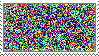
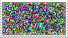

YOUR FLESH WILL EMBARRASS YOU!!!! YOUR FLESH WILL EMBARRASS YOU!!!! YOUR FLESH WILL EMBARRASS YOU!!!! YOUR FLESH WILL EMBARRASS YOU!!!! YOUR FLESH WILL EMBARRASS YOU!!!! YOUR FLESH WILL EMBARRASS YOU!!!! YOUR FLESH WILL EMBARRASS YOU!!!! YOUR FLESH WILL EMBARRASS YOU!!!! YOUR FLESH WILL EMBARRASS YOU!!!! YOUR FLESH WILL EMBARRASS YOU!!!! YOUR FLESH WILL EMBARRASS YOU!!!! YOUR FLESH WILL EMBARRASS YOU!!!! YOUR FLESH WILL EMBARRASS YOU!!!! YOUR FLESH WILL EMBARRASS YOU!!!! YOUR FLESH WILL EMBARRASS YOU!!!! YOUR FLESH WILL EMBARRASS YOU!!!! YOUR FLESH WILL EMBARRASS YOU!!!! YOUR FLESH WILL EMBARRASS YOU!!!! YOUR FLESH WILL EMBARRASS YOU!!!! YOUR FLESH WILL EMBARRASS YOU!!!! YOUR FLESH WILL EMBARRASS YOU!!!! YOUR FLESH WILL EMBARRASS YOU!!!! YOUR FLESH WILL EMBARRASS YOU!!!! YOUR FLESH WILL EMBARRASS YOU!!!! YOUR FLESH WILL EMBARRASS YOU!!!! YOUR FLESH WILL EMBARRASS YOU!!!! YOUR FLESH WILL EMBARRASS YOU!!!! YOUR FLESH WILL EMBARRASS YOU!!!! YOUR FLESH WILL EMBARRASS YOU!!!! YOUR FLESH WILL EMBARRASS YOU!!!! YOUR FLESH WILL EMBARRASS YOU!!!! YOUR FLESH WILL EMBARRASS YOU!!!! YOUR FLESH WILL EMBARRASS YOU!!!! YOUR FLESH WILL EMBARRASS YOU!!!! YOUR FLESH WILL EMBARRASS YOU!!!! YOUR FLESH WILL EMBARRASS YOU!!!! YOUR FLESH WILL EMBARRASS YOU!!!! YOUR FLESH WILL EMBARRASS YOU!!!! YOUR FLESH WILL EMBARRASS YOU!!!! YOUR FLESH WILL EMBARRASS YOU!!!! YOUR FLESH WILL EMBARRASS YOU!!!! YOUR FLESH WILL EMBARRASS YOU!!!! YOUR FLESH WILL EMBARRASS YOU!!!! YOUR FLESH WILL EMBARRASS YOU!!!! YOUR FLESH WILL EMBARRASS YOU!!!! YOUR FLESH WILL EMBARRASS YOU!!!! YOUR FLESH WILL EMBARRASS YOU!!!! YOUR FLESH WILL EMBARRASS YOU!!!! YOUR FLESH WILL EMBARRASS YOU!!!! YOUR FLESH WILL EMBARRASS YOU!!!! YOUR FLESH WILL EMBARRASS YOU!!!! YOUR FLESH WILL EMBARRASS YOU!!!! YOUR FLESH WILL EMBARRASS YOU!!!! YOUR FLESH WILL EMBARRASS YOU!!!! YOUR FLESH WILL EMBARRASS YOU!!!! YOUR FLESH WILL EMBARRASS YOU!!!! YOUR FLESH WILL EMBARRASS YOU!!!! YOUR FLESH WILL EMBARRASS YOU!!!! YOUR FLESH WILL EMBARRASS YOU!!!! YOUR FLESH WILL EMBARRASS YOU!!!! YOUR FLESH WILL EMBARRASS YOU!!!! YOUR FLESH WILL EMBARRASS YOU!!!! YOUR FLESH WILL EMBARRASS YOU!!!! YOUR FLESH WILL EMBARRASS YOU!!!! YOUR FLESH WILL EMBARRASS YOU!!!! YOUR FLESH WILL EMBARRASS YOU!!!! YOUR FLESH WILL EMBARRASS YOU!!!! YOUR FLESH WILL EMBARRASS YOU!!!! YOUR FLESH WILL EMBARRASS YOU!!!! YOUR FLESH WILL EMBARRASS YOU!!!! YOUR FLESH WILL EMBARRASS YOU!!!! YOUR FLESH WILL EMBARRASS YOU!!!! YOUR FLESH WILL EMBARRASS YOU!!!! YOUR FLESH WILL EMBARRASS YOU!!!! YOUR FLESH WILL EMBARRASS YOU!!!! YOUR FLESH WILL EMBARRASS YOU!!!! YOUR FLESH WILL EMBARRASS YOU!!!! YOUR FLESH WILL EMBARRASS YOU!!!! YOUR FLESH WILL EMBARRASS YOU!!!! YOUR FLESH WILL EMBARRASS YOU!!!! YOUR FLESH WILL EMBARRASS YOU!!!! YOUR FLESH WILL EMBARRASS YOU!!!! YOUR FLESH WILL EMBARRASS YOU!!!! YOUR FLESH WILL EMBARRASS YOU!!!! YOUR FLESH WILL EMBARRASS YOU!!!! YOUR FLESH WILL EMBARRASS YOU!!!! YOUR FLESH WILL EMBARRASS YOU!!!! YOUR FLESH WILL EMBARRASS YOU!!!! YOUR FLESH WILL EMBARRASS YOU!!!! YOUR FLESH WILL EMBARRASS YOU!!!! YOUR FLESH WILL EMBARRASS YOU!!!! YOUR FLESH WILL EMBARRASS YOU!!!! YOUR FLESH WILL EMBARRASS YOU!!!! YOUR FLESH WILL EMBARRASS YOU!!!! YOUR FLESH WILL EMBARRASS YOU!!!! YOUR FLESH WILL EMBARRASS YOU!!!! YOUR FLESH WILL EMBARRASS YOU!!!! YOUR FLESH WILL EMBARRASS YOU!!!! YOUR FLESH WILL EMBARRASS YOU!!!! YOUR FLESH WILL EMBARRASS YOU!!!! YOUR FLESH WILL EMBARRASS YOU!!!! YOUR FLESH WILL EMBARRASS YOU!!!! YOUR FLESH WILL EMBARRASS YOU!!!! YOUR FLESH WILL EMBARRASS YOU!!!! YOUR FLESH WILL EMBARRASS YOU!!!! YOUR FLESH WILL EMBARRASS YOU!!!! YOUR FLESH WILL EMBARRASS YOU!!!! YOUR FLESH WILL EMBARRASS YOU!!!! YOUR FLESH WILL EMBARRASS YOU!!!! YOUR FLESH WILL EMBARRASS YOU!!!! YOUR FLESH WILL EMBARRASS YOU!!!! YOUR FLESH WILL EMBARRASS YOU!!!! YOUR FLESH WILL EMBARRASS YOU!!!! YOUR FLESH WILL EMBARRASS YOU!!!! YOUR FLESH WILL EMBARRASS YOU!!!! YOUR FLESH WILL EMBARRASS YOU!!!! YOUR FLESH WILL EMBARRASS YOU!!!! YOUR FLESH WILL EMBARRASS YOU!!!! YOUR FLESH WILL EMBARRASS YOU!!!! YOUR FLESH WILL EMBARRASS YOU!!!! YOUR FLESH WILL EMBARRASS YOU!!!! YOUR FLESH WILL EMBARRASS YOU!!!! YOUR FLESH WILL EMBARRASS YOU!!!! YOUR FLESH WILL EMBARRASS YOU!!!! YOUR FLESH WILL EMBARRASS YOU!!!! YOUR FLESH WILL EMBARRASS YOU!!!! YOUR FLESH WILL EMBARRASS YOU!!!! YOUR FLESH WILL EMBARRASS YOU!!!! YOUR FLESH WILL EMBARRASS YOU!!!! YOUR FLESH WILL EMBARRASS YOU!!!! YOUR FLESH WILL EMBARRASS YOU!!!! YOUR FLESH WILL EMBARRASS YOU!!!! YOUR FLESH WILL EMBARRASS YOU!!!! YOUR FLESH WILL EMBARRASS YOU!!!! YOUR FLESH WILL EMBARRASS YOU!!!! YOUR FLESH WILL EMBARRASS YOU!!!! YOUR FLESH WILL EMBARRASS YOU!!!! YOUR FLESH WILL EMBARRASS YOU!!!! YOUR FLESH WILL EMBARRASS YOU!!!! YOUR FLESH WILL EMBARRASS YOU!!!! YOUR FLESH WILL EMBARRASS YOU!!!! YOUR FLESH WILL EMBARRASS YOU!!!! YOUR FLESH WILL EMBARRASS YOU!!!! YOUR FLESH WILL EMBARRASS YOU!!!! YOUR FLESH WILL EMBARRASS YOU!!!! YOUR FLESH WILL EMBARRASS YOU!!!! YOUR FLESH WILL EMBARRASS YOU!!!! YOUR FLESH WILL EMBARRASS YOU!!!! YOUR FLESH WILL EMBARRASS YOU!!!! YOUR FLESH WILL EMBARRASS YOU!!!! YOUR FLESH WILL EMBARRASS YOU!!!! YOUR FLESH WILL EMBARRASS YOU!!!! YOUR FLESH WILL EMBARRASS YOU!!!! YOUR FLESH WILL EMBARRASS YOU!!!! YOUR FLESH WILL EMBARRASS YOU!!!! YOUR FLESH WILL EMBARRASS YOU!!!! YOUR FLESH WILL EMBARRASS YOU!!!! YOUR FLESH WILL EMBARRASS YOU!!!!
fish is in space
all's right with the ocean
ḿ̶̡̜̱̪̘̜͓͖̤̓͛̕e̸̛̛̺̫̱̘̠̥͙̩̞͙͖͓̩̱̭̦̰͇̻̣̣̖̩͎̰̘̦͕͇͉̬̫͚̊͋͊̉̓̈̏͒̎̍̇̊̾͜͜͝ͅͅơ̸̡̲̠̼̣̦͙̮͖͚̳͚͔̝̳͍̯͖̩̯̰̳͍͎͇̜̦͈̏̏͊̈́̓̓͋͒́͆̂̾͜w̸̛̞̺̪̮̙̫̟̓̉͋̏͒̀͂́́͆̔̎͂͊͆̉̈̐͑̀̑̉̉̂̄͘͜͠ ̷̛͍̲̰͈͙̻̫̻́̑̀͛͐̾͌̄̂͒̎̓̓̑͋͒́͛͘̚͝ͅm̵̢̧̡̨̧̨͔̞͍͇̥̣̪̼͈̥̮̰͇̬͕͙̹̻̱̣̯̼̭̟̪̲̪͇̻̊͜ͅȩ̴̧̧̡̛͙͕̬̜͉̭̣̠̝͙̯̬͙͓̱̠̟̼̝͎̝͕̙̫͌̓̐̅̃̓͂̉̀͛͒͌̍̀̔̽͛̊̿̅͂̄͆̍̃̉̍̈́̔́̊͑̑̿̚̚͜ͅơ̶̛̮͉̰̣̝͊̈́̔̊̃̄̃͗̎̒̍̓͐̔̉͂̇̐̑́̄͑̅̈̒̔̽́̓͗͘͝͝w̴̨̪̞̲̫͓̘͚̦͔̗͙͇̋͋̎̐̇͛̆̿̏̎͒̎͛͗̍͑̊̎̆̔͛̾̇̔̅̄͂͋̑̆̈́͘̕͜͠͝͠͝ ̶̢̨̛̛̥̙̥̥̥͈̪̯̱͓̘̝̬̤̻̣̼͉͖͓͇̠͍̫͕͗̈́̀̍͋̒̓͗̏͌̊̈́̆̀̐͑͑̕̚͜͜͠͠m̵̨̨͓͙͕̲̣͕̩̟͇͈̰̬̙͉̹̗͍̙͙͕͑̋͐͗͊͒̉͌̂̓̌̎͐̿̚͜͜͝ͅé̴̡̧̛̝̱̱͎͔͙̣̣͉̈́̂́̔͂͋̃̈̅͌̋̆̓́̈̇̓̇̃̐̈́̈́̓̍̔͘͘͠ö̵̢̻̝̳͍̂̓͑͊̃́́͆͆w̵̢̨̡̢̢̛̥̺̗̝̰͓̬̱̤͓͇͈͖̣̟͍̙͈͙̱̼̦̪̣̰̝̋̀̅̾̿͛̈́̂͊̂̓̈́̊̀̎̽̍͂̎͂̄̓̓͋͛͗̚͜͜͝͝͝͝͝ ̴̼̤͈̠̦͈͕̬͊̊͐̀͒͒̍̾̈́͊͑̎̉̇͛͊̂̎̈̍̏̃̈́̄̕̕̕͘͝m̷̢̨̠̥̬̱̘͇̼͈̙͓̪̳͈͓̻̤̫͚̜̥̙̮̜͍̤̩̮̘̽̂̂̉͛̀͂̈́́̀̓́̔͂̒̈̀͛̂̈̕͘͜͝͠é̷̢̡̧̻̺͚̞̪̭͈̫̠̱̼̠̥͚͙̭̻͈͕̞͍̭̣͐̋̎͒́̔͊͊́̊̓͂̐̈́̀̒̃̎̚͜ͅo̴̲͚̮̹͚̘̠̭̪̘͚͙̭̻̦͚̗͖͚̪̬͇̪͑̉̄̉̈́͜͝w̷̧̜̦̋̅̀̑́̈̾͒̎̓̾̾̃̌̓̆̾̌̏̑̿͜ ̴̢̲̤͎̥̥̹̪͍͕̜͍͎̫͈͙̩̈́͆̆̽͝m̴̡̛̛̳̳̯͖͔̞͍͓͉͙̥̖̘͙͚̖͖̳̤̖̭̜͆͒͆̆̉͌́̔̎̅̈̓́͐̂̌͛̊͋̈́͋͂̽̎̔͘̕͘̚̚͝e̴̢̢̨̡͙̪͙͉̞̳̭̪̜̱̮̯̟͓̯͈̳̻̗̜̘͚̻̯̯̠̭̫̘̎̊o̴̧̢̳͈͈̯̯͍̞̹̭̫̻̪͎͙͓̭͖̩̼̜͓̾̈̈́̈́͆̈͂̆͂̇̋̿͗̃̀̈́̎͛̋́̊̉̽͘̕̚͘̕̚͜͝ͅẉ̶̧̧̨̨̢̗̹̣̬͓̺̮̰̺̟̥̳̰̦̻̤̜̮̹͖̰̦͓̪̝͉̣͇͇̥̀̇͋̏͛̈́̋̽̐̓̋̓͜ ̴̧̢̱͈̱̜̟͇͍̝̮͍͈͈̦̮̺̳͖̻̫̣̣̯̲͍͕͊́̀͒̈́̃̚m̵̉̌͂͂͒̀̎̆̏̎̑̐̈́̚͘̕͠͠ͅę̸̧̧̛̻̤͎̤̞͙̙̤̮͓̥͈͍͕̠̭̖͔͔̠̟̫̝̺̳̰̔̾̊͛͊̔̈́͆͒̽̃̈́̈́̍̎͗̕͠o̴̡͚̺͉̺̹͉͍̰͎͓̜̼͇̫͈̳̣̮̭̱͙̰̰̬͓̺̪͉̩͑̔̀̍͑͂̈̅͐̋̌̍̈̇̿͋̎̀̆̑̎͊̃̔̔̒́͝w̷̢̡̡̢͓̮̩̭̙̗̬̟̺̘͙̘̙̜̲͎̜̦͕̣̹͔͙̘͛͗͆̓̉̑͐̍̉̉̓̊̇́̿̈̏̈͘͝͝ͅ ̷̢̮̭̤̬̝͍̙̪͕̤͇̰̠͈̲͍͙̝͍̻̥̫̳̀̀̂͛̐̈͒̑͂̂̐͗̔̀̇̓͛̚͝m̸̡̧̨̖̟̝̝̟͚̰̫̖̠̭͈̯̦͓̬̤̼̝̉ȅ̷̛̛̛̟̹̙̒̍͆́͐̾̀͋̂̌͊͗͐̋̏̾́̽́̊̋͗̈́̃̚̕̚͘͠ȯ̴̧̢̱̺̹͚͔̠͇̺͔̖̜͍̮̭̬̝̗̻͙͎̬̩͔̜̬͕̹̠̲͙̳͉̼̖̊̊́͆͒̚w̵̢͖͍̖̱̥̻̙̥̻̙͈͚̭͙̞̲̰̱͉̺͓͙̹̮̹̳̦̮͈̟̩̤͑̉͊͒̀̇̄̓̀͊̌̆́̋́̏́͊̑̊̆͆̊̒͒̎͋͌̆̈́͘͘̚͝͝ ̶̢̢̛̖͈̖̩̼̏͌̌̽͗̏͆͗̓́̈́͑̓́̿͋̏̓̔͑͐̈͊͗̕̕m̵̮̯͈̤̮̜̩̰̈́̑̓̽̅̓͆͂̀̿͑̌̄̂̆̕e̷̢̡̜͔̹͈̺̩̦͖͎̥̱̹̲̥̩̞͎̫̺͉̭͉͚̫̭͙͇͔̫̺͕̭̱͍̿̄̽̾̀̃͐̂͊̄̔̅̈͗̽̑̐̽̚o̴̡̧͕̱̘͈̟̯͍͔̱̬̝̼̲͓͎̲̺͙̒̈̒͋̍͒̀̐̂̓͗̾̑͌́̋̾̀̽̐̊̏̍̋̔̂̑̈́͋͗̂̄̚͘͝w̸̧̛̮͔̞̯̰̥̳͈̹̻̜͚̬̣̪̞͎̣͙̪̳̤̰͚̣̼̜̔͊͐́͐͌̊̈́̀͌̐͑͐̐̈̌̍́̓͋̓͂͊̂̄͑͜͜ͅ ̴͓̫͎̲̜̟̫͚̠͉̬̝̖̱̄̓̌̓̏̈́̓̀̄̔̋̐̋́̈́͒̽̚͜m̷̡̰͕͔̩̺̗̮̹̀̓̌̀̎͆̈́̆͛̏̉̂̈́͂̒̇̊̊͐̿̿̓́̉̄̃̆̂̋̋̌̕̚̚͘͠͝ẻ̷̛͖̪̦͑̉̇̍͂̂́̾̽͌̂̏͗̃̄̈́͗̋̃̇͋͋̎̆́̍͑̀̃͘͜͝͠͝o̶̺͋̋̔͐͌w̷̡̡̡̩͔̖̞̘̯̺̟͎̜̩̩̣̰̹͈̗̭̳͔̺̮̥̝̔͗͌̋̅̇̊̀̆̈͂̈̋̃̈́͂̈́̈́͆̀̉̽̕̚͘͜͝͠͝ͅ ḿ̶̡̜̱̪̘̜͓͖̤̓͛̕e̸̛̛̺̫̱̘̠̥͙̩̞͙͖͓̩̱̭̦̰͇̻̣̣̖̩͎̰̘̦͕͇͉̬̫͚̊͋͊̉̓̈̏͒̎̍̇̊̾͜͜͝ͅͅơ̸̡̲̠̼̣̦͙̮͖͚̳͚͔̝̳͍̯͖̩̯̰̳͍͎͇̜̦͈̏̏͊̈́̓̓͋͒́͆̂̾͜w̸̛̞̺̪̮̙̫̟̓̉͋̏͒̀͂́́͆̔̎͂͊͆̉̈̐͑̀̑̉̉̂̄͘͜͠ ̷̛͍̲̰͈͙̻̫̻́̑̀͛͐̾͌̄̂͒̎̓̓̑͋͒́͛͘̚͝ͅm̵̢̧̡̨̧̨͔̞͍͇̥̣̪̼͈̥̮̰͇̬͕͙̹̻̱̣̯̼̭̟̪̲̪͇̻̊͜ͅȩ̴̧̧̡̛͙͕̬̜͉̭̣̠̝͙̯̬͙͓̱̠̟̼̝͎̝͕̙̫͌̓̐̅̃̓͂̉̀͛͒͌̍̀̔̽͛̊̿̅͂̄͆̍̃̉̍̈́̔́̊͑̑̿̚̚͜ͅơ̶̛̮͉̰̣̝͊̈́̔̊̃̄̃͗̎̒̍̓͐̔̉͂̇̐̑́̄͑̅̈̒̔̽́̓͗͘͝͝w̴̨̪̞̲̫͓̘͚̦͔̗͙͇̋͋̎̐̇͛̆̿̏̎͒̎͛͗̍͑̊̎̆̔͛̾̇̔̅̄͂͋̑̆̈́͘̕͜͠͝͠͝ ̶̢̨̛̛̥̙̥̥̥͈̪̯̱͓̘̝̬̤̻̣̼͉͖͓͇̠͍̫͕͗̈́̀̍͋̒̓͗̏͌̊̈́̆̀̐͑͑̕̚͜͜͠͠m̵̨̨͓͙͕̲̣͕̩̟͇͈̰̬̙͉̹̗͍̙͙͕͑̋͐͗͊͒̉͌̂̓̌̎͐̿̚͜͜͝ͅé̴̡̧̛̝̱̱͎͔͙̣̣͉̈́̂́̔͂͋̃̈̅͌̋̆̓́̈̇̓̇̃̐̈́̈́̓̍̔͘͘͠ö̵̢̻̝̳͍̂̓͑͊̃́́͆͆w̵̢̨̡̢̢̛̥̺̗̝̰͓̬̱̤͓͇͈͖̣̟͍̙͈͙̱̼̦̪̣̰̝̋̀̅̾̿͛̈́̂͊̂̓̈́̊̀̎̽̍͂̎͂̄̓̓͋͛͗̚͜͜͝͝͝͝͝ ̴̼̤͈̠̦͈͕̬͊̊͐̀͒͒̍̾̈́͊͑̎̉̇͛͊̂̎̈̍̏̃̈́̄̕̕̕͘͝m̷̢̨̠̥̬̱̘͇̼͈̙͓̪̳͈͓̻̤̫͚̜̥̙̮̜͍̤̩̮̘̽̂̂̉͛̀͂̈́́̀̓́̔͂̒̈̀͛̂̈̕͘͜͝͠é̷̢̡̧̻̺͚̞̪̭͈̫̠̱̼̠̥͚͙̭̻͈͕̞͍̭̣͐̋̎͒́̔͊͊́̊̓͂̐̈́̀̒̃̎̚͜ͅo̴̲͚̮̹͚̘̠̭̪̘͚͙̭̻̦͚̗͖͚̪̬͇̪͑̉̄̉̈́͜͝w̷̧̜̦̋̅̀̑́̈̾͒̎̓̾̾̃̌̓̆̾̌̏̑̿͜ ̴̢̲̤͎̥̥̹̪͍͕̜͍͎̫͈͙̩̈́͆̆̽͝m̴̡̛̛̳̳̯͖͔̞͍͓͉͙̥̖̘͙͚̖͖̳̤̖̭̜͆͒͆̆̉͌́̔̎̅̈̓́͐̂̌͛̊͋̈́͋͂̽̎̔͘̕͘̚̚͝e̴̢̢̨̡͙̪͙͉̞̳̭̪̜̱̮̯̟͓̯͈̳̻̗̜̘͚̻̯̯̠̭̫̘̎̊o̴̧̢̳͈͈̯̯͍̞̹̭̫̻̪͎͙͓̭͖̩̼̜͓̾̈̈́̈́͆̈͂̆͂̇̋̿͗̃̀̈́̎͛̋́̊̉̽͘̕̚͘̕̚͜͝ͅẉ̶̧̧̨̨̢̗̹̣̬͓̺̮̰̺̟̥̳̰̦̻̤̜̮̹͖̰̦͓̪̝͉̣͇͇̥̀̇͋̏͛̈́̋̽̐̓̋̓͜ ̴̧̢̱͈̱̜̟͇͍̝̮͍͈͈̦̮̺̳͖̻̫̣̣̯̲͍͕͊́̀͒̈́̃̚m̵̉̌͂͂͒̀̎̆̏̎̑̐̈́̚͘̕͠͠ͅę̸̧̧̛̻̤͎̤̞͙̙̤̮͓̥͈͍͕̠̭̖͔͔̠̟̫̝̺̳̰̔̾̊͛͊̔̈́͆͒̽̃̈́̈́̍̎͗̕͠o̴̡͚̺͉̺̹͉͍̰͎͓̜̼͇̫͈̳̣̮̭̱͙̰̰̬͓̺̪͉̩͑̔̀̍͑͂̈̅͐̋̌̍̈̇̿͋̎̀̆̑̎͊̃̔̔̒́͝w̷̢̡̡̢͓̮̩̭̙̗̬̟̺̘͙̘̙̜̲͎̜̦͕̣̹͔͙̘͛͗͆̓̉̑͐̍̉̉̓̊̇́̿̈̏̈͘͝͝ͅ ̷̢̮̭̤̬̝͍̙̪͕̤͇̰̠͈̲͍͙̝͍̻̥̫̳̀̀̂͛̐̈͒̑͂̂̐͗̔̀̇̓͛̚͝m̸̡̧̨̖̟̝̝̟͚̰̫̖̠̭͈̯̦͓̬̤̼̝̉ȅ̷̛̛̛̟̹̙̒̍͆́͐̾̀͋̂̌͊͗͐̋̏̾́̽́̊̋͗̈́̃̚̕̚͘͠ȯ̴̧̢̱̺̹͚͔̠͇̺͔̖̜͍̮̭̬̝̗̻͙͎̬̩͔̜̬͕̹̠̲͙̳͉̼̖̊̊́͆͒̚w̵̢͖͍̖̱̥̻̙̥̻̙͈͚̭͙̞̲̰̱͉̺͓͙̹̮̹̳̦̮͈̟̩̤͑̉͊͒̀̇̄̓̀͊̌̆́̋́̏́͊̑̊̆͆̊̒͒̎͋͌̆̈́͘͘̚͝͝ ̶̢̢̛̖͈̖̩̼̏͌̌̽͗̏͆͗̓́̈́͑̓́̿͋̏̓̔͑͐̈͊͗̕̕m̵̮̯͈̤̮̜̩̰̈́̑̓̽̅̓͆͂̀̿͑̌̄̂̆̕e̷̢̡̜͔̹͈̺̩̦͖͎̥̱̹̲̥̩̞͎̫̺͉̭͉͚̫̭͙͇͔̫̺͕̭̱͍̿̄̽̾̀̃͐̂͊̄̔̅̈͗̽̑̐̽̚o̴̡̧͕̱̘͈̟̯͍͔̱̬̝̼̲͓͎̲̺͙̒̈̒͋̍͒̀̐̂̓͗̾̑͌́̋̾̀̽̐̊̏̍̋̔̂̑̈́͋͗̂̄̚͘͝w̸̧̛̮͔̞̯̰̥̳͈̹̻̜͚̬̣̪̞͎̣͙̪̳̤̰͚̣̼̜̔͊͐́͐͌̊̈́̀͌̐͑͐̐̈̌̍́̓͋̓͂͊̂̄͑͜͜ͅ ̴͓̫͎̲̜̟̫͚̠͉̬̝̖̱̄̓̌̓̏̈́̓̀̄̔̋̐̋́̈́͒̽̚͜m̷̡̰͕͔̩̺̗̮̹̀̓̌̀̎͆̈́̆͛̏̉̂̈́͂̒̇̊̊͐̿̿̓́̉̄̃̆̂̋̋̌̕̚̚͘͠͝ẻ̷̛͖̪̦͑̉̇̍͂̂́̾̽͌̂̏͗̃̄̈́͗̋̃̇͋͋̎̆́̍͑̀̃͘͜͝͠͝o̶̺͋̋̔͐͌w̷̡̡̡̩͔̖̞̘̯̺̟͎̜̩̩̣̰̹͈̗̭̳͔̺̮̥̝̔͗͌̋̅̇̊̀̆̈͂̈̋̃̈́͂̈́̈́͆̀̉̽̕̚͘͜͝͠͝ͅ ḿ̶̡̜̱̪̘̜͓͖̤̓͛̕e̸̛̛̺̫̱̘̠̥͙̩̞͙͖͓̩̱̭̦̰͇̻̣̣̖̩͎̰̘̦͕͇͉̬̫͚̊͋͊̉̓̈̏͒̎̍̇̊̾͜͜͝ͅͅơ̸̡̲̠̼̣̦͙̮͖͚̳͚͔̝̳͍̯͖̩̯̰̳͍͎͇̜̦͈̏̏͊̈́̓̓͋͒́͆̂̾͜w̸̛̞̺̪̮̙̫̟̓̉͋̏͒̀͂́́͆̔̎͂͊͆̉̈̐͑̀̑̉̉̂̄͘͜͠ ̷̛͍̲̰͈͙̻̫̻́̑̀͛͐̾͌̄̂͒̎̓̓̑͋͒́͛͘̚͝ͅm̵̢̧̡̨̧̨͔̞͍͇̥̣̪̼͈̥̮̰͇̬͕͙̹̻̱̣̯̼̭̟̪̲̪͇̻̊͜ͅȩ̴̧̧̡̛͙͕̬̜͉̭̣̠̝͙̯̬͙͓̱̠̟̼̝͎̝͕̙̫͌̓̐̅̃̓͂̉̀͛͒͌̍̀̔̽͛̊̿̅͂̄͆̍̃̉̍̈́̔́̊͑̑̿̚̚͜ͅơ̶̛̮͉̰̣̝͊̈́̔̊̃̄̃͗̎̒̍̓͐̔̉͂̇̐̑́̄͑̅̈̒̔̽́̓͗͘͝͝w̴̨̪̞̲̫͓̘͚̦͔̗͙͇̋͋̎̐̇͛̆̿̏̎͒̎͛͗̍͑̊̎̆̔͛̾̇̔̅̄͂͋̑̆̈́͘̕͜͠͝͠͝ ̶̢̨̛̛̥̙̥̥̥͈̪̯̱͓̘̝̬̤̻̣̼͉͖͓͇̠͍̫͕͗̈́̀̍͋̒̓͗̏͌̊̈́̆̀̐͑͑̕̚͜͜͠͠m̵̨̨͓͙͕̲̣͕̩̟͇͈̰̬̙͉̹̗͍̙͙͕͑̋͐͗͊͒̉͌̂̓̌̎͐̿̚͜͜͝ͅé̴̡̧̛̝̱̱͎͔͙̣̣͉̈́̂́̔͂͋̃̈̅͌̋̆̓́̈̇̓̇̃̐̈́̈́̓̍̔͘͘͠ö̵̢̻̝̳͍̂̓͑͊̃́́͆͆w̵̢̨̡̢̢̛̥̺̗̝̰͓̬̱̤͓͇͈͖̣̟͍̙͈͙̱̼̦̪̣̰̝̋̀̅̾̿͛̈́̂͊̂̓̈́̊̀̎̽̍͂̎͂̄̓̓͋͛͗̚͜͜͝͝͝͝͝ ̴̼̤͈̠̦͈͕̬͊̊͐̀͒͒̍̾̈́͊͑̎̉̇͛͊̂̎̈̍̏̃̈́̄̕̕̕͘͝m̷̢̨̠̥̬̱̘͇̼͈̙͓̪̳͈͓̻̤̫͚̜̥̙̮̜͍̤̩̮̘̽̂̂̉͛̀͂̈́́̀̓́̔͂̒̈̀͛̂̈̕͘͜͝͠é̷̢̡̧̻̺͚̞̪̭͈̫̠̱̼̠̥͚͙̭̻͈͕̞͍̭̣͐̋̎͒́̔͊͊́̊̓͂̐̈́̀̒̃̎̚͜ͅo̴̲͚̮̹͚̘̠̭̪̘͚͙̭̻̦͚̗͖͚̪̬͇̪͑̉̄̉̈́͜͝w̷̧̜̦̋̅̀̑́̈̾͒̎̓̾̾̃̌̓̆̾̌̏̑̿͜ ̶̢̢̛̖͈̖̩̼̏͌̌̽͗̏͆͗̓́̈́͑̓́̿͋̏̓̔͑͐̈͊͗̕̕m̵̮̯͈̤̮̜̩̰̈́̑̓̽̅̓͆͂̀̿͑̌̄̂̆̕e̷̢̡̜͔̹͈̺̩̦͖͎̥̱̹̲̥̩̞͎̫̺͉̭͉͚̫̭͙͇͔̫̺͕̭̱͍̿̄̽̾̀̃͐̂͊̄̔̅̈͗̽̑̐̽̚o̴̡̧͕̱̘͈̟̯͍͔̱̬̝̼̲͓͎̲̺͙̒̈̒͋̍͒̀̐̂̓͗̾̑͌́̋̾̀̽̐̊̏̍̋̔̂̑̈́͋͗̂̄̚͘͝w̸̧̛̮͔̞̯̰̥̳͈̹̻̜͚̬̣̪̞͎̣͙̪̳̤̰͚̣̼̜̔͊͐́͐͌̊̈́̀͌̐͑͐̐̈̌̍́̓͋̓͂͊̂̄͑͜͜ͅ ̴͓̫͎̲̜̟̫͚̠͉̬̝̖̱̄̓̌̓̏̈́̓̀̄̔̋̐̋́̈́͒̽̚͜m̷̡̰͕͔̩̺̗̮̹̀̓̌̀̎͆̈́̆͛̏̉̂̈́͂̒̇̊̊͐̿̿̓́̉̄̃̆̂̋̋̌̕̚̚͘͠͝ẻ̷̛͖̪̦͑̉̇̍͂̂́̾̽͌̂̏͗̃̄̈́͗̋̃̇͋͋̎̆́̍͑̀̃͘͜͝͠͝o̶̺͋̋̔͐͌w̷̡̡̡̩͔̖̞̘̯̺̟͎̜̩̩̣̰̹͈̗̭̳͔̺̮̥̝̔͗͌̋̅̇̊̀̆̈͂̈̋̃̈́͂̈́̈́͆̀̉̽̕̚͘͜͝͠͝ͅḿ̶̡̜̱̪̘̜͓͖̤̓͛̕e̸̛̛̺̫̱̘̠̥͙̩̞͙͖͓̩̱̭̦̰͇̻̣̣̖̩͎̰̘̦͕͇͉̬̫͚̊͋͊̉̓̈̏͒̎̍̇̊̾͜͜͝ͅͅơ̸̡̲̠̼̣̦͙̮͖͚̳͚͔̝̳͍̯͖̩̯̰̳͍͎͇̜̦͈̏̏͊̈́̓̓͋͒́͆̂̾͜w̸̛̞̺̪̮̙̫̟̓̉͋̏͒̀͂́́͆̔̎͂͊͆̉̈̐͑̀̑̉̉̂̄͘͜͠ ̷̛͍̲̰͈͙̻̫̻́̑̀͛͐̾͌̄̂͒̎̓̓̑͋͒́͛͘̚͝ͅm̵̢̧̡̨̧̨͔̞͍͇̥̣̪̼͈̥̮̰͇̬͕͙̹̻̱̣̯̼̭̟̪̲̪͇̻̊͜ͅȩ̴̧̧̡̛͙͕̬̜͉̭̣̠̝͙̯̬͙͓̱̠̟̼̝͎̝͕̙̫͌̓̐̅̃̓͂̉̀͛͒͌̍̀̔̽͛̊̿̅͂̄͆̍̃̉̍̈́̔́̊͑̑̿̚̚͜ͅơ̶̛̮͉̰̣̝͊̈́̔̊̃̄̃͗̎̒̍̓͐̔̉͂̇̐̑́̄͑̅̈̒̔̽́̓͗͘͝͝w̴̨̪̞̲̫͓̘͚̦͔̗͙͇̋͋̎̐̇͛̆̿̏̎͒̎͛͗̍͑̊̎̆̔͛̾̇̔̅̄͂͋̑̆̈́͘̕͜͠͝͠͝ ̶̢̨̛̛̥̙̥̥̥͈̪̯̱͓̘̝̬̤̻̣̼͉͖͓͇̠͍̫͕͗̈́̀̍͋̒̓͗̏͌̊̈́̆̀̐͑͑̕̚͜͜͠͠m̵̨̨͓͙͕̲̣͕̩̟͇͈̰̬̙͉̹̗͍̙͙͕͑̋͐͗͊͒̉͌̂̓̌̎͐̿̚͜͜͝ͅé̴̡̧̛̝̱̱͎͔͙̣̣͉̈́̂́̔͂͋̃̈̅͌̋̆̓́̈̇̓̇̃̐̈́̈́̓̍̔͘͘͠ö̵̢̻̝̳͍̂̓͑͊̃́́͆͆w̵̢̨̡̢̢̛̥̺̗̝̰͓̬̱̤͓͇͈͖̣̟͍̙͈͙̱̼̦̪̣̰̝̋̀̅̾̿͛̈́̂͊̂̓̈́̊̀̎̽̍͂̎͂̄̓̓͋͛͗̚͜͜͝͝͝͝͝ ̴̼̤͈̠̦͈͕̬͊̊͐̀͒͒̍̾̈́͊͑̎̉̇͛͊̂̎̈̍̏̃̈́̄̕̕̕͘͝m̷̢̨̠̥̬̱̘͇̼͈̙͓̪̳͈͓̻̤̫͚̜̥̙̮̜͍̤̩̮̘̽̂̂̉͛̀͂̈́́̀̓́̔͂̒̈̀͛̂̈̕͘͜͝͠é̷̢̡̧̻̺͚̞̪̭͈̫̠̱̼̠̥͚͙̭̻͈͕̞͍̭̣͐̋̎͒́̔͊͊́̊̓͂̐̈́̀̒̃̎̚͜ͅo̴̲͚̮̹͚̘̠̭̪̘͚͙̭̻̦͚̗͖͚̪̬͇̪͑̉̄̉̈́͜͝w̷̧̜̦̋̅̀̑́̈̾͒̎̓̾̾̃̌̓̆̾̌̏̑̿͜ ̴̢̲̤͎̥̥̹̪͍͕̜͍͎̫͈͙̩̈́͆̆̽͝m̴̡̛̛̳̳̯͖͔̞͍͓͉͙̥̖̘͙͚̖͖̳̤̖̭̜͆͒͆̆̉͌́̔̎̅̈̓́͐̂̌͛̊͋̈́͋͂̽̎̔͘̕͘̚̚͝e̴̢̢̨̡͙̪͙͉̞̳̭̪̜̱̮̯̟͓̯͈̳̻̗̜̘͚̻̯̯̠̭̫̘̎̊o̴̧̢̳͈͈̯̯͍̞̹̭̫̻̪͎͙͓̭͖̩̼̜͓̾̈̈́̈́͆̈͂̆͂̇̋̿͗̃̀̈́̎͛̋́̊̉̽͘̕̚͘̕̚͜͝ͅẉ̶̧̧̨̨̢̗̹̣̬͓̺̮̰̺̟̥̳̰̦̻̤̜̮̹͖̰̦͓̪̝͉̣͇͇̥̀̇͋̏͛̈́̋̽̐̓̋̓͜ ̴̧̢̱͈̱̜̟͇͍̝̮͍͈͈̦̮̺̳͖̻̫̣̣̯̲͍͕͊́̀͒̈́̃̚m̵̉̌͂͂͒̀̎̆̏̎̑̐̈́̚͘̕͠͠ͅę̸̧̧̛̻̤͎̤̞͙̙̤̮͓̥͈͍͕̠̭̖͔͔̠̟̫̝̺̳̰̔̾̊͛͊̔̈́͆͒̽̃̈́̈́̍̎͗̕͠o̴̡͚̺͉̺̹͉͍̰͎͓̜̼͇̫͈̳̣̮̭̱͙̰̰̬͓̺̪͉̩͑̔̀̍͑͂̈̅͐̋̌̍̈̇̿͋̎̀̆̑̎͊̃̔̔̒́͝w̷̢̡̡̢͓̮̩̭̙̗̬̟̺̘͙̘̙̜̲͎̜̦͕̣̹͔͙̘͛͗͆̓̉̑͐̍̉̉̓̊̇́̿̈̏̈͘͝͝ͅ ̷̢̮̭̤̬̝͍̙̪͕̤͇̰̠͈̲͍͙̝͍̻̥̫̳̀̀̂͛̐̈͒̑͂̂̐͗̔̀̇̓͛̚͝m̸̡̧̨̖̟̝̝̟͚̰̫̖̠̭͈̯̦͓̬̤̼̝̉ȅ̷̛̛̛̟̹̙̒̍͆́͐̾̀͋̂̌͊͗͐̋̏̾́̽́̊̋͗̈́̃̚̕̚͘͠ȯ̴̧̢̱̺̹͚͔̠͇̺͔̖̜͍̮̭̬̝̗̻͙͎̬̩͔̜̬͕̹̠̲͙̳͉̼̖̊̊́͆͒̚w̵̢͖͍̖̱̥̻̙̥̻̙͈͚̭͙̞̲̰̱͉̺͓͙̹̮̹̳̦̮͈̟̩̤͑̉͊͒̀̇̄̓̀͊̌̆́̋́̏́͊̑̊̆͆̊̒͒̎͋͌̆̈́͘͘̚͝͝ ̶̢̢̛̖͈̖̩̼̏͌̌̽͗̏͆͗̓́̈́͑̓́̿͋̏̓̔͑͐̈͊͗̕̕m̵̮̯͈̤̮̜̩̰̈́̑̓̽̅̓͆͂̀̿͑̌̄̂̆̕e̷̢̡̜͔̹͈̺̩̦͖͎̥̱̹̲̥̩̞͎̫̺͉̭͉͚̫̭͙͇͔̫̺͕̭̱͍̿̄̽̾̀̃͐̂͊̄̔̅̈͗̽̑̐̽̚o̴̡̧͕̱̘͈̟̯͍͔̱̬̝̼̲͓͎̲̺͙̒̈̒͋̍͒̀̐̂̓͗̾̑͌́̋̾̀̽̐̊̏̍̋̔̂̑̈́͋͗̂̄̚͘͝w̸̧̛̮͔̞̯̰̥̳͈̹̻̜͚̬̣̪̞͎̣͙̪̳̤̰͚̣̼̜̔͊͐́͐͌̊̈́̀͌̐͑͐̐̈̌̍́̓͋̓͂͊̂̄͑͜͜ͅ ̴͓̫͎̲̜̟̫͚̠͉̬̝̖̱̄̓̌̓̏̈́̓̀̄̔̋̐̋́̈́͒̽̚͜m̷̡̰͕͔̩̺̗̮̹̀̓̌̀̎͆̈́̆͛̏̉̂̈́͂̒̇̊̊͐̿̿̓́̉̄̃̆̂̋̋̌̕̚̚͘͠͝ẻ̷̛͖̪̦͑̉̇̍͂̂́̾̽͌̂̏͗̃̄̈́͗̋̃̇͋͋̎̆́̍͑̀̃͘͜͝͠͝o̶̺͋̋̔͐͌w̷̴̡̢̩͔̖̞̘̯̺̟͎̜̩̲̤͎̥̥̹̪͍͕̜͍͎̫͈͙̩̔͗͌̋̅̇̊̀̆̈͂̈̋̃̈́͂̈́̈́͆̀̉̽̈́͆̆̽̕̚͘͜͝͠͝͝ͅm̴̡̛̛̳̳̯͖͔̞͍͓͉͙̥̖̘͙͚̖͖̳̤̖̭̜͆͒͆̆̉͌́̔̎̅̈̓́͐̂̌͛̊͋̈́͋͂̽̎̔͘̕͘̚̚͝e̴̢̢̨̡͙̪͙͉̞̳̭̪̜̱̮̯̟͓̯͈̳̻̗̜̘͚̻̯̯̠̭̫̘̎̊o̴̧̢̳͈͈̯̯͍̞̹̭̫̻̪͎͙͓̭͖̩̼̜͓̾̈̈́̈́͆̈͂̆͂̇̋̿͗̃̀̈́̎͛̋́̊̉̽͘̕̚͘̕̚͜͝ͅẉ̶̧̧̨̨̢̗̹̣̬͓̺̮̰̺̟̥̳̰̦̻̤̜̮̹͖̰̦͓̪̝͉̣͇͇̥̀̇͋̏͛̈́̋̽̐̓̋̓͜ ̴̧̢̱͈̱̜̟͇͍̝̮͍͈͈̦̮̺̳͖̻̫̣̣̯̲͍͕͊́̀͒̈́̃̚m̵̉̌͂͂͒̀̎̆̏̎̑̐̈́̚͘̕͠͠ͅę̸̧̧̛̻̤͎̤̞͙̙̤̮͓̥͈͍͕̠̭̖͔͔̠̟̫̝̺̳̰̔̾̊͛͊̔̈́͆͒̽̃̈́̈́̍̎͗̕͠o̴̡͚̺͉̺̹͉͍̰͎͓̜̼͇̫͈̳̣̮̭̱͙̰̰̬͓̺̪͉̩͑̔̀̍͑͂̈̅͐̋̌̍̈̇̿͋̎̀̆̑̎͊̃̔̔̒́͝w̷̢̡̡̢͓̮̩̭̙̗̬̟̺̘͙̘̙̜̲͎̜̦͕̣̹͔͙̘͛͗͆̓̉̑͐̍̉̉̓̊̇́̿̈̏̈͘͝͝ͅ ̷̢̮̭̤̬̝͍̙̪͕̤͇̰̠͈̲͍͙̝͍̻̥̫̳̀̀̂͛̐̈͒̑͂̂̐͗̔̀̇̓͛̚͝m̸̡̧̨̖̟̝̝̟͚̰̫̖̠̭͈̯̦͓̬̤̼̝̉ȅ̷̛̛̛̟̹̙̒̍͆́͐̾̀͋̂̌͊͗͐̋̏̾́̽́̊̋͗̈́̃̚̕̚͘͠ȯ̴̧̢̱̺̹͚͔̠͇̺͔̖̜͍̮̭̬̝̗̻͙͎̬̩͔̜̬͕̹̠̲͙̳͉̼̖̊̊́͆͒̚w̵̢͖͍̖̱̥̻̙̥̻̙͈͚̭͙̞̲̰̱͉̺͓͙̹̮̹̳̦̮͈̟̩̤͑̉͊͒̀̇̄̓̀͊̌̆́̋́̏́͊̑̊̆͆̊̒͒̎͋͌̆̈́͘͘̚͝͝ ̶̢̢̛̖͈̖̩̼̏͌̌̽͗̏͆͗̓́̈́͑̓́̿͋̏̓̔͑͐̈͊͗̕̕m̵̮̯͈̤̮̜̩̰̈́̑̓̽̅̓͆͂̀̿͑̌̄̂̆̕e̷̢̡̜͔̹͈̺̩̦͖͎̥̱̹̲̥̩̞͎̫̺͉̭͉͚̫̭͙͇͔̫̺͕̭̱͍̿̄̽̾̀̃͐̂͊̄̔̅̈͗̽̑̐̽̚o̴̡̧͕̱̘͈̟̯͍͔̱̬̝̼̲͓͎̲̺͙̒̈̒͋̍͒̀̐̂̓͗̾̑͌́̋̾̀̽̐̊̏̍̋̔̂̑̈́͋͗̂̄̚͘͝w̸̧̛̮͔̞̯̰̥̳͈̹̻̜͚̬̣̪̞͎̣͙̪̳̤̰͚̣̼̜̔͊͐́͐͌̊̈́̀͌̐͑͐̐̈̌̍́̓͋̓͂͊̂̄͑͜͜ͅ ̴͓̫͎̲̜̟̫͚̠͉̬̝̖̱̄̓̌̓̏̈́̓̀̄̔̋̐̋́̈́͒̽̚͜m̷̡̰͕͔̩̺̗̮̹̀̓̌̀̎͆̈́̆͛̏̉̂̈́͂̒̇̊̊͐̿̿̓́̉̄̃̆̂̋̋̌̕̚̚͘͠͝ẻ̷̛͖̪̦͑̉̇̍͂̂́̾̽͌̂̏͗̃̄̈́͗̋̃̇͋͋̎̆́̍͑̀̃͘͜͝͠͝o̶̺͋̋̔͐͌w̷̡̡̡̩͔̖̞̘̯̺̟͎̜̩̩̣̰̹͈̗̭̳͔̺̮̥̝̔͗͌̋̅̇̊̀̆̈͂̈̋̃̈́͂̈́̈́͆̀̉̽̕̚͘͜͝͠͝ͅḿ̶̡̜̱̪̘̜͓͖̤̓͛̕e̸̛̛̺̫̱̘̠̥͙̩̞͙͖͓̩̱̭̦̰͇̻̣̣̖̩͎̰̘̦͕͇͉̬̫͚̊͋͊̉̓̈̏͒̎̍̇̊̾͜͜͝ͅͅơ̸̡̲̠̼̣̦͙̮͖͚̳͚͔̝̳͍̯͖̩̯̰̳͍͎͇̜̦͈̏̏͊̈́̓̓͋͒́͆̂̾͜w̸̛̞̺̪̮̙̫̟̓̉͋̏͒̀͂́́͆̔̎͂͊͆̉̈̐͑̀̑̉̉̂̄͘͜͠ ̷̛͍̲̰͈͙̻̫̻́̑̀͛͐̾͌̄̂͒̎̓̓̑͋͒́͛͘̚͝ͅm̵̢̧̡̨̧̨͔̞͍͇̥̣̪̼͈̥̮̰͇̬͕͙̹̻̱̣̯̼̭̟̪̲̪͇̻̊͜ͅȩ̴̧̧̡̛͙͕̬̜͉̭̣̠̝͙̯̬͙͓̱̠̟̼̝͎̝͕̙̫͌̓̐̅̃̓͂̉̀͛͒͌̍̀̔̽͛̊̿̅͂̄͆̍̃̉̍̈́̔́̊͑̑̿̚̚͜ͅơ̶̛̮͉̰̣̝͊̈́̔̊̃̄̃͗̎̒̍̓͐̔̉͂̇̐̑́̄͑̅̈̒̔̽́̓͗͘͝͝w̴̨̪̞̲̫͓̘͚̦͔̗͙͇̋͋̎̐̇͛̆̿̏̎͒̎͛͗̍͑̊̎̆̔͛̾̇̔̅̄͂͋̑̆̈́͘̕͜͠͝͠͝ ̶̢̨̛̛̥̙̥̥̥͈̪̯̱͓̘̝̬̤̻̣̼͉͖͓͇̠͍̫͕͗̈́̀̍͋̒̓͗̏͌̊̈́̆̀̐͑͑̕̚͜͜͠͠m̵̨̨͓͙͕̲̣͕̩̟͇͈̰̬̙͉̹̗͍̙͙͕͑̋͐͗͊͒̉͌̂̓̌̎͐̿̚͜͜͝ͅé̴̡̧̛̝̱̱͎͔͙̣̣͉̈́̂́̔͂͋̃̈̅͌̋̆̓́̈̇̓̇̃̐̈́̈́̓̍̔͘͘͠ö̵̢̻̝̳͍̂̓͑͊̃́́͆͆w̵̢̨̡̢̢̛̥̺̗̝̰͓̬̱̤͓͇͈͖̣̟͍̙͈͙̱̼̦̪̣̰̝̋̀̅̾̿͛̈́̂͊̂̓̈́̊̀̎̽̍͂̎͂̄̓̓͋͛͗̚͜͜͝͝͝͝͝ ̴̼̤͈̠̦͈͕̬͊̊͐̀͒͒̍̾̈́͊͑̎̉̇͛͊̂̎̈̍̏̃̈́̄̕̕̕͘͝m̷̢̨̠̥̬̱̘͇̼͈̙͓̪̳͈͓̻̤̫͚̜̥̙̮̜͍̤̩̮̘̽̂̂̉͛̀͂̈́́̀̓́̔͂̒̈̀͛̂̈̕͘͜͝͠é̷̢̡̧̻̺͚̞̪̭͈̫̠̱̼̠̥͚͙̭̻͈͕̞͍̭̣͐̋̎͒́̔͊͊́̊̓͂̐̈́̀̒̃̎̚͜ͅo̴̲͚̮̹͚̘̠̭̪̘͚͙̭̻̦͚̗͖͚̪̬͇̪͑̉̄̉̈́͜͝w̷̧̜̦̋̅̀̑́̈̾͒̎̓̾̾̃̌̓̆̾̌̏̑̿͜ ̴̢̲̤͎̥̥̹̪͍͕̜͍͎̫͈͙̩̈́͆̆̽͝m̴̡̛̛̳̳̯͖͔̞͍͓͉͙̥̖̘͙͚̖͖̳̤̖̭̜͆͒͆̆̉͌́̔̎̅̈̓́͐̂̌͛̊͋̈́͋͂̽̎̔͘̕͘̚̚͝e̴̢̢̨̡͙̪͙͉̞̳̭̪̜̱̮̯̟͓̯͈̳̻̗̜̘͚̻̯̯̠̭̫̘̎̊o̴̧̢̳͈͈̯̯͍̞̹̭̫̻̪͎͙͓̭͖̩̼̜͓̾̈̈́̈́͆̈͂̆͂̇̋̿͗̃̀̈́̎͛̋́̊̉̽͘̕̚͘̕̚͜͝ͅẉ̶̧̧̨̨̢̗̹̣̬͓̺̮̰̺̟̥̳̰̦̻̤̜̮̹͖̰̦͓̪̝͉̣͇͇̥̀̇͋̏͛̈́̋̽̐̓̋̓͜ ̴̧̢̱͈̱̜̟͇͍̝̮͍͈͈̦̮̺̳͖̻̫̣̣̯̲͍͕͊́̀͒̈́̃̚m̵̉̌͂͂͒̀̎̆̏̎̑̐̈́̚͘̕͠͠ͅę̸̧̧̛̻̤͎̤̞͙̙̤̮͓̥͈͍͕̠̭̖͔͔̠̟̫̝̺̳̰̔̾̊͛͊̔̈́͆͒̽̃̈́̈́̍̎͗̕͠o̴̡͚̺͉̺̹͉͍̰͎͓̜̼͇̫͈̳̣̮̭̱͙̰̰̬͓̺̪͉̩͑̔̀̍͑͂̈̅͐̋̌̍̈̇̿͋̎̀̆̑̎͊̃̔̔̒́͝w̷̢̡̡̢͓̮̩̭̙̗̬̟̺̘͙̘̙̜̲͎̜̦͕̣̹͔͙̘͛͗͆̓̉̑͐̍̉̉̓̊̇́̿̈̏̈͘͝͝ͅ ̷̢̮̭̤̬̝͍̙̪͕̤͇̰̠͈̲͍͙̝͍̻̥̫̳̀̀̂͛̐̈͒̑͂̂̐͗̔̀̇̓͛̚͝m̸̡̧̨̖̟̝̝̟͚̰̫̖̠̭͈̯̦͓̬̤̼̝̉ȅ̷̛̛̛̟̹̙̒̍͆́͐̾̀͋̂̌͊͗͐̋̏̾́̽́̊̋͗̈́̃̚̕̚͘͠ȯ̴̧̢̱̺̹͚͔̠͇̺͔̖̜͍̮̭̬̝̗̻͙͎̬̩͔̜̬͕̹̠̲͙̳͉̼̖̊̊́͆͒̚w̵̢͖͍̖̱̥̻̙̥̻̙͈͚̭͙̞̲̰̱͉̺͓͙̹̮̹̳̦̮͈̟̩̤͑̉͊͒̀̇̄̓̀͊̌̆́̋́̏́͊̑̊̆͆̊̒͒̎͋͌̆̈́͘͘̚͝͝ ̶̢̢̛̖͈̖̩̼̏͌̌̽͗̏͆͗̓́̈́͑̓́̿͋̏̓̔͑͐̈͊͗̕̕m̵̮̯͈̤̮̜̩̰̈́̑̓̽̅̓͆͂̀̿͑̌̄̂̆̕e̷̢̡̜͔̹͈̺̩̦͖͎̥̱̹̲̥̩̞͎̫̺͉̭͉͚̫̭͙͇͔̫̺͕̭̱͍̿̄̽̾̀̃͐̂͊̄̔̅̈͗̽̑̐̽̚o̴̡̧͕̱̘͈̟̯͍͔̱̬̝̼̲͓͎̲̺͙̒̈̒͋̍͒̀̐̂̓͗̾̑͌́̋̾̀̽̐̊̏̍̋̔̂̑̈́͋͗̂̄̚͘͝w̸̧̛̮͔̞̯̰̥̳͈̹̻̜͚̬̣̪̞͎̣͙̪̳̤̰͚̣̼̜̔͊͐́͐͌̊̈́̀͌̐͑͐̐̈̌̍́̓͋̓͂͊̂̄͑͜͜ͅ ̴͓̫͎̲̜̟̫͚̠͉̬̝̖̱̄̓̌̓̏̈́̓̀̄̔̋̐̋́̈́͒̽̚͜m̷̡̰͕͔̩̺̗̮̹̀̓̌̀̎͆̈́̆͛̏̉̂̈́͂̒̇̊̊͐̿̿̓́̉̄̃̆̂̋̋̌̕̚̚͘͠͝ẻ̷̛͖̪̦͑̉̇̍͂̂́̾̽͌̂̏͗̃̄̈́͗̋̃̇͋͋̎̆́̍͑̀̃͘͜͝͠͝o̶̺͋̋̔͐͌w̷̡̡̡̩͔̖̞̘̯̺̟͎̜̩̩̣̰̹͈̗̭̳͔̺̮̥̝̔͗͌̋̅̇̊̀̆̈͂̈̋̃̈́͂̈́̈́͆̀̉̽̕̚͘͜͝͠͝ͅ ḿ̶̡̜̱̪̘̜͓͖̤̓͛̕e̸̛̛̺̫̱̘̠̥͙̩̞͙͖͓̩̱̭̦̰͇̻̣̣̖̩͎̰̘̦͕͇͉̬̫͚̊͋͊̉̓̈̏͒̎̍̇̊̾͜͜͝ͅͅơ̸̡̲̠̼̣̦͙̮͖͚̳͚͔̝̳͍̯͖̩̯̰̳͍͎͇̜̦͈̏̏͊̈́̓̓͋͒́͆̂̾͜w̸̛̞̺̪̮̙̫̟̓̉͋̏͒̀͂́́͆̔̎͂͊͆̉̈̐͑̀̑̉̉̂̄͘͜͠ ̷̛͍̲̰͈͙̻̫̻́̑̀͛͐̾͌̄̂͒̎̓̓̑͋͒́͛͘̚͝ͅm̵̢̧̡̨̧̨͔̞͍͇̥̣̪̼͈̥̮̰͇̬͕͙̹̻̱̣̯̼̭̟̪̲̪͇̻̊͜ͅȩ̴̧̧̡̛͙͕̬̜͉̭̣̠̝͙̯̬͙͓̱̠̟̼̝͎̝͕̙̫͌̓̐̅̃̓͂̉̀͛͒͌̍̀̔̽͛̊̿̅͂̄͆̍̃̉̍̈́̔́̊͑̑̿̚̚͜ͅơ̶̛̮͉̰̣̝͊̈́̔̊̃̄̃͗̎̒̍̓͐̔̉͂̇̐̑́̄͑̅̈̒̔̽́̓͗͘͝͝w̴̨̪̞̲̫͓̘͚̦͔̗͙͇̋͋̎̐̇͛̆̿̏̎͒̎͛͗̍͑̊̎̆̔͛̾̇̔̅̄͂͋̑̆̈́͘̕͜͠͝͠͝ ̶̢̨̛̛̥̙̥̥̥͈̪̯̱͓̘̝̬̤̻̣̼͉͖͓͇̠͍̫͕͗̈́̀̍͋̒̓͗̏͌̊̈́̆̀̐͑͑̕̚͜͜͠͠m̵̨̨͓͙͕̲̣͕̩̟͇͈̰̬̙͉̹̗͍̙͙͕͑̋͐͗͊͒̉͌̂̓̌̎͐̿̚͜͜͝ͅé̴̡̧̛̝̱̱͎͔͙̣̣͉̈́̂́̔͂͋̃̈̅͌̋̆̓́̈̇̓̇̃̐̈́̈́̓̍̔͘͘͠ö̵̢̻̝̳͍̂̓͑͊̃́́͆͆w̵̢̨̡̢̢̛̥̺̗̝̰͓̬̱̤͓͇͈͖̣̟͍̙͈͙̱̼̦̪̣̰̝̋̀̅̾̿͛̈́̂͊̂̓̈́̊̀̎̽̍͂̎͂̄̓̓͋͛͗̚͜͜͝͝͝͝͝ ̴̼̤͈̠̦͈͕̬͊̊͐̀͒͒̍̾̈́͊͑̎̉̇͛͊̂̎̈̍̏̃̈́̄̕̕̕͘͝m̷̢̨̠̥̬̱̘͇̼͈̙͓̪̳͈͓̻̤̫͚̜̥̙̮̜͍̤̩̮̘̽̂̂̉͛̀͂̈́́̀̓́̔͂̒̈̀͛̂̈̕͘͜͝͠é̷̢̡̧̻̺͚̞̪̭͈̫̠̱̼̠̥͚͙̭̻͈͕̞͍̭̣͐̋̎͒́̔͊͊́̊̓͂̐̈́̀̒̃̎̚͜ͅo̴̲͚̮̹͚̘̠̭̪̘͚͙̭̻̦͚̗͖͚̪̬͇̪͑̉̄̉̈́͜͝w̷̧̜̦̋̅̀̑́̈̾͒̎̓̾̾̃̌̓̆̾̌̏̑̿͜ ̴̢̲̤͎̥̥̹̪͍͕̜͍͎̫͈͙̩̈́͆̆̽͝m̴̡̛̛̳̳̯͖͔̞͍͓͉͙̥̖̘͙͚̖͖̳̤̖̭̜͆͒͆̆̉͌́̔̎̅̈̓́͐̂̌͛̊͋̈́͋͂̽̎̔͘̕͘̚̚͝e̴̢̢̨̡͙̪͙͉̞̳̭̪̜̱̮̯̟͓̯͈̳̻̗̜̘͚̻̯̯̠̭̫̘̎̊o̴̧̢̳͈͈̯̯͍̞̹̭̫̻̪͎͙͓̭͖̩̼̜͓̾̈̈́̈́͆̈͂̆͂̇̋̿͗̃̀̈́̎͛̋́̊̉̽͘̕̚͘̕̚͜͝ͅẉ̶̧̧̨̨̢̗̹̣̬͓̺̮̰̺̟̥̳̰̦̻̤̜̮̹͖̰̦͓̪̝͉̣͇͇̥̀̇͋̏͛̈́̋̽̐̓̋̓͜ ̴̧̢̱͈̱̜̟͇͍̝̮͍͈͈̦̮̺̳͖̻̫̣̣̯̲͍͕͊́̀͒̈́̃̚m̵̉̌͂͂͒̀̎̆̏̎̑̐̈́̚͘̕͠͠ͅę̸̧̧̛̻̤͎̤̞͙̙̤̮͓̥͈͍͕̠̭̖͔͔̠̟̫̝̺̳̰̔̾̊͛͊̔̈́͆͒̽̃̈́̈́̍̎͗̕͠o̴̡͚̺͉̺̹͉͍̰͎͓̜̼͇̫͈̳̣̮̭̱͙̰̰̬͓̺̪͉̩͑̔̀̍͑͂̈̅͐̋̌̍̈̇̿͋̎̀̆̑̎͊̃̔̔̒́͝w̷̢̡̡̢͓̮̩̭̙̗̬̟̺̘͙̘̙̜̲͎̜̦͕̣̹͔͙̘͛͗͆̓̉̑͐̍̉̉̓̊̇́̿̈̏̈͘͝͝ͅ ̷̢̮̭̤̬̝͍̙̪͕̤͇̰̠͈̲͍͙̝͍̻̥̫̳̀̀̂͛̐̈͒̑͂̂̐͗̔̀̇̓͛̚͝m̸̡̧̨̖̟̝̝̟͚̰̫̖̠̭͈̯̦͓̬̤̼̝̉ȅ̷̛̛̛̟̹̙̒̍͆́͐̾̀͋̂̌͊͗͐̋̏̾́̽́̊̋͗̈́̃̚̕̚͘͠ȯ̴̧̢̱̺̹͚͔̠͇̺͔̖̜͍̮̭̬̝̗̻͙͎̬̩͔̜̬͕̹̠̲͙̳͉̼̖̊̊́͆͒̚w̵̢͖͍̖̱̥̻̙̥̻̙͈͚̭͙̞̲̰̱͉̺͓͙̹̮̹̳̦̮͈̟̩̤͑̉͊͒̀̇̄̓̀͊̌̆́̋́̏́͊̑̊̆͆̊̒͒̎͋͌̆̈́͘͘̚͝͝ ̶̢̢̛̖͈̖̩̼̏͌̌̽͗̏͆͗̓́̈́͑̓́̿͋̏̓̔͑͐̈͊͗̕̕m̵̮̯͈̤̮̜̩̰̈́̑̓̽̅̓͆͂̀̿͑̌̄̂̆̕e̷̢̡̜͔̹͈̺̩̦͖͎̥̱̹̲̥̩̞͎̫̺͉̭͉͚̫̭͙͇͔̫̺͕̭̱͍̿̄̽̾̀̃͐̂͊̄̔̅̈͗̽̑̐̽̚o̴̡̧͕̱̘͈̟̯͍͔̱̬̝̼̲͓͎̲̺͙̒̈̒͋̍͒̀̐̂̓͗̾̑͌́̋̾̀̽̐̊̏̍̋̔̂̑̈́͋͗̂̄̚͘͝w̸̧̛̮͔̞̯̰̥̳͈̹̻̜͚̬̣̪̞͎̣͙̪̳̤̰͚̣̼̜̔͊͐́͐͌̊̈́̀͌̐͑͐̐̈̌̍́̓͋̓͂͊̂̄͑͜͜ͅ ̴͓̫͎̲̜̟̫͚̠͉̬̝̖̱̄̓̌̓̏̈́̓̀̄̔̋̐̋́̈́͒̽̚͜m̷̡̰͕͔̩̺̗̮̹̀̓̌̀̎͆̈́̆͛̏̉̂̈́͂̒̇̊̊͐̿̿̓́̉̄̃̆̂̋̋̌̕̚̚͘͠͝ẻ̷̛͖̪̦͑̉̇̍͂̂́̾̽͌̂̏͗̃̄̈́͗̋̃̇͋͋̎̆́̍͑̀̃͘͜͝͠͝o̶̺͋̋̔͐͌w̷̡̡̡̩͔̖̞̘̯̺̟͎̜̩̩̣̰̹͈̗̭̳͔̺̮̥̝̔͗͌̋̅̇̊̀̆̈͂̈̋̃̈́͂̈́̈́͆̀̉̽̕̚͘͜͝͠͝ͅ ḿ̶̡̜̱̪̘̜͓͖̤̓͛̕e̸̛̛̺̫̱̘̠̥͙̩̞͙͖͓̩̱̭̦̰͇̻̣̣̖̩͎̰̘̦͕͇͉̬̫͚̊͋͊̉̓̈̏͒̎̍̇̊̾͜͜͝ͅͅơ̸̡̲̠̼̣̦͙̮͖͚̳͚͔̝̳͍̯͖̩̯̰̳͍͎͇̜̦͈̏̏͊̈́̓̓͋͒́͆̂̾͜w̸̛̞̺̪̮̙̫̟̓̉͋̏͒̀͂́́͆̔̎͂͊͆̉̈̐͑̀̑̉̉̂̄͘͜͠ ̷̛͍̲̰͈͙̻̫̻́̑̀͛͐̾͌̄̂͒̎̓̓̑͋͒́͛͘̚͝ͅm̵̢̧̡̨̧̨͔̞͍͇̥̣̪̼͈̥̮̰͇̬͕͙̹̻̱̣̯̼̭̟̪̲̪͇̻̊͜ͅȩ̴̧̧̡̛͙͕̬̜͉̭̣̠̝͙̯̬͙͓̱̠̟̼̝͎̝͕̙̫͌̓̐̅̃̓͂̉̀͛͒͌̍̀̔̽͛̊̿̅͂̄͆̍̃̉̍̈́̔́̊͑̑̿̚̚͜ͅơ̶̶̢̢̛̛̖͈̖̩̼͊̈́̔̊̃̄̃͗̎̒̍̓͐̔̉͂̇̐̑́̄͑̅̈̒̔̽̏͌̌̽͗̏͆͗̓́̈́͑̓́̿͋̏̓̔͑͐̈͊͗͘̕̕͝͝m̵̮̯͈̤̮̜̩̰̈́̑̓̽̅̓͆͂̀̿͑̌̄̂̆̕e̷̢̡̜͔̹͈̺̩̦͖͎̥̱̹̲̥̩̞͎̫̺͉̭͉͚̫̭͙͇͔̫̺͕̭̱͍̿̄̽̾̀̃͐̂͊̄̔̅̈͗̽̑̐̽̚o̴̡̧͕̱̘͈̟̯͍͔̱̬̝̼̲͓͎̲̺͙̒̈̒͋̍͒̀̐̂̓͗̾̑͌́̋̾̀̽̐̊̏̍̋̔̂̑̈́͋͗̂̄̚͘͝w̸̧̛̮͔̞̯̰̥̳͈̹̻̜͚̬̣̪̞͎̣͙̪̳̤̰͚̣̼̜̔͊͐́͐͌̊̈́̀͌̐͑͐̐̈̌̍́̓͋̓͂͊̂̄͑͜͜ͅ ̴͓̫͎̲̜̟̫͚̠͉̬̝̖̱̄̓̌̓̏̈́̓̀̄̔̋̐̋́̈́͒̽̚͜m̷̡̰͕͔̩̺̗̮̹̀̓̌̀̎͆̈́̆͛̏̉̂̈́͂̒̇̊̊͐̿̿̓́̉̄̃̆̂̋̋̌̕̚̚͘͠͝ẻ̷̛͖̪̦͑̉̇̍͂̂́̾̽͌̂̏͗̃̄̈́͗̋̃̇͋͋̎̆́̍͑̀̃͘͜͝͠͝o̶̺͋̋̔͐͌w̷̡̡̡̩͔̖̞̘̯̺̟͎̜̩̩̣̰̹͈̗̭̳͔̺̮̥̝̔͗͌̋̅̇̊̀̆̈͂̈̋̃̈́͂̈́̈́͆̀̉̽̕̚͘͜͝͠͝ͅḿ̶̡̜̱̪̘̜͓͖̤̓͛̕e̸̛̛̺̫̱̘̠̥͙̩̞͙͖͓̩̱̭̦̰͇̻̣̣̖̩͎̰̘̦͕͇͉̬̫͚̊͋͊̉̓̈̏͒̎̍̇̊̾͜͜͝ͅͅơ̸̡̲̠̼̣̦͙̮͖͚̳͚͔̝̳͍̯͖̩̯̰̳͍͎͇̜̦͈̏̏͊̈́̓̓͋͒́͆̂̾͜w̸̛̞̺̪̮̙̫̟̓̉͋̏͒̀͂́́͆̔̎͂͊͆̉̈̐͑̀̑̉̉̂̄͘͜͠ ̷̛͍̲̰͈͙̻̫̻́̑̀͛͐̾͌̄̂͒̎̓̓̑͋͒́͛͘̚͝ͅm̵̢̧̡̨̧̨͔̞͍͇̥̣̪̼͈̥̮̰͇̬͕͙̹̻̱̣̯̼̭̟̪̲̪͇̻̊͜ͅȩ̴̧̧̡̛͙͕̬̜͉̭̣̠̝͙̯̬͙͓̱̠̟̼̝͎̝͕̙̫͌̓̐̅̃̓͂̉̀͛͒͌̍̀̔̽͛̊̿̅͂̄͆̍̃̉̍̈́̔́̊͑̑̿̚̚͜ͅơ̶̛̮͉̰̣̝͊̈́̔̊̃̄̃͗̎̒̍̓͐̔̉͂̇̐̑́̄͑̅̈̒̔̽́̓͗͘͝͝w̴̨̪̞̲̫͓̘͚̦͔̗͙͇̋͋̎̐̇͛̆̿̏̎͒̎͛͗̍͑̊̎̆̔͛̾̇̔̅̄͂͋̑̆̈́͘̕͜͠͝͠͝ ̶̢̨̛̛̥̙̥̥̥͈̪̯̱͓̘̝̬̤̻̣̼͉͖͓͇̠͍̫͕͗̈́̀̍͋̒̓͗̏͌̊̈́̆̀̐͑͑̕̚͜͜͠͠m̵̨̨͓͙͕̲̣͕̩̟͇͈̰̬̙͉̹̗͍̙͙͕͑̋͐͗͊͒̉͌̂̓̌̎͐̿̚͜͜͝ͅé̴̡̧̛̝̱̱͎͔͙̣̣͉̈́̂́̔͂͋̃̈̅͌̋̆̓́̈̇̓̇̃̐̈́̈́̓̍̔͘͘͠ö̵̢̻̝̳͍̂̓͑͊̃́́͆͆w̵̢̨̡̢̢̛̥̺̗̝̰͓̬̱̤͓͇͈͖̣̟͍̙͈͙̱̼̦̪̣̰̝̋̀̅̾̿͛̈́̂͊̂̓̈́̊̀̎̽̍͂̎͂̄̓̓͋͛͗̚͜͜͝͝͝͝͝ ̴̼̤͈̠̦͈͕̬͊̊͐̀͒͒̍̾̈́͊͑̎̉̇͛͊̂̎̈̍̏̃̈́̄̕̕̕͘͝m̷̢̨̠̥̬̱̘͇̼͈̙͓̪̳͈͓̻̤̫͚̜̥̙̮̜͍̤̩̮̘̽̂̂̉͛̀͂̈́́̀̓́̔͂̒̈̀͛̂̈̕͘͜͝͠é̷̢̡̧̻̺͚̞̪̭͈̫̠̱̼̠̥͚͙̭̻͈͕̞͍̭̣͐̋̎͒́̔͊͊́̊̓͂̐̈́̀̒̃̎̚͜ͅo̴̲͚̮̹͚̘̠̭̪̘͚͙̭̻̦͚̗͖͚̪̬͇̪͑̉̄̉̈́͜͝w̷̧̜̦̋̅̀̑́̈̾͒̎̓̾̾̃̌̓̆̾̌̏̑̿͜ ̴̢̲̤͎̥̥̹̪͍͕̜͍͎̫͈͙̩̈́͆̆̽͝m̴̡̛̛̳̳̯͖͔̞͍͓͉͙̥̖̘͙͚̖͖̳̤̖̭̜͆͒͆̆̉͌́̔̎̅̈̓́͐̂̌͛̊͋̈́͋͂̽̎̔͘̕͘̚̚͝e̴̢̢̨̡͙̪͙͉̞̳̭̪̜̱̮̯̟͓̯͈̳̻̗̜̘͚̻̯̯̠̭̫̘̎̊o̴̧̢̳͈͈̯̯͍̞̹̭̫̻̪͎͙͓̭͖̩̼̜͓̾̈̈́̈́͆̈͂̆͂̇̋̿͗̃̀̈́̎͛̋́̊̉̽͘̕̚͘̕̚͜͝ͅẉ̶̧̧̨̨̢̗̹̣̬͓̺̮̰̺̟̥̳̰̦̻̤̜̮̹͖̰̦͓̪̝͉̣͇͇̥̀̇͋̏͛̈́̋̽̐̓̋̓͜ ̴̧̢̱͈̱̜̟͇͍̝̮͍͈͈̦̮̺̳͖̻̫̣̣̯̲͍͕͊́̀͒̈́̃̚m̵̉̌͂͂͒̀̎̆̏̎̑̐̈́̚͘̕͠͠ͅę̸̧̧̛̻̤͎̤̞͙̙̤̮͓̥͈͍͕̠̭̖͔͔̠̟̫̝̺̳̰̔̾̊͛͊̔̈́͆͒̽̃̈́̈́̍̎͗̕͠o̴̡͚̺͉̺̹͉͍̰͎͓̜̼͇̫͈̳̣̮̭̱͙̰̰̬͓̺̪͉̩͑̔̀̍͑͂̈̅͐̋̌̍̈̇̿͋̎̀̆̑̎͊̃̔̔̒́͝w̷̢̡̡̢͓̮̩̭̙̗̬̟̺̘͙̘̙̜̲͎̜̦͕̣̹͔͙̘͛͗͆̓̉̑͐̍̉̉̓̊̇́̿̈̏̈͘͝͝ͅ ̷̢̮̭̤̬̝͍̙̪͕̤͇̰̠͈̲͍͙̝͍̻̥̫̳̀̀̂͛̐̈͒̑͂̂̐͗̔̀̇̓͛̚͝m̸̡̧̨̖̟̝̝̟͚̰̫̖̠̭͈̯̦͓̬̤̼̝̉ȅ̷̛̛̛̟̹̙̒̍͆́͐̾̀͋̂̌͊͗͐̋̏̾́̽́̊̋͗̈́̃̚̕̚͘͠ȯ̴̧̢̱̺̹͚͔̠͇̺͔̖̜͍̮̭̬̝̗̻͙͎̬̩͔̜̬͕̹̠̲͙̳͉̼̖̊̊́͆͒̚w̵̢͖͍̖̱̥̻̙̥̻̙͈͚̭͙̞̲̰̱͉̺͓͙̹̮̹̳̦̮͈̟̩̤͑̉͊͒̀̇̄̓̀͊̌̆́̋́̏́͊̑̊̆͆̊̒͒̎͋͌̆̈́͘͘̚͝͝ ̶̢̢̛̖͈̖̩̼̏͌̌̽͗̏͆͗̓́̈́͑̓́̿͋̏̓̔͑͐̈͊͗̕̕m̵̮̯͈̤̮̜̩̰̈́̑̓̽̅̓͆͂̀̿͑̌̄̂̆̕e̷̢̡̜͔̹͈̺̩̦͖͎̥̱̹̲̥̩̞͎̫̺͉̭͉͚̫̭͙͇͔̫̺͕̭̱͍̿̄̽̾̀̃͐̂͊̄̔̅̈͗̽̑̐̽̚o̴̡̧͕̱̘͈̟̯͍͔̱̬̝̼̲͓͎̲̺͙̒̈̒͋̍͒̀̐̂̓͗̾̑͌́̋̾̀̽̐̊̏̍̋̔̂̑̈́͋͗̂̄̚͘͝w̸̧̛̮͔̞̯̰̥̳͈̹̻̜͚̬̣̪̞͎̣͙̪̳̤̰͚̣̼̜̔͊͐́͐͌̊̈́̀͌̐͑͐̐̈̌̍́̓͋̓͂͊̂̄͑͜͜ͅ ̴͓̫͎̲̜̟̫͚̠͉̬̝̖̱̄̓̌̓̏̈́̓̀̄̔̋̐̋́̈́͒̽̚͜m̷̡̰͕͔̩̺̗̮̹̀̓̌̀̎͆̈́̆͛̏̉̂̈́͂̒̇̊̊͐̿̿̓́̉̄̃̆̂̋̋̌̕̚̚͘͠͝ẻ̷̛͖̪̦͑̉̇̍͂̂́̾̽͌̂̏͗̃̄̈́͗̋̃̇͋͋̎̆́̍͑̀̃͘͜͝͠͝o̶̺͋̋̔͐͌w̷̡̩͔̖̞̘̯̺̟͎̜̩̮͉̰̣̝̔͗͌̋̅̇̊̀̆̈͂̈̋̃̈́͂̈́̈́͆̀̉̽́̓͗̕̚͘͜͝͠͝ͅw̴̨̪̞̲̫͓̘͚̦͔̗͙͇̋͋̎̐̇͛̆̿̏̎͒̎͛͗̍͑̊̎̆̔͛̾̇̔̅̄͂͋̑̆̈́͘̕͜͠͝͠͝ ̶̢̨̛̛̥̙̥̥̥͈̪̯̱͓̘̝̬̤̻̣̼͉͖͓͇̠͍̫͕͗̈́̀̍͋̒̓͗̏͌̊̈́̆̀̐͑͑̕̚͜͜͠͠m̵̨̨͓͙͕̲̣͕̩̟͇͈̰̬̙͉̹̗͍̙͙͕͑̋͐͗͊͒̉͌̂̓̌̎͐̿̚͜͜͝ͅé̴̡̧̛̝̱̱͎͔͙̣̣͉̈́̂́̔͂͋̃̈̅͌̋̆̓́̈̇̓̇̃̐̈́̈́̓̍̔͘͘͠ö̵̢̻̝̳͍̂̓͑͊̃́́͆͆w̵̢̨̡̢̢̛̥̺̗̝̰͓̬̱̤͓͇͈͖̣̟͍̙͈͙̱̼̦̪̣̰̝̋̀̅̾̿͛̈́̂͊̂̓̈́̊̀̎̽̍͂̎͂̄̓̓͋͛͗̚͜͜͝͝͝͝͝ ̴̼̤͈̠̦͈͕̬͊̊͐̀͒͒̍̾̈́͊͑̎̉̇͛͊̂̎̈̍̏̃̈́̄̕̕̕͘͝m̷̢̨̠̥̬̱̘͇̼͈̙͓̪̳͈͓̻̤̫͚̜̥̙̮̜͍̤̩̮̘̽̂̂̉͛̀͂̈́́̀̓́̔͂̒̈̀͛̂̈̕͘͜͝͠é̷̢̡̧̻̺͚̞̪̭͈̫̠̱̼̠̥͚͙̭̻͈͕̞͍̭̣͐̋̎͒́̔͊͊́̊̓͂̐̈́̀̒̃̎̚͜ͅo̴̲͚̮̹͚̘̠̭̪̘͚͙̭̻̦͚̗͖͚̪̬͇̪͑̉̄̉̈́͜͝w̷̧̜̦̋̅̀̑́̈̾͒̎̓̾̾̃̌̓̆̾̌̏̑̿͜ ̴̢̲̤͎̥̥̹̪͍͕̜͍͎̫͈͙̩̈́͆̆̽͝m̴̡̛̛̳̳̯͖͔̞͍͓͉͙̥̖̘͙͚̖͖̳̤̖̭̜͆͒͆̆̉͌́̔̎̅̈̓́͐̂̌͛̊͋̈́͋͂̽̎̔͘̕͘̚̚͝e̴̢̢̨̡͙̪͙͉̞̳̭̪̜̱̮̯̟͓̯͈̳̻̗̜̘͚̻̯̯̠̭̫̘̎̊o̴̧̢̳͈͈̯̯͍̞̹̭̫̻̪͎͙͓̭͖̩̼̜͓̾̈̈́̈́͆̈͂̆͂̇̋̿͗̃̀̈́̎͛̋́̊̉̽͘̕̚͘̕̚͜͝ͅẉ̶̧̧̨̨̢̗̹̣̬͓̺̮̰̺̟̥̳̰̦̻̤̜̮̹͖̰̦͓̪̝͉̣͇͇̥̀̇͋̏͛̈́̋̽̐̓̋̓͜ ̴̧̢̱͈̱̜̟͇͍̝̮͍͈͈̦̮̺̳͖̻̫̣̣̯̲͍͕͊́̀͒̈́̃̚m̵̉̌͂͂͒̀̎̆̏̎̑̐̈́̚͘̕͠͠ͅę̸̧̧̛̻̤͎̤̞͙̙̤̮͓̥͈͍͕̠̭̖͔͔̠̟̫̝̺̳̰̔̾̊͛͊̔̈́͆͒̽̃̈́̈́̍̎͗̕͠o̴̡͚̺͉̺̹͉͍̰͎͓̜̼͇̫͈̳̣̮̭̱͙̰̰̬͓̺̪͉̩͑̔̀̍͑͂̈̅͐̋̌̍̈̇̿͋̎̀̆̑̎͊̃̔̔̒́͝w̷̢̡̡̢͓̮̩̭̙̗̬̟̺̘͙̘̙̜̲͎̜̦͕̣̹͔͙̘͛͗͆̓̉̑͐̍̉̉̓̊̇́̿̈̏̈͘͝͝ͅ ̷̢̮̭̤̬̝͍̙̪͕̤͇̰̠͈̲͍͙̝͍̻̥̫̳̀̀̂͛̐̈͒̑͂̂̐͗̔̀̇̓͛̚͝m̸̡̧̨̖̟̝̝̟͚̰̫̖̠̭͈̯̦͓̬̤̼̝̉ȅ̷̛̛̛̟̹̙̒̍͆́͐̾̀͋̂̌͊͗͐̋̏̾́̽́̊̋͗̈́̃̚̕̚͘͠ȯ̴̧̢̱̺̹͚͔̠͇̺͔̖̜͍̮̭̬̝̗̻͙͎̬̩͔̜̬͕̹̠̲͙̳͉̼̖̊̊́͆͒̚w̵̢͖͍̖̱̥̻̙̥̻̙͈͚̭͙̞̲̰̱͉̺͓͙̹̮̹̳̦̮͈̟̩̤͑̉͊͒̀̇̄̓̀͊̌̆́̋́̏́͊̑̊̆͆̊̒͒̎͋͌̆̈́͘͘̚͝͝ ̶̢̢̛̖͈̖̩̼̏͌̌̽͗̏͆͗̓́̈́͑̓́̿͋̏̓̔͑͐̈͊͗̕̕m̵̮̯͈̤̮̜̩̰̈́̑̓̽̅̓͆͂̀̿͑̌̄̂̆̕e̷̢̡̜͔̹͈̺̩̦͖͎̥̱̹̲̥̩̞͎̫̺͉̭͉͚̫̭͙͇͔̫̺͕̭̱͍̿̄̽̾̀̃͐̂͊̄̔̅̈͗̽̑̐̽̚o̴̡̧͕̱̘͈̟̯͍͔̱̬̝̼̲͓͎̲̺͙̒̈̒͋̍͒̀̐̂̓͗̾̑͌́̋̾̀̽̐̊̏̍̋̔̂̑̈́͋͗̂̄̚͘͝w̸̧̛̮͔̞̯̰̥̳͈̹̻̜͚̬̣̪̞͎̣͙̪̳̤̰͚̣̼̜̔͊͐́͐͌̊̈́̀͌̐͑͐̐̈̌̍́̓͋̓͂͊̂̄͑͜͜ͅ ̴͓̫͎̲̜̟̫͚̠͉̬̝̖̱̄̓̌̓̏̈́̓̀̄̔̋̐̋́̈́͒̽̚͜m̷̡̰͕͔̩̺̗̮̹̀̓̌̀̎͆̈́̆͛̏̉̂̈́͂̒̇̊̊͐̿̿̓́̉̄̃̆̂̋̋̌̕̚̚͘͠͝ẻ̷̛͖̪̦͑̉̇̍͂̂́̾̽͌̂̏͗̃̄̈́͗̋̃̇͋͋̎̆́̍͑̀̃͘͜͝͠͝o̶̺͋̋̔͐͌w̷̡̡̡̩͔̖̞̘̯̺̟͎̜̩̩̣̰̹͈̗̭̳͔̺̮̥̝̔͗͌̋̅̇̊̀̆̈͂̈̋̃̈́͂̈́̈́͆̀̉̽̕̚͘͜͝͠͝ͅ ḿ̶̡̜̱̪̘̜͓͖̤̓͛̕e̸̛̛̺̫̱̘̠̥͙̩̞͙͖͓̩̱̭̦̰͇̻̣̣̖̩͎̰̘̦͕͇͉̬̫͚̊͋͊̉̓̈̏͒̎̍̇̊̾͜͜͝ͅͅơ̸̡̲̠̼̣̦͙̮͖͚̳͚͔̝̳͍̯͖̩̯̰̳͍͎͇̜̦͈̏̏͊̈́̓̓͋͒́͆̂̾͜w̸̛̞̺̪̮̙̫̟̓̉͋̏͒̀͂́́͆̔̎͂͊͆̉̈̐͑̀̑̉̉̂̄͘͜͠ ̷̛͍̲̰͈͙̻̫̻́̑̀͛͐̾͌̄̂͒̎̓̓̑͋͒́͛͘̚͝ͅm̵̢̧̡̨̧̨͔̞͍͇̥̣̪̼͈̥̮̰͇̬͕͙̹̻̱̣̯̼̭̟̪̲̪͇̻̊͜ͅȩ̴̧̧̡̛͙͕̬̜͉̭̣̠̝͙̯̬͙͓̱̠̟̼̝͎̝͕̙̫͌̓̐̅̃̓͂̉̀͛͒͌̍̀̔̽͛̊̿̅͂̄͆̍̃̉̍̈́̔́̊͑̑̿̚̚͜ͅơ̶̛̮͉̰̣̝͊̈́̔̊̃̄̃͗̎̒̍̓͐̔̉͂̇̐̑́̄͑̅̈̒̔̽́̓͗͘͝͝w̴̨̪̞̲̫͓̘͚̦͔̗͙͇̋͋̎̐̇͛̆̿̏̎͒̎͛͗̍͑̊̎̆̔͛̾̇̔̅̄͂͋̑̆̈́͘̕͜͠͝͠͝ ̶̢̨̛̛̥̙̥̥̥͈̪̯̱͓̘̝̬̤̻̣̼͉͖͓͇̠͍̫͕͗̈́̀̍͋̒̓͗̏͌̊̈́̆̀̐͑͑̕̚͜͜͠͠m̵̨̨͓͙͕̲̣͕̩̟͇͈̰̬̙͉̹̗͍̙͙͕͑̋͐͗͊͒̉͌̂̓̌̎͐̿̚͜͜͝ͅé̴̡̧̛̝̱̱͎͔͙̣̣͉̈́̂́̔͂͋̃̈̅͌̋̆̓́̈̇̓̇̃̐̈́̈́̓̍̔͘͘͠ö̵̢̻̝̳͍̂̓͑͊̃́́͆͆w̵̢̨̡̢̢̛̥̺̗̝̰͓̬̱̤͓͇͈͖̣̟͍̙͈͙̱̼̦̪̣̰̝̋̀̅̾̿͛̈́̂͊̂̓̈́̊̀̎̽̍͂̎͂̄̓̓͋͛͗̚͜͜͝͝͝͝͝ ̴̼̤͈̠̦͈͕̬͊̊͐̀͒͒̍̾̈́͊͑̎̉̇͛͊̂̎̈̍̏̃̈́̄̕̕̕͘͝m̷̢̨̠̥̬̱̘͇̼͈̙͓̪̳͈͓̻̤̫͚̜̥̙̮̜͍̤̩̮̘̽̂̂̉͛̀͂̈́́̀̓́̔͂̒̈̀͛̂̈̕͘͜͝͠é̷̢̡̧̻̺͚̞̪̭͈̫̠̱̼̠̥͚͙̭̻͈͕̞͍̭̣͐̋̎͒́̔͊͊́̊̓͂̐̈́̀̒̃̎̚͜ͅo̴̲͚̮̹͚̘̠̭̪̘͚͙̭̻̦͚̗͖͚̪̬͇̪͑̉̄̉̈́͜͝w̷̧̜̦̋̅̀̑́̈̾͒̎̓̾̾̃̌̓̆̾̌̏̑̿͜ ̴̢̲̤͎̥̥̹̪͍͕̜͍͎̫͈͙̩̈́͆̆̽͝m̴̡̛̛̳̳̯͖͔̞͍͓͉͙̥̖̘͙͚̖͖̳̤̖̭̜͆͒͆̆̉͌́̔̎̅̈̓́͐̂̌͛̊͋̈́͋͂̽̎̔͘̕͘̚̚͝e̴̢̢̨̡͙̪͙͉̞̳̭̪̜̱̮̯̟͓̯͈̳̻̗̜̘͚̻̯̯̠̭̫̘̎̊o̴̧̢̳͈͈̯̯͍̞̹̭̫̻̪͎͙͓̭͖̩̼̜͓̾̈̈́̈́͆̈͂̆͂̇̋̿͗̃̀̈́̎͛̋́̊̉̽͘̕̚͘̕̚͜͝ͅẉ̶̧̧̨̨̢̗̹̣̬͓̺̮̰̺̟̥̳̰̦̻̤̜̮̹͖̰̦͓̪̝͉̣͇͇̥̀̇͋̏͛̈́̋̽̐̓̋̓͜ ̴̧̢̱͈̱̜̟͇͍̝̮͍͈͈̦̮̺̳͖̻̫̣̣̯̲͍͕͊́̀͒̈́̃̚m̵̉̌͂͂͒̀̎̆̏̎̑̐̈́̚͘̕͠͠ͅę̸̧̧̛̻̤͎̤̞͙̙̤̮͓̥͈͍͕̠̭̖͔͔̠̟̫̝̺̳̰̔̾̊͛͊̔̈́͆͒̽̃̈́̈́̍̎͗̕͠o̴̡͚̺͉̺̹͉͍̰͎͓̜̼͇̫͈̳̣̮̭̱͙̰̰̬͓̺̪͉̩͑̔̀̍͑͂̈̅͐̋̌̍̈̇̿͋̎̀̆̑̎͊̃̔̔̒́͝w̷̢̡̡̢͓̮̩̭̙̗̬̟̺̘͙̘̙̜̲͎̜̦͕̣̹͔͙̘͛͗͆̓̉̑͐̍̉̉̓̊̇́̿̈̏̈͘͝͝ͅ ̷̢̮̭̤̬̝͍̙̪͕̤͇̰̠͈̲͍͙̝͍̻̥̫̳̀̀̂͛̐̈͒̑͂̂̐͗̔̀̇̓͛̚͝m̸̡̧̨̖̟̝̝̟͚̰̫̖̠̭͈̯̦͓̬̤̼̝̉ȅ̷̛̛̛̟̹̙̒̍͆́͐̾̀͋̂̌͊͗͐̋̏̾́̽́̊̋͗̈́̃̚̕̚͘͠ȯ̴̧̢̱̺̹͚͔̠͇̺͔̖̜͍̮̭̬̝̗̻͙͎̬̩͔̜̬͕̹̠̲͙̳͉̼̖̊̊́͆͒̚w̵̢͖͍̖̱̥̻̙̥̻̙͈͚̭͙̞̲̰̱͉̺͓͙̹̮̹̳̦̮͈̟̩̤͑̉͊͒̀̇̄̓̀͊̌̆́̋́̏́͊̑̊̆͆̊̒͒̎͋͌̆̈́͘͘̚͝͝ ̶̢̢̛̖͈̖̩̼̏͌̌̽͗̏͆͗̓́̈́͑̓́̿͋̏̓̔͑͐̈͊͗̕̕m̵̮̯͈̤̮̜̩̰̈́̑̓̽̅̓͆͂̀̿͑̌̄̂̆̕e̷̢̡̜͔̹͈̺̩̦͖͎̥̱̹̲̥̩̞͎̫̺͉̭͉͚̫̭͙͇͔̫̺͕̭̱͍̿̄̽̾̀̃͐̂͊̄̔̅̈͗̽̑̐̽̚o̴̡̧͕̱̘͈̟̯͍͔̱̬̝̼̲͓͎̲̺͙̒̈̒͋̍͒̀̐̂̓͗̾̑͌́̋̾̀̽̐̊̏̍̋̔̂̑̈́͋͗̂̄̚͘͝w̸̧̛̮͔̞̯̰̥̳͈̹̻̜͚̬̣̪̞͎̣͙̪̳̤̰͚̣̼̜̔͊͐́͐͌̊̈́̀͌̐͑͐̐̈̌̍́̓͋̓͂͊̂̄͑͜͜ͅ ̴͓̫͎̲̜̟̫͚̠͉̬̝̖̱̄̓̌̓̏̈́̓̀̄̔̋̐̋́̈́͒̽̚͜m̷̡̰͕͔̩̺̗̮̹̀̓̌̀̎͆̈́̆͛̏̉̂̈́͂̒̇̊̊͐̿̿̓́̉̄̃̆̂̋̋̌̕̚̚͘͠͝ẻ̷̛͖̪̦͑̉̇̍͂̂́̾̽͌̂̏͗̃̄̈́͗̋̃̇͋͋̎̆́̍͑̀̃͘͜͝͠͝o̶̺͋̋̔͐͌w̷̡̡̡̩͔̖̞̘̯̺̟͎̜̩̩̣̰̹͈̗̭̳͔̺̮̥̝̔͗͌̋̅̇̊̀̆̈͂̈̋̃̈́͂̈́̈́͆̀̉̽̕̚͘͜͝͠͝ͅḿ̶̡̜̱̪̘̜͓͖̤̓͛̕e̸̛̛̺̫̱̘̠̥͙̩̞͙͖͓̩̱̭̦̰͇̻̣̣̖̩͎̰̘̦͕͇͉̬̫͚̊͋͊̉̓̈̏͒̎̍̇̊̾͜͜͝ͅͅơ̸̡̲̠̼̣̦͙̮͖͚̳͚͔̝̳͍̯͖̩̯̰̳͍͎͇̜̦͈̏̏͊̈́̓̓͋͒́͆̂̾͜w̸̛̞̺̪̮̙̫̟̓̉͋̏͒̀͂́́͆̔̎͂͊͆̉̈̐͑̀̑̉̉̂̄͘͜͠ ̷̛͍̲̰͈͙̻̫̻́̑̀͛͐̾͌̄̂͒̎̓̓̑͋͒́͛͘̚͝ͅm̵̢̧̡̨̧̨͔̞͍͇̥̣̪̼͈̥̮̰͇̬͕͙̹̻̱̣̯̼̭̟̪̲̪͇̻̊͜ͅȩ̴̧̧̡̛͙͕̬̜͉̭̣̠̝͙̯̬͙͓̱̠̟̼̝͎̝͕̙̫͌̓̐̅̃̓͂̉̀͛͒͌̍̀̔̽͛̊̿̅͂̄͆̍̃̉̍̈́̔́̊͑̑̿̚̚͜ͅơ̶̶̢̢̛̛̖͈̖̩̼͊̈́̔̊̃̄̃͗̎̒̍̓͐̔̉͂̇̐̑́̄͑̅̈̒̔̽̏͌̌̽͗̏͆͗̓́̈́͑̓́̿͋̏̓̔͑͐̈͊͗͘̕̕͝͝m̵̮̯͈̤̮̜̩̰̈́̑̓̽̅̓͆͂̀̿͑̌̄̂̆̕e̷̢̡̜͔̹͈̺̩̦͖͎̥̱̹̲̥̩̞͎̫̺͉̭͉͚̫̭͙͇͔̫̺͕̭̱͍̿̄̽̾̀̃͐̂͊̄̔̅̈͗̽̑̐̽̚o̴̡̧͕̱̘͈̟̯͍͔̱̬̝̼̲͓͎̲̺͙̒̈̒͋̍͒̀̐̂̓͗̾̑͌́̋̾̀̽̐̊̏̍̋̔̂̑̈́͋͗̂̄̚͘͝w̸̧̛̮͔̞̯̰̥̳͈̹̻̜͚̬̣̪̞͎̣͙̪̳̤̰͚̣̼̜̔͊͐́͐͌̊̈́̀͌̐͑͐̐̈̌̍́̓͋̓͂͊̂̄͑͜͜ͅ ̴͓̫͎̲̜̟̫͚̠͉̬̝̖̱̄̓̌̓̏̈́̓̀̄̔̋̐̋́̈́͒̽̚͜m̷̡̰͕͔̩̺̗̮̹̀̓̌̀̎͆̈́̆͛̏̉̂̈́͂̒̇̊̊͐̿̿̓́̉̄̃̆̂̋̋̌̕̚̚͘͠͝ẻ̷̛͖̪̦͑̉̇̍͂̂́̾̽͌̂̏͗̃̄̈́͗̋̃̇͋͋̎̆́̍͑̀̃͘͜͝͠͝o̶̺͋̋̔͐͌w̷̡̡̡̩͔̖̞̘̯̺̟͎̜̩̩̣̰̹͈̗̭̳͔̺̮̥̝̔͗͌̋̅̇̊̀̆̈͂̈̋̃̈́͂̈́̈́͆̀̉̽̕̚͘͜͝͠͝ͅḿ̶̡̜̱̪̘̜͓͖̤̓͛̕e̸̛̛̺̫̱̘̠̥͙̩̞͙͖͓̩̱̭̦̰͇̻̣̣̖̩͎̰̘̦͕͇͉̬̫͚̊͋͊̉̓̈̏͒̎̍̇̊̾͜͜͝ͅͅơ̸̡̲̠̼̣̦͙̮͖͚̳͚͔̝̳͍̯͖̩̯̰̳͍͎͇̜̦͈̏̏͊̈́̓̓͋͒́͆̂̾͜w̸̛̞̺̪̮̙̫̟̓̉͋̏͒̀͂́́͆̔̎͂͊͆̉̈̐͑̀̑̉̉̂̄͘͜͠ ̷̛͍̲̰͈͙̻̫̻́̑̀͛͐̾͌̄̂͒̎̓̓̑͋͒́͛͘̚͝ͅm̵̢̧̡̨̧̨͔̞͍͇̥̣̪̼͈̥̮̰͇̬͕͙̹̻̱̣̯̼̭̟̪̲̪͇̻̊͜ͅȩ̴̧̧̡̛͙͕̬̜͉̭̣̠̝͙̯̬͙͓̱̠̟̼̝͎̝͕̙̫͌̓̐̅̃̓͂̉̀͛͒͌̍̀̔̽͛̊̿̅͂̄͆̍̃̉̍̈́̔́̊͑̑̿̚̚͜ͅơ̶̛̮͉̰̣̝͊̈́̔̊̃̄̃͗̎̒̍̓͐̔̉͂̇̐̑́̄͑̅̈̒̔̽́̓͗͘͝͝w̴̨̪̞̲̫͓̘͚̦͔̗͙͇̋͋̎̐̇͛̆̿̏̎͒̎͛͗̍͑̊̎̆̔͛̾̇̔̅̄͂͋̑̆̈́͘̕͜͠͝͠͝ ̶̢̨̛̛̥̙̥̥̥͈̪̯̱͓̘̝̬̤̻̣̼͉͖͓͇̠͍̫͕͗̈́̀̍͋̒̓͗̏͌̊̈́̆̀̐͑͑̕̚͜͜͠͠m̵̨̨͓͙͕̲̣͕̩̟͇͈̰̬̙͉̹̗͍̙͙͕͑̋͐͗͊͒̉͌̂̓̌̎͐̿̚͜͜͝ͅé̴̡̧̛̝̱̱͎͔͙̣̣͉̈́̂́̔͂͋̃̈̅͌̋̆̓́̈̇̓̇̃̐̈́̈́̓̍̔͘͘͠ö̵̢̻̝̳͍̂̓͑͊̃́́͆͆w̵̢̨̡̢̢̛̥̺̗̝̰͓̬̱̤͓͇͈͖̣̟͍̙͈͙̱̼̦̪̣̰̝̋̀̅̾̿͛̈́̂͊̂̓̈́̊̀̎̽̍͂̎͂̄̓̓͋͛͗̚͜͜͝͝͝͝͝ ̴̼̤͈̠̦͈͕̬͊̊͐̀͒͒̍̾̈́͊͑̎̉̇͛͊̂̎̈̍̏̃̈́̄̕̕̕͘͝m̷̢̨̠̥̬̱̘͇̼͈̙͓̪̳͈͓̻̤̫͚̜̥̙̮̜͍̤̩̮̘̽̂̂̉͛̀͂̈́́̀̓́̔͂̒̈̀͛̂̈̕͘͜͝͠é̷̢̡̧̻̺͚̞̪̭͈̫̠̱̼̠̥͚͙̭̻͈͕̞͍̭̣͐̋̎͒́̔͊͊́̊̓͂̐̈́̀̒̃̎̚͜ͅo̴̲͚̮̹͚̘̠̭̪̘͚͙̭̻̦͚̗͖͚̪̬͇̪͑̉̄̉̈́͜͝w̷̧̜̦̋̅̀̑́̈̾͒̎̓̾̾̃̌̓̆̾̌̏̑̿͜ ̴̢̲̤͎̥̥̹̪͍͕̜͍͎̫͈͙̩̈́͆̆̽͝m̴̡̛̛̳̳̯͖͔̞͍͓͉͙̥̖̘͙͚̖͖̳̤̖̭̜͆͒͆̆̉͌́̔̎̅̈̓́͐̂̌͛̊͋̈́͋͂̽̎̔͘̕͘̚̚͝e̴̢̢̨̡͙̪͙͉̞̳̭̪̜̱̮̯̟͓̯͈̳̻̗̜̘͚̻̯̯̠̭̫̘̎̊o̴̧̢̳͈͈̯̯͍̞̹̭̫̻̪͎͙͓̭͖̩̼̜͓̾̈̈́̈́͆̈͂̆͂̇̋̿͗̃̀̈́̎͛̋́̊̉̽͘̕̚͘̕̚͜͝ͅẉ̶̧̧̨̨̢̗̹̣̬͓̺̮̰̺̟̥̳̰̦̻̤̜̮̹͖̰̦͓̪̝͉̣͇͇̥̀̇͋̏͛̈́̋̽̐̓̋̓͜ ̴̧̢̱͈̱̜̟͇͍̝̮͍͈͈̦̮̺̳͖̻̫̣̣̯̲͍͕͊́̀͒̈́̃̚m̵̉̌͂͂͒̀̎̆̏̎̑̐̈́̚͘̕͠͠ͅę̸̧̧̛̻̤͎̤̞͙̙̤̮͓̥͈͍͕̠̭̖͔͔̠̟̫̝̺̳̰̔̾̊͛͊̔̈́͆͒̽̃̈́̈́̍̎͗̕͠o̴̡͚̺͉̺̹͉͍̰͎͓̜̼͇̫͈̳̣̮̭̱͙̰̰̬͓̺̪͉̩͑̔̀̍͑͂̈̅͐̋̌̍̈̇̿͋̎̀̆̑̎͊̃̔̔̒́͝w̷̢̡̡̢͓̮̩̭̙̗̬̟̺̘͙̘̙̜̲͎̜̦͕̣̹͔͙̘͛͗͆̓̉̑͐̍̉̉̓̊̇́̿̈̏̈͘͝͝ͅ ̷̢̮̭̤̬̝͍̙̪͕̤͇̰̠͈̲͍͙̝͍̻̥̫̳̀̀̂͛̐̈͒̑͂̂̐͗̔̀̇̓͛̚͝m̸̡̧̨̖̟̝̝̟͚̰̫̖̠̭͈̯̦͓̬̤̼̝̉ȅ̷̛̛̛̟̹̙̒̍͆́͐̾̀͋̂̌͊͗͐̋̏̾́̽́̊̋͗̈́̃̚̕̚͘͠ȯ̴̧̢̱̺̹͚͔̠͇̺͔̖̜͍̮̭̬̝̗̻͙͎̬̩͔̜̬͕̹̠̲͙̳͉̼̖̊̊́͆͒̚w̵̢͖͍̖̱̥̻̙̥̻̙͈͚̭͙̞̲̰̱͉̺͓͙̹̮̹̳̦̮͈̟̩̤͑̉͊͒̀̇̄̓̀͊̌̆́̋́̏́͊̑̊̆͆̊̒͒̎͋͌̆̈́͘͘̚͝͝ ̶̢̢̛̖͈̖̩̼̏͌̌̽͗̏͆͗̓́̈́͑̓́̿͋̏̓̔͑͐̈͊͗̕̕m̵̮̯͈̤̮̜̩̰̈́̑̓̽̅̓͆͂̀̿͑̌̄̂̆̕e̷̢̡̜͔̹͈̺̩̦͖͎̥̱̹̲̥̩̞͎̫̺͉̭͉͚̫̭͙͇͔̫̺͕̭̱͍̿̄̽̾̀̃͐̂͊̄̔̅̈͗̽̑̐̽̚o̴̡̧͕̱̘͈̟̯͍͔̱̬̝̼̲͓͎̲̺͙̒̈̒͋̍͒̀̐̂̓͗̾̑͌́̋̾̀̽̐̊̏̍̋̔̂̑̈́͋͗̂̄̚͘͝w̸̧̛̮͔̞̯̰̥̳͈̹̻̜͚̬̣̪̞͎̣͙̪̳̤̰͚̣̼̜̔͊͐́͐͌̊̈́̀͌̐͑͐̐̈̌̍́̓͋̓͂͊̂̄͑͜͜ͅ ̴͓̫͎̲̜̟̫͚̠͉̬̝̖̱̄̓̌̓̏̈́̓̀̄̔̋̐̋́̈́͒̽̚͜m̷̡̰͕͔̩̺̗̮̹̀̓̌̀̎͆̈́̆͛̏̉̂̈́͂̒̇̊̊͐̿̿̓́̉̄̃̆̂̋̋̌̕̚̚͘͠͝ẻ̷̛͖̪̦͑̉̇̍͂̂́̾̽͌̂̏͗̃̄̈́͗̋̃̇͋͋̎̆́̍͑̀̃͘͜͝͠͝o̶̺͋̋̔͐͌w̷̡̩͔̖̞̘̯̺̟͎̜̩̮͉̰̣̝̔͗͌̋̅̇̊̀̆̈͂̈̋̃̈́͂̈́̈́͆̀̉̽́̓͗̕̚͘͜͝͠͝ͅw̴̨̪̞̲̫͓̘͚̦͔̗͙͇̋͋̎̐̇͛̆̿̏̎͒̎͛͗̍͑̊̎̆̔͛̾̇̔̅̄͂͋̑̆̈́͘̕͜͠͝͠͝ ̶̢̨̛̛̥̙̥̥̥͈̪̯̱͓̘̝̬̤̻̣̼͉͖͓͇̠͍̫͕͗̈́̀̍͋̒̓͗̏͌̊̈́̆̀̐͑͑̕̚͜͜͠͠m̵̨̨͓͙͕̲̣͕̩̟͇͈̰̬̙͉̹̗͍̙͙͕͑̋͐͗͊͒̉͌̂̓̌̎͐̿̚͜͜͝ͅé̴̡̧̛̝̱̱͎͔͙̣̣͉̈́̂́̔͂͋̃̈̅͌̋̆̓́̈̇̓̇̃̐̈́̈́̓̍̔͘͘͠ö̵̢̻̝̳͍̂̓͑͊̃́́͆͆w̵̢̨̡̢̢̛̥̺̗̝̰͓̬̱̤͓͇͈͖̣̟͍̙͈͙̱̼̦̪̣̰̝̋̀̅̾̿͛̈́̂͊̂̓̈́̊̀̎̽̍͂̎͂̄̓̓͋͛͗̚͜͜͝͝͝͝͝ ̴̼̤͈̠̦͈͕̬͊̊͐̀͒͒̍̾̈́͊͑̎̉̇͛͊̂̎̈̍̏̃̈́̄̕̕̕͘͝m̷̢̨̠̥̬̱̘͇̼͈̙͓̪̳͈͓̻̤̫͚̜̥̙̮̜͍̤̩̮̘̽̂̂̉͛̀͂̈́́̀̓́̔͂̒̈̀͛̂̈̕͘͜͝͠é̷̢̡̧̻̺͚̞̪̭͈̫̠̱̼̠̥͚͙̭̻͈͕̞͍̭̣͐̋̎͒́̔͊͊́̊̓͂̐̈́̀̒̃̎̚͜ͅo̴̲͚̮̹͚̘̠̭̪̘͚͙̭̻̦͚̗͖͚̪̬͇̪͑̉̄̉̈́͜͝w̷̧̜̦̋̅̀̑́̈̾͒̎̓̾̾̃̌̓̆̾̌̏̑̿͜ ̴̢̲̤͎̥̥̹̪͍͕̜͍͎̫͈͙̩̈́͆̆̽͝m̴̡̛̛̳̳̯͖͔̞͍͓͉͙̥̖̘͙͚̖͖̳̤̖̭̜͆͒͆̆̉͌́̔̎̅̈̓́͐̂̌͛̊͋̈́͋͂̽̎̔͘̕͘̚̚͝e̴̢̢̨̡͙̪͙͉̞̳̭̪̜̱̮̯̟͓̯͈̳̻̗̜̘͚̻̯̯̠̭̫̘̎̊o̴̧̢̳͈͈̯̯͍̞̹̭̫̻̪͎͙͓̭͖̩̼̜͓̾̈̈́̈́͆̈͂̆͂̇̋̿͗̃̀̈́̎͛̋́̊̉̽͘̕̚͘̕̚͜͝ͅẉ̶̧̧̨̨̢̗̹̣̬͓̺̮̰̺̟̥̳̰̦̻̤̜̮̹͖̰̦͓̪̝͉̣͇͇̥̀̇͋̏͛̈́̋̽̐̓̋̓͜ ̴̧̢̱͈̱̜̟͇͍̝̮͍͈͈̦̮̺̳͖̻̫̣̣̯̲͍͕͊́̀͒̈́̃̚m̵̉̌͂͂͒̀̎̆̏̎̑̐̈́̚͘̕͠͠ͅę̸̧̧̛̻̤͎̤̞͙̙̤̮͓̥͈͍͕̠̭̖͔͔̠̟̫̝̺̳̰̔̾̊͛͊̔̈́͆͒̽̃̈́̈́̍̎͗̕͠o̴̡͚̺͉̺̹͉͍̰͎͓̜̼͇̫͈̳̣̮̭̱͙̰̰̬͓̺̪͉̩͑̔̀̍͑͂̈̅͐̋̌̍̈̇̿͋̎̀̆̑̎͊̃̔̔̒́͝w̷̢̡̡̢͓̮̩̭̙̗̬̟̺̘͙̘̙̜̲͎̜̦͕̣̹͔͙̘͛͗͆̓̉̑͐̍̉̉̓̊̇́̿̈̏̈͘͝͝ͅ ̷̢̮̭̤̬̝͍̙̪͕̤͇̰̠͈̲͍͙̝͍̻̥̫̳̀̀̂͛̐̈͒̑͂̂̐͗̔̀̇̓͛̚͝m̸̡̧̨̖̟̝̝̟͚̰̫̖̠̭͈̯̦͓̬̤̼̝̉ȅ̷̛̛̛̟̹̙̒̍͆́͐̾̀͋̂̌͊͗͐̋̏̾́̽́̊̋͗̈́̃̚̕̚͘͠ȯ̴̧̢̱̺̹͚͔̠͇̺͔̖̜͍̮̭̬̝̗̻͙͎̬̩͔̜̬͕̹̠̲͙̳͉̼̖̊̊́͆͒̚w̵̢͖͍̖̱̥̻̙̥̻̙͈͚̭͙̞̲̰̱͉̺͓͙̹̮̹̳̦̮͈̟̩̤͑̉͊͒̀̇̄̓̀͊̌̆́̋́̏́͊̑̊̆͆̊̒͒̎͋͌̆̈́͘͘̚͝͝ ̶̢̢̛̖͈̖̩̼̏͌̌̽͗̏͆͗̓́̈́͑̓́̿͋̏̓̔͑͐̈͊͗̕̕m̵̮̯͈̤̮̜̩̰̈́̑̓̽̅̓͆͂̀̿͑̌̄̂̆̕e̷̢̡̜͔̹͈̺̩̦͖͎̥̱̹̲̥̩̞͎̫̺͉̭͉͚̫̭͙͇͔̫̺͕̭̱͍̿̄̽̾̀̃͐̂͊̄̔̅̈͗̽̑̐̽̚o̴̡̧͕̱̘͈̟̯͍͔̱̬̝̼̲͓͎̲̺͙̒̈̒͋̍͒̀̐̂̓͗̾̑͌́̋̾̀̽̐̊̏̍̋̔̂̑̈́͋͗̂̄̚͘͝w̸̧̛̮͔̞̯̰̥̳͈̹̻̜͚̬̣̪̞͎̣͙̪̳̤̰͚̣̼̜̔͊͐́͐͌̊̈́̀͌̐͑͐̐̈̌̍́̓͋̓͂͊̂̄͑͜͜ͅ ̴͓̫͎̲̜̟̫͚̠͉̬̝̖̱̄̓̌̓̏̈́̓̀̄̔̋̐̋́̈́͒̽̚͜m̷̡̰͕͔̩̺̗̮̹̀̓̌̀̎͆̈́̆͛̏̉̂̈́͂̒̇̊̊͐̿̿̓́̉̄̃̆̂̋̋̌̕̚̚͘͠͝ẻ̷̛͖̪̦͑̉̇̍͂̂́̾̽͌̂̏͗̃̄̈́͗̋̃̇͋͋̎̆́̍͑̀̃͘͜͝͠͝o̶̺͋̋̔͐͌w̷̡̡̡̩͔̖̞̘̯̺̟͎̜̩̩̣̰̹͈̗̭̳͔̺̮̥̔͗͌̋̅̇̊̀̆̈͂̈̋̃̈́͂̈́̈́͆̀̉̽̕̚͘͜͝͠͝ͅ ḿ̶̡̜̱̪̘̜͓͖̤̓͛̕e̸̛̛̺̫̱̘̠̥͙̩̞͙͖͓̩̱̭̦̰͇̻̣̣̖̩͎̰̘̦͕͇͉̬̫͚̊͋͊̉̓̈̏͒̎̍̇̊̾͜͜͝ͅͅơ̸̡̲̠̼̣̦͙̮͖͚̳͚͔̝̳͍̯͖̩̯̰̳͍͎͇̜̦͈̏̏͊̈́̓̓͋͒́͆̂̾͜w̸̛̞̺̪̮̙̫̟̓̉͋̏͒̀͂́́͆̔̎͂͊͆̉̈̐͑̀̑̉̉̂̄͘͜͠ ̷̛͍̲̰͈͙̻̫̻́̑̀͛͐̾͌̄̂͒̎̓̓̑͋͒́͛͘̚͝ͅm̵̢̧̡̨̧̨͔̞͍͇̥̣̪̼͈̥̮̰͇̬͕͙̹̻̱̣̯̼̭̟̪̲̪͇̻̊͜ͅȩ̴̧̧̡̛͙͕̬̜͉̭̣̠̝͙̯̬͙͓̱̠̟̼̝͎̝͕̙̫͌̓̐̅̃̓͂̉̀͛͒͌̍̀̔̽͛̊̿̅͂̄͆̍̃̉̍̈́̔́̊͑̑̿̚̚͜ͅơ̶̛̮͉̰̣̝͊̈́̔̊̃̄̃͗̎̒̍̓͐̔̉͂̇̐̑́̄͑̅̈̒̔̽́̓͗͘͝͝w̴̨̪̞̲̫͓̘͚̦͔̗͙͇̋͋̎̐̇͛̆̿̏̎͒̎͛͗̍͑̊̎̆̔͛̾̇̔̅̄͂͋̑̆̈́͘̕͜͠͝͠͝ ̶̢̨̛̛̥̙̥̥̥͈̪̯̱͓̘̝̬̤̻̣̼͉͖͓͇̠͍̫͕͗̈́̀̍͋̒̓͗̏͌̊̈́̆̀̐͑͑̕̚͜͜͠͠m̵̨̨͓͙͕̲̣͕̩̟͇͈̰̬̙͉̹̗͍̙͙͕͑̋͐͗͊͒̉͌̂̓̌̎͐̿̚͜͜͝ͅé̴̡̧̛̝̱̱͎͔͙̣̣͉̈́̂́̔͂͋̃̈̅͌̋̆̓́̈̇̓̇̃̐̈́̈́̓̍̔͘͘͠ö̵̢̻̝̳͍̂̓͑͊̃́́͆͆w̵̢̨̡̢̢̛̥̺̗̝̰͓̬̱̤͓͇͈͖̣̟͍̙͈͙̱̼̦̪̣̰̝̋̀̅̾̿͛̈́̂͊̂̓̈́̊̀̎̽̍͂̎͂̄̓̓͋͛͗̚͜͜͝͝͝͝͝ ̴̼̤͈̠̦͈͕̬͊̊͐̀͒͒̍̾̈́͊͑̎̉̇͛͊̂̎̈̍̏̃̈́̄̕̕̕͘͝m̷̢̨̠̥̬̱̘͇̼͈̙͓̪̳͈͓̻̤̫͚̜̥̙̮̜͍̤̩̮̘̽̂̂̉͛̀͂̈́́̀̓́̔͂̒̈̀͛̂̈̕͘͜͝͠é̷̢̡̧̻̺͚̞̪̭͈̫̠̱̼̠̥͚͙̭̻͈͕̞͍̭̣͐̋̎͒́̔͊͊́̊̓͂̐̈́̀̒̃̎̚͜ͅo̴̲͚̮̹͚̘̠̭̪̘͚͙̭̻̦͚̗͖͚̪̬͇̪͑̉̄̉̈́͜͝w̷̧̜̦̋̅̀̑́̈̾͒̎̓̾̾̃̌̓̆̾̌̏̑̿͜ ̴̢̲̤͎̥̥̹̪͍͕̜͍͎̫͈͙̩̈́͆̆̽͝m̴̡̛̛̳̳̯͖͔̞͍͓͉͙̥̖̘͙͚̖͖̳̤̖̭̜͆͒͆̆̉͌́̔̎̅̈̓́͐̂̌͛̊͋̈́͋͂̽̎̔͘̕͘̚̚͝e̴̢̢̨̡͙̪͙͉̞̳̭̪̜̱̮̯̟͓̯͈̳̻̗̜̘͚̻̯̯̠̭̫̘̎̊o̴̧̢̳͈͈̯̯͍̞̹̭̫̻̪͎͙͓̭͖̩̼̜͓̾̈̈́̈́͆̈͂̆͂̇̋̿͗̃̀̈́̎͛̋́̊̉̽͘̕̚͘̕̚͜͝ͅẉ̶̧̧̨̨̢̗̹̣̬͓̺̮̰̺̟̥̳̰̦̻̤̜̮̹͖̰̦͓̪̝͉̣͇͇̥̀̇͋̏͛̈́̋̽̐̓̋̓͜ ̴̧̢̱͈̱̜̟͇͍̝̮͍͈͈̦̮̺̳͖̻̫̣̣̯̲͍͕͊́̀͒̈́̃̚m̵̉̌͂͂͒̀̎̆̏̎̑̐̈́̚͘̕͠͠ͅę̸̧̧̛̻̤͎̤̞͙̙̤̮͓̥͈͍͕̠̭̖͔͔̠̟̫̝̺̳̰̔̾̊͛͊̔̈́͆͒̽̃̈́̈́̍̎͗̕͠o̴̡͚̺͉̺̹͉͍̰͎͓̜̼͇̫͈̳̣̮̭̱͙̰̰̬͓̺̪͉̩͑̔̀̍͑͂̈̅͐̋̌̍̈̇̿͋̎̀̆̑̎͊̃̔̔̒́͝w̷̢̡̡̢͓̮̩̭̙̗̬̟̺̘͙̘̙̜̲͎̜̦͕̣̹͔͙̘͛͗͆̓̉̑͐̍̉̉̓̊̇́̿̈̏̈͘͝͝ͅ ̷̢̮̭̤̬̝͍̙̪͕̤͇̰̠͈̲͍͙̝͍̻̥̫̳̀̀̂͛̐̈͒̑͂̂̐͗̔̀̇̓͛̚͝m̸̡̧̨̖̟̝̝̟͚̰̫̖̠̭͈̯̦͓̬̤̼̝̉ȅ̷̛̛̛̟̹̙̒̍͆́͐̾̀͋̂̌͊͗͐̋̏̾́̽́̊̋͗̈́̃̚̕̚͘͠ȯ̴̧̢̱̺̹͚͔̠͇̺͔̖̜͍̮̭̬̝̗̻͙͎̬̩͔̜̬͕̹̠̲͙̳͉̼̖̊̊́͆͒̚w̵̢͖͍̖̱̥̻̙̥̻̙͈͚̭͙̞̲̰̱͉̺͓͙̹̮̹̳̦̮͈̟̩̤͑̉͊͒̀̇̄̓̀͊̌̆́̋́̏́͊̑̊̆͆̊̒͒̎͋͌̆̈́͘͘̚͝͝ ̶̢̢̛̖͈̖̩̼̏͌̌̽͗̏͆͗̓́̈́͑̓́̿͋̏̓̔͑͐̈͊͗̕̕m̵̮̯͈̤̮̜̩̰̈́̑̓̽̅̓͆͂̀̿͑̌̄̂̆̕e̷̢̡̜͔̹͈̺̩̦͖͎̥̱̹̲̥̩̞͎̫̺͉̭͉͚̫̭͙͇͔̫̺͕̭̱͍̿̄̽̾̀̃͐̂͊̄̔̅̈͗̽̑̐̽̚o̴̡̧͕̱̘͈̟̯͍͔̱̬̝̼̲͓͎̲̺͙̒̈̒͋̍͒̀̐̂̓͗̾̑͌́̋̾̀̽̐̊̏̍̋̔̂̑̈́͋͗̂̄̚͘͝w̸̧̛̮͔̞̯̰̥̳͈̹̻̜͚̬̣̪̞͎̣͙̪̳̤̰͚̣̼̜̔͊͐́͐͌̊̈́̀͌̐͑͐̐̈̌̍́̓͋̓͂͊̂̄͑͜͜ͅ ̴͓̫͎̲̜̟̫͚̠͉̬̝̖̱̄̓̌̓̏̈́̓̀̄̔̋̐̋́̈́͒̽̚͜m̷̡̰͕͔̩̺̗̮̹̀̓̌̀̎͆̈́̆͛̏̉̂̈́͂̒̇̊̊͐̿̿̓́̉̄̃̆̂̋̋̌̕̚̚͘͠͝ẻ̷̛͖̪̦͑̉̇̍͂̂́̾̽͌̂̏͗̃̄̈́͗̋̃̇͋͋̎̆́̍͑̀̃͘͜͝͠͝o̶̺͋̋̔͐͌w̷̡̡̡̩͔̖̞̘̯̺̟͎̜̩̩̣̰̹͈̗̭̳͔̺̮̥̝̔͗͌̋̅̇̊̀̆̈͂̈̋̃̈́͂̈́̈́͆̀̉̽̕̚͘͜͝͠͝ͅ ḿ̶̡̜̱̪̘̜͓͖̤̓͛̕e̸̛̛̺̫̱̘̠̥͙̩̞͙͖͓̩̱̭̦̰͇̻̣̣̖̩͎̰̘̦͕͇͉̬̫͚̊͋͊̉̓̈̏͒̎̍̇̊̾͜͜͝ͅͅơ̸̡̲̠̼̣̦͙̮͖͚̳͚͔̝̳͍̯͖̩̯̰̳͍͎͇̜̦͈̏̏͊̈́̓̓͋͒́͆̂̾͜w̸̛̞̺̪̮̙̫̟̓̉͋̏͒̀͂́́͆̔̎͂͊͆̉̈̐͑̀̑̉̉̂̄͘͜͠ ̶̢̢̛̖͈̖̩̼̏͌̌̽͗̏͆͗̓́̈́͑̓́̿͋̏̓̔͑͐̈͊͗̕̕m̵̮̯͈̤̮̜̩̰̈́̑̓̽̅̓͆͂̀̿͑̌̄̂̆̕e̷̢̡̜͔̹͈̺̩̦͖͎̥̱̹̲̥̩̞͎̫̺͉̭͉͚̫̭͙͇͔̫̺͕̭̱͍̿̄̽̾̀̃͐̂͊̄̔̅̈͗̽̑̐̽̚o̴̡̧͕̱̘͈̟̯͍͔̱̬̝̼̲͓͎̲̺͙̒̈̒͋̍͒̀̐̂̓͗̾̑͌́̋̾̀̽̐̊̏̍̋̔̂̑̈́͋͗̂̄̚͘͝w̸̧̛̮͔̞̯̰̥̳͈̹̻̜͚̬̣̪̞͎̣͙̪̳̤̰͚̣̼̜̔͊͐́͐͌̊̈́̀͌̐͑͐̐̈̌̍́̓͋̓͂͊̂̄͑͜͜ͅ ̴͓̫͎̲̜̟̫͚̠͉̬̝̖̱̄̓̌̓̏̈́̓̀̄̔̋̐̋́̈́͒̽̚͜m̷̡̰͕͔̩̺̗̮̹̀̓̌̀̎͆̈́̆͛̏̉̂̈́͂̒̇̊̊͐̿̿̓́̉̄̃̆̂̋̋̌̕̚̚͘͠͝ẻ̷̛͖̪̦͑̉̇̍͂̂́̾̽͌̂̏͗̃̄̈́͗̋̃̇͋͋̎̆́̍͑̀̃͘͜͝͠͝o̶̺͋̋̔͐͌w̷̡̡̡̩͔̖̞̘̯̺̟͎̜̩̩̣̰̹͈̗̭̳͔̺̮̥̝̔͗͌̋̅̇̊̀̆̈͂̈̋̃̈́͂̈́̈́͆̀̉̽̕̚͘͜͝͠͝ͅḿ̶̡̜̱̪̘̜͓͖̤̓͛̕e̸̛̛̺̫̱̘̠̥͙̩̞͙͖͓̩̱̭̦̰͇̻̣̣̖̩͎̰̘̦͕͇͉̬̫͚̊͋͊̉̓̈̏͒̎̍̇̊̾͜͜͝ͅͅơ̸̡̲̠̼̣̦͙̮͖͚̳͚͔̝̳͍̯͖̩̯̰̳͍͎͇̜̦͈̏̏͊̈́̓̓͋͒́͆̂̾͜w̸̛̞̺̪̮̙̫̟̓̉͋̏͒̀͂́́͆̔̎͂͊͆̉̈̐͑̀̑̉̉̂̄͘͜͠ ̷̛͍̲̰͈͙̻̫̻́̑̀͛͐̾͌̄̂͒̎̓̓̑͋͒́͛͘̚͝ͅm̵̢̧̡̨̧̨͔̞͍͇̥̣̪̼͈̥̮̰͇̬͕͙̹̻̱̣̯̼̭̟̪̲̪͇̻̊͜ͅȩ̴̧̧̡̛͙͕̬̜͉̭̣̠̝͙̯̬͙͓̱̠̟̼̝͎̝͕̙̫͌̓̐̅̃̓͂̉̀͛͒͌̍̀̔̽͛̊̿̅͂̄͆̍̃̉̍̈́̔́̊͑̑̿̚̚͜ͅơ̶̛̮͉̰̣̝͊̈́̔̊̃̄̃͗̎̒̍̓͐̔̉͂̇̐̑́̄͑̅̈̒̔̽́̓͗͘͝͝w̴̨̪̞̲̫͓̘͚̦͔̗͙͇̋͋̎̐̇͛̆̿̏̎͒̎͛͗̍͑̊̎̆̔͛̾̇̔̅̄͂͋̑̆̈́͘̕͜͠͝͠͝ ̶̢̨̛̛̥̙̥̥̥͈̪̯̱͓̘̝̬̤̻̣̼͉͖͓͇̠͍̫͕͗̈́̀̍͋̒̓͗̏͌̊̈́̆̀̐͑͑̕̚͜͜͠͠m̵̨̨͓͙͕̲̣͕̩̟͇͈̰̬̙͉̹̗͍̙͙͕͑̋͐͗͊͒̉͌̂̓̌̎͐̿̚͜͜͝ͅé̴̡̧̛̝̱̱͎͔͙̣̣͉̈́̂́̔͂͋̃̈̅͌̋̆̓́̈̇̓̇̃̐̈́̈́̓̍̔͘͘͠ö̵̢̻̝̳͍̂̓͑͊̃́́͆͆w̵̢̨̡̢̢̛̥̺̗̝̰͓̬̱̤͓͇͈͖̣̟͍̙͈͙̱̼̦̪̣̰̝̋̀̅̾̿͛̈́̂͊̂̓̈́̊̀̎̽̍͂̎͂̄̓̓͋͛͗̚͜͜͝͝͝͝͝ ̴̼̤͈̠̦͈͕̬͊̊͐̀͒͒̍̾̈́͊͑̎̉̇͛͊̂̎̈̍̏̃̈́̄̕̕̕͘͝m̷̢̨̠̥̬̱̘͇̼͈̙͓̪̳͈͓̻̤̫͚̜̥̙̮̜͍̤̩̮̘̽̂̂̉͛̀͂̈́́̀̓́̔͂̒̈̀͛̂̈̕͘͜͝͠é̷̢̡̧̻̺͚̞̪̭͈̫̠̱̼̠̥͚͙̭̻͈͕̞͍̭̣͐̋̎͒́̔͊͊́̊̓͂̐̈́̀̒̃̎̚͜ͅo̴̲͚̮̹͚̘̠̭̪̘͚͙̭̻̦͚̗͖͚̪̬͇̪͑̉̄̉̈́͜͝w̷̧̜̦̋̅̀̑́̈̾͒̎̓̾̾̃̌̓̆̾̌̏̑̿͜ ̴̢̲̤͎̥̥̹̪͍͕̜͍͎̫͈͙̩̈́͆̆̽͝m̴̡̛̛̳̳̯͖͔̞͍͓͉͙̥̖̘͙͚̖͖̳̤̖̭̜͆͒͆̆̉͌́̔̎̅̈̓́͐̂̌͛̊͋̈́͋͂̽̎̔͘̕͘̚̚͝e̴̢̢̨̡͙̪͙͉̞̳̭̪̜̱̮̯̟͓̯͈̳̻̗̜̘͚̻̯̯̠̭̫̘̎̊o̴̧̢̳͈͈̯̯͍̞̹̭̫̻̪͎͙͓̭͖̩̼̜͓̾̈̈́̈́͆̈͂̆͂̇̋̿͗̃̀̈́̎͛̋́̊̉̽͘̕̚͘̕̚͜͝ͅẉ̶̧̧̨̨̢̗̹̣̬͓̺̮̰̺̟̥̳̰̦̻̤̜̮̹͖̰̦͓̪̝͉̣͇͇̥̀̇͋̏͛̈́̋̽̐̓̋̓͜ ̴̧̢̱͈̱̜̟͇͍̝̮͍͈͈̦̮̺̳͖̻̫̣̣̯̲͍͕͊́̀͒̈́̃̚m̵̉̌͂͂͒̀̎̆̏̎̑̐̈́̚͘̕͠͠ͅę̸̧̧̛̻̤͎̤̞͙̙̤̮͓̥͈͍͕̠̭̖͔͔̠̟̫̝̺̳̰̔̾̊͛͊̔̈́͆͒̽̃̈́̈́̍̎͗̕͠o̴̡͚̺͉̺̹͉͍̰͎͓̜̼͇̫͈̳̣̮̭̱͙̰̰̬͓̺̪͉̩͑̔̀̍͑͂̈̅͐̋̌̍̈̇̿͋̎̀̆̑̎͊̃̔̔̒́͝w̷̢̡̡̢͓̮̩̭̙̗̬̟̺̘͙̘̙̜̲͎̜̦͕̣̹͔͙̘͛͗͆̓̉̑͐̍̉̉̓̊̇́̿̈̏̈͘͝͝ͅ ̷̢̮̭̤̬̝͍̙̪͕̤͇̰̠͈̲͍͙̝͍̻̥̫̳̀̀̂͛̐̈͒̑͂̂̐͗̔̀̇̓͛̚͝m̸̡̧̨̖̟̝̝̟͚̰̫̖̠̭͈̯̦͓̬̤̼̝̉ȅ̷̛̛̛̟̹̙̒̍͆́͐̾̀͋̂̌͊͗͐̋̏̾́̽́̊̋͗̈́̃̚̕̚͘͠ȯ̴̧̢̱̺̹͚͔̠͇̺͔̖̜͍̮̭̬̝̗̻͙͎̬̩͔̜̬͕̹̠̲͙̳͉̼̖̊̊́͆͒̚w̵̢͖͍̖̱̥̻̙̥̻̙͈͚̭͙̞̲̰̱͉̺͓͙̹̮̹̳̦̮͈̟̩̤͑̉͊͒̀̇̄̓̀͊̌̆́̋́̏́͊̑̊̆͆̊̒͒̎͋͌̆̈́͘͘̚͝͝ ̶̢̢̛̖͈̖̩̼̏͌̌̽͗̏͆͗̓́̈́͑̓́̿͋̏̓̔͑͐̈͊͗̕̕m̵̮̯͈̤̮̜̩̰̈́̑̓̽̅̓͆͂̀̿͑̌̄̂̆̕e̷̢̡̜͔̹͈̺̩̦͖͎̥̱̹̲̥̩̞͎̫̺͉̭͉͚̫̭͙͇͔̫̺͕̭̱͍̿̄̽̾̀̃͐̂͊̄̔̅̈͗̽̑̐̽̚o̴̡̧͕̱̘͈̟̯͍͔̱̬̝̼̲͓͎̲̺͙̒̈̒͋̍͒̀̐̂̓͗̾̑͌́̋̾̀̽̐̊̏̍̋̔̂̑̈́͋͗̂̄̚͘͝w̸̧̛̮͔̞̯̰̥̳͈̹̻̜͚̬̣̪̞͎̣͙̪̳̤̰͚̣̼̜̔͊͐́͐͌̊̈́̀͌̐͑͐̐̈̌̍́̓͋̓͂͊̂̄͑͜͜ͅ ̴͓̫͎̲̜̟̫͚̠͉̬̝̖̱̄̓̌̓̏̈́̓̀̄̔̋̐̋́̈́͒̽̚͜m̷̡̰͕͔̩̺̗̮̹̀̓̌̀̎͆̈́̆͛̏̉̂̈́͂̒̇̊̊͐̿̿̓́̉̄̃̆̂̋̋̌̕̚̚͘͠͝ẻ̷̛͖̪̦͑̉̇̍͂̂́̾̽͌̂̏͗̃̄̈́͗̋̃̇͋͋̎̆́̍͑̀̃͘͜͝͠͝o̶̺͋̋̔͐͌w̷̷̡̛̩͔̖̞̘̯̺̟͎̜̩͍̲̰͈͙̻̫̻̔͗͌̋̅̇̊̀̆̈͂̈̋̃̈́͂̈́̈́͆̀̉̽́̑̀͛͐̾͌̄̂͒̎̓̓̑͋͒́͛̕̚͘͘̚͜͝͠͝͝ͅͅm̵̢̧̡̨̧̨͔̞͍͇̥̣̪̼͈̥̮̰͇̬͕͙̹̻̱̣̯̼̭̟̪̲̪͇̻̊͜ͅȩ̴̧̧̡̛͙͕̬̜͉̭̣̠̝͙̯̬͙͓̱̠̟̼̝͎̝͕̙̫͌̓̐̅̃̓͂̉̀͛͒͌̍̀̔̽͛̊̿̅͂̄͆̍̃̉̍̈́̔́̊͑̑̿̚̚͜ͅơ̶̛̮͉̰̣̝͊̈́̔̊̃̄̃͗̎̒̍̓͐̔̉͂̇̐̑́̄͑̅̈̒̔̽́̓͗͘͝͝w̴̨̪̞̲̫͓̘͚̦͔̗͙͇̋͋̎̐̇͛̆̿̏̎͒̎͛͗̍͑̊̎̆̔͛̾̇̔̅̄͂͋̑̆̈́͘̕͜͠͝͠͝ ̶̢̨̛̛̥̙̥̥̥͈̪̯̱͓̘̝̬̤̻̣̼͉͖͓͇̠͍̫͕͗̈́̀̍͋̒̓͗̏͌̊̈́̆̀̐͑͑̕̚͜͜͠͠m̵̨̨͓͙͕̲̣͕̩̟͇͈̰̬̙͉̹̗͍̙͙͕͑̋͐͗͊͒̉͌̂̓̌̎͐̿̚͜͜͝ͅé̴̡̧̛̝̱̱͎͔͙̣̣͉̈́̂́̔͂͋̃̈̅͌̋̆̓́̈̇̓̇̃̐̈́̈́̓̍̔͘͘͠ö̵̢̻̝̳͍̂̓͑͊̃́́͆͆w̵̢̨̡̢̢̛̥̺̗̝̰͓̬̱̤͓͇͈͖̣̟͍̙͈͙̱̼̦̪̣̰̝̋̀̅̾̿͛̈́̂͊̂̓̈́̊̀̎̽̍͂̎͂̄̓̓͋͛͗̚͜͜͝͝͝͝͝ ̴̼̤͈̠̦͈͕̬͊̊͐̀͒͒̍̾̈́͊͑̎̉̇͛͊̂̎̈̍̏̃̈́̄̕̕̕͘͝m̷̢̨̠̥̬̱̘͇̼͈̙͓̪̳͈͓̻̤̫͚̜̥̙̮̜͍̤̩̮̘̽̂̂̉͛̀͂̈́́̀̓́̔͂̒̈̀͛̂̈̕͘͜͝͠é̷̢̡̧̻̺͚̞̪̭͈̫̠̱̼̠̥͚͙̭̻͈͕̞͍̭̣͐̋̎͒́̔͊͊́̊̓͂̐̈́̀̒̃̎̚͜ͅo̴̲͚̮̹͚̘̠̭̪̘͚͙̭̻̦͚̗͖͚̪̬͇̪͑̉̄̉̈́͜͝w̷̧̜̦̋̅̀̑́̈̾͒̎̓̾̾̃̌̓̆̾̌̏̑̿͜ ̴̢̲̤͎̥̥̹̪͍͕̜͍͎̫͈͙̩̈́͆̆̽͝m̴̡̛̛̳̳̯͖͔̞͍͓͉͙̥̖̘͙͚̖͖̳̤̖̭̜͆͒͆̆̉͌́̔̎̅̈̓́͐̂̌͛̊͋̈́͋͂̽̎̔͘̕͘̚̚͝e̴̢̢̨̡͙̪͙͉̞̳̭̪̜̱̮̯̟͓̯͈̳̻̗̜̘͚̻̯̯̠̭̫̘̎̊o̴̧̢̳͈͈̯̯͍̞̹̭̫̻̪͎͙͓̭͖̩̼̜͓̾̈̈́̈́͆̈͂̆͂̇̋̿͗̃̀̈́̎͛̋́̊̉̽͘̕̚͘̕̚͜͝ͅẉ̶̧̧̨̨̢̗̹̣̬͓̺̮̰̺̟̥̳̰̦̻̤̜̮̹͖̰̦͓̪̝͉̣͇͇̥̀̇͋̏͛̈́̋̽̐̓̋̓͜ ̴̧̢̱͈̱̜̟͇͍̝̮͍͈͈̦̮̺̳͖̻̫̣̣̯̲͍͕͊́̀͒̈́̃̚m̵̉̌͂͂͒̀̎̆̏̎̑̐̈́̚͘̕͠͠ͅę̸̧̧̛̻̤͎̤̞͙̙̤̮͓̥͈͍͕̠̭̖͔͔̠̟̫̝̺̳̰̔̾̊͛͊̔̈́͆͒̽̃̈́̈́̍̎͗̕͠o̴̡͚̺͉̺̹͉͍̰͎͓̜̼͇̫͈̳̣̮̭̱͙̰̰̬͓̺̪͉̩͑̔̀̍͑͂̈̅͐̋̌̍̈̇̿͋̎̀̆̑̎͊̃̔̔̒́͝w̷̢̡̡̢͓̮̩̭̙̗̬̟̺̘͙̘̙̜̲͎̜̦͕̣̹͔͙̘͛͗͆̓̉̑͐̍̉̉̓̊̇́̿̈̏̈͘͝͝ͅ ̷̢̮̭̤̬̝͍̙̪͕̤͇̰̠͈̲͍͙̝͍̻̥̫̳̀̀̂͛̐̈͒̑͂̂̐͗̔̀̇̓͛̚͝m̸̡̧̨̖̟̝̝̟͚̰̫̖̠̭͈̯̦͓̬̤̼̝̉ȅ̷̛̛̛̟̹̙̒̍͆́͐̾̀͋̂̌͊͗͐̋̏̾́̽́̊̋͗̈́̃̚̕̚͘͠ȯ̴̧̢̱̺̹͚͔̠͇̺͔̖̜͍̮̭̬̝̗̻͙͎̬̩͔̜̬͕̹̠̲͙̳͉̼̖̊̊́͆͒̚w̵̢͖͍̖̱̥̻̙̥̻̙͈͚̭͙̞̲̰̱͉̺͓͙̹̮̹̳̦̮͈̟̩̤͑̉͊͒̀̇̄̓̀͊̌̆́̋́̏́͊̑̊̆͆̊̒͒̎͋͌̆̈́͘͘̚͝͝ ̶̢̢̛̖͈̖̩̼̏͌̌̽͗̏͆͗̓́̈́͑̓́̿͋̏̓̔͑͐̈͊͗̕̕m̵̮̯͈̤̮̜̩̰̈́̑̓̽̅̓͆͂̀̿͑̌̄̂̆̕e̷̢̡̜͔̹͈̺̩̦͖͎̥̱̹̲̥̩̞͎̫̺͉̭͉͚̫̭͙͇͔̫̺͕̭̱͍̿̄̽̾̀̃͐̂͊̄̔̅̈͗̽̑̐̽̚o̴̡̧͕̱̘͈̟̯͍͔̱̬̝̼̲͓͎̲̺͙̒̈̒͋̍͒̀̐̂̓͗̾̑͌́̋̾̀̽̐̊̏̍̋̔̂̑̈́͋͗̂̄̚͘͝w̸̧̛̮͔̞̯̰̥̳͈̹̻̜͚̬̣̪̞͎̣͙̪̳̤̰͚̣̼̜̔͊͐́͐͌̊̈́̀͌̐͑͐̐̈̌̍́̓͋̓͂͊̂̄͑͜͜ͅ ̴͓̫͎̲̜̟̫͚̠͉̬̝̖̱̄̓̌̓̏̈́̓̀̄̔̋̐̋́̈́͒̽̚͜m̷̡̰͕͔̩̺̗̮̹̀̓̌̀̎͆̈́̆͛̏̉̂̈́͂̒̇̊̊͐̿̿̓́̉̄̃̆̂̋̋̌̕̚̚͘͠͝ẻ̷̛͖̪̦͑̉̇̍͂̂́̾̽͌̂̏͗̃̄̈́͗̋̃̇͋͋̎̆́̍͑̀̃͘͜͝͠͝o̶̺͋̋̔͐͌w̷̡̡̡̩͔̖̞̘̯̺̟͎̜̩̩̣̰̹͈̗̭̳͔̺̮̥̝̔͗͌̋̅̇̊̀̆̈͂̈̋̃̈́͂̈́̈́͆̀̉̽̕̚͘͜͝͠͝ͅ ḿ̶̡̜̱̪̘̜͓͖̤̓͛̕e̸̛̛̺̫̱̘̠̥͙̩̞͙͖͓̩̱̭̦̰͇̻̣̣̖̩͎̰̘̦͕͇͉̬̫͚̊͋͊̉̓̈̏͒̎̍̇̊̾͜͜͝ͅͅơ̸̡̲̠̼̣̦͙̮͖͚̳͚͔̝̳͍̯͖̩̯̰̳͍͎͇̜̦͈̏̏͊̈́̓̓͋͒́͆̂̾͜w̸̛̞̺̪̮̙̫̟̓̉͋̏͒̀͂́́͆̔̎͂͊͆̉̈̐͑̀̑̉̉̂̄͘͜͠ ̷̛͍̲̰͈͙̻̫̻́̑̀͛͐̾͌̄̂͒̎̓̓̑͋͒́͛͘̚͝ͅm̵̢̧̡̨̧̨͔̞͍͇̥̣̪̼͈̥̮̰͇̬͕͙̹̻̱̣̯̼̭̟̪̲̪͇̻̊͜ͅȩ̴̧̧̡̛͙͕̬̜͉̭̣̠̝͙̯̬͙͓̱̠̟̼̝͎̝͕̙̫͌̓̐̅̃̓͂̉̀͛͒͌̍̀̔̽͛̊̿̅͂̄͆̍̃̉̍̈́̔́̊͑̑̿̚̚͜ͅơ̶̛̮͉̰̣̝͊̈́̔̊̃̄̃͗̎̒̍̓͐̔̉͂̇̐̑́̄͑̅̈̒̔̽́̓͗͘͝͝w̴̨̪̞̲̫͓̘͚̦͔̗͙͇̋͋̎̐̇͛̆̿̏̎͒̎͛͗̍͑̊̎̆̔͛̾̇̔̅̄͂͋̑̆̈́͘̕͜͠͝͠͝ ̶̢̨̛̛̥̙̥̥̥͈̪̯̱͓̘̝̬̤̻̣̼͉͖͓͇̠͍̫͕͗̈́̀̍͋̒̓͗̏͌̊̈́̆̀̐͑͑̕̚͜͜͠͠m̵̨̨͓͙͕̲̣͕̩̟͇͈̰̬̙͉̹̗͍̙͙͕͑̋͐͗͊͒̉͌̂̓̌̎͐̿̚͜͜͝ͅé̴̡̧̛̝̱̱͎͔͙̣̣͉̈́̂́̔͂͋̃̈̅͌̋̆̓́̈̇̓̇̃̐̈́̈́̓̍̔͘͘͠ö̵̢̻̝̳͍̂̓͑͊̃́́͆͆w̵̢̨̡̢̢̛̥̺̗̝̰͓̬̱̤͓͇͈͖̣̟͍̙͈͙̱̼̦̪̣̰̝̋̀̅̾̿͛̈́̂͊̂̓̈́̊̀̎̽̍͂̎͂̄̓̓͋͛͗̚͜͜͝͝͝͝͝ ̴̼̤͈̠̦͈͕̬͊̊͐̀͒͒̍̾̈́͊͑̎̉̇͛͊̂̎̈̍̏̃̈́̄̕̕̕͘͝m̷̢̨̠̥̬̱̘͇̼͈̙͓̪̳͈͓̻̤̫͚̜̥̙̮̜͍̤̩̮̘̽̂̂̉͛̀͂̈́́̀̓́̔͂̒̈̀͛̂̈̕͘͜͝͠é̷̢̡̧̻̺͚̞̪̭͈̫̠̱̼̠̥͚͙̭̻͈͕̞͍̭̣͐̋̎͒́̔͊͊́̊̓͂̐̈́̀̒̃̎̚͜ͅo̴̲͚̮̹͚̘̠̭̪̘͚͙̭̻̦͚̗͖͚̪̬͇̪͑̉̄̉̈́͜͝w̷̧̜̦̋̅̀̑́̈̾͒̎̓̾̾̃̌̓̆̾̌̏̑̿͜ ̴̢̲̤͎̥̥̹̪͍͕̜͍͎̫͈͙̩̈́͆̆̽͝m̴̡̛̛̳̳̯͖͔̞͍͓͉͙̥̖̘͙͚̖͖̳̤̖̭̜͆͒͆̆̉͌́̔̎̅̈̓́͐̂̌͛̊͋̈́͋͂̽̎̔͘̕͘̚̚͝e̴̢̢̨̡͙̪͙͉̞̳̭̪̜̱̮̯̟͓̯͈̳̻̗̜̘͚̻̯̯̠̭̫̘̎̊o̴̧̢̳͈͈̯̯͍̞̹̭̫̻̪͎͙͓̭͖̩̼̜͓̾̈̈́̈́͆̈͂̆͂̇̋̿͗̃̀̈́̎͛̋́̊̉̽͘̕̚͘̕̚͜͝ͅẉ̶̧̧̨̨̢̗̹̣̬͓̺̮̰̺̟̥̳̰̦̻̤̜̮̹͖̰̦͓̪̝͉̣͇͇̥̀̇͋̏͛̈́̋̽̐̓̋̓͜ ̴̧̢̱͈̱̜̟͇͍̝̮͍͈͈̦̮̺̳͖̻̫̣̣̯̲͍͕͊́̀͒̈́̃̚m̵̉̌͂͂͒̀̎̆̏̎̑̐̈́̚͘̕͠͠ͅę̸̧̧̛̻̤͎̤̞͙̙̤̮͓̥͈͍͕̠̭̖͔͔̠̟̫̝̺̳̰̔̾̊͛͊̔̈́͆͒̽̃̈́̈́̍̎͗̕͠o̴̡͚̺͉̺̹͉͍̰͎͓̜̼͇̫͈̳̣̮̭̱͙̰̰̬͓̺̪͉̩͑̔̀̍͑͂̈̅͐̋̌̍̈̇̿͋̎̀̆̑̎͊̃̔̔̒́͝w̷̢̡̡̢͓̮̩̭̙̗̬̟̺̘͙̘̙̜̲͎̜̦͕̣̹͔͙̘͛͗͆̓̉̑͐̍̉̉̓̊̇́̿̈̏̈͘͝͝ͅ ̷̢̮̭̤̬̝͍̙̪͕̤͇̰̠͈̲͍͙̝͍̻̥̫̳̀̀̂͛̐̈͒̑͂̂̐͗̔̀̇̓͛̚͝m̸̡̧̨̖̟̝̝̟͚̰̫̖̠̭͈̯̦͓̬̤̼̝̉ȅ̷̛̛̛̟̹̙̒̍͆́͐̾̀͋̂̌͊͗͐̋̏̾́̽́̊̋͗̈́̃̚̕̚͘͠ȯ̴̧̢̱̺̹͚͔̠͇̺͔̖̜͍̮̭̬̝̗̻͙͎̬̩͔̜̬͕̹̠̲͙̳͉̼̖̊̊́͆͒̚w̵̢͖͍̖̱̥̻̙̥̻̙͈͚̭͙̞̲̰̱͉̺͓͙̹̮̹̳̦̮͈̟̩̤͑̉͊͒̀̇̄̓̀͊̌̆́̋́̏́͊̑̊̆͆̊̒͒̎͋͌̆̈́͘͘̚͝͝ ̶̢̢̛̖͈̖̩̼̏͌̌̽͗̏͆͗̓́̈́͑̓́̿͋̏̓̔͑͐̈͊͗̕̕m̵̮̯͈̤̮̜̩̰̈́̑̓̽̅̓͆͂̀̿͑̌̄̂̆̕e̷̢̡̜͔̹͈̺̩̦͖͎̥̱̹̲̥̩̞͎̫̺͉̭͉͚̫̭͙͇͔̫̺͕̭̱͍̿̄̽̾̀̃͐̂͊̄̔̅̈͗̽̑̐̽̚o̴̡̧͕̱̘͈̟̯͍͔̱̬̝̼̲͓͎̲̺͙̒̈̒͋̍͒̀̐̂̓͗̾̑͌́̋̾̀̽̐̊̏̍̋̔̂̑̈́͋͗̂̄̚͘͝w̸̧̛̮͔̞̯̰̥̳͈̹̻̜͚̬̣̪̞͎̣͙̪̳̤̰͚̣̼̜̔͊͐́͐͌̊̈́̀͌̐͑͐̐̈̌̍́̓͋̓͂͊̂̄͑͜͜ͅ ̴͓̫͎̲̜̟̫͚̠͉̬̝̖̱̄̓̌̓̏̈́̓̀̄̔̋̐̋́̈́͒̽̚͜m̷̡̰͕͔̩̺̗̮̹̀̓̌̀̎͆̈́̆͛̏̉̂̈́͂̒̇̊̊͐̿̿̓́̉̄̃̆̂̋̋̌̕̚̚͘͠͝ẻ̷̛͖̪̦͑̉̇̍͂̂́̾̽͌̂̏͗̃̄̈́͗̋̃̇͋͋̎̆́̍͑̀̃͘͜͝͠͝o̶̺͋̋̔͐͌w̷̡̡̡̩͔̖̞̘̯̺̟͎̜̩̩̣̰̹͈̗̭̳͔̺̮̥̝̔͗͌̋̅̇̊̀̆̈͂̈̋̃̈́͂̈́̈́͆̀̉̽̕̚͘͜͝͠͝ͅḿ̶̡̜̱̪̘̜͓͖̤̓͛̕e̸̛̛̺̫̱̘̠̥͙̩̞͙͖͓̩̱̭̦̰͇̻̣̣̖̩͎̰̘̦͕͇͉̬̫͚̊͋͊̉̓̈̏͒̎̍̇̊̾͜͜͝ͅͅơ̸̡̲̠̼̣̦͙̮͖͚̳͚͔̝̳͍̯͖̩̯̰̳͍͎͇̜̦͈̏̏͊̈́̓̓͋͒́͆̂̾͜w̸̛̞̺̪̮̙̫̟̓̉͋̏͒̀͂́́͆̔̎͂͊͆̉̈̐͑̀̑̉̉̂̄͘͜͠ ̷̛͍̲̰͈͙̻̫̻́̑̀͛͐̾͌̄̂͒̎̓̓̑͋͒́͛͘̚͝ͅm̵̢̧̡̨̧̨͔̞͍͇̥̣̪̼͈̥̮̰͇̬͕͙̹̻̱̣̯̼̭̟̪̲̪͇̻̊͜ͅȩ̴̧̧̡̛͙͕̬̜͉̭̣̠̝͙̯̬͙͓̱̠̟̼̝͎̝͕̙̫͌̓̐̅̃̓͂̉̀͛͒͌̍̀̔̽͛̊̿̅͂̄͆̍̃̉̍̈́̔́̊͑̑̿̚̚͜ͅơ̶̛̮͉̰̣̝͊̈́̔̊̃̄̃͗̎̒̍̓͐̔̉͂̇̐̑́̄͑̅̈̒̔̽́̓͗͘͝͝w̴̨̪̞̲̫͓̘͚̦͔̗͙͇̋͋̎̐̇͛̆̿̏̎͒̎͛͗̍͑̊̎̆̔͛̾̇̔̅̄͂͋̑̆̈́͘̕͜͠͝͠͝ ̶̢̨̛̛̥̙̥̥̥͈̪̯̱͓̘̝̬̤̻̣̼͉͖͓͇̠͍̫͕͗̈́̀̍͋̒̓͗̏͌̊̈́̆̀̐͑͑̕̚͜͜͠͠m̵̨̨͓͙͕̲̣͕̩̟͇͈̰̬̙͉̹̗͍̙͙͕͑̋͐͗͊͒̉͌̂̓̌̎͐̿̚͜͜͝ͅé̴̡̧̛̝̱̱͎͔͙̣̣͉̈́̂́̔͂͋̃̈̅͌̋̆̓́̈̇̓̇̃̐̈́̈́̓̍̔͘͘͠ö̵̢̻̝̳͍̂̓͑͊̃́́͆͆w̵̢̨̡̢̢̛̥̺̗̝̰͓̬̱̤͓͇͈͖̣̟͍̙͈͙̱̼̦̪̣̰̝̋̀̅̾̿͛̈́̂͊̂̓̈́̊̀̎̽̍͂̎͂̄̓̓͋͛͗̚͜͜͝͝͝͝͝ ̴̼̤͈̠̦͈͕̬͊̊͐̀͒͒̍̾̈́͊͑̎̉̇͛͊̂̎̈̍̏̃̈́̄̕̕̕͘͝m̷̢̨̠̥̬̱̘͇̼͈̙͓̪̳͈͓̻̤̫͚̜̥̙̮̜͍̤̩̮̘̽̂̂̉͛̀͂̈́́̀̓́̔͂̒̈̀͛̂̈̕͘͜͝͠é̷̢̡̧̻̺͚̞̪̭͈̫̠̱̼̠̥͚͙̭̻͈͕̞͍̭̣͐̋̎͒́̔͊͊́̊̓͂̐̈́̀̒̃̎̚͜ͅo̴̲͚̮̹͚̘̠̭̪̘͚͙̭̻̦͚̗͖͚̪̬͇̪͑̉̄̉̈́͜͝w̷̧̜̦̋̅̀̑́̈̾͒̎̓̾̾̃̌̓̆̾̌̏̑̿͜ ̴̢̲̤͎̥̥̹̪͍͕̜͍͎̫͈͙̩̈́͆̆̽͝m̴̡̛̛̳̳̯͖͔̞͍͓͉͙̥̖̘͙͚̖͖̳̤̖̭̜͆͒͆̆̉͌́̔̎̅̈̓́͐̂̌͛̊͋̈́͋͂̽̎̔͘̕͘̚̚͝e̴̢̢̨̡͙̪͙͉̞̳̭̪̜̱̮̯̟͓̯͈̳̻̗̜̘͚̻̯̯̠̭̫̘̎̊o̴̧̢̳͈͈̯̯͍̞̹̭̫̻̪͎͙͓̭͖̩̼̜͓̾̈̈́̈́͆̈͂̆͂̇̋̿͗̃̀̈́̎͛̋́̊̉̽͘̕̚͘̕̚͜͝ͅẉ̶̧̧̨̨̢̗̹̣̬͓̺̮̰̺̟̥̳̰̦̻̤̜̮̹͖̰̦͓̪̝͉̣͇͇̥̀̇͋̏͛̈́̋̽̐̓̋̓͜ ̴̧̢̱͈̱̜̟͇͍̝̮͍͈͈̦̮̺̳͖̻̫̣̣̯̲͍͕͊́̀͒̈́̃̚m̵̉̌͂͂͒̀̎̆̏̎̑̐̈́̚͘̕͠͠ͅę̸̧̧̛̻̤͎̤̞͙̙̤̮͓̥͈͍͕̠̭̖͔͔̠̟̫̝̺̳̰̔̾̊͛͊̔̈́͆͒̽̃̈́̈́̍̎͗̕͠o̴̡͚̺͉̺̹͉͍̰͎͓̜̼͇̫͈̳̣̮̭̱͙̰̰̬͓̺̪͉̩͑̔̀̍͑͂̈̅͐̋̌̍̈̇̿͋̎̀̆̑̎͊̃̔̔̒́͝w̷̢̡̡̢͓̮̩̭̙̗̬̟̺̘͙̘̙̜̲͎̜̦͕̣̹͔͙̘͛͗͆̓̉̑͐̍̉̉̓̊̇́̿̈̏̈͘͝͝ͅ ̷̢̮̭̤̬̝͍̙̪͕̤͇̰̠͈̲͍͙̝͍̻̥̫̳̀̀̂͛̐̈͒̑͂̂̐͗̔̀̇̓͛̚͝m̸̡̧̨̖̟̝̝̟͚̰̫̖̠̭͈̯̦͓̬̤̼̝̉ȅ̷̛̛̛̟̹̙̒̍͆́͐̾̀͋̂̌͊͗͐̋̏̾́̽́̊̋͗̈́̃̚̕̚͘͠ȯ̴̧̢̱̺̹͚͔̠͇̺͔̖̜͍̮̭̬̝̗̻͙͎̬̩͔̜̬͕̹̠̲͙̳͉̼̖̊̊́͆͒̚w̵̢͖͍̖̱̥̻̙̥̻̙͈͚̭͙̞̲̰̱͉̺͓͙̹̮̹̳̦̮͈̟̩̤͑̉͊͒̀̇̄̓̀͊̌̆́̋́̏́͊̑̊̆͆̊̒͒̎͋͌̆̈́͘͘̚͝͝ ̶̢̢̛̖͈̖̩̼̏͌̌̽͗̏͆͗̓́̈́͑̓́̿͋̏̓̔͑͐̈͊͗̕̕m̵̮̯͈̤̮̜̩̰̈́̑̓̽̅̓͆͂̀̿͑̌̄̂̆̕e̷̢̡̜͔̹͈̺̩̦͖͎̥̱̹̲̥̩̞͎̫̺͉̭͉͚̫̭͙͇͔̫̺͕̭̱͍̿̄̽̾̀̃͐̂͊̄̔̅̈͗̽̑̐̽̚o̴̡̧͕̱̘͈̟̯͍͔̱̬̝̼̲͓͎̲̺͙̒̈̒͋̍͒̀̐̂̓͗̾̑͌́̋̾̀̽̐̊̏̍̋̔̂̑̈́͋͗̂̄̚͘͝w̸̧̛̮͔̞̯̰̥̳͈̹̻̜͚̬̣̪̞͎̣͙̪̳̤̰͚̣̼̜̔͊͐́͐͌̊̈́̀͌̐͑͐̐̈̌̍́̓͋̓͂͊̂̄͑͜͜ͅ ̴͓̫͎̲̜̟̫͚̠͉̬̝̖̱̄̓̌̓̏̈́̓̀̄̔̋̐̋́̈́͒̽̚͜m̷̡̰͕͔̩̺̗̮̹̀̓̌̀̎͆̈́̆͛̏̉̂̈́͂̒̇̊̊͐̿̿̓́̉̄̃̆̂̋̋̌̕̚̚͘͠͝ẻ̷̛͖̪̦͑̉̇̍͂̂́̾̽͌̂̏͗̃̄̈́͗̋̃̇͋͋̎̆́̍͑̀̃͘͜͝͠͝o̶̺͋̋̔͐͌w̷̶̡̢̢̛̩͔̖̞̘̯̺̟͎̜̩̖͈̖̩̼̔͗͌̋̅̇̊̀̆̈͂̈̋̃̈́͂̈́̈́͆̀̉̽̏͌̌̽͗̏͆͗̓́̈́͑̓́̿͋̏̓̔͑͐̈͊͗̕̚͘̕̕͜͝͠͝ͅm̵̮̯͈̤̮̜̩̰̈́̑̓̽̅̓͆͂̀̿͑̌̄̂̆̕e̷̢̡̜͔̹͈̺̩̦͖͎̥̱̹̲̥̩̞͎̫̺͉̭͉͚̫̭͙͇͔̫̺͕̭̱͍̿̄̽̾̀̃͐̂͊̄̔̅̈͗̽̑̐̽̚o̴̡̧͕̱̘͈̟̯͍͔̱̬̝̼̲͓͎̲̺͙̒̈̒͋̍͒̀̐̂̓͗̾̑͌́̋̾̀̽̐̊̏̍̋̔̂̑̈́͋͗̂̄̚͘͝w̸̧̛̮͔̞̯̰̥̳͈̹̻̜͚̬̣̪̞͎̣͙̪̳̤̰͚̣̼̜̔͊͐́͐͌̊̈́̀͌̐͑͐̐̈̌̍́̓͋̓͂͊̂̄͑͜͜ͅ ̴͓̫͎̲̜̟̫͚̠͉̬̝̖̱̄̓̌̓̏̈́̓̀̄̔̋̐̋́̈́͒̽̚͜m̷̡̰͕͔̩̺̗̮̹̀̓̌̀̎͆̈́̆͛̏̉̂̈́͂̒̇̊̊͐̿̿̓́̉̄̃̆̂̋̋̌̕̚̚͘͠͝ẻ̷̛͖̪̦͑̉̇̍͂̂́̾̽͌̂̏͗̃̄̈́͗̋̃̇͋͋̎̆́̍͑̀̃͘͜͝͠͝o̶̺͋̋̔͐͌w̷̡̡̡̩͔̖̞̘̯̺̟͎̜̩̩̣̰̹͈̗̭̳͔̺̮̥̝̔͗͌̋̅̇̊̀̆̈͂̈̋̃̈́͂̈́̈́͆̀̉̽̕̚͘͜͝͠͝ͅḿ̶̡̜̱̪̘̜͓͖̤̓͛̕e̸̛̛̺̫̱̘̠̥͙̩̞͙͖͓̩̱̭̦̰͇̻̣̣̖̩͎̰̘̦͕͇͉̬̫͚̊͋͊̉̓̈̏͒̎̍̇̊̾͜͜͝ͅͅơ̸̡̲̠̼̣̦͙̮͖͚̳͚͔̝̳͍̯͖̩̯̰̳͍͎͇̜̦͈̏̏͊̈́̓̓͋͒́͆̂̾͜w̸̛̞̺̪̮̙̫̟̓̉͋̏͒̀͂́́͆̔̎͂͊͆̉̈̐͑̀̑̉̉̂̄͘͜͠ ̷̛͍̲̰͈͙̻̫̻́̑̀͛͐̾͌̄̂͒̎̓̓̑͋͒́͛͘̚͝ͅm̵̢̧̡̨̧̨͔̞͍͇̥̣̪̼͈̥̮̰͇̬͕͙̹̻̱̣̯̼̭̟̪̲̪͇̻̊͜ͅȩ̴̧̧̡̛͙͕̬̜͉̭̣̠̝͙̯̬͙͓̱̠̟̼̝͎̝͕̙̫͌̓̐̅̃̓͂̉̀͛͒͌̍̀̔̽͛̊̿̅͂̄͆̍̃̉̍̈́̔́̊͑̑̿̚̚͜ͅơ̶̛̮͉̰̣̝͊̈́̔̊̃̄̃͗̎̒̍̓͐̔̉͂̇̐̑́̄͑̅̈̒̔̽́̓͗͘͝͝w̴̨̪̞̲̫͓̘͚̦͔̗͙͇̋͋̎̐̇͛̆̿̏̎͒̎͛͗̍͑̊̎̆̔͛̾̇̔̅̄͂͋̑̆̈́͘̕͜͠͝͠͝ ̶̢̨̛̛̥̙̥̥̥͈̪̯̱͓̘̝̬̤̻̣̼͉͖͓͇̠͍̫͕͗̈́̀̍͋̒̓͗̏͌̊̈́̆̀̐͑͑̕̚͜͜͠͠m̵̨̨͓͙͕̲̣͕̩̟͇͈̰̬̙͉̹̗͍̙͙͕͑̋͐͗͊͒̉͌̂̓̌̎͐̿̚͜͜͝ͅé̴̡̧̛̝̱̱͎͔͙̣̣͉̈́̂́̔͂͋̃̈̅͌̋̆̓́̈̇̓̇̃̐̈́̈́̓̍̔͘͘͠ö̵̢̻̝̳͍̂̓͑͊̃́́͆͆w̵̢̨̡̢̢̛̥̺̗̝̰͓̬̱̤͓͇͈͖̣̟͍̙͈͙̱̼̦̪̣̰̝̋̀̅̾̿͛̈́̂͊̂̓̈́̊̀̎̽̍͂̎͂̄̓̓͋͛͗̚͜͜͝͝͝͝͝ ̴̼̤͈̠̦͈͕̬͊̊͐̀͒͒̍̾̈́͊͑̎̉̇͛͊̂̎̈̍̏̃̈́̄̕̕̕͘͝m̷̢̨̠̥̬̱̘͇̼͈̙͓̪̳͈͓̻̤̫͚̜̥̙̮̜͍̤̩̮̘̽̂̂̉͛̀͂̈́́̀̓́̔͂̒̈̀͛̂̈̕͘͜͝͠é̷̢̡̧̻̺͚̞̪̭͈̫̠̱̼̠̥͚͙̭̻͈͕̞͍̭̣͐̋̎͒́̔͊͊́̊̓͂̐̈́̀̒̃̎̚͜ͅo̴̲͚̮̹͚̘̠̭̪̘͚͙̭̻̦͚̗͖͚̪̬͇̪͑̉̄̉̈́͜͝w̷̧̜̦̋̅̀̑́̈̾͒̎̓̾̾̃̌̓̆̾̌̏̑̿͜ ̴̢̲̤͎̥̥̹̪͍͕̜͍͎̫͈͙̩̈́͆̆̽͝m̴̡̛̛̳̳̯͖͔̞͍͓͉͙̥̖̘͙͚̖͖̳̤̖̭̜͆͒͆̆̉͌́̔̎̅̈̓́͐̂̌͛̊͋̈́͋͂̽̎̔͘̕͘̚̚͝e̴̢̢̨̡͙̪͙͉̞̳̭̪̜̱̮̯̟͓̯͈̳̻̗̜̘͚̻̯̯̠̭̫̘̎̊o̴̧̢̳͈͈̯̯͍̞̹̭̫̻̪͎͙͓̭͖̩̼̜͓̾̈̈́̈́͆̈͂̆͂̇̋̿͗̃̀̈́̎͛̋́̊̉̽͘̕̚͘̕̚͜͝ͅẉ̶̧̧̨̨̢̗̹̣̬͓̺̮̰̺̟̥̳̰̦̻̤̜̮̹͖̰̦͓̪̝͉̣͇͇̥̀̇͋̏͛̈́̋̽̐̓̋̓͜ ̴̧̢̱͈̱̜̟͇͍̝̮͍͈͈̦̮̺̳͖̻̫̣̣̯̲͍͕͊́̀͒̈́̃̚m̵̉̌͂͂͒̀̎̆̏̎̑̐̈́̚͘̕͠͠ͅę̸̧̧̛̻̤͎̤̞͙̙̤̮͓̥͈͍͕̠̭̖͔͔̠̟̫̝̺̳̰̔̾̊͛͊̔̈́͆͒̽̃̈́̈́̍̎͗̕͠o̴̡͚̺͉̺̹͉͍̰͎͓̜̼͇̫͈̳̣̮̭̱͙̰̰̬͓̺̪͉̩͑̔̀̍͑͂̈̅͐̋̌̍̈̇̿͋̎̀̆̑̎͊̃̔̔̒́͝w̷̢̡̡̢͓̮̩̭̙̗̬̟̺̘͙̘̙̜̲͎̜̦͕̣̹͔͙̘͛͗͆̓̉̑͐̍̉̉̓̊̇́̿̈̏̈͘͝͝ͅ ̷̢̮̭̤̬̝͍̙̪͕̤͇̰̠͈̲͍͙̝͍̻̥̫̳̀̀̂͛̐̈͒̑͂̂̐͗̔̀̇̓͛̚͝m̸̡̧̨̖̟̝̝̟͚̰̫̖̠̭͈̯̦͓̬̤̼̝̉ȅ̷̛̛̛̟̹̙̒̍͆́͐̾̀͋̂̌͊͗͐̋̏̾́̽́̊̋͗̈́̃̚̕̚͘͠ȯ̴̧̢̱̺̹͚͔̠͇̺͔̖̜͍̮̭̬̝̗̻͙͎̬̩͔̜̬͕̹̠̲͙̳͉̼̖̊̊́͆͒̚w̵̢͖͍̖̱̥̻̙̥̻̙͈͚̭͙̞̲̰̱͉̺͓͙̹̮̹̳̦̮͈̟̩̤͑̉͊͒̀̇̄̓̀͊̌̆́̋́̏́͊̑̊̆͆̊̒͒̎͋͌̆̈́͘͘̚͝͝ ̶̢̢̛̖͈̖̩̼̏͌̌̽͗̏͆͗̓́̈́͑̓́̿͋̏̓̔͑͐̈͊͗̕̕m̵̮̯͈̤̮̜̩̰̈́̑̓̽̅̓͆͂̀̿͑̌̄̂̆̕e̷̢̡̜͔̹͈̺̩̦͖͎̥̱̹̲̥̩̞͎̫̺͉̭͉͚̫̭͙͇͔̫̺͕̭̱͍̿̄̽̾̀̃͐̂͊̄̔̅̈͗̽̑̐̽̚o̴̡̧͕̱̘͈̟̯͍͔̱̬̝̼̲͓͎̲̺͙̒̈̒͋̍͒̀̐̂̓͗̾̑͌́̋̾̀̽̐̊̏̍̋̔̂̑̈́͋͗̂̄̚͘͝w̸̧̛̮͔̞̯̰̥̳͈̹̻̜͚̬̣̪̞͎̣͙̪̳̤̰͚̣̼̜̔͊͐́͐͌̊̈́̀͌̐͑͐̐̈̌̍́̓͋̓͂͊̂̄͑͜͜ͅ ̴͓̫͎̲̜̟̫͚̠͉̬̝̖̱̄̓̌̓̏̈́̓̀̄̔̋̐̋́̈́͒̽̚͜m̷̡̰͕͔̩̺̗̮̹̀̓̌̀̎͆̈́̆͛̏̉̂̈́͂̒̇̊̊͐̿̿̓́̉̄̃̆̂̋̋̌̕̚̚͘͠͝ẻ̷̛͖̪̦͑̉̇̍͂̂́̾̽͌̂̏͗̃̄̈́͗̋̃̇͋͋̎̆́̍͑̀̃͘͜͝͠͝o̶̺͋̋̔͐͌w̷̡̡̡̩͔̖̞̘̯̺̟͎̜̩̩̣̰̹͈̗̭̳͔̺̮̥̔͗͌̋̅̇̊̀̆̈͂̈̋̃̈́͂̈́̈́͆̀̉̽̕̚͘͜͝͠͝ͅ ḿ̶̡̜̱̪̘̜͓͖̤̓͛̕e̸̛̛̺̫̱̘̠̥͙̩̞͙͖͓̩̱̭̦̰͇̻̣̣̖̩͎̰̘̦͕͇͉̬̫͚̊͋͊̉̓̈̏͒̎̍̇̊̾͜͜͝ͅͅơ̸̡̲̠̼̣̦͙̮͖͚̳͚͔̝̳͍̯͖̩̯̰̳͍͎͇̜̦͈̏̏͊̈́̓̓͋͒́͆̂̾͜w̸̛̞̺̪̮̙̫̟̓̉͋̏͒̀͂́́͆̔̎͂͊͆̉̈̐͑̀̑̉̉̂̄͘͜͠ ̷̛͍̲̰͈͙̻̫̻́̑̀͛͐̾͌̄̂͒̎̓̓̑͋͒́͛͘̚͝ͅm̵̢̧̡̨̧̨͔̞͍͇̥̣̪̼͈̥̮̰͇̬͕͙̹̻̱̣̯̼̭̟̪̲̪͇̻̊͜ͅȩ̴̧̧̡̛͙͕̬̜͉̭̣̠̝͙̯̬͙͓̱̠̟̼̝͎̝͕̙̫͌̓̐̅̃̓͂̉̀͛͒͌̍̀̔̽͛̊̿̅͂̄͆̍̃̉̍̈́̔́̊͑̑̿̚̚͜ͅơ̶̛̮͉̰̣̝͊̈́̔̊̃̄̃͗̎̒̍̓͐̔̉͂̇̐̑́̄͑̅̈̒̔̽́̓͗͘͝͝w̴̨̪̞̲̫͓̘͚̦͔̗͙͇̋͋̎̐̇͛̆̿̏̎͒̎͛͗̍͑̊̎̆̔͛̾̇̔̅̄͂͋̑̆̈́͘̕͜͠͝͠͝ ̶̢̨̛̛̥̙̥̥̥͈̪̯̱͓̘̝̬̤̻̣̼͉͖͓͇̠͍̫͕͗̈́̀̍͋̒̓͗̏͌̊̈́̆̀̐͑͑̕̚͜͜͠͠m̵̨̨͓͙͕̲̣͕̩̟͇͈̰̬̙͉̹̗͍̙͙͕͑̋͐͗͊͒̉͌̂̓̌̎͐̿̚͜͜͝ͅé̴̡̧̛̝̱̱͎͔͙̣̣͉̈́̂́̔͂͋̃̈̅͌̋̆̓́̈̇̓̇̃̐̈́̈́̓̍̔͘͘͠ö̵̢̻̝̳͍̂̓͑͊̃́́͆͆w̵̢̨̡̢̢̛̥̺̗̝̰͓̬̱̤͓͇͈͖̣̟͍̙͈͙̱̼̦̪̣̰̝̋̀̅̾̿͛̈́̂͊̂̓̈́̊̀̎̽̍͂̎͂̄̓̓͋͛͗̚͜͜͝͝͝͝͝ ̴̼̤͈̠̦͈͕̬͊̊͐̀͒͒̍̾̈́͊͑̎̉̇͛͊̂̎̈̍̏̃̈́̄̕̕̕͘͝m̷̢̨̠̥̬̱̘͇̼͈̙͓̪̳͈͓̻̤̫͚̜̥̙̮̜͍̤̩̮̘̽̂̂̉͛̀͂̈́́̀̓́̔͂̒̈̀͛̂̈̕͘͜͝͠é̷̢̡̧̻̺͚̞̪̭͈̫̠̱̼̠̥͚͙̭̻͈͕̞͍̭̣͐̋̎͒́̔͊͊́̊̓͂̐̈́̀̒̃̎̚͜ͅo̴̲͚̮̹͚̘̠̭̪̘͚͙̭̻̦͚̗͖͚̪̬͇̪͑̉̄̉̈́͜͝w̷̧̜̦̋̅̀̑́̈̾͒̎̓̾̾̃̌̓̆̾̌̏̑̿͜ ̴̢̲̤͎̥̥̹̪͍͕̜͍͎̫͈͙̩̈́͆̆̽͝m̴̡̛̛̳̳̯͖͔̞͍͓͉͙̥̖̘͙͚̖͖̳̤̖̭̜͆͒͆̆̉͌́̔̎̅̈̓́͐̂̌͛̊͋̈́͋͂̽̎̔͘̕͘̚̚͝e̴̢̢̨̡͙̪͙͉̞̳̭̪̜̱̮̯̟͓̯͈̳̻̗̜̘͚̻̯̯̠̭̫̘̎̊o̴̧̢̳͈͈̯̯͍̞̹̭̫̻̪͎͙͓̭͖̩̼̜͓̾̈̈́̈́͆̈͂̆͂̇̋̿͗̃̀̈́̎͛̋́̊̉̽͘̕̚͘̕̚͜͝ͅẉ̶̧̧̨̨̢̗̹̣̬͓̺̮̰̺̟̥̳̰̦̻̤̜̮̹͖̰̦͓̪̝͉̣͇͇̥̀̇͋̏͛̈́̋̽̐̓̋̓͜ ̴̧̢̱͈̱̜̟͇͍̝̮͍͈͈̦̮̺̳͖̻̫̣̣̯̲͍͕͊́̀͒̈́̃̚m̵̉̌͂͂͒̀̎̆̏̎̑̐̈́̚͘̕͠͠ͅę̸̧̧̛̻̤͎̤̞͙̙̤̮͓̥͈͍͕̠̭̖͔͔̠̟̫̝̺̳̰̔̾̊͛͊̔̈́͆͒̽̃̈́̈́̍̎͗̕͠o̴̡͚̺͉̺̹͉͍̰͎͓̜̼͇̫͈̳̣̮̭̱͙̰̰̬͓̺̪͉̩͑̔̀̍͑͂̈̅͐̋̌̍̈̇̿͋̎̀̆̑̎͊̃̔̔̒́͝w̷̢̡̡̢͓̮̩̭̙̗̬̟̺̘͙̘̙̜̲͎̜̦͕̣̹͔͙̘͛͗͆̓̉̑͐̍̉̉̓̊̇́̿̈̏̈͘͝͝ͅ ̷̢̮̭̤̬̝͍̙̪͕̤͇̰̠͈̲͍͙̝͍̻̥̫̳̀̀̂͛̐̈͒̑͂̂̐͗̔̀̇̓͛̚͝m̸̡̧̨̖̟̝̝̟͚̰̫̖̠̭͈̯̦͓̬̤̼̝̉ȅ̷̛̛̛̟̹̙̒̍͆́͐̾̀͋̂̌͊͗͐̋̏̾́̽́̊̋͗̈́̃̚̕̚͘͠ȯ̴̧̢̱̺̹͚͔̠͇̺͔̖̜͍̮̭̬̝̗̻͙͎̬̩͔̜̬͕̹̠̲͙̳͉̼̖̊̊́͆͒̚w̵̢͖͍̖̱̥̻̙̥̻̙͈͚̭͙̞̲̰̱͉̺͓͙̹̮̹̳̦̮͈̟̩̤͑̉͊͒̀̇̄̓̀͊̌̆́̋́̏́͊̑̊̆͆̊̒͒̎͋͌̆̈́͘͘̚͝͝ ̶̢̢̛̖͈̖̩̼̏͌̌̽͗̏͆͗̓́̈́͑̓́̿͋̏̓̔͑͐̈͊͗̕̕m̵̮̯͈̤̮̜̩̰̈́̑̓̽̅̓͆͂̀̿͑̌̄̂̆̕e̷̢̡̜͔̹͈̺̩̦͖͎̥̱̹̲̥̩̞͎̫̺͉̭͉͚̫̭͙͇͔̫̺͕̭̱͍̿̄̽̾̀̃͐̂͊̄̔̅̈͗̽̑̐̽̚o̴̡̧͕̱̘͈̟̯͍͔̱̬̝̼̲͓͎̲̺͙̒̈̒͋̍͒̀̐̂̓͗̾̑͌́̋̾̀̽̐̊̏̍̋̔̂̑̈́͋͗̂̄̚͘͝w̸̧̛̮͔̞̯̰̥̳͈̹̻̜͚̬̣̪̞͎̣͙̪̳̤̰͚̣̼̜̔͊͐́͐͌̊̈́̀͌̐͑͐̐̈̌̍́̓͋̓͂͊̂̄͑͜͜ͅ ̴͓̫͎̲̜̟̫͚̠͉̬̝̖̱̄̓̌̓̏̈́̓̀̄̔̋̐̋́̈́͒̽̚͜m̷̡̰͕͔̩̺̗̮̹̀̓̌̀̎͆̈́̆͛̏̉̂̈́͂̒̇̊̊͐̿̿̓́̉̄̃̆̂̋̋̌̕̚̚͘͠͝ẻ̷̛͖̪̦͑̉̇̍͂̂́̾̽͌̂̏͗̃̄̈́͗̋̃̇͋͋̎̆́̍͑̀̃͘͜͝͠͝o̶̺͋̋̔͐͌w̷̡̡̡̩͔̖̞̘̯̺̟͎̜̩̩̣̰̹͈̗̭̳͔̺̮̥̝̔͗͌̋̅̇̊̀̆̈͂̈̋̃̈́͂̈́̈́͆̀̉̽̕̚͘͜͝͠͝ͅḿ̶̡̜̱̪̘̜͓͖̤̓͛̕e̸̛̛̺̫̱̘̠̥͙̩̞͙͖͓̩̱̭̦̰͇̻̣̣̖̩͎̰̘̦͕͇͉̬̫͚̊͋͊̉̓̈̏͒̎̍̇̊̾͜͜͝ͅͅơ̸̡̲̠̼̣̦͙̮͖͚̳͚͔̝̳͍̯͖̩̯̰̳͍͎͇̜̦͈̏̏͊̈́̓̓͋͒́͆̂̾͜w̸̛̞̺̪̮̙̫̟̓̉͋̏͒̀͂́́͆̔̎͂͊͆̉̈̐͑̀̑̉̉̂̄͘͜͠ ̷̛͍̲̰͈͙̻̫̻́̑̀͛͐̾͌̄̂͒̎̓̓̑͋͒́͛͘̚͝ͅm̵̢̧̡̨̧̨͔̞͍͇̥̣̪̼͈̥̮̰͇̬͕͙̹̻̱̣̯̼̭̟̪̲̪͇̻̊͜ͅȩ̴̧̧̡̛͙͕̬̜͉̭̣̠̝͙̯̬͙͓̱̠̟̼̝͎̝͕̙̫͌̓̐̅̃̓͂̉̀͛͒͌̍̀̔̽͛̊̿̅͂̄͆̍̃̉̍̈́̔́̊͑̑̿̚̚͜ͅơ̶̛̮͉̰̣̝͊̈́̔̊̃̄̃͗̎̒̍̓͐̔̉͂̇̐̑́̄͑̅̈̒̔̽́̓͗͘͝͝w̴̨̪̞̲̫͓̘͚̦͔̗͙͇̋͋̎̐̇͛̆̿̏̎͒̎͛͗̍͑̊̎̆̔͛̾̇̔̅̄͂͋̑̆̈́͘̕͜͠͝͠͝ ̶̢̨̛̛̥̙̥̥̥͈̪̯̱͓̘̝̬̤̻̣̼͉͖͓͇̠͍̫͕͗̈́̀̍͋̒̓͗̏͌̊̈́̆̀̐͑͑̕̚͜͜͠͠m̵̨̨͓͙͕̲̣͕̩̟͇͈̰̬̙͉̹̗͍̙͙͕͑̋͐͗͊͒̉͌̂̓̌̎͐̿̚͜͜͝ͅé̴̡̧̛̝̱̱͎͔͙̣̣͉̈́̂́̔͂͋̃̈̅͌̋̆̓́̈̇̓̇̃̐̈́̈́̓̍̔͘͘͠ö̵̢̻̝̳͍̂̓͑͊̃́́͆͆w̵̢̨̡̢̢̛̥̺̗̝̰͓̬̱̤͓͇͈͖̣̟͍̙͈͙̱̼̦̪̣̰̝̋̀̅̾̿͛̈́̂͊̂̓̈́̊̀̎̽̍͂̎͂̄̓̓͋͛͗̚͜͜͝͝͝͝͝ ̴̼̤͈̠̦͈͕̬͊̊͐̀͒͒̍̾̈́͊͑̎̉̇͛͊̂̎̈̍̏̃̈́̄̕̕̕͘͝m̷̢̨̠̥̬̱̘͇̼͈̙͓̪̳͈͓̻̤̫͚̜̥̙̮̜͍̤̩̮̘̽̂̂̉͛̀͂̈́́̀̓́̔͂̒̈̀͛̂̈̕͘͜͝͠é̷̢̡̧̻̺͚̞̪̭͈̫̠̱̼̠̥͚͙̭̻͈͕̞͍̭̣͐̋̎͒́̔͊͊́̊̓͂̐̈́̀̒̃̎̚͜ͅo̴̲͚̮̹͚̘̠̭̪̘͚͙̭̻̦͚̗͖͚̪̬͇̪͑̉̄̉̈́͜͝w̷̧̜̦̋̅̀̑́̈̾͒̎̓̾̾̃̌̓̆̾̌̏̑̿͜ ̴̢̲̤͎̥̥̹̪͍͕̜͍͎̫͈͙̩̈́͆̆̽͝m̴̡̛̛̳̳̯͖͔̞͍͓͉͙̥̖̘͙͚̖͖̳̤̖̭̜͆͒͆̆̉͌́̔̎̅̈̓́͐̂̌͛̊͋̈́͋͂̽̎̔͘̕͘̚̚͝e̴̢̢̨̡͙̪͙͉̞̳̭̪̜̱̮̯̟͓̯͈̳̻̗̜̘͚̻̯̯̠̭̫̘̎̊o̴̧̢̳͈͈̯̯͍̞̹̭̫̻̪͎͙͓̭͖̩̼̜͓̾̈̈́̈́͆̈͂̆͂̇̋̿͗̃̀̈́̎͛̋́̊̉̽͘̕̚͘̕̚͜͝ͅẉ̶̧̧̨̨̢̗̹̣̬͓̺̮̰̺̟̥̳̰̦̻̤̜̮̹͖̰̦͓̪̝͉̣͇͇̥̀̇͋̏͛̈́̋̽̐̓̋̓͜ ̴̧̢̱͈̱̜̟͇͍̝̮͍͈͈̦̮̺̳͖̻̫̣̣̯̲͍͕͊́̀͒̈́̃̚m̵̉̌͂͂͒̀̎̆̏̎̑̐̈́̚͘̕͠͠ͅę̸̧̧̛̻̤͎̤̞͙̙̤̮͓̥͈͍͕̠̭̖͔͔̠̟̫̝̺̳̰̔̾̊͛͊̔̈́͆͒̽̃̈́̈́̍̎͗̕͠o̴̡͚̺͉̺̹͉͍̰͎͓̜̼͇̫͈̳̣̮̭̱͙̰̰̬͓̺̪͉̩͑̔̀̍͑͂̈̅͐̋̌̍̈̇̿͋̎̀̆̑̎͊̃̔̔̒́͝w̷̢̡̡̢͓̮̩̭̙̗̬̟̺̘͙̘̙̜̲͎̜̦͕̣̹͔͙̘͛͗͆̓̉̑͐̍̉̉̓̊̇́̿̈̏̈͘͝͝ͅ ̷̢̮̭̤̬̝͍̙̪͕̤͇̰̠͈̲͍͙̝͍̻̥̫̳̀̀̂͛̐̈͒̑͂̂̐͗̔̀̇̓͛̚͝m̸̡̧̨̖̟̝̝̟͚̰̫̖̠̭͈̯̦͓̬̤̼̝̉ȅ̷̛̛̛̟̹̙̒̍͆́͐̾̀͋̂̌͊͗͐̋̏̾́̽́̊̋͗̈́̃̚̕̚͘͠ȯ̴̧̢̱̺̹͚͔̠͇̺͔̖̜͍̮̭̬̝̗̻͙͎̬̩͔̜̬͕̹̠̲͙̳͉̼̖̊̊́͆͒̚w̵̢͖͍̖̱̥̻̙̥̻̙͈͚̭͙̞̲̰̱͉̺͓͙̹̮̹̳̦̮͈̟̩̤͑̉͊͒̀̇̄̓̀͊̌̆́̋́̏́͊̑̊̆͆̊̒͒̎͋͌̆̈́͘͘̚͝͝ ̶̢̢̛̖͈̖̩̼̏͌̌̽͗̏͆͗̓́̈́͑̓́̿͋̏̓̔͑͐̈͊͗̕̕m̵̮̯͈̤̮̜̩̰̈́̑̓̽̅̓͆͂̀̿͑̌̄̂̆̕e̷̢̡̜͔̹͈̺̩̦͖͎̥̱̹̲̥̩̞͎̫̺͉̭͉͚̫̭͙͇͔̫̺͕̭̱͍̿̄̽̾̀̃͐̂͊̄̔̅̈͗̽̑̐̽̚o̴̡̧͕̱̘͈̟̯͍͔̱̬̝̼̲͓͎̲̺͙̒̈̒͋̍͒̀̐̂̓͗̾̑͌́̋̾̀̽̐̊̏̍̋̔̂̑̈́͋͗̂̄̚͘͝w̸̧̛̮͔̞̯̰̥̳͈̹̻̜͚̬̣̪̞͎̣͙̪̳̤̰͚̣̼̜̔͊͐́͐͌̊̈́̀͌̐͑͐̐̈̌̍́̓͋̓͂͊̂̄͑͜͜ͅ ̴͓̫͎̲̜̟̫͚̠͉̬̝̖̱̄̓̌̓̏̈́̓̀̄̔̋̐̋́̈́͒̽̚͜m̷̡̰͕͔̩̺̗̮̹̀̓̌̀̎͆̈́̆͛̏̉̂̈́͂̒̇̊̊͐̿̿̓́̉̄̃̆̂̋̋̌̕̚̚͘͠͝ẻ̷̛͖̪̦͑̉̇̍͂̂́̾̽͌̂̏͗̃̄̈́͗̋̃̇͋͋̎̆́̍͑̀̃͘͜͝͠͝o̶̺͋̋̔͐͌w̷̶̡̢̢̛̩͔̖̞̘̯̺̟͎̜̩̖͈̖̩̼̔͗͌̋̅̇̊̀̆̈͂̈̋̃̈́͂̈́̈́͆̀̉̽̏͌̌̽͗̏͆͗̓́̈́͑̓́̿͋̏̓̔͑͐̈͊͗̕̚͘̕̕͜͝͠͝ͅm̵̮̯͈̤̮̜̩̰̈́̑̓̽̅̓͆͂̀̿͑̌̄̂̆̕e̷̢̡̜͔̹͈̺̩̦͖͎̥̱̹̲̥̩̞͎̫̺͉̭͉͚̫̭͙͇͔̫̺͕̭̱͍̿̄̽̾̀̃͐̂͊̄̔̅̈͗̽̑̐̽̚o̴̡̧͕̱̘͈̟̯͍͔̱̬̝̼̲͓͎̲̺͙̒̈̒͋̍͒̀̐̂̓͗̾̑͌́̋̾̀̽̐̊̏̍̋̔̂̑̈́͋͗̂̄̚͘͝w̸̧̛̮͔̞̯̰̥̳͈̹̻̜͚̬̣̪̞͎̣͙̪̳̤̰͚̣̼̜̔͊͐́͐͌̊̈́̀͌̐͑͐̐̈̌̍́̓͋̓͂͊̂̄͑͜͜ͅ ̴͓̫͎̲̜̟̫͚̠͉̬̝̖̱̄̓̌̓̏̈́̓̀̄̔̋̐̋́̈́͒̽̚͜m̷̡̰͕͔̩̺̗̮̹̀̓̌̀̎͆̈́̆͛̏̉̂̈́͂̒̇̊̊͐̿̿̓́̉̄̃̆̂̋̋̌̕̚̚͘͠͝ẻ̷̛͖̪̦͑̉̇̍͂̂́̾̽͌̂̏͗̃̄̈́͗̋̃̇͋͋̎̆́̍͑̀̃͘͜͝͠͝o̶̺͋̋̔͐͌w̷̡̡̡̩͔̖̞̘̯̺̟͎̜̩̩̣̰̹͈̗̭̳͔̺̮̥̝̔͗͌̋̅̇̊̀̆̈͂̈̋̃̈́͂̈́̈́͆̀̉̽̕̚͘͜͝͠͝ͅ ḿ̶̡̜̱̪̘̜͓͖̤̓͛̕e̸̛̛̺̫̱̘̠̥͙̩̞͙͖͓̩̱̭̦̰͇̻̣̣̖̩͎̰̘̦͕͇͉̬̫͚̊͋͊̉̓̈̏͒̎̍̇̊̾͜͜͝ͅͅơ̸̡̲̠̼̣̦͙̮͖͚̳͚͔̝̳͍̯͖̩̯̰̳͍͎͇̜̦͈̏̏͊̈́̓̓͋͒́͆̂̾͜w̸̛̞̺̪̮̙̫̟̓̉͋̏͒̀͂́́͆̔̎͂͊͆̉̈̐͑̀̑̉̉̂̄͘͜͠ ̷̛͍̲̰͈͙̻̫̻́̑̀͛͐̾͌̄̂͒̎̓̓̑͋͒́͛͘̚͝ͅm̵̢̧̡̨̧̨͔̞͍͇̥̣̪̼͈̥̮̰͇̬͕͙̹̻̱̣̯̼̭̟̪̲̪͇̻̊͜ͅȩ̴̧̧̡̛͙͕̬̜͉̭̣̠̝͙̯̬͙͓̱̠̟̼̝͎̝͕̙̫͌̓̐̅̃̓͂̉̀͛͒͌̍̀̔̽͛̊̿̅͂̄͆̍̃̉̍̈́̔́̊͑̑̿̚̚͜ͅơ̶̛̮͉̰̣̝͊̈́̔̊̃̄̃͗̎̒̍̓͐̔̉͂̇̐̑́̄͑̅̈̒̔̽́̓͗͘͝͝w̴̨̪̞̲̫͓̘͚̦͔̗͙͇̋͋̎̐̇͛̆̿̏̎͒̎͛͗̍͑̊̎̆̔͛̾̇̔̅̄͂͋̑̆̈́͘̕͜͠͝͠͝ ̶̢̨̛̛̥̙̥̥̥͈̪̯̱͓̘̝̬̤̻̣̼͉͖͓͇̠͍̫͕͗̈́̀̍͋̒̓͗̏͌̊̈́̆̀̐͑͑̕̚͜͜͠͠m̵̨̨͓͙͕̲̣͕̩̟͇͈̰̬̙͉̹̗͍̙͙͕͑̋͐͗͊͒̉͌̂̓̌̎͐̿̚͜͜͝ͅé̴̡̧̛̝̱̱͎͔͙̣̣͉̈́̂́̔͂͋̃̈̅͌̋̆̓́̈̇̓̇̃̐̈́̈́̓̍̔͘͘͠ö̵̢̻̝̳͍̂̓͑͊̃́́͆͆w̵̢̨̡̢̢̛̥̺̗̝̰͓̬̱̤͓͇͈͖̣̟͍̙͈͙̱̼̦̪̣̰̝̋̀̅̾̿͛̈́̂͊̂̓̈́̊̀̎̽̍͂̎͂̄̓̓͋͛͗̚͜͜͝͝͝͝͝ ̴̼̤͈̠̦͈͕̬͊̊͐̀͒͒̍̾̈́͊͑̎̉̇͛͊̂̎̈̍̏̃̈́̄̕̕̕͘͝m̷̢̨̠̥̬̱̘͇̼͈̙͓̪̳͈͓̻̤̫͚̜̥̙̮̜͍̤̩̮̘̽̂̂̉͛̀͂̈́́̀̓́̔͂̒̈̀͛̂̈̕͘͜͝͠é̷̢̡̧̻̺͚̞̪̭͈̫̠̱̼̠̥͚͙̭̻͈͕̞͍̭̣͐̋̎͒́̔͊͊́̊̓͂̐̈́̀̒̃̎̚͜ͅo̴̲͚̮̹͚̘̠̭̪̘͚͙̭̻̦͚̗͖͚̪̬͇̪͑̉̄̉̈́͜͝w̷̧̜̦̋̅̀̑́̈̾͒̎̓̾̾̃̌̓̆̾̌̏̑̿͜ ̴̢̲̤͎̥̥̹̪͍͕̜͍͎̫͈͙̩̈́͆̆̽͝m̴̡̛̛̳̳̯͖͔̞͍͓͉͙̥̖̘͙͚̖͖̳̤̖̭̜͆͒͆̆̉͌́̔̎̅̈̓́͐̂̌͛̊͋̈́͋͂̽̎̔͘̕͘̚̚͝e̴̢̢̨̡͙̪͙͉̞̳̭̪̜̱̮̯̟͓̯͈̳̻̗̜̘͚̻̯̯̠̭̫̘̎̊o̴̧̢̳͈͈̯̯͍̞̹̭̫̻̪͎͙͓̭͖̩̼̜͓̾̈̈́̈́͆̈͂̆͂̇̋̿͗̃̀̈́̎͛̋́̊̉̽͘̕̚͘̕̚͜͝ͅẉ̶̧̧̨̨̢̗̹̣̬͓̺̮̰̺̟̥̳̰̦̻̤̜̮̹͖̰̦͓̪̝͉̣͇͇̥̀̇͋̏͛̈́̋̽̐̓̋̓͜ ̴̧̢̱͈̱̜̟͇͍̝̮͍͈͈̦̮̺̳͖̻̫̣̣̯̲͍͕͊́̀͒̈́̃̚m̵̉̌͂͂͒̀̎̆̏̎̑̐̈́̚͘̕͠͠ͅę̸̧̧̛̻̤͎̤̞͙̙̤̮͓̥͈͍͕̠̭̖͔͔̠̟̫̝̺̳̰̔̾̊͛͊̔̈́͆͒̽̃̈́̈́̍̎͗̕͠o̴̡͚̺͉̺̹͉͍̰͎͓̜̼͇̫͈̳̣̮̭̱͙̰̰̬͓̺̪͉̩͑̔̀̍͑͂̈̅͐̋̌̍̈̇̿͋̎̀̆̑̎͊̃̔̔̒́͝w̷̢̡̡̢͓̮̩̭̙̗̬̟̺̘͙̘̙̜̲͎̜̦͕̣̹͔͙̘͛͗͆̓̉̑͐̍̉̉̓̊̇́̿̈̏̈͘͝͝ͅ ̷̢̮̭̤̬̝͍̙̪͕̤͇̰̠͈̲͍͙̝͍̻̥̫̳̀̀̂͛̐̈͒̑͂̂̐͗̔̀̇̓͛̚͝m̸̡̧̨̖̟̝̝̟͚̰̫̖̠̭͈̯̦͓̬̤̼̝̉ȅ̷̛̛̛̟̹̙̒̍͆́͐̾̀͋̂̌͊͗͐̋̏̾́̽́̊̋͗̈́̃̚̕̚͘͠ȯ̴̧̢̱̺̹͚͔̠͇̺͔̖̜͍̮̭̬̝̗̻͙͎̬̩͔̜̬͕̹̠̲͙̳͉̼̖̊̊́͆͒̚w̵̢͖͍̖̱̥̻̙̥̻̙͈͚̭͙̞̲̰̱͉̺͓͙̹̮̹̳̦̮͈̟̩̤͑̉͊͒̀̇̄̓̀͊̌̆́̋́̏́͊̑̊̆͆̊̒͒̎͋͌̆̈́͘͘̚͝͝ ̶̢̢̛̖͈̖̩̼̏͌̌̽͗̏͆͗̓́̈́͑̓́̿͋̏̓̔͑͐̈͊͗̕̕m̵̮̯͈̤̮̜̩̰̈́̑̓̽̅̓͆͂̀̿͑̌̄̂̆̕e̷̢̡̜͔̹͈̺̩̦͖͎̥̱̹̲̥̩̞͎̫̺͉̭͉͚̫̭͙͇͔̫̺͕̭̱͍̿̄̽̾̀̃͐̂͊̄̔̅̈͗̽̑̐̽̚o̴̡̧͕̱̘͈̟̯͍͔̱̬̝̼̲͓͎̲̺͙̒̈̒͋̍͒̀̐̂̓͗̾̑͌́̋̾̀̽̐̊̏̍̋̔̂̑̈́͋͗̂̄̚͘͝w̸̧̛̮͔̞̯̰̥̳͈̹̻̜͚̬̣̪̞͎̣͙̪̳̤̰͚̣̼̜̔͊͐́͐͌̊̈́̀͌̐͑͐̐̈̌̍́̓͋̓͂͊̂̄͑͜͜ͅ ̴͓̫͎̲̜̟̫͚̠͉̬̝̖̱̄̓̌̓̏̈́̓̀̄̔̋̐̋́̈́͒̽̚͜m̷̡̰͕͔̩̺̗̮̹̀̓̌̀̎͆̈́̆͛̏̉̂̈́͂̒̇̊̊͐̿̿̓́̉̄̃̆̂̋̋̌̕̚̚͘͠͝ẻ̷̛͖̪̦͑̉̇̍͂̂́̾̽͌̂̏͗̃̄̈́͗̋̃̇͋͋̎̆́̍͑̀̃͘͜͝͠͝o̶̺͋̋̔͐͌w̷̡̡̡̩͔̖̞̘̯̺̟͎̜̩̩̣̰̹͈̗̭̳͔̺̮̥̝̔͗͌̋̅̇̊̀̆̈͂̈̋̃̈́͂̈́̈́͆̀̉̽̕̚͘͜͝͠͝ͅ ḿ̶̡̜̱̪̘̜͓͖̤̓͛̕e̸̛̛̺̫̱̘̠̥͙̩̞͙͖͓̩̱̭̦̰͇̻̣̣̖̩͎̰̘̦͕͇͉̬̫͚̊͋͊̉̓̈̏͒̎̍̇̊̾͜͜͝ͅͅơ̸̡̲̠̼̣̦͙̮͖͚̳͚͔̝̳͍̯͖̩̯̰̳͍͎͇̜̦͈̏̏͊̈́̓̓͋͒́͆̂̾͜w̸̛̞̺̪̮̙̫̟̓̉͋̏͒̀͂́́͆̔̎͂͊͆̉̈̐͑̀̑̉̉̂̄͘͜͠ ̷̛͍̲̰͈͙̻̫̻́̑̀͛͐̾͌̄̂͒̎̓̓̑͋͒́͛͘̚͝ͅm̵̢̧̡̨̧̨͔̞͍͇̥̣̪̼͈̥̮̰͇̬͕͙̹̻̱̣̯̼̭̟̪̲̪͇̻̊͜ͅȩ̴̧̧̡̛͙͕̬̜͉̭̣̠̝͙̯̬͙͓̱̠̟̼̝͎̝͕̙̫͌̓̐̅̃̓͂̉̀͛͒͌̍̀̔̽͛̊̿̅͂̄͆̍̃̉̍̈́̔́̊͑̑̿̚̚͜ͅơ̶̛̮͉̰̣̝͊̈́̔̊̃̄̃͗̎̒̍̓͐̔̉͂̇̐̑́̄͑̅̈̒̔̽́̓͗͘͝͝w̴̨̪̞̲̫͓̘͚̦͔̗͙͇̋͋̎̐̇͛̆̿̏̎͒̎͛͗̍͑̊̎̆̔͛̾̇̔̅̄͂͋̑̆̈́͘̕͜͠͝͠͝ ̶̢̨̛̛̥̙̥̥̥͈̪̯̱͓̘̝̬̤̻̣̼͉͖͓͇̠͍̫͕͗̈́̀̍͋̒̓͗̏͌̊̈́̆̀̐͑͑̕̚͜͜͠͠m̵̨̨͓͙͕̲̣͕̩̟͇͈̰̬̙͉̹̗͍̙͙͕͑̋͐͗͊͒̉͌̂̓̌̎͐̿̚͜͜͝ͅé̴̡̧̛̝̱̱͎͔͙̣̣͉̈́̂́̔͂͋̃̈̅͌̋̆̓́̈̇̓̇̃̐̈́̈́̓̍̔͘͘͠ö̵̢̻̝̳͍̂̓͑͊̃́́͆͆w̵̢̨̡̢̢̛̥̺̗̝̰͓̬̱̤͓͇͈͖̣̟͍̙͈͙̱̼̦̪̣̰̝̋̀̅̾̿͛̈́̂͊̂̓̈́̊̀̎̽̍͂̎͂̄̓̓͋͛͗̚͜͜͝͝͝͝͝ ̴̼̤͈̠̦͈͕̬͊̊͐̀͒͒̍̾̈́͊͑̎̉̇͛͊̂̎̈̍̏̃̈́̄̕̕̕͘͝m̷̢̨̠̥̬̱̘͇̼͈̙͓̪̳͈͓̻̤̫͚̜̥̙̮̜͍̤̩̮̘̽̂̂̉͛̀͂̈́́̀̓́̔͂̒̈̀͛̂̈̕͘͜͝͠é̷̢̡̧̻̺͚̞̪̭͈̫̠̱̼̠̥͚͙̭̻͈͕̞͍̭̣͐̋̎͒́̔͊͊́̊̓͂̐̈́̀̒̃̎̚͜ͅo̴̲͚̮̹͚̘̠̭̪̘͚͙̭̻̦͚̗͖͚̪̬͇̪͑̉̄̉̈́͜͝w̷̧̜̦̋̅̀̑́̈̾͒̎̓̾̾̃̌̓̆̾̌̏̑̿͜ ̴̢̲̤͎̥̥̹̪͍͕̜͍͎̫͈͙̩̈́͆̆̽͝m̴̡̛̛̳̳̯͖͔̞͍͓͉͙̥̖̘͙͚̖͖̳̤̖̭̜͆͒͆̆̉͌́̔̎̅̈̓́͐̂̌͛̊͋̈́͋͂̽̎̔͘̕͘̚̚͝e̴̢̢̨̡͙̪͙͉̞̳̭̪̜̱̮̯̟͓̯͈̳̻̗̜̘͚̻̯̯̠̭̫̘̎̊o̴̧̢̳͈͈̯̯͍̞̹̭̫̻̪͎͙͓̭͖̩̼̜͓̾̈̈́̈́͆̈͂̆͂̇̋̿͗̃̀̈́̎͛̋́̊̉̽͘̕̚͘̕̚͜͝ͅẉ̶̧̧̨̨̢̗̹̣̬͓̺̮̰̺̟̥̳̰̦̻̤̜̮̹͖̰̦͓̪̝͉̣͇͇̥̀̇͋̏͛̈́̋̽̐̓̋̓͜ ̴̧̢̱͈̱̜̟͇͍̝̮͍͈͈̦̮̺̳͖̻̫̣̣̯̲͍͕͊́̀͒̈́̃̚m̵̉̌͂͂͒̀̎̆̏̎̑̐̈́̚͘̕͠͠ͅę̸̧̧̛̻̤͎̤̞͙̙̤̮͓̥͈͍͕̠̭̖͔͔̠̟̫̝̺̳̰̔̾̊͛͊̔̈́͆͒̽̃̈́̈́̍̎͗̕͠o̴̡͚̺͉̺̹͉͍̰͎͓̜̼͇̫͈̳̣̮̭̱͙̰̰̬͓̺̪͉̩͑̔̀̍͑͂̈̅͐̋̌̍̈̇̿͋̎̀̆̑̎͊̃̔̔̒́͝w̷̢̡̡̢͓̮̩̭̙̗̬̟̺̘͙̘̙̜̲͎̜̦͕̣̹͔͙̘͛͗͆̓̉̑͐̍̉̉̓̊̇́̿̈̏̈͘͝͝ͅ ̷̢̮̭̤̬̝͍̙̪͕̤͇̰̠͈̲͍͙̝͍̻̥̫̳̀̀̂͛̐̈͒̑͂̂̐͗̔̀̇̓͛̚͝m̸̡̧̨̖̟̝̝̟͚̰̫̖̠̭͈̯̦͓̬̤̼̝̉ȅ̷̛̛̛̟̹̙̒̍͆́͐̾̀͋̂̌͊͗͐̋̏̾́̽́̊̋͗̈́̃̚̕̚͘͠ȯ̴̧̢̱̺̹͚͔̠͇̺͔̖̜͍̮̭̬̝̗̻͙͎̬̩͔̜̬͕̹̠̲͙̳͉̼̖̊̊́͆͒̚w̵̢͖͍̖̱̥̻̙̥̻̙͈͚̭͙̞̲̰̱͉̺͓͙̹̮̹̳̦̮͈̟̩̤͑̉͊͒̀̇̄̓̀͊̌̆́̋́̏́͊̑̊̆͆̊̒͒̎͋͌̆̈́͘͘̚͝͝ ̶̢̢̛̖͈̖̩̼̏͌̌̽͗̏͆͗̓́̈́͑̓́̿͋̏̓̔͑͐̈͊͗̕̕m̵̮̯͈̤̮̜̩̰̈́̑̓̽̅̓͆͂̀̿͑̌̄̂̆̕e̷̢̡̜͔̹͈̺̩̦͖͎̥̱̹̲̥̩̞͎̫̺͉̭͉͚̫̭͙͇͔̫̺͕̭̱͍̿̄̽̾̀̃͐̂͊̄̔̅̈͗̽̑̐̽̚o̴̡̧͕̱̘͈̟̯͍͔̱̬̝̼̲͓͎̲̺͙̒̈̒͋̍͒̀̐̂̓͗̾̑͌́̋̾̀̽̐̊̏̍̋̔̂̑̈́͋͗̂̄̚͘͝w̸̧̛̮͔̞̯̰̥̳͈̹̻̜͚̬̣̪̞͎̣͙̪̳̤̰͚̣̼̜̔͊͐́͐͌̊̈́̀͌̐͑͐̐̈̌̍́̓͋̓͂͊̂̄͑͜͜ͅ ̴͓̫͎̲̜̟̫͚̠͉̬̝̖̱̄̓̌̓̏̈́̓̀̄̔̋̐̋́̈́͒̽̚͜m̷̡̰͕͔̩̺̗̮̹̀̓̌̀̎͆̈́̆͛̏̉̂̈́͂̒̇̊̊͐̿̿̓́̉̄̃̆̂̋̋̌̕̚̚͘͠͝ẻ̷̛͖̪̦͑̉̇̍͂̂́̾̽͌̂̏͗̃̄̈́͗̋̃̇͋͋̎̆́̍͑̀̃͘͜͝͠͝o̶̺͋̋̔͐͌w̷̡̡̡̩͔̖̞̘̯̺̟͎̜̩̩̣̰̹͈̗̭̳͔̺̮̥̝̔͗͌̋̅̇̊̀̆̈͂̈̋̃̈́͂̈́̈́͆̀̉̽̕̚͘͜͝͠͝ͅḿ̶̡̜̱̪̘̜͓͖̤̓͛̕e̸̛̛̺̫̱̘̠̥͙̩̞͙͖͓̩̱̭̦̰͇̻̣̣̖̩͎̰̘̦͕͇͉̬̫͚̊͋͊̉̓̈̏͒̎̍̇̊̾͜͜͝ͅͅơ̸̡̲̠̼̣̦͙̮͖͚̳͚͔̝̳͍̯͖̩̯̰̳͍͎͇̜̦͈̏̏͊̈́̓̓͋͒́͆̂̾͜w̸̛̞̺̪̮̙̫̟̓̉͋̏͒̀͂́́͆̔̎͂͊͆̉̈̐͑̀̑̉̉̂̄͘͜͠ ̷̛͍̲̰͈͙̻̫̻́̑̀͛͐̾͌̄̂͒̎̓̓̑͋͒́͛͘̚͝ͅm̵̢̧̡̨̧̨͔̞͍͇̥̣̪̼͈̥̮̰͇̬͕͙̹̻̱̣̯̼̭̟̪̲̪͇̻̊͜ͅȩ̴̧̧̡̛͙͕̬̜͉̭̣̠̝͙̯̬͙͓̱̠̟̼̝͎̝͕̙̫͌̓̐̅̃̓͂̉̀͛͒͌̍̀̔̽͛̊̿̅͂̄͆̍̃̉̍̈́̔́̊͑̑̿̚̚͜ͅơ̶̛̮͉̰̣̝͊̈́̔̊̃̄̃͗̎̒̍̓͐̔̉͂̇̐̑́̄͑̅̈̒̔̽́̓͗͘͝͝w̴̨̪̞̲̫͓̘͚̦͔̗͙͇̋͋̎̐̇͛̆̿̏̎͒̎͛͗̍͑̊̎̆̔͛̾̇̔̅̄͂͋̑̆̈́͘̕͜͠͝͠͝ ̶̢̨̛̛̥̙̥̥̥͈̪̯̱͓̘̝̬̤̻̣̼͉͖͓͇̠͍̫͕͗̈́̀̍͋̒̓͗̏͌̊̈́̆̀̐͑͑̕̚͜͜͠͠m̵̨̨͓͙͕̲̣͕̩̟͇͈̰̬̙͉̹̗͍̙͙͕͑̋͐͗͊͒̉͌̂̓̌̎͐̿̚͜͜͝ͅé̴̡̧̛̝̱̱͎͔͙̣̣͉̈́̂́̔͂͋̃̈̅͌̋̆̓́̈̇̓̇̃̐̈́̈́̓̍̔͘͘͠ö̵̢̻̝̳͍̂̓͑͊̃́́͆͆w̵̢̨̡̢̢̛̥̺̗̝̰͓̬̱̤͓͇͈͖̣̟͍̙͈͙̱̼̦̪̣̰̝̋̀̅̾̿͛̈́̂͊̂̓̈́̊̀̎̽̍͂̎͂̄̓̓͋͛͗̚͜͜͝͝͝͝͝ ̴̼̤͈̠̦͈͕̬͊̊͐̀͒͒̍̾̈́͊͑̎̉̇͛͊̂̎̈̍̏̃̈́̄̕̕̕͘͝m̷̢̨̠̥̬̱̘͇̼͈̙͓̪̳͈͓̻̤̫͚̜̥̙̮̜͍̤̩̮̘̽̂̂̉͛̀͂̈́́̀̓́̔͂̒̈̀͛̂̈̕͘͜͝͠é̷̢̡̧̻̺͚̞̪̭͈̫̠̱̼̠̥͚͙̭̻͈͕̞͍̭̣͐̋̎͒́̔͊͊́̊̓͂̐̈́̀̒̃̎̚͜ͅo̴̲͚̮̹͚̘̠̭̪̘͚͙̭̻̦͚̗͖͚̪̬͇̪͑̉̄̉̈́͜͝w̷̧̜̦̋̅̀̑́̈̾͒̎̓̾̾̃̌̓̆̾̌̏̑̿͜ ̴̢̲̤͎̥̥̹̪͍͕̜͍͎̫͈͙̩̈́͆̆̽͝m̴̡̛̛̳̳̯͖͔̞͍͓͉͙̥̖̘͙͚̖͖̳̤̖̭̜͆͒͆̆̉͌́̔̎̅̈̓́͐̂̌͛̊͋̈́͋͂̽̎̔͘̕͘̚̚͝e̴̢̢̨̡͙̪͙͉̞̳̭̪̜̱̮̯̟͓̯͈̳̻̗̜̘͚̻̯̯̠̭̫̘̎̊o̴̧̢̳͈͈̯̯͍̞̹̭̫̻̪͎͙͓̭͖̩̼̜͓̾̈̈́̈́͆̈͂̆͂̇̋̿͗̃̀̈́̎͛̋́̊̉̽͘̕̚͘̕̚͜͝ͅẉ̶̧̧̨̨̢̗̹̣̬͓̺̮̰̺̟̥̳̰̦̻̤̜̮̹͖̰̦͓̪̝͉̣͇͇̥̀̇͋̏͛̈́̋̽̐̓̋̓͜ ̴̧̢̱͈̱̜̟͇͍̝̮͍͈͈̦̮̺̳͖̻̫̣̣̯̲͍͕͊́̀͒̈́̃̚m̵̉̌͂͂͒̀̎̆̏̎̑̐̈́̚͘̕͠͠ͅę̸̧̧̛̻̤͎̤̞͙̙̤̮͓̥͈͍͕̠̭̖͔͔̠̟̫̝̺̳̰̔̾̊͛͊̔̈́͆͒̽̃̈́̈́̍̎͗̕͠o̴̡͚̺͉̺̹͉͍̰͎͓̜̼͇̫͈̳̣̮̭̱͙̰̰̬͓̺̪͉̩͑̔̀̍͑͂̈̅͐̋̌̍̈̇̿͋̎̀̆̑̎͊̃̔̔̒́͝w̷̢̡̡̢͓̮̩̭̙̗̬̟̺̘͙̘̙̜̲͎̜̦͕̣̹͔͙̘͛͗͆̓̉̑͐̍̉̉̓̊̇́̿̈̏̈͘͝͝ͅ ̷̢̮̭̤̬̝͍̙̪͕̤͇̰̠͈̲͍͙̝͍̻̥̫̳̀̀̂͛̐̈͒̑͂̂̐͗̔̀̇̓͛̚͝m̸̡̧̨̖̟̝̝̟͚̰̫̖̠̭͈̯̦͓̬̤̼̝̉ȅ̷̛̛̛̟̹̙̒̍͆́͐̾̀͋̂̌͊͗͐̋̏̾́̽́̊̋͗̈́̃̚̕̚͘͠ȯ̴̧̢̱̺̹͚͔̠͇̺͔̖̜͍̮̭̬̝̗̻͙͎̬̩͔̜̬͕̹̠̲͙̳͉̼̖̊̊́͆͒̚w̵̢͖͍̖̱̥̻̙̥̻̙͈͚̭͙̞̲̰̱͉̺͓͙̹̮̹̳̦̮͈̟̩̤͑̉͊͒̀̇̄̓̀͊̌̆́̋́̏́͊̑̊̆͆̊̒͒̎͋͌̆̈́͘͘̚͝͝ ̶̢̢̛̖͈̖̩̼̏͌̌̽͗̏͆͗̓́̈́͑̓́̿͋̏̓̔͑͐̈͊͗̕̕m̵̮̯͈̤̮̜̩̰̈́̑̓̽̅̓͆͂̀̿͑̌̄̂̆̕e̷̢̡̜͔̹͈̺̩̦͖͎̥̱̹̲̥̩̞͎̫̺͉̭͉͚̫̭͙͇͔̫̺͕̭̱͍̿̄̽̾̀̃͐̂͊̄̔̅̈͗̽̑̐̽̚o̴̡̧͕̱̘͈̟̯͍͔̱̬̝̼̲͓͎̲̺͙̒̈̒͋̍͒̀̐̂̓͗̾̑͌́̋̾̀̽̐̊̏̍̋̔̂̑̈́͋͗̂̄̚͘͝w̸̧̛̮͔̞̯̰̥̳͈̹̻̜͚̬̣̪̞͎̣͙̪̳̤̰͚̣̼̜̔͊͐́͐͌̊̈́̀͌̐͑͐̐̈̌̍́̓͋̓͂͊̂̄͑͜͜ͅ ̴͓̫͎̲̜̟̫͚̠͉̬̝̖̱̄̓̌̓̏̈́̓̀̄̔̋̐̋́̈́͒̽̚͜m̷̡̰͕͔̩̺̗̮̹̀̓̌̀̎͆̈́̆͛̏̉̂̈́͂̒̇̊̊͐̿̿̓́̉̄̃̆̂̋̋̌̕̚̚͘͠͝ẻ̷̛͖̪̦͑̉̇̍͂̂́̾̽͌̂̏͗̃̄̈́͗̋̃̇͋͋̎̆́̍͑̀̃͘͜͝͠͝o̶̺͋̋̔͐͌w̷̡̡̡̩͔̖̞̘̯̺̟͎̜̩̩̣̰̹͈̗̭̳͔̺̮̥̔͗͌̋̅̇̊̀̆̈͂̈̋̃̈́͂̈́̈́͆̀̉̽̕̚͘͜͝͠͝ͅ ḿ̶̡̜̱̪̘̜͓͖̤̓͛̕e̸̛̛̺̫̱̘̠̥͙̩̞͙͖͓̩̱̭̦̰͇̻̣̣̖̩͎̰̘̦͕͇͉̬̫͚̊͋͊̉̓̈̏͒̎̍̇̊̾͜͜͝ͅͅơ̸̡̲̠̼̣̦͙̮͖͚̳͚͔̝̳͍̯͖̩̯̰̳͍͎͇̜̦͈̏̏͊̈́̓̓͋͒́͆̂̾͜w̸̛̞̺̪̮̙̫̟̓̉͋̏͒̀͂́́͆̔̎͂͊͆̉̈̐͑̀̑̉̉̂̄͘͜͠ ̷̛͍̲̰͈͙̻̫̻́̑̀͛͐̾͌̄̂͒̎̓̓̑͋͒́͛͘̚͝ͅm̵̢̧̡̨̧̨͔̞͍͇̥̣̪̼͈̥̮̰͇̬͕͙̹̻̱̣̯̼̭̟̪̲̪͇̻̊͜ͅȩ̴̧̧̡̛͙͕̬̜͉̭̣̠̝͙̯̬͙͓̱̠̟̼̝͎̝͕̙̫͌̓̐̅̃̓͂̉̀͛͒͌̍̀̔̽͛̊̿̅͂̄͆̍̃̉̍̈́̔́̊͑̑̿̚̚͜ͅơ̶̛̮͉̰̣̝͊̈́̔̊̃̄̃͗̎̒̍̓͐̔̉͂̇̐̑́̄͑̅̈̒̔̽́̓͗͘͝͝w̴̨̪̞̲̫͓̘͚̦͔̗͙͇̋͋̎̐̇͛̆̿̏̎͒̎͛͗̍͑̊̎̆̔͛̾̇̔̅̄͂͋̑̆̈́͘̕͜͠͝͠͝ ̶̢̨̛̛̥̙̥̥̥͈̪̯̱͓̘̝̬̤̻̣̼͉͖͓͇̠͍̫͕͗̈́̀̍͋̒̓͗̏͌̊̈́̆̀̐͑͑̕̚͜͜͠͠m̵̨̨͓͙͕̲̣͕̩̟͇͈̰̬̙͉̹̗͍̙͙͕͑̋͐͗͊͒̉͌̂̓̌̎͐̿̚͜͜͝ͅé̴̡̧̛̝̱̱͎͔͙̣̣͉̈́̂́̔͂͋̃̈̅͌̋̆̓́̈̇̓̇̃̐̈́̈́̓̍̔͘͘͠ö̵̢̻̝̳͍̂̓͑͊̃́́͆͆w̵̢̨̡̢̢̛̥̺̗̝̰͓̬̱̤͓͇͈͖̣̟͍̙͈͙̱̼̦̪̣̰̝̋̀̅̾̿͛̈́̂͊̂̓̈́̊̀̎̽̍͂̎͂̄̓̓͋͛͗̚͜͜͝͝͝͝͝ ̴̼̤͈̠̦͈͕̬͊̊͐̀͒͒̍̾̈́͊͑̎̉̇͛͊̂̎̈̍̏̃̈́̄̕̕̕͘͝m̷̢̨̠̥̬̱̘͇̼͈̙͓̪̳͈͓̻̤̫͚̜̥̙̮̜͍̤̩̮̘̽̂̂̉͛̀͂̈́́̀̓́̔͂̒̈̀͛̂̈̕͘͜͝͠é̷̢̡̧̻̺͚̞̪̭͈̫̠̱̼̠̥͚͙̭̻͈͕̞͍̭̣͐̋̎͒́̔͊͊́̊̓͂̐̈́̀̒̃̎̚͜ͅo̴̲͚̮̹͚̘̠̭̪̘͚͙̭̻̦͚̗͖͚̪̬͇̪͑̉̄̉̈́͜͝w̷̧̜̦̋̅̀̑́̈̾͒̎̓̾̾̃̌̓̆̾̌̏̑̿͜ ̴̢̲̤͎̥̥̹̪͍͕̜͍͎̫͈͙̩̈́͆̆̽͝m̴̡̛̛̳̳̯͖͔̞͍͓͉͙̥̖̘͙͚̖͖̳̤̖̭̜͆͒͆̆̉͌́̔̎̅̈̓́͐̂̌͛̊͋̈́͋͂̽̎̔͘̕͘̚̚͝e̴̢̢̨̡͙̪͙͉̞̳̭̪̜̱̮̯̟͓̯͈̳̻̗̜̘͚̻̯̯̠̭̫̘̎̊o̴̧̢̳͈͈̯̯͍̞̹̭̫̻̪͎͙͓̭͖̩̼̜͓̾̈̈́̈́͆̈͂̆͂̇̋̿͗̃̀̈́̎͛̋́̊̉̽͘̕̚͘̕̚͜͝ͅẉ̶̧̧̨̨̢̗̹̣̬͓̺̮̰̺̟̥̳̰̦̻̤̜̮̹͖̰̦͓̪̝͉̣͇͇̥̀̇͋̏͛̈́̋̽̐̓̋̓͜ ̴̧̢̱͈̱̜̟͇͍̝̮͍͈͈̦̮̺̳͖̻̫̣̣̯̲͍͕͊́̀͒̈́̃̚m̵̉̌͂͂͒̀̎̆̏̎̑̐̈́̚͘̕͠͠ͅę̸̧̧̛̻̤͎̤̞͙̙̤̮͓̥͈͍͕̠̭̖͔͔̠̟̫̝̺̳̰̔̾̊͛͊̔̈́͆͒̽̃̈́̈́̍̎͗̕͠o̴̡͚̺͉̺̹͉͍̰͎͓̜̼͇̫͈̳̣̮̭̱͙̰̰̬͓̺̪͉̩͑̔̀̍͑͂̈̅͐̋̌̍̈̇̿͋̎̀̆̑̎͊̃̔̔̒́͝w̷̢̡̡̢͓̮̩̭̙̗̬̟̺̘͙̘̙̜̲͎̜̦͕̣̹͔͙̘͛͗͆̓̉̑͐̍̉̉̓̊̇́̿̈̏̈͘͝͝ͅ ̷̢̮̭̤̬̝͍̙̪͕̤͇̰̠͈̲͍͙̝͍̻̥̫̳̀̀̂͛̐̈͒̑͂̂̐͗̔̀̇̓͛̚͝m̸̡̧̨̖̟̝̝̟͚̰̫̖̠̭͈̯̦͓̬̤̼̝̉ȅ̷̛̛̛̟̹̙̒̍͆́͐̾̀͋̂̌͊͗͐̋̏̾́̽́̊̋͗̈́̃̚̕̚͘͠ȯ̴̧̢̱̺̹͚͔̠͇̺͔̖̜͍̮̭̬̝̗̻͙͎̬̩͔̜̬͕̹̠̲͙̳͉̼̖̊̊́͆͒̚w̵̢͖͍̖̱̥̻̙̥̻̙͈͚̭͙̞̲̰̱͉̺͓͙̹̮̹̳̦̮͈̟̩̤͑̉͊͒̀̇̄̓̀͊̌̆́̋́̏́͊̑̊̆͆̊̒͒̎͋͌̆̈́͘͘̚͝͝ ̶̢̢̛̖͈̖̩̼̏͌̌̽͗̏͆͗̓́̈́͑̓́̿͋̏̓̔͑͐̈͊͗̕̕m̵̮̯͈̤̮̜̩̰̈́̑̓̽̅̓͆͂̀̿͑̌̄̂̆̕e̷̢̡̜͔̹͈̺̩̦͖͎̥̱̹̲̥̩̞͎̫̺͉̭͉͚̫̭͙͇͔̫̺͕̭̱͍̿̄̽̾̀̃͐̂͊̄̔̅̈͗̽̑̐̽̚o̴̡̧͕̱̘͈̟̯͍͔̱̬̝̼̲͓͎̲̺͙̒̈̒͋̍͒̀̐̂̓͗̾̑͌́̋̾̀̽̐̊̏̍̋̔̂̑̈́͋͗̂̄̚͘͝w̸̧̛̮͔̞̯̰̥̳͈̹̻̜͚̬̣̪̞͎̣͙̪̳̤̰͚̣̼̜̔͊͐́͐͌̊̈́̀͌̐͑͐̐̈̌̍́̓͋̓͂͊̂̄͑͜͜ͅ ̴͓̫͎̲̜̟̫͚̠͉̬̝̖̱̄̓̌̓̏̈́̓̀̄̔̋̐̋́̈́͒̽̚͜m̷̡̰͕͔̩̺̗̮̹̀̓̌̀̎͆̈́̆͛̏̉̂̈́͂̒̇̊̊͐̿̿̓́̉̄̃̆̂̋̋̌̕̚̚͘͠͝ẻ̷̛͖̪̦͑̉̇̍͂̂́̾̽͌̂̏͗̃̄̈́͗̋̃̇͋͋̎̆́̍͑̀̃͘͜͝͠͝o̶̺͋̋̔͐͌w̷̡̡̡̩͔̖̞̘̯̺̟͎̜̩̩̣̰̹͈̗̭̳͔̺̮̥̝̔͗͌̋̅̇̊̀̆̈͂̈̋̃̈́͂̈́̈́͆̀̉̽̕̚͘͜͝͠͝ͅ ḿ̶̡̜̱̪̘̜͓͖̤̓͛̕e̸̛̛̺̫̱̘̠̥͙̩̞͙͖͓̩̱̭̦̰͇̻̣̣̖̩͎̰̘̦͕͇͉̬̫͚̊͋͊̉̓̈̏͒̎̍̇̊̾͜͜͝ͅͅơ̸̡̲̠̼̣̦͙̮͖͚̳͚͔̝̳͍̯͖̩̯̰̳͍͎͇̜̦͈̏̏͊̈́̓̓͋͒́͆̂̾͜w̸̛̞̺̪̮̙̫̟̓̉͋̏͒̀͂́́͆̔̎͂͊͆̉̈̐͑̀̑̉̉̂̄͘͜͠ ̶̢̢̛̖͈̖̩̼̏͌̌̽͗̏͆͗̓́̈́͑̓́̿͋̏̓̔͑͐̈͊͗̕̕m̵̮̯͈̤̮̜̩̰̈́̑̓̽̅̓͆͂̀̿͑̌̄̂̆̕e̷̢̡̜͔̹͈̺̩̦͖͎̥̱̹̲̥̩̞͎̫̺͉̭͉͚̫̭͙͇͔̫̺͕̭̱͍̿̄̽̾̀̃͐̂͊̄̔̅̈͗̽̑̐̽̚o̴̡̧͕̱̘͈̟̯͍͔̱̬̝̼̲͓͎̲̺͙̒̈̒͋̍͒̀̐̂̓͗̾̑͌́̋̾̀̽̐̊̏̍̋̔̂̑̈́͋͗̂̄̚͘͝w̸̧̛̮͔̞̯̰̥̳͈̹̻̜͚̬̣̪̞͎̣͙̪̳̤̰͚̣̼̜̔͊͐́͐͌̊̈́̀͌̐͑͐̐̈̌̍́̓͋̓͂͊̂̄͑͜͜ͅ ̴͓̫͎̲̜̟̫͚̠͉̬̝̖̱̄̓̌̓̏̈́̓̀̄̔̋̐̋́̈́͒̽̚͜m̷̡̰͕͔̩̺̗̮̹̀̓̌̀̎͆̈́̆͛̏̉̂̈́͂̒̇̊̊͐̿̿̓́̉̄̃̆̂̋̋̌̕̚̚͘͠͝ẻ̷̛͖̪̦͑̉̇̍͂̂́̾̽͌̂̏͗̃̄̈́͗̋̃̇͋͋̎̆́̍͑̀̃͘͜͝͠͝o̶̺͋̋̔͐͌w̷̡̡̡̩͔̖̞̘̯̺̟͎̜̩̩̣̰̹͈̗̭̳͔̺̮̥̝̔͗͌̋̅̇̊̀̆̈͂̈̋̃̈́͂̈́̈́͆̀̉̽̕̚͘͜͝͠͝ͅḿ̶̡̜̱̪̘̜͓͖̤̓͛̕e̸̛̛̺̫̱̘̠̥͙̩̞͙͖͓̩̱̭̦̰͇̻̣̣̖̩͎̰̘̦͕͇͉̬̫͚̊͋͊̉̓̈̏͒̎̍̇̊̾͜͜͝ͅͅơ̸̡̲̠̼̣̦͙̮͖͚̳͚͔̝̳͍̯͖̩̯̰̳͍͎͇̜̦͈̏̏͊̈́̓̓͋͒́͆̂̾͜w̸̛̞̺̪̮̙̫̟̓̉͋̏͒̀͂́́͆̔̎͂͊͆̉̈̐͑̀̑̉̉̂̄͘͜͠ ̷̛͍̲̰͈͙̻̫̻́̑̀͛͐̾͌̄̂͒̎̓̓̑͋͒́͛͘̚͝ͅm̵̢̧̡̨̧̨͔̞͍͇̥̣̪̼͈̥̮̰͇̬͕͙̹̻̱̣̯̼̭̟̪̲̪͇̻̊͜ͅȩ̴̧̧̡̛͙͕̬̜͉̭̣̠̝͙̯̬͙͓̱̠̟̼̝͎̝͕̙̫͌̓̐̅̃̓͂̉̀͛͒͌̍̀̔̽͛̊̿̅͂̄͆̍̃̉̍̈́̔́̊͑̑̿̚̚͜ͅơ̶̛̮͉̰̣̝͊̈́̔̊̃̄̃͗̎̒̍̓͐̔̉͂̇̐̑́̄͑̅̈̒̔̽́̓͗͘͝͝w̴̨̪̞̲̫͓̘͚̦͔̗͙͇̋͋̎̐̇͛̆̿̏̎͒̎͛͗̍͑̊̎̆̔͛̾̇̔̅̄͂͋̑̆̈́͘̕͜͠͝͠͝ ̶̢̨̛̛̥̙̥̥̥͈̪̯̱͓̘̝̬̤̻̣̼͉͖͓͇̠͍̫͕͗̈́̀̍͋̒̓͗̏͌̊̈́̆̀̐͑͑̕̚͜͜͠͠m̵̨̨͓͙͕̲̣͕̩̟͇͈̰̬̙͉̹̗͍̙͙͕͑̋͐͗͊͒̉͌̂̓̌̎͐̿̚͜͜͝ͅé̴̡̧̛̝̱̱͎͔͙̣̣͉̈́̂́̔͂͋̃̈̅͌̋̆̓́̈̇̓̇̃̐̈́̈́̓̍̔͘͘͠ö̵̢̻̝̳͍̂̓͑͊̃́́͆͆w̵̢̨̡̢̢̛̥̺̗̝̰͓̬̱̤͓͇͈͖̣̟͍̙͈͙̱̼̦̪̣̰̝̋̀̅̾̿͛̈́̂͊̂̓̈́̊̀̎̽̍͂̎͂̄̓̓͋͛͗̚͜͜͝͝͝͝͝ ̴̼̤͈̠̦͈͕̬͊̊͐̀͒͒̍̾̈́͊͑̎̉̇͛͊̂̎̈̍̏̃̈́̄̕̕̕͘͝m̷̢̨̠̥̬̱̘͇̼͈̙͓̪̳͈͓̻̤̫͚̜̥̙̮̜͍̤̩̮̘̽̂̂̉͛̀͂̈́́̀̓́̔͂̒̈̀͛̂̈̕͘͜͝͠é̷̢̡̧̻̺͚̞̪̭͈̫̠̱̼̠̥͚͙̭̻͈͕̞͍̭̣͐̋̎͒́̔͊͊́̊̓͂̐̈́̀̒̃̎̚͜ͅo̴̲͚̮̹͚̘̠̭̪̘͚͙̭̻̦͚̗͖͚̪̬͇̪͑̉̄̉̈́͜͝w̷̧̜̦̋̅̀̑́̈̾͒̎̓̾̾̃̌̓̆̾̌̏̑̿͜ ̴̢̲̤͎̥̥̹̪͍͕̜͍͎̫͈͙̩̈́͆̆̽͝m̴̡̛̛̳̳̯͖͔̞͍͓͉͙̥̖̘͙͚̖͖̳̤̖̭̜͆͒͆̆̉͌́̔̎̅̈̓́͐̂̌͛̊͋̈́͋͂̽̎̔͘̕͘̚̚͝e̴̢̢̨̡͙̪͙͉̞̳̭̪̜̱̮̯̟͓̯͈̳̻̗̜̘͚̻̯̯̠̭̫̘̎̊o̴̧̢̳͈͈̯̯͍̞̹̭̫̻̪͎͙͓̭͖̩̼̜͓̾̈̈́̈́͆̈͂̆͂̇̋̿͗̃̀̈́̎͛̋́̊̉̽͘̕̚͘̕̚͜͝ͅẉ̶̧̧̨̨̢̗̹̣̬͓̺̮̰̺̟̥̳̰̦̻̤̜̮̹͖̰̦͓̪̝͉̣͇͇̥̀̇͋̏͛̈́̋̽̐̓̋̓͜ ̴̧̢̱͈̱̜̟͇͍̝̮͍͈͈̦̮̺̳͖̻̫̣̣̯̲͍͕͊́̀͒̈́̃̚m̵̉̌͂͂͒̀̎̆̏̎̑̐̈́̚͘̕͠͠ͅę̸̧̧̛̻̤͎̤̞͙̙̤̮͓̥͈͍͕̠̭̖͔͔̠̟̫̝̺̳̰̔̾̊͛͊̔̈́͆͒̽̃̈́̈́̍̎͗̕͠o̴̡͚̺͉̺̹͉͍̰͎͓̜̼͇̫͈̳̣̮̭̱͙̰̰̬͓̺̪͉̩͑̔̀̍͑͂̈̅͐̋̌̍̈̇̿͋̎̀̆̑̎͊̃̔̔̒́͝w̷̢̡̡̢͓̮̩̭̙̗̬̟̺̘͙̘̙̜̲͎̜̦͕̣̹͔͙̘͛͗͆̓̉̑͐̍̉̉̓̊̇́̿̈̏̈͘͝͝ͅ ̷̢̮̭̤̬̝͍̙̪͕̤͇̰̠͈̲͍͙̝͍̻̥̫̳̀̀̂͛̐̈͒̑͂̂̐͗̔̀̇̓͛̚͝m̸̡̧̨̖̟̝̝̟͚̰̫̖̠̭͈̯̦͓̬̤̼̝̉ȅ̷̛̛̛̟̹̙̒̍͆́͐̾̀͋̂̌͊͗͐̋̏̾́̽́̊̋͗̈́̃̚̕̚͘͠ȯ̴̧̢̱̺̹͚͔̠͇̺͔̖̜͍̮̭̬̝̗̻͙͎̬̩͔̜̬͕̹̠̲͙̳͉̼̖̊̊́͆͒̚w̵̢͖͍̖̱̥̻̙̥̻̙͈͚̭͙̞̲̰̱͉̺͓͙̹̮̹̳̦̮͈̟̩̤͑̉͊͒̀̇̄̓̀͊̌̆́̋́̏́͊̑̊̆͆̊̒͒̎͋͌̆̈́͘͘̚͝͝ ̶̢̢̛̖͈̖̩̼̏͌̌̽͗̏͆͗̓́̈́͑̓́̿͋̏̓̔͑͐̈͊͗̕̕m̵̮̯͈̤̮̜̩̰̈́̑̓̽̅̓͆͂̀̿͑̌̄̂̆̕e̷̢̡̜͔̹͈̺̩̦͖͎̥̱̹̲̥̩̞͎̫̺͉̭͉͚̫̭͙͇͔̫̺͕̭̱͍̿̄̽̾̀̃͐̂͊̄̔̅̈͗̽̑̐̽̚o̴̡̧͕̱̘͈̟̯͍͔̱̬̝̼̲͓͎̲̺͙̒̈̒͋̍͒̀̐̂̓͗̾̑͌́̋̾̀̽̐̊̏̍̋̔̂̑̈́͋͗̂̄̚͘͝w̸̧̛̮͔̞̯̰̥̳͈̹̻̜͚̬̣̪̞͎̣͙̪̳̤̰͚̣̼̜̔͊͐́͐͌̊̈́̀͌̐͑͐̐̈̌̍́̓͋̓͂͊̂̄͑͜͜ͅ ̴͓̫͎̲̜̟̫͚̠͉̬̝̖̱̄̓̌̓̏̈́̓̀̄̔̋̐̋́̈́͒̽̚͜m̷̡̰͕͔̩̺̗̮̹̀̓̌̀̎͆̈́̆͛̏̉̂̈́͂̒̇̊̊͐̿̿̓́̉̄̃̆̂̋̋̌̕̚̚͘͠͝ẻ̷̛͖̪̦͑̉̇̍͂̂́̾̽͌̂̏͗̃̄̈́͗̋̃̇͋͋̎̆́̍͑̀̃͘͜͝͠͝o̶̺͋̋̔͐͌w̷̷̡̛̩͔̖̞̘̯̺̟͎̜̩͍̲̰͈͙̻̫̻̔͗͌̋̅̇̊̀̆̈͂̈̋̃̈́͂̈́̈́͆̀̉̽́̑̀͛͐̾͌̄̂͒̎̓̓̑͋͒́͛̕̚͘͘̚͜͝͠͝͝ͅͅm̵̢̧̡̨̧̨͔̞͍͇̥̣̪̼͈̥̮̰͇̬͕͙̹̻̱̣̯̼̭̟̪̲̪͇̻̊͜ͅȩ̴̧̧̡̛͙͕̬̜͉̭̣̠̝͙̯̬͙͓̱̠̟̼̝͎̝͕̙̫͌̓̐̅̃̓͂̉̀͛͒͌̍̀̔̽͛̊̿̅͂̄͆̍̃̉̍̈́̔́̊͑̑̿̚̚͜ͅơ̶̛̮͉̰̣̝͊̈́̔̊̃̄̃͗̎̒̍̓͐̔̉͂̇̐̑́̄͑̅̈̒̔̽́̓͗͘͝͝w̴̨̪̞̲̫͓̘͚̦͔̗͙͇̋͋̎̐̇͛̆̿̏̎͒̎͛͗̍͑̊̎̆̔͛̾̇̔̅̄͂͋̑̆̈́͘̕͜͠͝͠͝ ̶̢̨̛̛̥̙̥̥̥͈̪̯̱͓̘̝̬̤̻̣̼͉͖͓͇̠͍̫͕͗̈́̀̍͋̒̓͗̏͌̊̈́̆̀̐͑͑̕̚͜͜͠͠m̵̨̨͓͙͕̲̣͕̩̟͇͈̰̬̙͉̹̗͍̙͙͕͑̋͐͗͊͒̉͌̂̓̌̎͐̿̚͜͜͝ͅé̴̡̧̛̝̱̱͎͔͙̣̣͉̈́̂́̔͂͋̃̈̅͌̋̆̓́̈̇̓̇̃̐̈́̈́̓̍̔͘͘͠ö̵̢̻̝̳͍̂̓͑͊̃́́͆͆w̵̢̨̡̢̢̛̥̺̗̝̰͓̬̱̤͓͇͈͖̣̟͍̙͈͙̱̼̦̪̣̰̝̋̀̅̾̿͛̈́̂͊̂̓̈́̊̀̎̽̍͂̎͂̄̓̓͋͛͗̚͜͜͝͝͝͝͝ ̴̼̤͈̠̦͈͕̬͊̊͐̀͒͒̍̾̈́͊͑̎̉̇͛͊̂̎̈̍̏̃̈́̄̕̕̕͘͝m̷̢̨̠̥̬̱̘͇̼͈̙͓̪̳͈͓̻̤̫͚̜̥̙̮̜͍̤̩̮̘̽̂̂̉͛̀͂̈́́̀̓́̔͂̒̈̀͛̂̈̕͘͜͝͠é̷̢̡̧̻̺͚̞̪̭͈̫̠̱̼̠̥͚͙̭̻͈͕̞͍̭̣͐̋̎͒́̔͊͊́̊̓͂̐̈́̀̒̃̎̚͜ͅo̴̲͚̮̹͚̘̠̭̪̘͚͙̭̻̦͚̗͖͚̪̬͇̪͑̉̄̉̈́͜͝w̷̧̜̦̋̅̀̑́̈̾͒̎̓̾̾̃̌̓̆̾̌̏̑̿͜ ̴̢̲̤͎̥̥̹̪͍͕̜͍͎̫͈͙̩̈́͆̆̽͝m̴̡̛̛̳̳̯͖͔̞͍͓͉͙̥̖̘͙͚̖͖̳̤̖̭̜͆͒͆̆̉͌́̔̎̅̈̓́͐̂̌͛̊͋̈́͋͂̽̎̔͘̕͘̚̚͝e̴̢̢̨̡͙̪͙͉̞̳̭̪̜̱̮̯̟͓̯͈̳̻̗̜̘͚̻̯̯̠̭̫̘̎̊o̴̧̢̳͈͈̯̯͍̞̹̭̫̻̪͎͙͓̭͖̩̼̜͓̾̈̈́̈́͆̈͂̆͂̇̋̿͗̃̀̈́̎͛̋́̊̉̽͘̕̚͘̕̚͜͝ͅẉ̶̧̧̨̨̢̗̹̣̬͓̺̮̰̺̟̥̳̰̦̻̤̜̮̹͖̰̦͓̪̝͉̣͇͇̥̀̇͋̏͛̈́̋̽̐̓̋̓͜ ̴̧̢̱͈̱̜̟͇͍̝̮͍͈͈̦̮̺̳͖̻̫̣̣̯̲͍͕͊́̀͒̈́̃̚m̵̉̌͂͂͒̀̎̆̏̎̑̐̈́̚͘̕͠͠ͅę̸̧̧̛̻̤͎̤̞͙̙̤̮͓̥͈͍͕̠̭̖͔͔̠̟̫̝̺̳̰̔̾̊͛͊̔̈́͆͒̽̃̈́̈́̍̎͗̕͠o̴̡͚̺͉̺̹͉͍̰͎͓̜̼͇̫͈̳̣̮̭̱͙̰̰̬͓̺̪͉̩͑̔̀̍͑͂̈̅͐̋̌̍̈̇̿͋̎̀̆̑̎͊̃̔̔̒́͝w̷̢̡̡̢͓̮̩̭̙̗̬̟̺̘͙̘̙̜̲͎̜̦͕̣̹͔͙̘͛͗͆̓̉̑͐̍̉̉̓̊̇́̿̈̏̈͘͝͝ͅ ̷̢̮̭̤̬̝͍̙̪͕̤͇̰̠͈̲͍͙̝͍̻̥̫̳̀̀̂͛̐̈͒̑͂̂̐͗̔̀̇̓͛̚͝m̸̡̧̨̖̟̝̝̟͚̰̫̖̠̭͈̯̦͓̬̤̼̝̉ȅ̷̛̛̛̟̹̙̒̍͆́͐̾̀͋̂̌͊͗͐̋̏̾́̽́̊̋͗̈́̃̚̕̚͘͠ȯ̴̧̢̱̺̹͚͔̠͇̺͔̖̜͍̮̭̬̝̗̻͙͎̬̩͔̜̬͕̹̠̲͙̳͉̼̖̊̊́͆͒̚w̵̢͖͍̖̱̥̻̙̥̻̙͈͚̭͙̞̲̰̱͉̺͓͙̹̮̹̳̦̮͈̟̩̤͑̉͊͒̀̇̄̓̀͊̌̆́̋́̏́͊̑̊̆͆̊̒͒̎͋͌̆̈́͘͘̚͝͝ ̶̢̢̛̖͈̖̩̼̏͌̌̽͗̏͆͗̓́̈́͑̓́̿͋̏̓̔͑͐̈͊͗̕̕m̵̮̯͈̤̮̜̩̰̈́̑̓̽̅̓͆͂̀̿͑̌̄̂̆̕e̷̢̡̜͔̹͈̺̩̦͖͎̥̱̹̲̥̩̞͎̫̺͉̭͉͚̫̭͙͇͔̫̺͕̭̱͍̿̄̽̾̀̃͐̂͊̄̔̅̈͗̽̑̐̽̚o̴̡̧͕̱̘͈̟̯͍͔̱̬̝̼̲͓͎̲̺͙̒̈̒͋̍͒̀̐̂̓͗̾̑͌́̋̾̀̽̐̊̏̍̋̔̂̑̈́͋͗̂̄̚͘͝w̸̧̛̮͔̞̯̰̥̳͈̹̻̜͚̬̣̪̞͎̣͙̪̳̤̰͚̣̼̜̔͊͐́͐͌̊̈́̀͌̐͑͐̐̈̌̍́̓͋̓͂͊̂̄͑͜͜ͅ ̴͓̫͎̲̜̟̫͚̠͉̬̝̖̱̄̓̌̓̏̈́̓̀̄̔̋̐̋́̈́͒̽̚͜m̷̡̰͕͔̩̺̗̮̹̀̓̌̀̎͆̈́̆͛̏̉̂̈́͂̒̇̊̊͐̿̿̓́̉̄̃̆̂̋̋̌̕̚̚͘͠͝ẻ̷̛͖̪̦͑̉̇̍͂̂́̾̽͌̂̏͗̃̄̈́͗̋̃̇͋͋̎̆́̍͑̀̃͘͜͝͠͝o̶̺͋̋̔͐͌w̷̡̡̡̩͔̖̞̘̯̺̟͎̜̩̩̣̰̹͈̗̭̳͔̺̮̥̝̔͗͌̋̅̇̊̀̆̈͂̈̋̃̈́͂̈́̈́͆̀̉̽̕̚͘͜͝͠͝ͅ ḿ̶̡̜̱̪̘̜͓͖̤̓͛̕e̸̛̛̺̫̱̘̠̥͙̩̞͙͖͓̩̱̭̦̰͇̻̣̣̖̩͎̰̘̦͕͇͉̬̫͚̊͋͊̉̓̈̏͒̎̍̇̊̾͜͜͝ͅͅơ̸̡̲̠̼̣̦͙̮͖͚̳͚͔̝̳͍̯͖̩̯̰̳͍͎͇̜̦͈̏̏͊̈́̓̓͋͒́͆̂̾͜w̸̛̞̺̪̮̙̫̟̓̉͋̏͒̀͂́́͆̔̎͂͊͆̉̈̐͑̀̑̉̉̂̄͘͜͠ ̷̛͍̲̰͈͙̻̫̻́̑̀͛͐̾͌̄̂͒̎̓̓̑͋͒́͛͘̚͝ͅm̵̢̧̡̨̧̨͔̞͍͇̥̣̪̼͈̥̮̰͇̬͕͙̹̻̱̣̯̼̭̟̪̲̪͇̻̊͜ͅȩ̴̧̧̡̛͙͕̬̜͉̭̣̠̝͙̯̬͙͓̱̠̟̼̝͎̝͕̙̫͌̓̐̅̃̓͂̉̀͛͒͌̍̀̔̽͛̊̿̅͂̄͆̍̃̉̍̈́̔́̊͑̑̿̚̚͜ͅơ̶̛̮͉̰̣̝͊̈́̔̊̃̄̃͗̎̒̍̓͐̔̉͂̇̐̑́̄͑̅̈̒̔̽́̓͗͘͝͝w̴̨̪̞̲̫͓̘͚̦͔̗͙͇̋͋̎̐̇͛̆̿̏̎͒̎͛͗̍͑̊̎̆̔͛̾̇̔̅̄͂͋̑̆̈́͘̕͜͠͝͠͝ ̶̢̨̛̛̥̙̥̥̥͈̪̯̱͓̘̝̬̤̻̣̼͉͖͓͇̠͍̫͕͗̈́̀̍͋̒̓͗̏͌̊̈́̆̀̐͑͑̕̚͜͜͠͠m̵̨̨͓͙͕̲̣͕̩̟͇͈̰̬̙͉̹̗͍̙͙͕͑̋͐͗͊͒̉͌̂̓̌̎͐̿̚͜͜͝ͅé̴̡̧̛̝̱̱͎͔͙̣̣͉̈́̂́̔͂͋̃̈̅͌̋̆̓́̈̇̓̇̃̐̈́̈́̓̍̔͘͘͠ö̵̢̻̝̳͍̂̓͑͊̃́́͆͆w̵̢̨̡̢̢̛̥̺̗̝̰͓̬̱̤͓͇͈͖̣̟͍̙͈͙̱̼̦̪̣̰̝̋̀̅̾̿͛̈́̂͊̂̓̈́̊̀̎̽̍͂̎͂̄̓̓͋͛͗̚͜͜͝͝͝͝͝ ̴̼̤͈̠̦͈͕̬͊̊͐̀͒͒̍̾̈́͊͑̎̉̇͛͊̂̎̈̍̏̃̈́̄̕̕̕͘͝m̷̢̨̠̥̬̱̘͇̼͈̙͓̪̳͈͓̻̤̫͚̜̥̙̮̜͍̤̩̮̘̽̂̂̉͛̀͂̈́́̀̓́̔͂̒̈̀͛̂̈̕͘͜͝͠é̷̢̡̧̻̺͚̞̪̭͈̫̠̱̼̠̥͚͙̭̻͈͕̞͍̭̣͐̋̎͒́̔͊͊́̊̓͂̐̈́̀̒̃̎̚͜ͅo̴̲͚̮̹͚̘̠̭̪̘͚͙̭̻̦͚̗͖͚̪̬͇̪͑̉̄̉̈́͜͝w̷̧̜̦̋̅̀̑́̈̾͒̎̓̾̾̃̌̓̆̾̌̏̑̿͜ ̴̢̲̤͎̥̥̹̪͍͕̜͍͎̫͈͙̩̈́͆̆̽͝m̴̡̛̛̳̳̯͖͔̞͍͓͉͙̥̖̘͙͚̖͖̳̤̖̭̜͆͒͆̆̉͌́̔̎̅̈̓́͐̂̌͛̊͋̈́͋͂̽̎̔͘̕͘̚̚͝e̴̢̢̨̡͙̪͙͉̞̳̭̪̜̱̮̯̟͓̯͈̳̻̗̜̘͚̻̯̯̠̭̫̘̎̊o̴̧̢̳͈͈̯̯͍̞̹̭̫̻̪͎͙͓̭͖̩̼̜͓̾̈̈́̈́͆̈͂̆͂̇̋̿͗̃̀̈́̎͛̋́̊̉̽͘̕̚͘̕̚͜͝ͅẉ̶̧̧̨̨̢̗̹̣̬͓̺̮̰̺̟̥̳̰̦̻̤̜̮̹͖̰̦͓̪̝͉̣͇͇̥̀̇͋̏͛̈́̋̽̐̓̋̓͜ ̴̧̢̱͈̱̜̟͇͍̝̮͍͈͈̦̮̺̳͖̻̫̣̣̯̲͍͕͊́̀͒̈́̃̚m̵̉̌͂͂͒̀̎̆̏̎̑̐̈́̚͘̕͠͠ͅę̸̧̧̛̻̤͎̤̞͙̙̤̮͓̥͈͍͕̠̭̖͔͔̠̟̫̝̺̳̰̔̾̊͛͊̔̈́͆͒̽̃̈́̈́̍̎͗̕͠o̴̡͚̺͉̺̹͉͍̰͎͓̜̼͇̫͈̳̣̮̭̱͙̰̰̬͓̺̪͉̩͑̔̀̍͑͂̈̅͐̋̌̍̈̇̿͋̎̀̆̑̎͊̃̔̔̒́͝w̷̢̡̡̢͓̮̩̭̙̗̬̟̺̘͙̘̙̜̲͎̜̦͕̣̹͔͙̘͛͗͆̓̉̑͐̍̉̉̓̊̇́̿̈̏̈͘͝͝ͅ ̷̢̮̭̤̬̝͍̙̪͕̤͇̰̠͈̲͍͙̝͍̻̥̫̳̀̀̂͛̐̈͒̑͂̂̐͗̔̀̇̓͛̚͝m̸̡̧̨̖̟̝̝̟͚̰̫̖̠̭͈̯̦͓̬̤̼̝̉ȅ̷̛̛̛̟̹̙̒̍͆́͐̾̀͋̂̌͊͗͐̋̏̾́̽́̊̋͗̈́̃̚̕̚͘͠ȯ̴̧̢̱̺̹͚͔̠͇̺͔̖̜͍̮̭̬̝̗̻͙͎̬̩͔̜̬͕̹̠̲͙̳͉̼̖̊̊́͆͒̚w̵̢͖͍̖̱̥̻̙̥̻̙͈͚̭͙̞̲̰̱͉̺͓͙̹̮̹̳̦̮͈̟̩̤͑̉͊͒̀̇̄̓̀͊̌̆́̋́̏́͊̑̊̆͆̊̒͒̎͋͌̆̈́͘͘̚͝͝ ̶̢̢̛̖͈̖̩̼̏͌̌̽͗̏͆͗̓́̈́͑̓́̿͋̏̓̔͑͐̈͊͗̕̕m̵̮̯͈̤̮̜̩̰̈́̑̓̽̅̓͆͂̀̿͑̌̄̂̆̕e̷̢̡̜͔̹͈̺̩̦͖͎̥̱̹̲̥̩̞͎̫̺͉̭͉͚̫̭͙͇͔̫̺͕̭̱͍̿̄̽̾̀̃͐̂͊̄̔̅̈͗̽̑̐̽̚o̴̡̧͕̱̘͈̟̯͍͔̱̬̝̼̲͓͎̲̺͙̒̈̒͋̍͒̀̐̂̓͗̾̑͌́̋̾̀̽̐̊̏̍̋̔̂̑̈́͋͗̂̄̚͘͝w̸̧̛̮͔̞̯̰̥̳͈̹̻̜͚̬̣̪̞͎̣͙̪̳̤̰͚̣̼̜̔͊͐́͐͌̊̈́̀͌̐͑͐̐̈̌̍́̓͋̓͂͊̂̄͑͜͜ͅ ̴͓̫͎̲̜̟̫͚̠͉̬̝̖̱̄̓̌̓̏̈́̓̀̄̔̋̐̋́̈́͒̽̚͜m̷̡̰͕͔̩̺̗̮̹̀̓̌̀̎͆̈́̆͛̏̉̂̈́͂̒̇̊̊͐̿̿̓́̉̄̃̆̂̋̋̌̕̚̚͘͠͝ẻ̷̛͖̪̦͑̉̇̍͂̂́̾̽͌̂̏͗̃̄̈́͗̋̃̇͋͋̎̆́̍͑̀̃͘͜͝͠͝o̶̺͋̋̔͐͌w̷̡̡̡̩͔̖̞̘̯̺̟͎̜̩̩̣̰̹͈̗̭̳͔̺̮̥̝̔͗͌̋̅̇̊̀̆̈͂̈̋̃̈́͂̈́̈́͆̀̉̽̕̚͘͜͝͠͝ͅḿ̶̡̜̱̪̘̜͓͖̤̓͛̕e̸̛̛̺̫̱̘̠̥͙̩̞͙͖͓̩̱̭̦̰͇̻̣̣̖̩͎̰̘̦͕͇͉̬̫͚̊͋͊̉̓̈̏͒̎̍̇̊̾͜͜͝ͅͅơ̸̡̲̠̼̣̦͙̮͖͚̳͚͔̝̳͍̯͖̩̯̰̳͍͎͇̜̦͈̏̏͊̈́̓̓͋͒́͆̂̾͜w̸̛̞̺̪̮̙̫̟̓̉͋̏͒̀͂́́͆̔̎͂͊͆̉̈̐͑̀̑̉̉̂̄͘͜͠ ̷̛͍̲̰͈͙̻̫̻́̑̀͛͐̾͌̄̂͒̎̓̓̑͋͒́͛͘̚͝ͅm̵̢̧̡̨̧̨͔̞͍͇̥̣̪̼͈̥̮̰͇̬͕͙̹̻̱̣̯̼̭̟̪̲̪͇̻̊͜ͅȩ̴̧̧̡̛͙͕̬̜͉̭̣̠̝͙̯̬͙͓̱̠̟̼̝͎̝͕̙̫͌̓̐̅̃̓͂̉̀͛͒͌̍̀̔̽͛̊̿̅͂̄͆̍̃̉̍̈́̔́̊͑̑̿̚̚͜ͅơ̶̛̮͉̰̣̝͊̈́̔̊̃̄̃͗̎̒̍̓͐̔̉͂̇̐̑́̄͑̅̈̒̔̽́̓͗͘͝͝w̴̨̪̞̲̫͓̘͚̦͔̗͙͇̋͋̎̐̇͛̆̿̏̎͒̎͛͗̍͑̊̎̆̔͛̾̇̔̅̄͂͋̑̆̈́͘̕͜͠͝͠͝ ̶̢̨̛̛̥̙̥̥̥͈̪̯̱͓̘̝̬̤̻̣̼͉͖͓͇̠͍̫͕͗̈́̀̍͋̒̓͗̏͌̊̈́̆̀̐͑͑̕̚͜͜͠͠m̵̨̨͓͙͕̲̣͕̩̟͇͈̰̬̙͉̹̗͍̙͙͕͑̋͐͗͊͒̉͌̂̓̌̎͐̿̚͜͜͝ͅé̴̡̧̛̝̱̱͎͔͙̣̣͉̈́̂́̔͂͋̃̈̅͌̋̆̓́̈̇̓̇̃̐̈́̈́̓̍̔͘͘͠ö̵̢̻̝̳͍̂̓͑͊̃́́͆͆w̵̢̨̡̢̢̛̥̺̗̝̰͓̬̱̤͓͇͈͖̣̟͍̙͈͙̱̼̦̪̣̰̝̋̀̅̾̿͛̈́̂͊̂̓̈́̊̀̎̽̍͂̎͂̄̓̓͋͛͗̚͜͜͝͝͝͝͝ ̴̼̤͈̠̦͈͕̬͊̊͐̀͒͒̍̾̈́͊͑̎̉̇͛͊̂̎̈̍̏̃̈́̄̕̕̕͘͝m̷̢̨̠̥̬̱̘͇̼͈̙͓̪̳͈͓̻̤̫͚̜̥̙̮̜͍̤̩̮̘̽̂̂̉͛̀͂̈́́̀̓́̔͂̒̈̀͛̂̈̕͘͜͝͠é̷̢̡̧̻̺͚̞̪̭͈̫̠̱̼̠̥͚͙̭̻͈͕̞͍̭̣͐̋̎͒́̔͊͊́̊̓͂̐̈́̀̒̃̎̚͜ͅo̴̲͚̮̹͚̘̠̭̪̘͚͙̭̻̦͚̗͖͚̪̬͇̪͑̉̄̉̈́͜͝w̷̧̜̦̋̅̀̑́̈̾͒̎̓̾̾̃̌̓̆̾̌̏̑̿͜ ̴̢̲̤͎̥̥̹̪͍͕̜͍͎̫͈͙̩̈́͆̆̽͝m̴̡̛̛̳̳̯͖͔̞͍͓͉͙̥̖̘͙͚̖͖̳̤̖̭̜͆͒͆̆̉͌́̔̎̅̈̓́͐̂̌͛̊͋̈́͋͂̽̎̔͘̕͘̚̚͝e̴̢̢̨̡͙̪͙͉̞̳̭̪̜̱̮̯̟͓̯͈̳̻̗̜̘͚̻̯̯̠̭̫̘̎̊o̴̧̢̳͈͈̯̯͍̞̹̭̫̻̪͎͙͓̭͖̩̼̜͓̾̈̈́̈́͆̈͂̆͂̇̋̿͗̃̀̈́̎͛̋́̊̉̽͘̕̚͘̕̚͜͝ͅẉ̶̧̧̨̨̢̗̹̣̬͓̺̮̰̺̟̥̳̰̦̻̤̜̮̹͖̰̦͓̪̝͉̣͇͇̥̀̇͋̏͛̈́̋̽̐̓̋̓͜ ̴̧̢̱͈̱̜̟͇͍̝̮͍͈͈̦̮̺̳͖̻̫̣̣̯̲͍͕͊́̀͒̈́̃̚m̵̉̌͂͂͒̀̎̆̏̎̑̐̈́̚͘̕͠͠ͅę̸̧̧̛̻̤͎̤̞͙̙̤̮͓̥͈͍͕̠̭̖͔͔̠̟̫̝̺̳̰̔̾̊͛͊̔̈́͆͒̽̃̈́̈́̍̎͗̕͠o̴̡͚̺͉̺̹͉͍̰͎͓̜̼͇̫͈̳̣̮̭̱͙̰̰̬͓̺̪͉̩͑̔̀̍͑͂̈̅͐̋̌̍̈̇̿͋̎̀̆̑̎͊̃̔̔̒́͝w̷̢̡̡̢͓̮̩̭̙̗̬̟̺̘͙̘̙̜̲͎̜̦͕̣̹͔͙̘͛͗͆̓̉̑͐̍̉̉̓̊̇́̿̈̏̈͘͝͝ͅ ̷̢̮̭̤̬̝͍̙̪͕̤͇̰̠͈̲͍͙̝͍̻̥̫̳̀̀̂͛̐̈͒̑͂̂̐͗̔̀̇̓͛̚͝m̸̡̧̨̖̟̝̝̟͚̰̫̖̠̭͈̯̦͓̬̤̼̝̉ȅ̷̛̛̛̟̹̙̒̍͆́͐̾̀͋̂̌͊͗͐̋̏̾́̽́̊̋͗̈́̃̚̕̚͘͠ȯ̴̧̢̱̺̹͚͔̠͇̺͔̖̜͍̮̭̬̝̗̻͙͎̬̩͔̜̬͕̹̠̲͙̳͉̼̖̊̊́͆͒̚w̵̢͖͍̖̱̥̻̙̥̻̙͈͚̭͙̞̲̰̱͉̺͓͙̹̮̹̳̦̮͈̟̩̤͑̉͊͒̀̇̄̓̀͊̌̆́̋́̏́͊̑̊̆͆̊̒͒̎͋͌̆̈́͘͘̚͝͝ ̶̢̢̛̖͈̖̩̼̏͌̌̽͗̏͆͗̓́̈́͑̓́̿͋̏̓̔͑͐̈͊͗̕̕m̵̮̯͈̤̮̜̩̰̈́̑̓̽̅̓͆͂̀̿͑̌̄̂̆̕e̷̢̡̜͔̹͈̺̩̦͖͎̥̱̹̲̥̩̞͎̫̺͉̭͉͚̫̭͙͇͔̫̺͕̭̱͍̿̄̽̾̀̃͐̂͊̄̔̅̈͗̽̑̐̽̚o̴̡̧͕̱̘͈̟̯͍͔̱̬̝̼̲͓͎̲̺͙̒̈̒͋̍͒̀̐̂̓͗̾̑͌́̋̾̀̽̐̊̏̍̋̔̂̑̈́͋͗̂̄̚͘͝w̸̧̛̮͔̞̯̰̥̳͈̹̻̜͚̬̣̪̞͎̣͙̪̳̤̰͚̣̼̜̔͊͐́͐͌̊̈́̀͌̐͑͐̐̈̌̍́̓͋̓͂͊̂̄͑͜͜ͅ ̴͓̫͎̲̜̟̫͚̠͉̬̝̖̱̄̓̌̓̏̈́̓̀̄̔̋̐̋́̈́͒̽̚͜m̷̡̰͕͔̩̺̗̮̹̀̓̌̀̎͆̈́̆͛̏̉̂̈́͂̒̇̊̊͐̿̿̓́̉̄̃̆̂̋̋̌̕̚̚͘͠͝ẻ̷̛͖̪̦͑̉̇̍͂̂́̾̽͌̂̏͗̃̄̈́͗̋̃̇͋͋̎̆́̍͑̀̃͘͜͝͠͝o̶̺͋̋̔͐͌w̷̡̡̡̩͔̖̞̘̯̺̟͎̜̩̩̣̰̹͈̗̭̳͔̺̮̥̔͗͌̋̅̇̊̀̆̈͂̈̋̃̈́͂̈́̈́͆̀̉̽̕̚͘͜͝͠͝ͅ ḿ̶̡̜̱̪̘̜͓͖̤̓͛̕e̸̛̛̺̫̱̘̠̥͙̩̞͙͖͓̩̱̭̦̰͇̻̣̣̖̩͎̰̘̦͕͇͉̬̫͚̊͋͊̉̓̈̏͒̎̍̇̊̾͜͜͝ͅͅơ̸̡̲̠̼̣̦͙̮͖͚̳͚͔̝̳͍̯͖̩̯̰̳͍͎͇̜̦͈̏̏͊̈́̓̓͋͒́͆̂̾͜w̸̛̞̺̪̮̙̫̟̓̉͋̏͒̀͂́́͆̔̎͂͊͆̉̈̐͑̀̑̉̉̂̄͘͜͠ ̷̛͍̲̰͈͙̻̫̻́̑̀͛͐̾͌̄̂͒̎̓̓̑͋͒́͛͘̚͝ͅm̵̢̧̡̨̧̨͔̞͍͇̥̣̪̼͈̥̮̰͇̬͕͙̹̻̱̣̯̼̭̟̪̲̪͇̻̊͜ͅȩ̴̧̧̡̛͙͕̬̜͉̭̣̠̝͙̯̬͙͓̱̠̟̼̝͎̝͕̙̫͌̓̐̅̃̓͂̉̀͛͒͌̍̀̔̽͛̊̿̅͂̄͆̍̃̉̍̈́̔́̊͑̑̿̚̚͜ͅơ̶̛̮͉̰̣̝͊̈́̔̊̃̄̃͗̎̒̍̓͐̔̉͂̇̐̑́̄͑̅̈̒̔̽́̓͗͘͝͝w̴̨̪̞̲̫͓̘͚̦͔̗͙͇̋͋̎̐̇͛̆̿̏̎͒̎͛͗̍͑̊̎̆̔͛̾̇̔̅̄͂͋̑̆̈́͘̕͜͠͝͠͝ ̶̢̨̛̛̥̙̥̥̥͈̪̯̱͓̘̝̬̤̻̣̼͉͖͓͇̠͍̫͕͗̈́̀̍͋̒̓͗̏͌̊̈́̆̀̐͑͑̕̚͜͜͠͠m̵̨̨͓͙͕̲̣͕̩̟͇͈̰̬̙͉̹̗͍̙͙͕͑̋͐͗͊͒̉͌̂̓̌̎͐̿̚͜͜͝ͅé̴̡̧̛̝̱̱͎͔͙̣̣͉̈́̂́̔͂͋̃̈̅͌̋̆̓́̈̇̓̇̃̐̈́̈́̓̍̔͘͘͠ö̵̢̻̝̳͍̂̓͑͊̃́́͆͆w̵̢̨̡̢̢̛̥̺̗̝̰͓̬̱̤͓͇͈͖̣̟͍̙͈͙̱̼̦̪̣̰̝̋̀̅̾̿͛̈́̂͊̂̓̈́̊̀̎̽̍͂̎͂̄̓̓͋͛͗̚͜͜͝͝͝͝͝ ̴̼̤͈̠̦͈͕̬͊̊͐̀͒͒̍̾̈́͊͑̎̉̇͛͊̂̎̈̍̏̃̈́̄̕̕̕͘͝m̷̢̨̠̥̬̱̘͇̼͈̙͓̪̳͈͓̻̤̫͚̜̥̙̮̜͍̤̩̮̘̽̂̂̉͛̀͂̈́́̀̓́̔͂̒̈̀͛̂̈̕͘͜͝͠é̷̢̡̧̻̺͚̞̪̭͈̫̠̱̼̠̥͚͙̭̻͈͕̞͍̭̣͐̋̎͒́̔͊͊́̊̓͂̐̈́̀̒̃̎̚͜ͅo̴̲͚̮̹͚̘̠̭̪̘͚͙̭̻̦͚̗͖͚̪̬͇̪͑̉̄̉̈́͜͝w̷̧̜̦̋̅̀̑́̈̾͒̎̓̾̾̃̌̓̆̾̌̏̑̿͜ ̴̢̲̤͎̥̥̹̪͍͕̜͍͎̫͈͙̩̈́͆̆̽͝m̴̡̛̛̳̳̯͖͔̞͍͓͉͙̥̖̘͙͚̖͖̳̤̖̭̜͆͒͆̆̉͌́̔̎̅̈̓́͐̂̌͛̊͋̈́͋͂̽̎̔͘̕͘̚̚͝e̴̢̢̨̡͙̪͙͉̞̳̭̪̜̱̮̯̟͓̯͈̳̻̗̜̘͚̻̯̯̠̭̫̘̎̊o̴̧̢̳͈͈̯̯͍̞̹̭̫̻̪͎͙͓̭͖̩̼̜͓̾̈̈́̈́͆̈͂̆͂̇̋̿͗̃̀̈́̎͛̋́̊̉̽͘̕̚͘̕̚͜͝ͅẉ̶̧̧̨̨̢̗̹̣̬͓̺̮̰̺̟̥̳̰̦̻̤̜̮̹͖̰̦͓̪̝͉̣͇͇̥̀̇͋̏͛̈́̋̽̐̓̋̓͜ ̴̧̢̱͈̱̜̟͇͍̝̮͍͈͈̦̮̺̳͖̻̫̣̣̯̲͍͕͊́̀͒̈́̃̚m̵̉̌͂͂͒̀̎̆̏̎̑̐̈́̚͘̕͠͠ͅę̸̧̧̛̻̤͎̤̞͙̙̤̮͓̥͈͍͕̠̭̖͔͔̠̟̫̝̺̳̰̔̾̊͛͊̔̈́͆͒̽̃̈́̈́̍̎͗̕͠o̴̡͚̺͉̺̹͉͍̰͎͓̜̼͇̫͈̳̣̮̭̱͙̰̰̬͓̺̪͉̩͑̔̀̍͑͂̈̅͐̋̌̍̈̇̿͋̎̀̆̑̎͊̃̔̔̒́͝w̷̢̡̡̢͓̮̩̭̙̗̬̟̺̘͙̘̙̜̲͎̜̦͕̣̹͔͙̘͛͗͆̓̉̑͐̍̉̉̓̊̇́̿̈̏̈͘͝͝ͅ ̷̢̮̭̤̬̝͍̙̪͕̤͇̰̠͈̲͍͙̝͍̻̥̫̳̀̀̂͛̐̈͒̑͂̂̐͗̔̀̇̓͛̚͝m̸̡̧̨̖̟̝̝̟͚̰̫̖̠̭͈̯̦͓̬̤̼̝̉ȅ̷̛̛̛̟̹̙̒̍͆́͐̾̀͋̂̌͊͗͐̋̏̾́̽́̊̋͗̈́̃̚̕̚͘͠ȯ̴̧̢̱̺̹͚͔̠͇̺͔̖̜͍̮̭̬̝̗̻͙͎̬̩͔̜̬͕̹̠̲͙̳͉̼̖̊̊́͆͒̚w̵̢͖͍̖̱̥̻̙̥̻̙͈͚̭͙̞̲̰̱͉̺͓͙̹̮̹̳̦̮͈̟̩̤͑̉͊͒̀̇̄̓̀͊̌̆́̋́̏́͊̑̊̆͆̊̒͒̎͋͌̆̈́͘͘̚͝͝ ̶̢̢̛̖͈̖̩̼̏͌̌̽͗̏͆͗̓́̈́͑̓́̿͋̏̓̔͑͐̈͊͗̕̕m̵̮̯͈̤̮̜̩̰̈́̑̓̽̅̓͆͂̀̿͑̌̄̂̆̕e̷̢̡̜͔̹͈̺̩̦͖͎̥̱̹̲̥̩̞͎̫̺͉̭͉͚̫̭͙͇͔̫̺͕̭̱͍̿̄̽̾̀̃͐̂͊̄̔̅̈͗̽̑̐̽̚o̴̡̧͕̱̘͈̟̯͍͔̱̬̝̼̲͓͎̲̺͙̒̈̒͋̍͒̀̐̂̓͗̾̑͌́̋̾̀̽̐̊̏̍̋̔̂̑̈́͋͗̂̄̚͘͝w̸̧̛̮͔̞̯̰̥̳͈̹̻̜͚̬̣̪̞͎̣͙̪̳̤̰͚̣̼̜̔͊͐́͐͌̊̈́̀͌̐͑͐̐̈̌̍́̓͋̓͂͊̂̄͑͜͜ͅ ̴͓̫͎̲̜̟̫͚̠͉̬̝̖̱̄̓̌̓̏̈́̓̀̄̔̋̐̋́̈́͒̽̚͜m̷̡̰͕͔̩̺̗̮̹̀̓̌̀̎͆̈́̆͛̏̉̂̈́͂̒̇̊̊͐̿̿̓́̉̄̃̆̂̋̋̌̕̚̚͘͠͝ẻ̷̛͖̪̦͑̉̇̍͂̂́̾̽͌̂̏͗̃̄̈́͗̋̃̇͋͋̎̆́̍͑̀̃͘͜͝͠͝o̶̺͋̋̔͐͌w̷̡̡̡̩͔̖̞̘̯̺̟͎̜̩̩̣̰̹͈̗̭̳͔̺̮̥̝̔͗͌̋̅̇̊̀̆̈͂̈̋̃̈́͂̈́̈́͆̀̉̽̕̚͘͜͝͠͝ͅ ḿ̶̡̜̱̪̘̜͓͖̤̓͛̕e̸̛̛̺̫̱̘̠̥͙̩̞͙͖͓̩̱̭̦̰͇̻̣̣̖̩͎̰̘̦͕͇͉̬̫͚̊͋͊̉̓̈̏͒̎̍̇̊̾͜͜͝ͅͅơ̸̡̲̠̼̣̦͙̮͖͚̳͚͔̝̳͍̯͖̩̯̰̳͍͎͇̜̦͈̏̏͊̈́̓̓͋͒́͆̂̾͜w̸̛̞̺̪̮̙̫̟̓̉͋̏͒̀͂́́͆̔̎͂͊͆̉̈̐͑̀̑̉̉̂̄͘͜͠ ̷̛͍̲̰͈͙̻̫̻́̑̀͛͐̾͌̄̂͒̎̓̓̑͋͒́͛͘̚͝ͅm̵̢̧̡̨̧̨͔̞͍͇̥̣̪̼͈̥̮̰͇̬͕͙̹̻̱̣̯̼̭̟̪̲̪͇̻̊͜ͅȩ̴̧̧̡̛͙͕̬̜͉̭̣̠̝͙̯̬͙͓̱̠̟̼̝͎̝͕̙̫͌̓̐̅̃̓͂̉̀͛͒͌̍̀̔̽͛̊̿̅͂̄͆̍̃̉̍̈́̔́̊͑̑̿̚̚͜ͅơ̶̛̮͉̰̣̝͊̈́̔̊̃̄̃͗̎̒̍̓͐̔̉͂̇̐̑́̄͑̅̈̒̔̽́̓͗͘͝͝w̴̨̪̞̲̫͓̘͚̦͔̗͙͇̋͋̎̐̇͛̆̿̏̎͒̎͛͗̍͑̊̎̆̔͛̾̇̔̅̄͂͋̑̆̈́͘̕͜͠͝͠͝ ̶̢̢̛̖͈̖̩̼̏͌̌̽͗̏͆͗̓́̈́͑̓́̿͋̏̓̔͑͐̈͊͗̕̕m̵̮̯͈̤̮̜̩̰̈́̑̓̽̅̓͆͂̀̿͑̌̄̂̆̕e̷̢̡̜͔̹͈̺̩̦͖͎̥̱̹̲̥̩̞͎̫̺͉̭͉͚̫̭͙͇͔̫̺͕̭̱͍̿̄̽̾̀̃͐̂͊̄̔̅̈͗̽̑̐̽̚o̴̡̧͕̱̘͈̟̯͍͔̱̬̝̼̲͓͎̲̺͙̒̈̒͋̍͒̀̐̂̓͗̾̑͌́̋̾̀̽̐̊̏̍̋̔̂̑̈́͋͗̂̄̚͘͝w̸̧̛̮͔̞̯̰̥̳͈̹̻̜͚̬̣̪̞͎̣͙̪̳̤̰͚̣̼̜̔͊͐́͐͌̊̈́̀͌̐͑͐̐̈̌̍́̓͋̓͂͊̂̄͑͜͜ͅ ̴͓̫͎̲̜̟̫͚̠͉̬̝̖̱̄̓̌̓̏̈́̓̀̄̔̋̐̋́̈́͒̽̚͜m̷̡̰͕͔̩̺̗̮̹̀̓̌̀̎͆̈́̆͛̏̉̂̈́͂̒̇̊̊͐̿̿̓́̉̄̃̆̂̋̋̌̕̚̚͘͠͝ẻ̷̛͖̪̦͑̉̇̍͂̂́̾̽͌̂̏͗̃̄̈́͗̋̃̇͋͋̎̆́̍͑̀̃͘͜͝͠͝o̶̺͋̋̔͐͌w̷̡̡̡̩͔̖̞̘̯̺̟͎̜̩̩̣̰̹͈̗̭̳͔̺̮̥̝̔͗͌̋̅̇̊̀̆̈͂̈̋̃̈́͂̈́̈́͆̀̉̽̕̚͘͜͝͠͝ͅḿ̶̡̜̱̪̘̜͓͖̤̓͛̕e̸̛̛̺̫̱̘̠̥͙̩̞͙͖͓̩̱̭̦̰͇̻̣̣̖̩͎̰̘̦͕͇͉̬̫͚̊͋͊̉̓̈̏͒̎̍̇̊̾͜͜͝ͅͅơ̸̡̲̠̼̣̦͙̮͖͚̳͚͔̝̳͍̯͖̩̯̰̳͍͎͇̜̦͈̏̏͊̈́̓̓͋͒́͆̂̾͜w̸̛̞̺̪̮̙̫̟̓̉͋̏͒̀͂́́͆̔̎͂͊͆̉̈̐͑̀̑̉̉̂̄͘͜͠ ̷̛͍̲̰͈͙̻̫̻́̑̀͛͐̾͌̄̂͒̎̓̓̑͋͒́͛͘̚͝ͅm̵̢̧̡̨̧̨͔̞͍͇̥̣̪̼͈̥̮̰͇̬͕͙̹̻̱̣̯̼̭̟̪̲̪͇̻̊͜ͅȩ̴̧̧̡̛͙͕̬̜͉̭̣̠̝͙̯̬͙͓̱̠̟̼̝͎̝͕̙̫͌̓̐̅̃̓͂̉̀͛͒͌̍̀̔̽͛̊̿̅͂̄͆̍̃̉̍̈́̔́̊͑̑̿̚̚͜ͅơ̶̛̮͉̰̣̝͊̈́̔̊̃̄̃͗̎̒̍̓͐̔̉͂̇̐̑́̄͑̅̈̒̔̽́̓͗͘͝͝w̴̨̪̞̲̫͓̘͚̦͔̗͙͇̋͋̎̐̇͛̆̿̏̎͒̎͛͗̍͑̊̎̆̔͛̾̇̔̅̄͂͋̑̆̈́͘̕͜͠͝͠͝ ̶̢̨̛̛̥̙̥̥̥͈̪̯̱͓̘̝̬̤̻̣̼͉͖͓͇̠͍̫͕͗̈́̀̍͋̒̓͗̏͌̊̈́̆̀̐͑͑̕̚͜͜͠͠m̵̨̨͓͙͕̲̣͕̩̟͇͈̰̬̙͉̹̗͍̙͙͕͑̋͐͗͊͒̉͌̂̓̌̎͐̿̚͜͜͝ͅé̴̡̧̛̝̱̱͎͔͙̣̣͉̈́̂́̔͂͋̃̈̅͌̋̆̓́̈̇̓̇̃̐̈́̈́̓̍̔͘͘͠ö̵̢̻̝̳͍̂̓͑͊̃́́͆͆w̵̢̨̡̢̢̛̥̺̗̝̰͓̬̱̤͓͇͈͖̣̟͍̙͈͙̱̼̦̪̣̰̝̋̀̅̾̿͛̈́̂͊̂̓̈́̊̀̎̽̍͂̎͂̄̓̓͋͛͗̚͜͜͝͝͝͝͝ ̴̼̤͈̠̦͈͕̬͊̊͐̀͒͒̍̾̈́͊͑̎̉̇͛͊̂̎̈̍̏̃̈́̄̕̕̕͘͝m̷̢̨̠̥̬̱̘͇̼͈̙͓̪̳͈͓̻̤̫͚̜̥̙̮̜͍̤̩̮̘̽̂̂̉͛̀͂̈́́̀̓́̔͂̒̈̀͛̂̈̕͘͜͝͠é̷̢̡̧̻̺͚̞̪̭͈̫̠̱̼̠̥͚͙̭̻͈͕̞͍̭̣͐̋̎͒́̔͊͊́̊̓͂̐̈́̀̒̃̎̚͜ͅo̴̲͚̮̹͚̘̠̭̪̘͚͙̭̻̦͚̗͖͚̪̬͇̪͑̉̄̉̈́͜͝w̷̧̜̦̋̅̀̑́̈̾͒̎̓̾̾̃̌̓̆̾̌̏̑̿͜ ̴̢̲̤͎̥̥̹̪͍͕̜͍͎̫͈͙̩̈́͆̆̽͝m̴̡̛̛̳̳̯͖͔̞͍͓͉͙̥̖̘͙͚̖͖̳̤̖̭̜͆͒͆̆̉͌́̔̎̅̈̓́͐̂̌͛̊͋̈́͋͂̽̎̔͘̕͘̚̚͝e̴̢̢̨̡͙̪͙͉̞̳̭̪̜̱̮̯̟͓̯͈̳̻̗̜̘͚̻̯̯̠̭̫̘̎̊o̴̧̢̳͈͈̯̯͍̞̹̭̫̻̪͎͙͓̭͖̩̼̜͓̾̈̈́̈́͆̈͂̆͂̇̋̿͗̃̀̈́̎͛̋́̊̉̽͘̕̚͘̕̚͜͝ͅẉ̶̧̧̨̨̢̗̹̣̬͓̺̮̰̺̟̥̳̰̦̻̤̜̮̹͖̰̦͓̪̝͉̣͇͇̥̀̇͋̏͛̈́̋̽̐̓̋̓͜ ̴̧̢̱͈̱̜̟͇͍̝̮͍͈͈̦̮̺̳͖̻̫̣̣̯̲͍͕͊́̀͒̈́̃̚m̵̉̌͂͂͒̀̎̆̏̎̑̐̈́̚͘̕͠͠ͅę̸̧̧̛̻̤͎̤̞͙̙̤̮͓̥͈͍͕̠̭̖͔͔̠̟̫̝̺̳̰̔̾̊͛͊̔̈́͆͒̽̃̈́̈́̍̎͗̕͠o̴̡͚̺͉̺̹͉͍̰͎͓̜̼͇̫͈̳̣̮̭̱͙̰̰̬͓̺̪͉̩͑̔̀̍͑͂̈̅͐̋̌̍̈̇̿͋̎̀̆̑̎͊̃̔̔̒́͝w̷̢̡̡̢͓̮̩̭̙̗̬̟̺̘͙̘̙̜̲͎̜̦͕̣̹͔͙̘͛͗͆̓̉̑͐̍̉̉̓̊̇́̿̈̏̈͘͝͝ͅ ̷̢̮̭̤̬̝͍̙̪͕̤͇̰̠͈̲͍͙̝͍̻̥̫̳̀̀̂͛̐̈͒̑͂̂̐͗̔̀̇̓͛̚͝m̸̡̧̨̖̟̝̝̟͚̰̫̖̠̭͈̯̦͓̬̤̼̝̉ȅ̷̛̛̛̟̹̙̒̍͆́͐̾̀͋̂̌͊͗͐̋̏̾́̽́̊̋͗̈́̃̚̕̚͘͠ȯ̴̧̢̱̺̹͚͔̠͇̺͔̖̜͍̮̭̬̝̗̻͙͎̬̩͔̜̬͕̹̠̲͙̳͉̼̖̊̊́͆͒̚w̵̢͖͍̖̱̥̻̙̥̻̙͈͚̭͙̞̲̰̱͉̺͓͙̹̮̹̳̦̮͈̟̩̤͑̉͊͒̀̇̄̓̀͊̌̆́̋́̏́͊̑̊̆͆̊̒͒̎͋͌̆̈́͘͘̚͝͝ ̶̢̢̛̖͈̖̩̼̏͌̌̽͗̏͆͗̓́̈́͑̓́̿͋̏̓̔͑͐̈͊͗̕̕m̵̮̯͈̤̮̜̩̰̈́̑̓̽̅̓͆͂̀̿͑̌̄̂̆̕e̷̢̡̜͔̹͈̺̩̦͖͎̥̱̹̲̥̩̞͎̫̺͉̭͉͚̫̭͙͇͔̫̺͕̭̱͍̿̄̽̾̀̃͐̂͊̄̔̅̈͗̽̑̐̽̚o̴̡̧͕̱̘͈̟̯͍͔̱̬̝̼̲͓͎̲̺͙̒̈̒͋̍͒̀̐̂̓͗̾̑͌́̋̾̀̽̐̊̏̍̋̔̂̑̈́͋͗̂̄̚͘͝w̸̧̛̮͔̞̯̰̥̳͈̹̻̜͚̬̣̪̞͎̣͙̪̳̤̰͚̣̼̜̔͊͐́͐͌̊̈́̀͌̐͑͐̐̈̌̍́̓͋̓͂͊̂̄͑͜͜ͅ ̴͓̫͎̲̜̟̫͚̠͉̬̝̖̱̄̓̌̓̏̈́̓̀̄̔̋̐̋́̈́͒̽̚͜m̷̡̰͕͔̩̺̗̮̹̀̓̌̀̎͆̈́̆͛̏̉̂̈́͂̒̇̊̊͐̿̿̓́̉̄̃̆̂̋̋̌̕̚̚͘͠͝ẻ̷̛͖̪̦͑̉̇̍͂̂́̾̽͌̂̏͗̃̄̈́͗̋̃̇͋͋̎̆́̍͑̀̃͘͜͝͠͝o̶̺͋̋̔͐͌w̷̶̡̢̨̛̛̩͔̖̞̘̯̺̟͎̜̩̥̙̥̥̥͈̪̯̱͓̘̝̬̤̻̣̼͉͖͓͇̠͍̫͕̔͗͌̋̅̇̊̀̆̈͂̈̋̃̈́͂̈́̈́͆̀̉̽͗̈́̀̍͋̒̓͗̏͌̊̈́̆̀̐͑͑̕̚͘̕̚͜͜͜͝͠͝͠͠ͅm̵̨̨͓͙͕̲̣͕̩̟͇͈̰̬̙͉̹̗͍̙͙͕͑̋͐͗͊͒̉͌̂̓̌̎͐̿̚͜͜͝ͅé̴̡̧̛̝̱̱͎͔͙̣̣͉̈́̂́̔͂͋̃̈̅͌̋̆̓́̈̇̓̇̃̐̈́̈́̓̍̔͘͘͠ö̵̢̻̝̳͍̂̓͑͊̃́́͆͆w̵̢̨̡̢̢̛̥̺̗̝̰͓̬̱̤͓͇͈͖̣̟͍̙͈͙̱̼̦̪̣̰̝̋̀̅̾̿͛̈́̂͊̂̓̈́̊̀̎̽̍͂̎͂̄̓̓͋͛͗̚͜͜͝͝͝͝͝ ̴̼̤͈̠̦͈͕̬͊̊͐̀͒͒̍̾̈́͊͑̎̉̇͛͊̂̎̈̍̏̃̈́̄̕̕̕͘͝m̷̢̨̠̥̬̱̘͇̼͈̙͓̪̳͈͓̻̤̫͚̜̥̙̮̜͍̤̩̮̘̽̂̂̉͛̀͂̈́́̀̓́̔͂̒̈̀͛̂̈̕͘͜͝͠é̷̢̡̧̻̺͚̞̪̭͈̫̠̱̼̠̥͚͙̭̻͈͕̞͍̭̣͐̋̎͒́̔͊͊́̊̓͂̐̈́̀̒̃̎̚͜ͅo̴̲͚̮̹͚̘̠̭̪̘͚͙̭̻̦͚̗͖͚̪̬͇̪͑̉̄̉̈́͜͝w̷̧̜̦̋̅̀̑́̈̾͒̎̓̾̾̃̌̓̆̾̌̏̑̿͜ ̴̢̲̤͎̥̥̹̪͍͕̜͍͎̫͈͙̩̈́͆̆̽͝m̴̡̛̛̳̳̯͖͔̞͍͓͉͙̥̖̘͙͚̖͖̳̤̖̭̜͆͒͆̆̉͌́̔̎̅̈̓́͐̂̌͛̊͋̈́͋͂̽̎̔͘̕͘̚̚͝e̴̢̢̨̡͙̪͙͉̞̳̭̪̜̱̮̯̟͓̯͈̳̻̗̜̘͚̻̯̯̠̭̫̘̎̊o̴̧̢̳͈͈̯̯͍̞̹̭̫̻̪͎͙͓̭͖̩̼̜͓̾̈̈́̈́͆̈͂̆͂̇̋̿͗̃̀̈́̎͛̋́̊̉̽͘̕̚͘̕̚͜͝ͅẉ̶̧̧̨̨̢̗̹̣̬͓̺̮̰̺̟̥̳̰̦̻̤̜̮̹͖̰̦͓̪̝͉̣͇͇̥̀̇͋̏͛̈́̋̽̐̓̋̓͜ ̴̧̢̱͈̱̜̟͇͍̝̮͍͈͈̦̮̺̳͖̻̫̣̣̯̲͍͕͊́̀͒̈́̃̚m̵̉̌͂͂͒̀̎̆̏̎̑̐̈́̚͘̕͠͠ͅę̸̧̧̛̻̤͎̤̞͙̙̤̮͓̥͈͍͕̠̭̖͔͔̠̟̫̝̺̳̰̔̾̊͛͊̔̈́͆͒̽̃̈́̈́̍̎͗̕͠o̴̡͚̺͉̺̹͉͍̰͎͓̜̼͇̫͈̳̣̮̭̱͙̰̰̬͓̺̪͉̩͑̔̀̍͑͂̈̅͐̋̌̍̈̇̿͋̎̀̆̑̎͊̃̔̔̒́͝w̷̢̡̡̢͓̮̩̭̙̗̬̟̺̘͙̘̙̜̲͎̜̦͕̣̹͔͙̘͛͗͆̓̉̑͐̍̉̉̓̊̇́̿̈̏̈͘͝͝ͅ ̷̢̮̭̤̬̝͍̙̪͕̤͇̰̠͈̲͍͙̝͍̻̥̫̳̀̀̂͛̐̈͒̑͂̂̐͗̔̀̇̓͛̚͝m̸̡̧̨̖̟̝̝̟͚̰̫̖̠̭͈̯̦͓̬̤̼̝̉ȅ̷̛̛̛̟̹̙̒̍͆́͐̾̀͋̂̌͊͗͐̋̏̾́̽́̊̋͗̈́̃̚̕̚͘͠ȯ̴̧̢̱̺̹͚͔̠͇̺͔̖̜͍̮̭̬̝̗̻͙͎̬̩͔̜̬͕̹̠̲͙̳͉̼̖̊̊́͆͒̚w̵̢͖͍̖̱̥̻̙̥̻̙͈͚̭͙̞̲̰̱͉̺͓͙̹̮̹̳̦̮͈̟̩̤͑̉͊͒̀̇̄̓̀͊̌̆́̋́̏́͊̑̊̆͆̊̒͒̎͋͌̆̈́͘͘̚͝͝ ̶̢̢̛̖͈̖̩̼̏͌̌̽͗̏͆͗̓́̈́͑̓́̿͋̏̓̔͑͐̈͊͗̕̕m̵̮̯͈̤̮̜̩̰̈́̑̓̽̅̓͆͂̀̿͑̌̄̂̆̕e̷̢̡̜͔̹͈̺̩̦͖͎̥̱̹̲̥̩̞͎̫̺͉̭͉͚̫̭͙͇͔̫̺͕̭̱͍̿̄̽̾̀̃͐̂͊̄̔̅̈͗̽̑̐̽̚o̴̡̧͕̱̘͈̟̯͍͔̱̬̝̼̲͓͎̲̺͙̒̈̒͋̍͒̀̐̂̓͗̾̑͌́̋̾̀̽̐̊̏̍̋̔̂̑̈́͋͗̂̄̚͘͝w̸̧̛̮͔̞̯̰̥̳͈̹̻̜͚̬̣̪̞͎̣͙̪̳̤̰͚̣̼̜̔͊͐́͐͌̊̈́̀͌̐͑͐̐̈̌̍́̓͋̓͂͊̂̄͑͜͜ͅ ̴͓̫͎̲̜̟̫͚̠͉̬̝̖̱̄̓̌̓̏̈́̓̀̄̔̋̐̋́̈́͒̽̚͜m̷̡̰͕͔̩̺̗̮̹̀̓̌̀̎͆̈́̆͛̏̉̂̈́͂̒̇̊̊͐̿̿̓́̉̄̃̆̂̋̋̌̕̚̚͘͠͝ẻ̷̛͖̪̦͑̉̇̍͂̂́̾̽͌̂̏͗̃̄̈́͗̋̃̇͋͋̎̆́̍͑̀̃͘͜͝͠͝o̶̺͋̋̔͐͌w̷̡̡̡̩͔̖̞̘̯̺̟͎̜̩̩̣̰̹͈̗̭̳͔̺̮̥̝̔͗͌̋̅̇̊̀̆̈͂̈̋̃̈́͂̈́̈́͆̀̉̽̕̚͘͜͝͠͝ͅ ḿ̶̡̜̱̪̘̜͓͖̤̓͛̕e̸̛̛̺̫̱̘̠̥͙̩̞͙͖͓̩̱̭̦̰͇̻̣̣̖̩͎̰̘̦͕͇͉̬̫͚̊͋͊̉̓̈̏͒̎̍̇̊̾͜͜͝ͅͅơ̸̡̲̠̼̣̦͙̮͖͚̳͚͔̝̳͍̯͖̩̯̰̳͍͎͇̜̦͈̏̏͊̈́̓̓͋͒́͆̂̾͜w̸̛̞̺̪̮̙̫̟̓̉͋̏͒̀͂́́͆̔̎͂͊͆̉̈̐͑̀̑̉̉̂̄͘͜͠ ̷̛͍̲̰͈͙̻̫̻́̑̀͛͐̾͌̄̂͒̎̓̓̑͋͒́͛͘̚͝ͅm̵̢̧̡̨̧̨͔̞͍͇̥̣̪̼͈̥̮̰͇̬͕͙̹̻̱̣̯̼̭̟̪̲̪͇̻̊͜ͅȩ̴̧̧̡̛͙͕̬̜͉̭̣̠̝͙̯̬͙͓̱̠̟̼̝͎̝͕̙̫͌̓̐̅̃̓͂̉̀͛͒͌̍̀̔̽͛̊̿̅͂̄͆̍̃̉̍̈́̔́̊͑̑̿̚̚͜ͅơ̶̛̮͉̰̣̝͊̈́̔̊̃̄̃͗̎̒̍̓͐̔̉͂̇̐̑́̄͑̅̈̒̔̽́̓͗͘͝͝w̴̨̪̞̲̫͓̘͚̦͔̗͙͇̋͋̎̐̇͛̆̿̏̎͒̎͛͗̍͑̊̎̆̔͛̾̇̔̅̄͂͋̑̆̈́͘̕͜͠͝͠͝ ̶̢̨̛̛̥̙̥̥̥͈̪̯̱͓̘̝̬̤̻̣̼͉͖͓͇̠͍̫͕͗̈́̀̍͋̒̓͗̏͌̊̈́̆̀̐͑͑̕̚͜͜͠͠m̵̨̨͓͙͕̲̣͕̩̟͇͈̰̬̙͉̹̗͍̙͙͕͑̋͐͗͊͒̉͌̂̓̌̎͐̿̚͜͜͝ͅé̴̡̧̛̝̱̱͎͔͙̣̣͉̈́̂́̔͂͋̃̈̅͌̋̆̓́̈̇̓̇̃̐̈́̈́̓̍̔͘͘͠ö̵̢̻̝̳͍̂̓͑͊̃́́͆͆w̵̢̨̡̢̢̛̥̺̗̝̰͓̬̱̤͓͇͈͖̣̟͍̙͈͙̱̼̦̪̣̰̝̋̀̅̾̿͛̈́̂͊̂̓̈́̊̀̎̽̍͂̎͂̄̓̓͋͛͗̚͜͜͝͝͝͝͝ ̴̼̤͈̠̦͈͕̬͊̊͐̀͒͒̍̾̈́͊͑̎̉̇͛͊̂̎̈̍̏̃̈́̄̕̕̕͘͝m̷̢̨̠̥̬̱̘͇̼͈̙͓̪̳͈͓̻̤̫͚̜̥̙̮̜͍̤̩̮̘̽̂̂̉͛̀͂̈́́̀̓́̔͂̒̈̀͛̂̈̕͘͜͝͠é̷̢̡̧̻̺͚̞̪̭͈̫̠̱̼̠̥͚͙̭̻͈͕̞͍̭̣͐̋̎͒́̔͊͊́̊̓͂̐̈́̀̒̃̎̚͜ͅo̴̲͚̮̹͚̘̠̭̪̘͚͙̭̻̦͚̗͖͚̪̬͇̪͑̉̄̉̈́͜͝w̷̧̜̦̋̅̀̑́̈̾͒̎̓̾̾̃̌̓̆̾̌̏̑̿͜ ̴̢̲̤͎̥̥̹̪͍͕̜͍͎̫͈͙̩̈́͆̆̽͝m̴̡̛̛̳̳̯͖͔̞͍͓͉͙̥̖̘͙͚̖͖̳̤̖̭̜͆͒͆̆̉͌́̔̎̅̈̓́͐̂̌͛̊͋̈́͋͂̽̎̔͘̕͘̚̚͝e̴̢̢̨̡͙̪͙͉̞̳̭̪̜̱̮̯̟͓̯͈̳̻̗̜̘͚̻̯̯̠̭̫̘̎̊o̴̧̢̳͈͈̯̯͍̞̹̭̫̻̪͎͙͓̭͖̩̼̜͓̾̈̈́̈́͆̈͂̆͂̇̋̿͗̃̀̈́̎͛̋́̊̉̽͘̕̚͘̕̚͜͝ͅẉ̶̧̧̨̨̢̗̹̣̬͓̺̮̰̺̟̥̳̰̦̻̤̜̮̹͖̰̦͓̪̝͉̣͇͇̥̀̇͋̏͛̈́̋̽̐̓̋̓͜ ̴̧̢̱͈̱̜̟͇͍̝̮͍͈͈̦̮̺̳͖̻̫̣̣̯̲͍͕͊́̀͒̈́̃̚m̵̉̌͂͂͒̀̎̆̏̎̑̐̈́̚͘̕͠͠ͅę̸̧̧̛̻̤͎̤̞͙̙̤̮͓̥͈͍͕̠̭̖͔͔̠̟̫̝̺̳̰̔̾̊͛͊̔̈́͆͒̽̃̈́̈́̍̎͗̕͠o̴̡͚̺͉̺̹͉͍̰͎͓̜̼͇̫͈̳̣̮̭̱͙̰̰̬͓̺̪͉̩͑̔̀̍͑͂̈̅͐̋̌̍̈̇̿͋̎̀̆̑̎͊̃̔̔̒́͝w̷̢̡̡̢͓̮̩̭̙̗̬̟̺̘͙̘̙̜̲͎̜̦͕̣̹͔͙̘͛͗͆̓̉̑͐̍̉̉̓̊̇́̿̈̏̈͘͝͝ͅ ̷̢̮̭̤̬̝͍̙̪͕̤͇̰̠͈̲͍͙̝͍̻̥̫̳̀̀̂͛̐̈͒̑͂̂̐͗̔̀̇̓͛̚͝m̸̡̧̨̖̟̝̝̟͚̰̫̖̠̭͈̯̦͓̬̤̼̝̉ȅ̷̛̛̛̟̹̙̒̍͆́͐̾̀͋̂̌͊͗͐̋̏̾́̽́̊̋͗̈́̃̚̕̚͘͠ȯ̴̧̢̱̺̹͚͔̠͇̺͔̖̜͍̮̭̬̝̗̻͙͎̬̩͔̜̬͕̹̠̲͙̳͉̼̖̊̊́͆͒̚w̵̢͖͍̖̱̥̻̙̥̻̙͈͚̭͙̞̲̰̱͉̺͓͙̹̮̹̳̦̮͈̟̩̤͑̉͊͒̀̇̄̓̀͊̌̆́̋́̏́͊̑̊̆͆̊̒͒̎͋͌̆̈́͘͘̚͝͝ ̶̢̢̛̖͈̖̩̼̏͌̌̽͗̏͆͗̓́̈́͑̓́̿͋̏̓̔͑͐̈͊͗̕̕m̵̮̯͈̤̮̜̩̰̈́̑̓̽̅̓͆͂̀̿͑̌̄̂̆̕e̷̢̡̜͔̹͈̺̩̦͖͎̥̱̹̲̥̩̞͎̫̺͉̭͉͚̫̭͙͇͔̫̺͕̭̱͍̿̄̽̾̀̃͐̂͊̄̔̅̈͗̽̑̐̽̚o̴̡̧͕̱̘͈̟̯͍͔̱̬̝̼̲͓͎̲̺͙̒̈̒͋̍͒̀̐̂̓͗̾̑͌́̋̾̀̽̐̊̏̍̋̔̂̑̈́͋͗̂̄̚͘͝w̸̧̛̮͔̞̯̰̥̳͈̹̻̜͚̬̣̪̞͎̣͙̪̳̤̰͚̣̼̜̔͊͐́͐͌̊̈́̀͌̐͑͐̐̈̌̍́̓͋̓͂͊̂̄͑͜͜ͅ ̴͓̫͎̲̜̟̫͚̠͉̬̝̖̱̄̓̌̓̏̈́̓̀̄̔̋̐̋́̈́͒̽̚͜m̷̡̰͕͔̩̺̗̮̹̀̓̌̀̎͆̈́̆͛̏̉̂̈́͂̒̇̊̊͐̿̿̓́̉̄̃̆̂̋̋̌̕̚̚͘͠͝ẻ̷̛͖̪̦͑̉̇̍͂̂́̾̽͌̂̏͗̃̄̈́͗̋̃̇͋͋̎̆́̍͑̀̃͘͜͝͠͝o̶̺͋̋̔͐͌w̷̡̡̡̩͔̖̞̘̯̺̟͎̜̩̩̣̰̹͈̗̭̳͔̺̮̥̝̔͗͌̋̅̇̊̀̆̈͂̈̋̃̈́͂̈́̈́͆̀̉̽̕̚͘͜͝͠͝ͅḿ̶̡̜̱̪̘̜͓͖̤̓͛̕e̸̛̛̺̫̱̘̠̥͙̩̞͙͖͓̩̱̭̦̰͇̻̣̣̖̩͎̰̘̦͕͇͉̬̫͚̊͋͊̉̓̈̏͒̎̍̇̊̾͜͜͝ͅͅơ̸̡̲̠̼̣̦͙̮͖͚̳͚͔̝̳͍̯͖̩̯̰̳͍͎͇̜̦͈̏̏͊̈́̓̓͋͒́͆̂̾͜w̸̛̞̺̪̮̙̫̟̓̉͋̏͒̀͂́́͆̔̎͂͊͆̉̈̐͑̀̑̉̉̂̄͘͜͠ ̷̛͍̲̰͈͙̻̫̻́̑̀͛͐̾͌̄̂͒̎̓̓̑͋͒́͛͘̚͝ͅm̵̢̧̡̨̧̨͔̞͍͇̥̣̪̼͈̥̮̰͇̬͕͙̹̻̱̣̯̼̭̟̪̲̪͇̻̊͜ͅȩ̴̧̧̡̛͙͕̬̜͉̭̣̠̝͙̯̬͙͓̱̠̟̼̝͎̝͕̙̫͌̓̐̅̃̓͂̉̀͛͒͌̍̀̔̽͛̊̿̅͂̄͆̍̃̉̍̈́̔́̊͑̑̿̚̚͜ͅơ̶̛̮͉̰̣̝͊̈́̔̊̃̄̃͗̎̒̍̓͐̔̉͂̇̐̑́̄͑̅̈̒̔̽́̓͗͘͝͝w̴̨̪̞̲̫͓̘͚̦͔̗͙͇̋͋̎̐̇͛̆̿̏̎͒̎͛͗̍͑̊̎̆̔͛̾̇̔̅̄͂͋̑̆̈́͘̕͜͠͝͠͝ ̶̢̨̛̛̥̙̥̥̥͈̪̯̱͓̘̝̬̤̻̣̼͉͖͓͇̠͍̫͕͗̈́̀̍͋̒̓͗̏͌̊̈́̆̀̐͑͑̕̚͜͜͠͠m̵̨̨͓͙͕̲̣͕̩̟͇͈̰̬̙͉̹̗͍̙͙͕͑̋͐͗͊͒̉͌̂̓̌̎͐̿̚͜͜͝ͅé̴̡̧̛̝̱̱͎͔͙̣̣͉̈́̂́̔͂͋̃̈̅͌̋̆̓́̈̇̓̇̃̐̈́̈́̓̍̔͘͘͠ö̵̢̻̝̳͍̂̓͑͊̃́́͆͆w̵̢̨̡̢̢̛̥̺̗̝̰͓̬̱̤͓͇͈͖̣̟͍̙͈͙̱̼̦̪̣̰̝̋̀̅̾̿͛̈́̂͊̂̓̈́̊̀̎̽̍͂̎͂̄̓̓͋͛͗̚͜͜͝͝͝͝͝ ̴̼̤͈̠̦͈͕̬͊̊͐̀͒͒̍̾̈́͊͑̎̉̇͛͊̂̎̈̍̏̃̈́̄̕̕̕͘͝m̷̢̨̠̥̬̱̘͇̼͈̙͓̪̳͈͓̻̤̫͚̜̥̙̮̜͍̤̩̮̘̽̂̂̉͛̀͂̈́́̀̓́̔͂̒̈̀͛̂̈̕͘͜͝͠é̷̢̡̧̻̺͚̞̪̭͈̫̠̱̼̠̥͚͙̭̻͈͕̞͍̭̣͐̋̎͒́̔͊͊́̊̓͂̐̈́̀̒̃̎̚͜ͅo̴̲͚̮̹͚̘̠̭̪̘͚͙̭̻̦͚̗͖͚̪̬͇̪͑̉̄̉̈́͜͝w̷̧̜̦̋̅̀̑́̈̾͒̎̓̾̾̃̌̓̆̾̌̏̑̿͜ ̴̢̲̤͎̥̥̹̪͍͕̜͍͎̫͈͙̩̈́͆̆̽͝m̴̡̛̛̳̳̯͖͔̞͍͓͉͙̥̖̘͙͚̖͖̳̤̖̭̜͆͒͆̆̉͌́̔̎̅̈̓́͐̂̌͛̊͋̈́͋͂̽̎̔͘̕͘̚̚͝e̴̢̢̨̡͙̪͙͉̞̳̭̪̜̱̮̯̟͓̯͈̳̻̗̜̘͚̻̯̯̠̭̫̘̎̊o̴̧̢̳͈͈̯̯͍̞̹̭̫̻̪͎͙͓̭͖̩̼̜͓̾̈̈́̈́͆̈͂̆͂̇̋̿͗̃̀̈́̎͛̋́̊̉̽͘̕̚͘̕̚͜͝ͅẉ̶̧̧̨̨̢̗̹̣̬͓̺̮̰̺̟̥̳̰̦̻̤̜̮̹͖̰̦͓̪̝͉̣͇͇̥̀̇͋̏͛̈́̋̽̐̓̋̓͜ ̴̧̢̱͈̱̜̟͇͍̝̮͍͈͈̦̮̺̳͖̻̫̣̣̯̲͍͕͊́̀͒̈́̃̚m̵̉̌͂͂͒̀̎̆̏̎̑̐̈́̚͘̕͠͠ͅę̸̧̧̛̻̤͎̤̞͙̙̤̮͓̥͈͍͕̠̭̖͔͔̠̟̫̝̺̳̰̔̾̊͛͊̔̈́͆͒̽̃̈́̈́̍̎͗̕͠o̴̡͚̺͉̺̹͉͍̰͎͓̜̼͇̫͈̳̣̮̭̱͙̰̰̬͓̺̪͉̩͑̔̀̍͑͂̈̅͐̋̌̍̈̇̿͋̎̀̆̑̎͊̃̔̔̒́͝w̷̢̡̡̢͓̮̩̭̙̗̬̟̺̘͙̘̙̜̲͎̜̦͕̣̹͔͙̘͛͗͆̓̉̑͐̍̉̉̓̊̇́̿̈̏̈͘͝͝ͅ ̷̢̮̭̤̬̝͍̙̪͕̤͇̰̠͈̲͍͙̝͍̻̥̫̳̀̀̂͛̐̈͒̑͂̂̐͗̔̀̇̓͛̚͝m̸̡̧̨̖̟̝̝̟͚̰̫̖̠̭͈̯̦͓̬̤̼̝̉ȅ̷̛̛̛̟̹̙̒̍͆́͐̾̀͋̂̌͊͗͐̋̏̾́̽́̊̋͗̈́̃̚̕̚͘͠ȯ̴̧̢̱̺̹͚͔̠͇̺͔̖̜͍̮̭̬̝̗̻͙͎̬̩͔̜̬͕̹̠̲͙̳͉̼̖̊̊́͆͒̚w̵̢͖͍̖̱̥̻̙̥̻̙͈͚̭͙̞̲̰̱͉̺͓͙̹̮̹̳̦̮͈̟̩̤͑̉͊͒̀̇̄̓̀͊̌̆́̋́̏́͊̑̊̆͆̊̒͒̎͋͌̆̈́͘͘̚͝͝ ̶̢̢̛̖͈̖̩̼̏͌̌̽͗̏͆͗̓́̈́͑̓́̿͋̏̓̔͑͐̈͊͗̕̕m̵̮̯͈̤̮̜̩̰̈́̑̓̽̅̓͆͂̀̿͑̌̄̂̆̕e̷̢̡̜͔̹͈̺̩̦͖͎̥̱̹̲̥̩̞͎̫̺͉̭͉͚̫̭͙͇͔̫̺͕̭̱͍̿̄̽̾̀̃͐̂͊̄̔̅̈͗̽̑̐̽̚o̴̡̧͕̱̘͈̟̯͍͔̱̬̝̼̲͓͎̲̺͙̒̈̒͋̍͒̀̐̂̓͗̾̑͌́̋̾̀̽̐̊̏̍̋̔̂̑̈́͋͗̂̄̚͘͝w̸̧̛̮͔̞̯̰̥̳͈̹̻̜͚̬̣̪̞͎̣͙̪̳̤̰͚̣̼̜̔͊͐́͐͌̊̈́̀͌̐͑͐̐̈̌̍́̓͋̓͂͊̂̄͑͜͜ͅ ̴͓̫͎̲̜̟̫͚̠͉̬̝̖̱̄̓̌̓̏̈́̓̀̄̔̋̐̋́̈́͒̽̚͜m̷̡̰͕͔̩̺̗̮̹̀̓̌̀̎͆̈́̆͛̏̉̂̈́͂̒̇̊̊͐̿̿̓́̉̄̃̆̂̋̋̌̕̚̚͘͠͝ẻ̷̛͖̪̦͑̉̇̍͂̂́̾̽͌̂̏͗̃̄̈́͗̋̃̇͋͋̎̆́̍͑̀̃͘͜͝͠͝o̶̺͋̋̔͐͌w̷̡̡̡̩͔̖̞̘̯̺̟͎̜̩̩̣̰̹͈̗̭̳͔̺̮̥̔͗͌̋̅̇̊̀̆̈͂̈̋̃̈́͂̈́̈́͆̀̉̽̕̚͘͜͝͠͝ͅ ḿ̶̡̜̱̪̘̜͓͖̤̓͛̕e̸̛̛̺̫̱̘̠̥͙̩̞͙͖͓̩̱̭̦̰͇̻̣̣̖̩͎̰̘̦͕͇͉̬̫͚̊͋͊̉̓̈̏͒̎̍̇̊̾͜͜͝ͅͅơ̸̡̲̠̼̣̦͙̮͖͚̳͚͔̝̳͍̯͖̩̯̰̳͍͎͇̜̦͈̏̏͊̈́̓̓͋͒́͆̂̾͜w̸̛̞̺̪̮̙̫̟̓̉͋̏͒̀͂́́͆̔̎͂͊͆̉̈̐͑̀̑̉̉̂̄͘͜͠ ̷̛͍̲̰͈͙̻̫̻́̑̀͛͐̾͌̄̂͒̎̓̓̑͋͒́͛͘̚͝ͅm̵̢̧̡̨̧̨͔̞͍͇̥̣̪̼͈̥̮̰͇̬͕͙̹̻̱̣̯̼̭̟̪̲̪͇̻̊͜ͅȩ̴̧̧̡̛͙͕̬̜͉̭̣̠̝͙̯̬͙͓̱̠̟̼̝͎̝͕̙̫͌̓̐̅̃̓͂̉̀͛͒͌̍̀̔̽͛̊̿̅͂̄͆̍̃̉̍̈́̔́̊͑̑̿̚̚͜ͅơ̶̛̮͉̰̣̝͊̈́̔̊̃̄̃͗̎̒̍̓͐̔̉͂̇̐̑́̄͑̅̈̒̔̽́̓͗͘͝͝w̴̨̪̞̲̫͓̘͚̦͔̗͙͇̋͋̎̐̇͛̆̿̏̎͒̎͛͗̍͑̊̎̆̔͛̾̇̔̅̄͂͋̑̆̈́͘̕͜͠͝͠͝ ̶̢̨̛̛̥̙̥̥̥͈̪̯̱͓̘̝̬̤̻̣̼͉͖͓͇̠͍̫͕͗̈́̀̍͋̒̓͗̏͌̊̈́̆̀̐͑͑̕̚͜͜͠͠m̵̨̨͓͙͕̲̣͕̩̟͇͈̰̬̙͉̹̗͍̙͙͕͑̋͐͗͊͒̉͌̂̓̌̎͐̿̚͜͜͝ͅé̴̡̧̛̝̱̱͎͔͙̣̣͉̈́̂́̔͂͋̃̈̅͌̋̆̓́̈̇̓̇̃̐̈́̈́̓̍̔͘͘͠ö̵̢̻̝̳͍̂̓͑͊̃́́͆͆w̵̢̨̡̢̢̛̥̺̗̝̰͓̬̱̤͓͇͈͖̣̟͍̙͈͙̱̼̦̪̣̰̝̋̀̅̾̿͛̈́̂͊̂̓̈́̊̀̎̽̍͂̎͂̄̓̓͋͛͗̚͜͜͝͝͝͝͝ ̴̼̤͈̠̦͈͕̬͊̊͐̀͒͒̍̾̈́͊͑̎̉̇͛͊̂̎̈̍̏̃̈́̄̕̕̕͘͝m̷̢̨̠̥̬̱̘͇̼͈̙͓̪̳͈͓̻̤̫͚̜̥̙̮̜͍̤̩̮̘̽̂̂̉͛̀͂̈́́̀̓́̔͂̒̈̀͛̂̈̕͘͜͝͠é̷̢̡̧̻̺͚̞̪̭͈̫̠̱̼̠̥͚͙̭̻͈͕̞͍̭̣͐̋̎͒́̔͊͊́̊̓͂̐̈́̀̒̃̎̚͜ͅo̴̲͚̮̹͚̘̠̭̪̘͚͙̭̻̦͚̗͖͚̪̬͇̪͑̉̄̉̈́͜͝w̷̧̜̦̋̅̀̑́̈̾͒̎̓̾̾̃̌̓̆̾̌̏̑̿͜ ̴̢̲̤͎̥̥̹̪͍͕̜͍͎̫͈͙̩̈́͆̆̽͝m̴̡̛̛̳̳̯͖͔̞͍͓͉͙̥̖̘͙͚̖͖̳̤̖̭̜͆͒͆̆̉͌́̔̎̅̈̓́͐̂̌͛̊͋̈́͋͂̽̎̔͘̕͘̚̚͝e̴̢̢̨̡͙̪͙͉̞̳̭̪̜̱̮̯̟͓̯͈̳̻̗̜̘͚̻̯̯̠̭̫̘̎̊o̴̧̢̳͈͈̯̯͍̞̹̭̫̻̪͎͙͓̭͖̩̼̜͓̾̈̈́̈́͆̈͂̆͂̇̋̿͗̃̀̈́̎͛̋́̊̉̽͘̕̚͘̕̚͜͝ͅẉ̶̧̧̨̨̢̗̹̣̬͓̺̮̰̺̟̥̳̰̦̻̤̜̮̹͖̰̦͓̪̝͉̣͇͇̥̀̇͋̏͛̈́̋̽̐̓̋̓͜ ̴̧̢̱͈̱̜̟͇͍̝̮͍͈͈̦̮̺̳͖̻̫̣̣̯̲͍͕͊́̀͒̈́̃̚m̵̉̌͂͂͒̀̎̆̏̎̑̐̈́̚͘̕͠͠ͅę̸̧̧̛̻̤͎̤̞͙̙̤̮͓̥͈͍͕̠̭̖͔͔̠̟̫̝̺̳̰̔̾̊͛͊̔̈́͆͒̽̃̈́̈́̍̎͗̕͠o̴̡͚̺͉̺̹͉͍̰͎͓̜̼͇̫͈̳̣̮̭̱͙̰̰̬͓̺̪͉̩͑̔̀̍͑͂̈̅͐̋̌̍̈̇̿͋̎̀̆̑̎͊̃̔̔̒́͝w̷̢̡̡̢͓̮̩̭̙̗̬̟̺̘͙̘̙̜̲͎̜̦͕̣̹͔͙̘͛͗͆̓̉̑͐̍̉̉̓̊̇́̿̈̏̈͘͝͝ͅ ̷̢̮̭̤̬̝͍̙̪͕̤͇̰̠͈̲͍͙̝͍̻̥̫̳̀̀̂͛̐̈͒̑͂̂̐͗̔̀̇̓͛̚͝m̸̡̧̨̖̟̝̝̟͚̰̫̖̠̭͈̯̦͓̬̤̼̝̉ȅ̷̛̛̛̟̹̙̒̍͆́͐̾̀͋̂̌͊͗͐̋̏̾́̽́̊̋͗̈́̃̚̕̚͘͠ȯ̴̧̢̱̺̹͚͔̠͇̺͔̖̜͍̮̭̬̝̗̻͙͎̬̩͔̜̬͕̹̠̲͙̳͉̼̖̊̊́͆͒̚w̵̢͖͍̖̱̥̻̙̥̻̙͈͚̭͙̞̲̰̱͉̺͓͙̹̮̹̳̦̮͈̟̩̤͑̉͊͒̀̇̄̓̀͊̌̆́̋́̏́͊̑̊̆͆̊̒͒̎͋͌̆̈́͘͘̚͝͝ ̶̢̢̛̖͈̖̩̼̏͌̌̽͗̏͆͗̓́̈́͑̓́̿͋̏̓̔͑͐̈͊͗̕̕m̵̮̯͈̤̮̜̩̰̈́̑̓̽̅̓͆͂̀̿͑̌̄̂̆̕e̷̢̡̜͔̹͈̺̩̦͖͎̥̱̹̲̥̩̞͎̫̺͉̭͉͚̫̭͙͇͔̫̺͕̭̱͍̿̄̽̾̀̃͐̂͊̄̔̅̈͗̽̑̐̽̚o̴̡̧͕̱̘͈̟̯͍͔̱̬̝̼̲͓͎̲̺͙̒̈̒͋̍͒̀̐̂̓͗̾̑͌́̋̾̀̽̐̊̏̍̋̔̂̑̈́͋͗̂̄̚͘͝w̸̧̛̮͔̞̯̰̥̳͈̹̻̜͚̬̣̪̞͎̣͙̪̳̤̰͚̣̼̜̔͊͐́͐͌̊̈́̀͌̐͑͐̐̈̌̍́̓͋̓͂͊̂̄͑͜͜ͅ ̴͓̫͎̲̜̟̫͚̠͉̬̝̖̱̄̓̌̓̏̈́̓̀̄̔̋̐̋́̈́͒̽̚͜m̷̡̰͕͔̩̺̗̮̹̀̓̌̀̎͆̈́̆͛̏̉̂̈́͂̒̇̊̊͐̿̿̓́̉̄̃̆̂̋̋̌̕̚̚͘͠͝ẻ̷̛͖̪̦͑̉̇̍͂̂́̾̽͌̂̏͗̃̄̈́͗̋̃̇͋͋̎̆́̍͑̀̃͘͜͝͠͝o̶̺͋̋̔͐͌w̷̡̡̡̩͔̖̞̘̯̺̟͎̜̩̩̣̰̹͈̗̭̳͔̺̮̥̝̔͗͌̋̅̇̊̀̆̈͂̈̋̃̈́͂̈́̈́͆̀̉̽̕̚͘͜͝͠͝ͅ ḿ̶̡̜̱̪̘̜͓͖̤̓͛̕e̸̛̛̺̫̱̘̠̥͙̩̞͙͖͓̩̱̭̦̰͇̻̣̣̖̩͎̰̘̦͕͇͉̬̫͚̊͋͊̉̓̈̏͒̎̍̇̊̾͜͜͝ͅͅơ̸̡̲̠̼̣̦͙̮͖͚̳͚͔̝̳͍̯͖̩̯̰̳͍͎͇̜̦͈̏̏͊̈́̓̓͋͒́͆̂̾͜w̸̛̞̺̪̮̙̫̟̓̉͋̏͒̀͂́́͆̔̎͂͊͆̉̈̐͑̀̑̉̉̂̄͘͜͠ ̷̛͍̲̰͈͙̻̫̻́̑̀͛͐̾͌̄̂͒̎̓̓̑͋͒́͛͘̚͝ͅm̵̢̧̡̨̧̨͔̞͍͇̥̣̪̼͈̥̮̰͇̬͕͙̹̻̱̣̯̼̭̟̪̲̪͇̻̊͜ͅȩ̴̧̧̡̛͙͕̬̜͉̭̣̠̝͙̯̬͙͓̱̠̟̼̝͎̝͕̙̫͌̓̐̅̃̓͂̉̀͛͒͌̍̀̔̽͛̊̿̅͂̄͆̍̃̉̍̈́̔́̊͑̑̿̚̚͜ͅơ̶̛̮͉̰̣̝͊̈́̔̊̃̄̃͗̎̒̍̓͐̔̉͂̇̐̑́̄͑̅̈̒̔̽́̓͗͘͝͝w̴̨̪̞̲̫͓̘͚̦͔̗͙͇̋͋̎̐̇͛̆̿̏̎͒̎͛͗̍͑̊̎̆̔͛̾̇̔̅̄͂͋̑̆̈́͘̕͜͠͝͠͝ ̶̢̨̛̛̥̙̥̥̥͈̪̯̱͓̘̝̬̤̻̣̼͉͖͓͇̠͍̫͕͗̈́̀̍͋̒̓͗̏͌̊̈́̆̀̐͑͑̕̚͜͜͠͠m̵̨̨͓͙͕̲̣͕̩̟͇͈̰̬̙͉̹̗͍̙͙͕͑̋͐͗͊͒̉͌̂̓̌̎͐̿̚͜͜͝ͅé̴̡̧̛̝̱̱͎͔͙̣̣͉̈́̂́̔͂͋̃̈̅͌̋̆̓́̈̇̓̇̃̐̈́̈́̓̍̔͘͘͠ö̵̢̻̝̳͍̂̓͑͊̃́́͆͆w̵̢̨̡̢̢̛̥̺̗̝̰͓̬̱̤͓͇͈͖̣̟͍̙͈͙̱̼̦̪̣̰̝̋̀̅̾̿͛̈́̂͊̂̓̈́̊̀̎̽̍͂̎͂̄̓̓͋͛͗̚͜͜͝͝͝͝͝ ̴̼̤͈̠̦͈͕̬͊̊͐̀͒͒̍̾̈́͊͑̎̉̇͛͊̂̎̈̍̏̃̈́̄̕̕̕͘͝m̷̢̨̠̥̬̱̘͇̼͈̙͓̪̳͈͓̻̤̫͚̜̥̙̮̜͍̤̩̮̘̽̂̂̉͛̀͂̈́́̀̓́̔͂̒̈̀͛̂̈̕͘͜͝͠é̷̢̡̧̻̺͚̞̪̭͈̫̠̱̼̠̥͚͙̭̻͈͕̞͍̭̣͐̋̎͒́̔͊͊́̊̓͂̐̈́̀̒̃̎̚͜ͅo̴̲͚̮̹͚̘̠̭̪̘͚͙̭̻̦͚̗͖͚̪̬͇̪͑̉̄̉̈́͜͝w̷̧̜̦̋̅̀̑́̈̾͒̎̓̾̾̃̌̓̆̾̌̏̑̿͜ ̴̢̲̤͎̥̥̹̪͍͕̜͍͎̫͈͙̩̈́͆̆̽͝m̴̡̛̛̳̳̯͖͔̞͍͓͉͙̥̖̘͙͚̖͖̳̤̖̭̜͆͒͆̆̉͌́̔̎̅̈̓́͐̂̌͛̊͋̈́͋͂̽̎̔͘̕͘̚̚͝e̴̢̢̨̡͙̪͙͉̞̳̭̪̜̱̮̯̟͓̯͈̳̻̗̜̘͚̻̯̯̠̭̫̘̎̊ơ̴̶̧̢̢̢̳͈͈̯̯͍̞̹̭̫̻̪͎͙͓̭͖̩̼̜͓̖͈̖̩̼̾̈̈́̈́͆̈͂̆͂̇̋̿͗̃̀̈́̎͛̋́̊̉̽̏͌̌̽͗̏͆͗̓́̈́͑̓́̿͋̏̓̔͑͐̈͊͗͘̕̚͘̕̚̕̕͜͝ͅm̵̮̯͈̤̮̜̩̰̈́̑̓̽̅̓͆͂̀̿͑̌̄̂̆̕e̷̢̡̜͔̹͈̺̩̦͖͎̥̱̹̲̥̩̞͎̫̺͉̭͉͚̫̭͙͇͔̫̺͕̭̱͍̿̄̽̾̀̃͐̂͊̄̔̅̈͗̽̑̐̽̚o̴̡̧͕̱̘͈̟̯͍͔̱̬̝̼̲͓͎̲̺͙̒̈̒͋̍͒̀̐̂̓͗̾̑͌́̋̾̀̽̐̊̏̍̋̔̂̑̈́͋͗̂̄̚͘͝w̸̧̛̮͔̞̯̰̥̳͈̹̻̜͚̬̣̪̞͎̣͙̪̳̤̰͚̣̼̜̔͊͐́͐͌̊̈́̀͌̐͑͐̐̈̌̍́̓͋̓͂͊̂̄͑͜͜ͅ ̴͓̫͎̲̜̟̫͚̠͉̬̝̖̱̄̓̌̓̏̈́̓̀̄̔̋̐̋́̈́͒̽̚͜m̷̡̰͕͔̩̺̗̮̹̀̓̌̀̎͆̈́̆͛̏̉̂̈́͂̒̇̊̊͐̿̿̓́̉̄̃̆̂̋̋̌̕̚̚͘͠͝ẻ̷̛͖̪̦͑̉̇̍͂̂́̾̽͌̂̏͗̃̄̈́͗̋̃̇͋͋̎̆́̍͑̀̃͘͜͝͠͝o̶̺͋̋̔͐͌w̷̡̡̡̩͔̖̞̘̯̺̟͎̜̩̩̣̰̹͈̗̭̳͔̺̮̥̝̔͗͌̋̅̇̊̀̆̈͂̈̋̃̈́͂̈́̈́͆̀̉̽̕̚͘͜͝͠͝ͅḿ̶̡̜̱̪̘̜͓͖̤̓͛̕e̸̛̛̺̫̱̘̠̥͙̩̞͙͖͓̩̱̭̦̰͇̻̣̣̖̩͎̰̘̦͕͇͉̬̫͚̊͋͊̉̓̈̏͒̎̍̇̊̾͜͜͝ͅͅơ̸̡̲̠̼̣̦͙̮͖͚̳͚͔̝̳͍̯͖̩̯̰̳͍͎͇̜̦͈̏̏͊̈́̓̓͋͒́͆̂̾͜w̸̛̞̺̪̮̙̫̟̓̉͋̏͒̀͂́́͆̔̎͂͊͆̉̈̐͑̀̑̉̉̂̄͘͜͠ ̷̛͍̲̰͈͙̻̫̻́̑̀͛͐̾͌̄̂͒̎̓̓̑͋͒́͛͘̚͝ͅm̵̢̧̡̨̧̨͔̞͍͇̥̣̪̼͈̥̮̰͇̬͕͙̹̻̱̣̯̼̭̟̪̲̪͇̻̊͜ͅȩ̴̧̧̡̛͙͕̬̜͉̭̣̠̝͙̯̬͙͓̱̠̟̼̝͎̝͕̙̫͌̓̐̅̃̓͂̉̀͛͒͌̍̀̔̽͛̊̿̅͂̄͆̍̃̉̍̈́̔́̊͑̑̿̚̚͜ͅơ̶̛̮͉̰̣̝͊̈́̔̊̃̄̃͗̎̒̍̓͐̔̉͂̇̐̑́̄͑̅̈̒̔̽́̓͗͘͝͝w̴̨̪̞̲̫͓̘͚̦͔̗͙͇̋͋̎̐̇͛̆̿̏̎͒̎͛͗̍͑̊̎̆̔͛̾̇̔̅̄͂͋̑̆̈́͘̕͜͠͝͠͝ ̶̢̨̛̛̥̙̥̥̥͈̪̯̱͓̘̝̬̤̻̣̼͉͖͓͇̠͍̫͕͗̈́̀̍͋̒̓͗̏͌̊̈́̆̀̐͑͑̕̚͜͜͠͠m̵̨̨͓͙͕̲̣͕̩̟͇͈̰̬̙͉̹̗͍̙͙͕͑̋͐͗͊͒̉͌̂̓̌̎͐̿̚͜͜͝ͅé̴̡̧̛̝̱̱͎͔͙̣̣͉̈́̂́̔͂͋̃̈̅͌̋̆̓́̈̇̓̇̃̐̈́̈́̓̍̔͘͘͠ö̵̢̻̝̳͍̂̓͑͊̃́́͆͆w̵̢̨̡̢̢̛̥̺̗̝̰͓̬̱̤͓͇͈͖̣̟͍̙͈͙̱̼̦̪̣̰̝̋̀̅̾̿͛̈́̂͊̂̓̈́̊̀̎̽̍͂̎͂̄̓̓͋͛͗̚͜͜͝͝͝͝͝ ̴̼̤͈̠̦͈͕̬͊̊͐̀͒͒̍̾̈́͊͑̎̉̇͛͊̂̎̈̍̏̃̈́̄̕̕̕͘͝m̷̢̨̠̥̬̱̘͇̼͈̙͓̪̳͈͓̻̤̫͚̜̥̙̮̜͍̤̩̮̘̽̂̂̉͛̀͂̈́́̀̓́̔͂̒̈̀͛̂̈̕͘͜͝͠é̷̢̡̧̻̺͚̞̪̭͈̫̠̱̼̠̥͚͙̭̻͈͕̞͍̭̣͐̋̎͒́̔͊͊́̊̓͂̐̈́̀̒̃̎̚͜ͅo̴̲͚̮̹͚̘̠̭̪̘͚͙̭̻̦͚̗͖͚̪̬͇̪͑̉̄̉̈́͜͝w̷̧̜̦̋̅̀̑́̈̾͒̎̓̾̾̃̌̓̆̾̌̏̑̿͜ ̴̢̲̤͎̥̥̹̪͍͕̜͍͎̫͈͙̩̈́͆̆̽͝m̴̡̛̛̳̳̯͖͔̞͍͓͉͙̥̖̘͙͚̖͖̳̤̖̭̜͆͒͆̆̉͌́̔̎̅̈̓́͐̂̌͛̊͋̈́͋͂̽̎̔͘̕͘̚̚͝e̴̢̢̨̡͙̪͙͉̞̳̭̪̜̱̮̯̟͓̯͈̳̻̗̜̘͚̻̯̯̠̭̫̘̎̊o̴̧̢̳͈͈̯̯͍̞̹̭̫̻̪͎͙͓̭͖̩̼̜͓̾̈̈́̈́͆̈͂̆͂̇̋̿͗̃̀̈́̎͛̋́̊̉̽͘̕̚͘̕̚͜͝ͅẉ̶̧̧̨̨̢̗̹̣̬͓̺̮̰̺̟̥̳̰̦̻̤̜̮̹͖̰̦͓̪̝͉̣͇͇̥̀̇͋̏͛̈́̋̽̐̓̋̓͜ ̴̧̢̱͈̱̜̟͇͍̝̮͍͈͈̦̮̺̳͖̻̫̣̣̯̲͍͕͊́̀͒̈́̃̚m̵̉̌͂͂͒̀̎̆̏̎̑̐̈́̚͘̕͠͠ͅę̸̧̧̛̻̤͎̤̞͙̙̤̮͓̥͈͍͕̠̭̖͔͔̠̟̫̝̺̳̰̔̾̊͛͊̔̈́͆͒̽̃̈́̈́̍̎͗̕͠o̴̡͚̺͉̺̹͉͍̰͎͓̜̼͇̫͈̳̣̮̭̱͙̰̰̬͓̺̪͉̩͑̔̀̍͑͂̈̅͐̋̌̍̈̇̿͋̎̀̆̑̎͊̃̔̔̒́͝w̷̢̡̡̢͓̮̩̭̙̗̬̟̺̘͙̘̙̜̲͎̜̦͕̣̹͔͙̘͛͗͆̓̉̑͐̍̉̉̓̊̇́̿̈̏̈͘͝͝ͅ ̷̢̮̭̤̬̝͍̙̪͕̤͇̰̠͈̲͍͙̝͍̻̥̫̳̀̀̂͛̐̈͒̑͂̂̐͗̔̀̇̓͛̚͝m̸̡̧̨̖̟̝̝̟͚̰̫̖̠̭͈̯̦͓̬̤̼̝̉ȅ̷̛̛̛̟̹̙̒̍͆́͐̾̀͋̂̌͊͗͐̋̏̾́̽́̊̋͗̈́̃̚̕̚͘͠ȯ̴̧̢̱̺̹͚͔̠͇̺͔̖̜͍̮̭̬̝̗̻͙͎̬̩͔̜̬͕̹̠̲͙̳͉̼̖̊̊́͆͒̚w̵̢͖͍̖̱̥̻̙̥̻̙͈͚̭͙̞̲̰̱͉̺͓͙̹̮̹̳̦̮͈̟̩̤͑̉͊͒̀̇̄̓̀͊̌̆́̋́̏́͊̑̊̆͆̊̒͒̎͋͌̆̈́͘͘̚͝͝ ̶̢̢̛̖͈̖̩̼̏͌̌̽͗̏͆͗̓́̈́͑̓́̿͋̏̓̔͑͐̈͊͗̕̕m̵̮̯͈̤̮̜̩̰̈́̑̓̽̅̓͆͂̀̿͑̌̄̂̆̕e̷̢̡̜͔̹͈̺̩̦͖͎̥̱̹̲̥̩̞͎̫̺͉̭͉͚̫̭͙͇͔̫̺͕̭̱͍̿̄̽̾̀̃͐̂͊̄̔̅̈͗̽̑̐̽̚o̴̡̧͕̱̘͈̟̯͍͔̱̬̝̼̲͓͎̲̺͙̒̈̒͋̍͒̀̐̂̓͗̾̑͌́̋̾̀̽̐̊̏̍̋̔̂̑̈́͋͗̂̄̚͘͝w̸̧̛̮͔̞̯̰̥̳͈̹̻̜͚̬̣̪̞͎̣͙̪̳̤̰͚̣̼̜̔͊͐́͐͌̊̈́̀͌̐͑͐̐̈̌̍́̓͋̓͂͊̂̄͑͜͜ͅ ̴͓̫͎̲̜̟̫͚̠͉̬̝̖̱̄̓̌̓̏̈́̓̀̄̔̋̐̋́̈́͒̽̚͜m̷̡̰͕͔̩̺̗̮̹̀̓̌̀̎͆̈́̆͛̏̉̂̈́͂̒̇̊̊͐̿̿̓́̉̄̃̆̂̋̋̌̕̚̚͘͠͝ẻ̷̛͖̪̦͑̉̇̍͂̂́̾̽͌̂̏͗̃̄̈́͗̋̃̇͋͋̎̆́̍͑̀̃͘͜͝͠͝o̶̺͋̋̔͐͌w̷̶̡̢̢̛̩͔̖̞̘̯̺̟͎̜̩̖͈̖̩̼̔͗͌̋̅̇̊̀̆̈͂̈̋̃̈́͂̈́̈́͆̀̉̽̏͌̌̽͗̏͆͗̓́̈́͑̓́̿͋̏̓̔͑͐̈͊͗̕̚͘̕̕͜͝͠͝ͅm̵̮̯͈̤̮̜̩̰̈́̑̓̽̅̓͆͂̀̿͑̌̄̂̆̕e̷̢̡̜͔̹͈̺̩̦͖͎̥̱̹̲̥̩̞͎̫̺͉̭͉͚̫̭͙͇͔̫̺͕̭̱͍̿̄̽̾̀̃͐̂͊̄̔̅̈͗̽̑̐̽̚o̴̡̧͕̱̘͈̟̯͍͔̱̬̝̼̲͓͎̲̺͙̒̈̒͋̍͒̀̐̂̓͗̾̑͌́̋̾̀̽̐̊̏̍̋̔̂̑̈́͋͗̂̄̚͘͝w̸̧̛̮͔̞̯̰̥̳͈̹̻̜͚̬̣̪̞͎̣͙̪̳̤̰͚̣̼̜̔͊͐́͐͌̊̈́̀͌̐͑͐̐̈̌̍́̓͋̓͂͊̂̄͑͜͜ͅ ̴͓̫͎̲̜̟̫͚̠͉̬̝̖̱̄̓̌̓̏̈́̓̀̄̔̋̐̋́̈́͒̽̚͜m̷̡̰͕͔̩̺̗̮̹̀̓̌̀̎͆̈́̆͛̏̉̂̈́͂̒̇̊̊͐̿̿̓́̉̄̃̆̂̋̋̌̕̚̚͘͠͝ẻ̷̛͖̪̦͑̉̇̍͂̂́̾̽͌̂̏͗̃̄̈́͗̋̃̇͋͋̎̆́̍͑̀̃͘͜͝͠͝o̶̺͋̋̔͐͌w̷̡̡̡̩͔̖̞̘̯̺̟͎̜̩̩̣̰̹͈̗̭̳͔̺̮̥̝̔͗͌̋̅̇̊̀̆̈͂̈̋̃̈́͂̈́̈́͆̀̉̽̕̚͘͜͝͠͝ͅḿ̶̡̜̱̪̘̜͓͖̤̓͛̕e̸̛̛̺̫̱̘̠̥͙̩̞͙͖͓̩̱̭̦̰͇̻̣̣̖̩͎̰̘̦͕͇͉̬̫͚̊͋͊̉̓̈̏͒̎̍̇̊̾͜͜͝ͅͅơ̸̡̲̠̼̣̦͙̮͖͚̳͚͔̝̳͍̯͖̩̯̰̳͍͎͇̜̦͈̏̏͊̈́̓̓͋͒́͆̂̾͜w̸̛̞̺̪̮̙̫̟̓̉͋̏͒̀͂́́͆̔̎͂͊͆̉̈̐͑̀̑̉̉̂̄͘͜͠ ̷̛͍̲̰͈͙̻̫̻́̑̀͛͐̾͌̄̂͒̎̓̓̑͋͒́͛͘̚͝ͅm̵̢̧̡̨̧̨͔̞͍͇̥̣̪̼͈̥̮̰͇̬͕͙̹̻̱̣̯̼̭̟̪̲̪͇̻̊͜ͅȩ̴̧̧̡̛͙͕̬̜͉̭̣̠̝͙̯̬͙͓̱̠̟̼̝͎̝͕̙̫͌̓̐̅̃̓͂̉̀͛͒͌̍̀̔̽͛̊̿̅͂̄͆̍̃̉̍̈́̔́̊͑̑̿̚̚͜ͅơ̶̛̮͉̰̣̝͊̈́̔̊̃̄̃͗̎̒̍̓͐̔̉͂̇̐̑́̄͑̅̈̒̔̽́̓͗͘͝͝w̴̨̪̞̲̫͓̘͚̦͔̗͙͇̋͋̎̐̇͛̆̿̏̎͒̎͛͗̍͑̊̎̆̔͛̾̇̔̅̄͂͋̑̆̈́͘̕͜͠͝͠͝ ̶̢̨̛̛̥̙̥̥̥͈̪̯̱͓̘̝̬̤̻̣̼͉͖͓͇̠͍̫͕͗̈́̀̍͋̒̓͗̏͌̊̈́̆̀̐͑͑̕̚͜͜͠͠m̵̨̨͓͙͕̲̣͕̩̟͇͈̰̬̙͉̹̗͍̙͙͕͑̋͐͗͊͒̉͌̂̓̌̎͐̿̚͜͜͝ͅé̴̡̧̛̝̱̱͎͔͙̣̣͉̈́̂́̔͂͋̃̈̅͌̋̆̓́̈̇̓̇̃̐̈́̈́̓̍̔͘͘͠ö̵̢̻̝̳͍̂̓͑͊̃́́͆͆w̵̢̨̡̢̢̛̥̺̗̝̰͓̬̱̤͓͇͈͖̣̟͍̙͈͙̱̼̦̪̣̰̝̋̀̅̾̿͛̈́̂͊̂̓̈́̊̀̎̽̍͂̎͂̄̓̓͋͛͗̚͜͜͝͝͝͝͝ ̴̼̤͈̠̦͈͕̬͊̊͐̀͒͒̍̾̈́͊͑̎̉̇͛͊̂̎̈̍̏̃̈́̄̕̕̕͘͝m̷̢̨̠̥̬̱̘͇̼͈̙͓̪̳͈͓̻̤̫͚̜̥̙̮̜͍̤̩̮̘̽̂̂̉͛̀͂̈́́̀̓́̔͂̒̈̀͛̂̈̕͘͜͝͠é̷̢̡̧̻̺͚̞̪̭͈̫̠̱̼̠̥͚͙̭̻͈͕̞͍̭̣͐̋̎͒́̔͊͊́̊̓͂̐̈́̀̒̃̎̚͜ͅo̴̲͚̮̹͚̘̠̭̪̘͚͙̭̻̦͚̗͖͚̪̬͇̪͑̉̄̉̈́͜͝w̷̧̜̦̋̅̀̑́̈̾͒̎̓̾̾̃̌̓̆̾̌̏̑̿͜ ̴̢̲̤͎̥̥̹̪͍͕̜͍͎̫͈͙̩̈́͆̆̽͝m̴̡̛̛̳̳̯͖͔̞͍͓͉͙̥̖̘͙͚̖͖̳̤̖̭̜͆͒͆̆̉͌́̔̎̅̈̓́͐̂̌͛̊͋̈́͋͂̽̎̔͘̕͘̚̚͝e̴̢̢̨̡͙̪͙͉̞̳̭̪̜̱̮̯̟͓̯͈̳̻̗̜̘͚̻̯̯̠̭̫̘̎̊o̴̧̢̳͈͈̯̯͍̞̹̭̫̻̪͎͙͓̭͖̩̼̜͓̾̈̈́̈́͆̈͂̆͂̇̋̿͗̃̀̈́̎͛̋́̊̉̽͘̕̚͘̕̚͜͝ͅẉ̶̧̧̨̨̢̗̹̣̬͓̺̮̰̺̟̥̳̰̦̻̤̜̮̹͖̰̦͓̪̝͉̣͇͇̥̀̇͋̏͛̈́̋̽̐̓̋̓͜ ̴̧̢̱͈̱̜̟͇͍̝̮͍͈͈̦̮̺̳͖̻̫̣̣̯̲͍͕͊́̀͒̈́̃̚m̵̉̌͂͂͒̀̎̆̏̎̑̐̈́̚͘̕͠͠ͅę̸̧̧̛̻̤͎̤̞͙̙̤̮͓̥͈͍͕̠̭̖͔͔̠̟̫̝̺̳̰̔̾̊͛͊̔̈́͆͒̽̃̈́̈́̍̎͗̕͠o̴̡͚̺͉̺̹͉͍̰͎͓̜̼͇̫͈̳̣̮̭̱͙̰̰̬͓̺̪͉̩͑̔̀̍͑͂̈̅͐̋̌̍̈̇̿͋̎̀̆̑̎͊̃̔̔̒́͝w̷̢̡̡̢͓̮̩̭̙̗̬̟̺̘͙̘̙̜̲͎̜̦͕̣̹͔͙̘͛͗͆̓̉̑͐̍̉̉̓̊̇́̿̈̏̈͘͝͝ͅ ̷̢̮̭̤̬̝͍̙̪͕̤͇̰̠͈̲͍͙̝͍̻̥̫̳̀̀̂͛̐̈͒̑͂̂̐͗̔̀̇̓͛̚͝m̸̡̧̨̖̟̝̝̟͚̰̫̖̠̭͈̯̦͓̬̤̼̝̉ȅ̷̛̛̛̟̹̙̒̍͆́͐̾̀͋̂̌͊͗͐̋̏̾́̽́̊̋͗̈́̃̚̕̚͘͠ȯ̴̧̢̱̺̹͚͔̠͇̺͔̖̜͍̮̭̬̝̗̻͙͎̬̩͔̜̬͕̹̠̲͙̳͉̼̖̊̊́͆͒̚w̵̢͖͍̖̱̥̻̙̥̻̙͈͚̭͙̞̲̰̱͉̺͓͙̹̮̹̳̦̮͈̟̩̤͑̉͊͒̀̇̄̓̀͊̌̆́̋́̏́͊̑̊̆͆̊̒͒̎͋͌̆̈́͘͘̚͝͝ ̶̢̢̛̖͈̖̩̼̏͌̌̽͗̏͆͗̓́̈́͑̓́̿͋̏̓̔͑͐̈͊͗̕̕m̵̮̯͈̤̮̜̩̰̈́̑̓̽̅̓͆͂̀̿͑̌̄̂̆̕e̷̢̡̜͔̹͈̺̩̦͖͎̥̱̹̲̥̩̞͎̫̺͉̭͉͚̫̭͙͇͔̫̺͕̭̱͍̿̄̽̾̀̃͐̂͊̄̔̅̈͗̽̑̐̽̚o̴̡̧͕̱̘͈̟̯͍͔̱̬̝̼̲͓͎̲̺͙̒̈̒͋̍͒̀̐̂̓͗̾̑͌́̋̾̀̽̐̊̏̍̋̔̂̑̈́͋͗̂̄̚͘͝w̸̧̛̮͔̞̯̰̥̳͈̹̻̜͚̬̣̪̞͎̣͙̪̳̤̰͚̣̼̜̔͊͐́͐͌̊̈́̀͌̐͑͐̐̈̌̍́̓͋̓͂͊̂̄͑͜͜ͅ ̴͓̫͎̲̜̟̫͚̠͉̬̝̖̱̄̓̌̓̏̈́̓̀̄̔̋̐̋́̈́͒̽̚͜m̷̡̰͕͔̩̺̗̮̹̀̓̌̀̎͆̈́̆͛̏̉̂̈́͂̒̇̊̊͐̿̿̓́̉̄̃̆̂̋̋̌̕̚̚͘͠͝ẻ̷̛͖̪̦͑̉̇̍͂̂́̾̽͌̂̏͗̃̄̈́͗̋̃̇͋͋̎̆́̍͑̀̃͘͜͝͠͝o̶̺͋̋̔͐͌w̷̡̩͔̖̞̘̯̺̟͎̜̩̔͗͌̋̅̇̊̀̆̈͂̈̋̃̈́͂̈́̈́͆̀̉̽̕̚͘͜͝͠͝ͅẉ̶̧̧̨̨̢̗̹̣̬͓̺̮̰̺̟̥̳̰̦̻̤̜̮̹͖̰̦͓̪̝͉̣͇͇̥̀̇͋̏͛̈́̋̽̐̓̋̓͜ ̴̧̢̱͈̱̜̟͇͍̝̮͍͈͈̦̮̺̳͖̻̫̣̣̯̲͍͕͊́̀͒̈́̃̚m̵̉̌͂͂͒̀̎̆̏̎̑̐̈́̚͘̕͠͠ͅę̸̧̧̛̻̤͎̤̞͙̙̤̮͓̥͈͍͕̠̭̖͔͔̠̟̫̝̺̳̰̔̾̊͛͊̔̈́͆͒̽̃̈́̈́̍̎͗̕͠o̴̡͚̺͉̺̹͉͍̰͎͓̜̼͇̫͈̳̣̮̭̱͙̰̰̬͓̺̪͉̩͑̔̀̍͑͂̈̅͐̋̌̍̈̇̿͋̎̀̆̑̎͊̃̔̔̒́͝w̷̢̡̡̢͓̮̩̭̙̗̬̟̺̘͙̘̙̜̲͎̜̦͕̣̹͔͙̘͛͗͆̓̉̑͐̍̉̉̓̊̇́̿̈̏̈͘͝͝ͅ ̷̢̮̭̤̬̝͍̙̪͕̤͇̰̠͈̲͍͙̝͍̻̥̫̳̀̀̂͛̐̈͒̑͂̂̐͗̔̀̇̓͛̚͝m̸̡̧̨̖̟̝̝̟͚̰̫̖̠̭͈̯̦͓̬̤̼̝̉ȅ̷̛̛̛̟̹̙̒̍͆́͐̾̀͋̂̌͊͗͐̋̏̾́̽́̊̋͗̈́̃̚̕̚͘͠ȯ̴̧̢̱̺̹͚͔̠͇̺͔̖̜͍̮̭̬̝̗̻͙͎̬̩͔̜̬͕̹̠̲͙̳͉̼̖̊̊́͆͒̚w̵̢͖͍̖̱̥̻̙̥̻̙͈͚̭͙̞̲̰̱͉̺͓͙̹̮̹̳̦̮͈̟̩̤͑̉͊͒̀̇̄̓̀͊̌̆́̋́̏́͊̑̊̆͆̊̒͒̎͋͌̆̈́͘͘̚͝͝ ̶̢̢̛̖͈̖̩̼̏͌̌̽͗̏͆͗̓́̈́͑̓́̿͋̏̓̔͑͐̈͊͗̕̕m̵̮̯͈̤̮̜̩̰̈́̑̓̽̅̓͆͂̀̿͑̌̄̂̆̕e̷̢̡̜͔̹͈̺̩̦͖͎̥̱̹̲̥̩̞͎̫̺͉̭͉͚̫̭͙͇͔̫̺͕̭̱͍̿̄̽̾̀̃͐̂͊̄̔̅̈͗̽̑̐̽̚o̴̡̧͕̱̘͈̟̯͍͔̱̬̝̼̲͓͎̲̺͙̒̈̒͋̍͒̀̐̂̓͗̾̑͌́̋̾̀̽̐̊̏̍̋̔̂̑̈́͋͗̂̄̚͘͝w̸̧̛̮͔̞̯̰̥̳͈̹̻̜͚̬̣̪̞͎̣͙̪̳̤̰͚̣̼̜̔͊͐́͐͌̊̈́̀͌̐͑͐̐̈̌̍́̓͋̓͂͊̂̄͑͜͜ͅ ̴͓̫͎̲̜̟̫͚̠͉̬̝̖̱̄̓̌̓̏̈́̓̀̄̔̋̐̋́̈́͒̽̚͜m̷̡̰͕͔̩̺̗̮̹̀̓̌̀̎͆̈́̆͛̏̉̂̈́͂̒̇̊̊͐̿̿̓́̉̄̃̆̂̋̋̌̕̚̚͘͠͝ẻ̷̛͖̪̦͑̉̇̍͂̂́̾̽͌̂̏͗̃̄̈́͗̋̃̇͋͋̎̆́̍͑̀̃͘͜͝͠͝o̶̺͋̋̔͐͌w̷̡̡̡̩͔̖̞̘̯̺̟͎̜̩̩̣̰̹͈̗̭̳͔̺̮̥̝̔͗͌̋̅̇̊̀̆̈͂̈̋̃̈́͂̈́̈́͆̀̉̽̕̚͘͜͝͠͝ͅ ḿ̶̡̜̱̪̘̜͓͖̤̓͛̕e̸̛̛̺̫̱̘̠̥͙̩̞͙͖͓̩̱̭̦̰͇̻̣̣̖̩͎̰̘̦͕͇͉̬̫͚̊͋͊̉̓̈̏͒̎̍̇̊̾͜͜͝ͅͅơ̸̡̲̠̼̣̦͙̮͖͚̳͚͔̝̳͍̯͖̩̯̰̳͍͎͇̜̦͈̏̏͊̈́̓̓͋͒́͆̂̾͜w̸̛̞̺̪̮̙̫̟̓̉͋̏͒̀͂́́͆̔̎͂͊͆̉̈̐͑̀̑̉̉̂̄͘͜͠ ̷̛͍̲̰͈͙̻̫̻́̑̀͛͐̾͌̄̂͒̎̓̓̑͋͒́͛͘̚͝ͅm̵̢̧̡̨̧̨͔̞͍͇̥̣̪̼͈̥̮̰͇̬͕͙̹̻̱̣̯̼̭̟̪̲̪͇̻̊͜ͅȩ̴̧̧̡̛͙͕̬̜͉̭̣̠̝͙̯̬͙͓̱̠̟̼̝͎̝͕̙̫͌̓̐̅̃̓͂̉̀͛͒͌̍̀̔̽͛̊̿̅͂̄͆̍̃̉̍̈́̔́̊͑̑̿̚̚͜ͅơ̶̛̮͉̰̣̝͊̈́̔̊̃̄̃͗̎̒̍̓͐̔̉͂̇̐̑́̄͑̅̈̒̔̽́̓͗͘͝͝w̴̨̪̞̲̫͓̘͚̦͔̗͙͇̋͋̎̐̇͛̆̿̏̎͒̎͛͗̍͑̊̎̆̔͛̾̇̔̅̄͂͋̑̆̈́͘̕͜͠͝͠͝ ̶̢̨̛̛̥̙̥̥̥͈̪̯̱͓̘̝̬̤̻̣̼͉͖͓͇̠͍̫͕͗̈́̀̍͋̒̓͗̏͌̊̈́̆̀̐͑͑̕̚͜͜͠͠m̵̨̨͓͙͕̲̣͕̩̟͇͈̰̬̙͉̹̗͍̙͙͕͑̋͐͗͊͒̉͌̂̓̌̎͐̿̚͜͜͝ͅé̴̡̧̛̝̱̱͎͔͙̣̣͉̈́̂́̔͂͋̃̈̅͌̋̆̓́̈̇̓̇̃̐̈́̈́̓̍̔͘͘͠ö̵̢̻̝̳͍̂̓͑͊̃́́͆͆w̵̢̨̡̢̢̛̥̺̗̝̰͓̬̱̤͓͇͈͖̣̟͍̙͈͙̱̼̦̪̣̰̝̋̀̅̾̿͛̈́̂͊̂̓̈́̊̀̎̽̍͂̎͂̄̓̓͋͛͗̚͜͜͝͝͝͝͝ ̴̼̤͈̠̦͈͕̬͊̊͐̀͒͒̍̾̈́͊͑̎̉̇͛͊̂̎̈̍̏̃̈́̄̕̕̕͘͝m̷̢̨̠̥̬̱̘͇̼͈̙͓̪̳͈͓̻̤̫͚̜̥̙̮̜͍̤̩̮̘̽̂̂̉͛̀͂̈́́̀̓́̔͂̒̈̀͛̂̈̕͘͜͝͠é̷̢̡̧̻̺͚̞̪̭͈̫̠̱̼̠̥͚͙̭̻͈͕̞͍̭̣͐̋̎͒́̔͊͊́̊̓͂̐̈́̀̒̃̎̚͜ͅo̴̲͚̮̹͚̘̠̭̪̘͚͙̭̻̦͚̗͖͚̪̬͇̪͑̉̄̉̈́͜͝w̷̧̜̦̋̅̀̑́̈̾͒̎̓̾̾̃̌̓̆̾̌̏̑̿͜ ̴̢̲̤͎̥̥̹̪͍͕̜͍͎̫͈͙̩̈́͆̆̽͝m̴̡̛̛̳̳̯͖͔̞͍͓͉͙̥̖̘͙͚̖͖̳̤̖̭̜͆͒͆̆̉͌́̔̎̅̈̓́͐̂̌͛̊͋̈́͋͂̽̎̔͘̕͘̚̚͝e̴̢̢̨̡͙̪͙͉̞̳̭̪̜̱̮̯̟͓̯͈̳̻̗̜̘͚̻̯̯̠̭̫̘̎̊o̴̧̢̳͈͈̯̯͍̞̹̭̫̻̪͎͙͓̭͖̩̼̜͓̾̈̈́̈́͆̈͂̆͂̇̋̿͗̃̀̈́̎͛̋́̊̉̽͘̕̚͘̕̚͜͝ͅẉ̶̧̧̨̨̢̗̹̣̬͓̺̮̰̺̟̥̳̰̦̻̤̜̮̹͖̰̦͓̪̝͉̣͇͇̥̀̇͋̏͛̈́̋̽̐̓̋̓͜ ̴̧̢̱͈̱̜̟͇͍̝̮͍͈͈̦̮̺̳͖̻̫̣̣̯̲͍͕͊́̀͒̈́̃̚m̵̉̌͂͂͒̀̎̆̏̎̑̐̈́̚͘̕͠͠ͅę̸̧̧̛̻̤͎̤̞͙̙̤̮͓̥͈͍͕̠̭̖͔͔̠̟̫̝̺̳̰̔̾̊͛͊̔̈́͆͒̽̃̈́̈́̍̎͗̕͠o̴̡͚̺͉̺̹͉͍̰͎͓̜̼͇̫͈̳̣̮̭̱͙̰̰̬͓̺̪͉̩͑̔̀̍͑͂̈̅͐̋̌̍̈̇̿͋̎̀̆̑̎͊̃̔̔̒́͝w̷̢̡̡̢͓̮̩̭̙̗̬̟̺̘͙̘̙̜̲͎̜̦͕̣̹͔͙̘͛͗͆̓̉̑͐̍̉̉̓̊̇́̿̈̏̈͘͝͝ͅ ̷̢̮̭̤̬̝͍̙̪͕̤͇̰̠͈̲͍͙̝͍̻̥̫̳̀̀̂͛̐̈͒̑͂̂̐͗̔̀̇̓͛̚͝m̸̡̧̨̖̟̝̝̟͚̰̫̖̠̭͈̯̦͓̬̤̼̝̉ȅ̷̛̛̛̟̹̙̒̍͆́͐̾̀͋̂̌͊͗͐̋̏̾́̽́̊̋͗̈́̃̚̕̚͘͠ȯ̴̧̢̱̺̹͚͔̠͇̺͔̖̜͍̮̭̬̝̗̻͙͎̬̩͔̜̬͕̹̠̲͙̳͉̼̖̊̊́͆͒̚w̵̢͖͍̖̱̥̻̙̥̻̙͈͚̭͙̞̲̰̱͉̺͓͙̹̮̹̳̦̮͈̟̩̤͑̉͊͒̀̇̄̓̀͊̌̆́̋́̏́͊̑̊̆͆̊̒͒̎͋͌̆̈́͘͘̚͝͝ ̶̢̢̛̖͈̖̩̼̏͌̌̽͗̏͆͗̓́̈́͑̓́̿͋̏̓̔͑͐̈͊͗̕̕m̵̮̯͈̤̮̜̩̰̈́̑̓̽̅̓͆͂̀̿͑̌̄̂̆̕e̷̢̡̜͔̹͈̺̩̦͖͎̥̱̹̲̥̩̞͎̫̺͉̭͉͚̫̭͙͇͔̫̺͕̭̱͍̿̄̽̾̀̃͐̂͊̄̔̅̈͗̽̑̐̽̚o̴̡̧͕̱̘͈̟̯͍͔̱̬̝̼̲͓͎̲̺͙̒̈̒͋̍͒̀̐̂̓͗̾̑͌́̋̾̀̽̐̊̏̍̋̔̂̑̈́͋͗̂̄̚͘͝w̸̧̛̮͔̞̯̰̥̳͈̹̻̜͚̬̣̪̞͎̣͙̪̳̤̰͚̣̼̜̔͊͐́͐͌̊̈́̀͌̐͑͐̐̈̌̍́̓͋̓͂͊̂̄͑͜͜ͅ ̴͓̫͎̲̜̟̫͚̠͉̬̝̖̱̄̓̌̓̏̈́̓̀̄̔̋̐̋́̈́͒̽̚͜m̷̡̰͕͔̩̺̗̮̹̀̓̌̀̎͆̈́̆͛̏̉̂̈́͂̒̇̊̊͐̿̿̓́̉̄̃̆̂̋̋̌̕̚̚͘͠͝ẻ̷̛͖̪̦͑̉̇̍͂̂́̾̽͌̂̏͗̃̄̈́͗̋̃̇͋͋̎̆́̍͑̀̃͘͜͝͠͝o̶̺͋̋̔͐͌w̷̡̡̡̩͔̖̞̘̯̺̟͎̜̩̩̣̰̹͈̗̭̳͔̺̮̥̝̔͗͌̋̅̇̊̀̆̈͂̈̋̃̈́͂̈́̈́͆̀̉̽̕̚͘͜͝͠͝ͅḿ̶̡̜̱̪̘̜͓͖̤̓͛̕e̸̛̛̺̫̱̘̠̥͙̩̞͙͖͓̩̱̭̦̰͇̻̣̣̖̩͎̰̘̦͕͇͉̬̫͚̊͋͊̉̓̈̏͒̎̍̇̊̾͜͜͝ͅͅơ̸̡̲̠̼̣̦͙̮͖͚̳͚͔̝̳͍̯͖̩̯̰̳͍͎͇̜̦͈̏̏͊̈́̓̓͋͒́͆̂̾͜w̸̛̞̺̪̮̙̫̟̓̉͋̏͒̀͂́́͆̔̎͂͊͆̉̈̐͑̀̑̉̉̂̄͘͜͠ ̷̛͍̲̰͈͙̻̫̻́̑̀͛͐̾͌̄̂͒̎̓̓̑͋͒́͛͘̚͝ͅm̵̢̧̡̨̧̨͔̞͍͇̥̣̪̼͈̥̮̰͇̬͕͙̹̻̱̣̯̼̭̟̪̲̪͇̻̊͜ͅȩ̴̧̧̡̛͙͕̬̜͉̭̣̠̝͙̯̬͙͓̱̠̟̼̝͎̝͕̙̫͌̓̐̅̃̓͂̉̀͛͒͌̍̀̔̽͛̊̿̅͂̄͆̍̃̉̍̈́̔́̊͑̑̿̚̚͜ͅơ̶̛̮͉̰̣̝͊̈́̔̊̃̄̃͗̎̒̍̓͐̔̉͂̇̐̑́̄͑̅̈̒̔̽́̓͗͘͝͝w̴̨̪̞̲̫͓̘͚̦͔̗͙͇̋͋̎̐̇͛̆̿̏̎͒̎͛͗̍͑̊̎̆̔͛̾̇̔̅̄͂͋̑̆̈́͘̕͜͠͝͠͝ ̶̢̨̛̛̥̙̥̥̥͈̪̯̱͓̘̝̬̤̻̣̼͉͖͓͇̠͍̫͕͗̈́̀̍͋̒̓͗̏͌̊̈́̆̀̐͑͑̕̚͜͜͠͠m̵̨̨͓͙͕̲̣͕̩̟͇͈̰̬̙͉̹̗͍̙͙͕͑̋͐͗͊͒̉͌̂̓̌̎͐̿̚͜͜͝ͅé̴̡̧̛̝̱̱͎͔͙̣̣͉̈́̂́̔͂͋̃̈̅͌̋̆̓́̈̇̓̇̃̐̈́̈́̓̍̔͘͘͠ö̵̢̻̝̳͍̂̓͑͊̃́́͆͆w̵̢̨̡̢̢̛̥̺̗̝̰͓̬̱̤͓͇͈͖̣̟͍̙͈͙̱̼̦̪̣̰̝̋̀̅̾̿͛̈́̂͊̂̓̈́̊̀̎̽̍͂̎͂̄̓̓͋͛͗̚͜͜͝͝͝͝͝ ̴̼̤͈̠̦͈͕̬͊̊͐̀͒͒̍̾̈́͊͑̎̉̇͛͊̂̎̈̍̏̃̈́̄̕̕̕͘͝m̷̢̨̠̥̬̱̘͇̼͈̙͓̪̳͈͓̻̤̫͚̜̥̙̮̜͍̤̩̮̘̽̂̂̉͛̀͂̈́́̀̓́̔͂̒̈̀͛̂̈̕͘͜͝͠é̷̢̡̧̻̺͚̞̪̭͈̫̠̱̼̠̥͚͙̭̻͈͕̞͍̭̣͐̋̎͒́̔͊͊́̊̓͂̐̈́̀̒̃̎̚͜ͅo̴̲͚̮̹͚̘̠̭̪̘͚͙̭̻̦͚̗͖͚̪̬͇̪͑̉̄̉̈́͜͝w̷̧̜̦̋̅̀̑́̈̾͒̎̓̾̾̃̌̓̆̾̌̏̑̿͜ ̴̢̲̤͎̥̥̹̪͍͕̜͍͎̫͈͙̩̈́͆̆̽͝m̴̡̛̛̳̳̯͖͔̞͍͓͉͙̥̖̘͙͚̖͖̳̤̖̭̜͆͒͆̆̉͌́̔̎̅̈̓́͐̂̌͛̊͋̈́͋͂̽̎̔͘̕͘̚̚͝e̴̢̢̨̡͙̪͙͉̞̳̭̪̜̱̮̯̟͓̯͈̳̻̗̜̘͚̻̯̯̠̭̫̘̎̊o̴̧̢̳͈͈̯̯͍̞̹̭̫̻̪͎͙͓̭͖̩̼̜͓̾̈̈́̈́͆̈͂̆͂̇̋̿͗̃̀̈́̎͛̋́̊̉̽͘̕̚͘̕̚͜͝ͅẉ̶̧̧̨̨̢̗̹̣̬͓̺̮̰̺̟̥̳̰̦̻̤̜̮̹͖̰̦͓̪̝͉̣͇͇̥̀̇͋̏͛̈́̋̽̐̓̋̓͜ ̴̧̢̱͈̱̜̟͇͍̝̮͍͈͈̦̮̺̳͖̻̫̣̣̯̲͍͕͊́̀͒̈́̃̚m̵̉̌͂͂͒̀̎̆̏̎̑̐̈́̚͘̕͠͠ͅę̸̧̧̛̻̤͎̤̞͙̙̤̮͓̥͈͍͕̠̭̖͔͔̠̟̫̝̺̳̰̔̾̊͛͊̔̈́͆͒̽̃̈́̈́̍̎͗̕͠o̴̡͚̺͉̺̹͉͍̰͎͓̜̼͇̫͈̳̣̮̭̱͙̰̰̬͓̺̪͉̩͑̔̀̍͑͂̈̅͐̋̌̍̈̇̿͋̎̀̆̑̎͊̃̔̔̒́͝w̷̢̡̡̢͓̮̩̭̙̗̬̟̺̘͙̘̙̜̲͎̜̦͕̣̹͔͙̘͛͗͆̓̉̑͐̍̉̉̓̊̇́̿̈̏̈͘͝͝ͅ ̷̢̮̭̤̬̝͍̙̪͕̤͇̰̠͈̲͍͙̝͍̻̥̫̳̀̀̂͛̐̈͒̑͂̂̐͗̔̀̇̓͛̚͝m̸̡̧̨̖̟̝̝̟͚̰̫̖̠̭͈̯̦͓̬̤̼̝̉ȅ̷̛̛̛̟̹̙̒̍͆́͐̾̀͋̂̌͊͗͐̋̏̾́̽́̊̋͗̈́̃̚̕̚͘͠ȯ̴̧̢̱̺̹͚͔̠͇̺͔̖̜͍̮̭̬̝̗̻͙͎̬̩͔̜̬͕̹̠̲͙̳͉̼̖̊̊́͆͒̚w̵̢͖͍̖̱̥̻̙̥̻̙͈͚̭͙̞̲̰̱͉̺͓͙̹̮̹̳̦̮͈̟̩̤͑̉͊͒̀̇̄̓̀͊̌̆́̋́̏́͊̑̊̆͆̊̒͒̎͋͌̆̈́͘͘̚͝͝ ̶̢̢̛̖͈̖̩̼̏͌̌̽͗̏͆͗̓́̈́͑̓́̿͋̏̓̔͑͐̈͊͗̕̕m̵̮̯͈̤̮̜̩̰̈́̑̓̽̅̓͆͂̀̿͑̌̄̂̆̕e̷̢̡̜͔̹͈̺̩̦͖͎̥̱̹̲̥̩̞͎̫̺͉̭͉͚̫̭͙͇͔̫̺͕̭̱͍̿̄̽̾̀̃͐̂͊̄̔̅̈͗̽̑̐̽̚o̴̡̧͕̱̘͈̟̯͍͔̱̬̝̼̲͓͎̲̺͙̒̈̒͋̍͒̀̐̂̓͗̾̑͌́̋̾̀̽̐̊̏̍̋̔̂̑̈́͋͗̂̄̚͘͝w̸̧̛̮͔̞̯̰̥̳͈̹̻̜͚̬̣̪̞͎̣͙̪̳̤̰͚̣̼̜̔͊͐́͐͌̊̈́̀͌̐͑͐̐̈̌̍́̓͋̓͂͊̂̄͑͜͜ͅ ̴͓̫͎̲̜̟̫͚̠͉̬̝̖̱̄̓̌̓̏̈́̓̀̄̔̋̐̋́̈́͒̽̚͜m̷̡̰͕͔̩̺̗̮̹̀̓̌̀̎͆̈́̆͛̏̉̂̈́͂̒̇̊̊͐̿̿̓́̉̄̃̆̂̋̋̌̕̚̚͘͠͝ẻ̷̛͖̪̦͑̉̇̍͂̂́̾̽͌̂̏͗̃̄̈́͗̋̃̇͋͋̎̆́̍͑̀̃͘͜͝͠͝o̶̺͋̋̔͐͌w̷̡̡̡̩͔̖̞̘̯̺̟͎̜̩̩̣̰̹͈̗̭̳͔̺̮̥̔͗͌̋̅̇̊̀̆̈͂̈̋̃̈́͂̈́̈́͆̀̉̽̕̚͘͜͝͠͝ͅ ḿ̶̡̜̱̪̘̜͓͖̤̓͛̕e̸̛̛̺̫̱̘̠̥͙̩̞͙͖͓̩̱̭̦̰͇̻̣̣̖̩͎̰̘̦͕͇͉̬̫͚̊͋͊̉̓̈̏͒̎̍̇̊̾͜͜͝ͅͅơ̸̡̲̠̼̣̦͙̮͖͚̳͚͔̝̳͍̯͖̩̯̰̳͍͎͇̜̦͈̏̏͊̈́̓̓͋͒́͆̂̾͜w̸̛̞̺̪̮̙̫̟̓̉͋̏͒̀͂́́͆̔̎͂͊͆̉̈̐͑̀̑̉̉̂̄͘͜͠ ̷̛͍̲̰͈͙̻̫̻́̑̀͛͐̾͌̄̂͒̎̓̓̑͋͒́͛͘̚͝ͅm̵̢̧̡̨̧̨͔̞͍͇̥̣̪̼͈̥̮̰͇̬͕͙̹̻̱̣̯̼̭̟̪̲̪͇̻̊͜ͅȩ̴̧̧̡̛͙͕̬̜͉̭̣̠̝͙̯̬͙͓̱̠̟̼̝͎̝͕̙̫͌̓̐̅̃̓͂̉̀͛͒͌̍̀̔̽͛̊̿̅͂̄͆̍̃̉̍̈́̔́̊͑̑̿̚̚͜ͅơ̶̛̮͉̰̣̝͊̈́̔̊̃̄̃͗̎̒̍̓͐̔̉͂̇̐̑́̄͑̅̈̒̔̽́̓͗͘͝͝w̴̨̪̞̲̫͓̘͚̦͔̗͙͇̋͋̎̐̇͛̆̿̏̎͒̎͛͗̍͑̊̎̆̔͛̾̇̔̅̄͂͋̑̆̈́͘̕͜͠͝͠͝ ̶̢̨̛̛̥̙̥̥̥͈̪̯̱͓̘̝̬̤̻̣̼͉͖͓͇̠͍̫͕͗̈́̀̍͋̒̓͗̏͌̊̈́̆̀̐͑͑̕̚͜͜͠͠m̵̨̨͓͙͕̲̣͕̩̟͇͈̰̬̙͉̹̗͍̙͙͕͑̋͐͗͊͒̉͌̂̓̌̎͐̿̚͜͜͝ͅé̴̡̧̛̝̱̱͎͔͙̣̣͉̈́̂́̔͂͋̃̈̅͌̋̆̓́̈̇̓̇̃̐̈́̈́̓̍̔͘͘͠ö̵̢̻̝̳͍̂̓͑͊̃́́͆͆w̵̶̢̢̛̛̖͈̖̩̼̋̀̅̾̿͛̈́̂͊̂̓̈́̊̏͌̌̽͗̏͆͗̓́̈́͑̓́̿͋̏̓̔͑͐̈͊͗̕̕͝͝͝m̵̮̯͈̤̮̜̩̰̈́̑̓̽̅̓͆͂̀̿͑̌̄̂̆̕e̷̢̡̜͔̹͈̺̩̦͖͎̥̱̹̲̥̩̞͎̫̺͉̭͉͚̫̭͙͇͔̫̺͕̭̱͍̿̄̽̾̀̃͐̂͊̄̔̅̈͗̽̑̐̽̚o̴̡̧͕̱̘͈̟̯͍͔̱̬̝̼̲͓͎̲̺͙̒̈̒͋̍͒̀̐̂̓͗̾̑͌́̋̾̀̽̐̊̏̍̋̔̂̑̈́͋͗̂̄̚͘͝w̸̧̛̮͔̞̯̰̥̳͈̹̻̜͚̬̣̪̞͎̣͙̪̳̤̰͚̣̼̜̔͊͐́͐͌̊̈́̀͌̐͑͐̐̈̌̍́̓͋̓͂͊̂̄͑͜͜ͅ ̴͓̫͎̲̜̟̫͚̠͉̬̝̖̱̄̓̌̓̏̈́̓̀̄̔̋̐̋́̈́͒̽̚͜m̷̡̰͕͔̩̺̗̮̹̀̓̌̀̎͆̈́̆͛̏̉̂̈́͂̒̇̊̊͐̿̿̓́̉̄̃̆̂̋̋̌̕̚̚͘͠͝ẻ̷̛͖̪̦͑̉̇̍͂̂́̾̽͌̂̏͗̃̄̈́͗̋̃̇͋͋̎̆́̍͑̀̃͘͜͝͠͝o̶̺͋̋̔͐͌w̷̡̡̡̩͔̖̞̘̯̺̟͎̜̩̩̣̰̹͈̗̭̳͔̺̮̥̝̔͗͌̋̅̇̊̀̆̈͂̈̋̃̈́͂̈́̈́͆̀̉̽̕̚͘͜͝͠͝ͅḿ̶̡̜̱̪̘̜͓͖̤̓͛̕e̸̛̛̺̫̱̘̠̥͙̩̞͙͖͓̩̱̭̦̰͇̻̣̣̖̩͎̰̘̦͕͇͉̬̫͚̊͋͊̉̓̈̏͒̎̍̇̊̾͜͜͝ͅͅơ̸̡̲̠̼̣̦͙̮͖͚̳͚͔̝̳͍̯͖̩̯̰̳͍͎͇̜̦͈̏̏͊̈́̓̓͋͒́͆̂̾͜w̸̛̞̺̪̮̙̫̟̓̉͋̏͒̀͂́́͆̔̎͂͊͆̉̈̐͑̀̑̉̉̂̄͘͜͠ ̷̛͍̲̰͈͙̻̫̻́̑̀͛͐̾͌̄̂͒̎̓̓̑͋͒́͛͘̚͝ͅm̵̢̧̡̨̧̨͔̞͍͇̥̣̪̼͈̥̮̰͇̬͕͙̹̻̱̣̯̼̭̟̪̲̪͇̻̊͜ͅȩ̴̧̧̡̛͙͕̬̜͉̭̣̠̝͙̯̬͙͓̱̠̟̼̝͎̝͕̙̫͌̓̐̅̃̓͂̉̀͛͒͌̍̀̔̽͛̊̿̅͂̄͆̍̃̉̍̈́̔́̊͑̑̿̚̚͜ͅơ̶̛̮͉̰̣̝͊̈́̔̊̃̄̃͗̎̒̍̓͐̔̉͂̇̐̑́̄͑̅̈̒̔̽́̓͗͘͝͝w̴̨̪̞̲̫͓̘͚̦͔̗͙͇̋͋̎̐̇͛̆̿̏̎͒̎͛͗̍͑̊̎̆̔͛̾̇̔̅̄͂͋̑̆̈́͘̕͜͠͝͠͝ ̶̢̨̛̛̥̙̥̥̥͈̪̯̱͓̘̝̬̤̻̣̼͉͖͓͇̠͍̫͕͗̈́̀̍͋̒̓͗̏͌̊̈́̆̀̐͑͑̕̚͜͜͠͠m̵̨̨͓͙͕̲̣͕̩̟͇͈̰̬̙͉̹̗͍̙͙͕͑̋͐͗͊͒̉͌̂̓̌̎͐̿̚͜͜͝ͅé̴̡̧̛̝̱̱͎͔͙̣̣͉̈́̂́̔͂͋̃̈̅͌̋̆̓́̈̇̓̇̃̐̈́̈́̓̍̔͘͘͠ö̵̢̻̝̳͍̂̓͑͊̃́́͆͆w̵̢̨̡̢̢̛̥̺̗̝̰͓̬̱̤͓͇͈͖̣̟͍̙͈͙̱̼̦̪̣̰̝̋̀̅̾̿͛̈́̂͊̂̓̈́̊̀̎̽̍͂̎͂̄̓̓͋͛͗̚͜͜͝͝͝͝͝ ̴̼̤͈̠̦͈͕̬͊̊͐̀͒͒̍̾̈́͊͑̎̉̇͛͊̂̎̈̍̏̃̈́̄̕̕̕͘͝m̷̢̨̠̥̬̱̘͇̼͈̙͓̪̳͈͓̻̤̫͚̜̥̙̮̜͍̤̩̮̘̽̂̂̉͛̀͂̈́́̀̓́̔͂̒̈̀͛̂̈̕͘͜͝͠é̷̢̡̧̻̺͚̞̪̭͈̫̠̱̼̠̥͚͙̭̻͈͕̞͍̭̣͐̋̎͒́̔͊͊́̊̓͂̐̈́̀̒̃̎̚͜ͅo̴̲͚̮̹͚̘̠̭̪̘͚͙̭̻̦͚̗͖͚̪̬͇̪͑̉̄̉̈́͜͝w̷̧̜̦̋̅̀̑́̈̾͒̎̓̾̾̃̌̓̆̾̌̏̑̿͜ ̴̢̲̤͎̥̥̹̪͍͕̜͍͎̫͈͙̩̈́͆̆̽͝m̴̡̛̛̳̳̯͖͔̞͍͓͉͙̥̖̘͙͚̖͖̳̤̖̭̜͆͒͆̆̉͌́̔̎̅̈̓́͐̂̌͛̊͋̈́͋͂̽̎̔͘̕͘̚̚͝e̴̢̢̨̡͙̪͙͉̞̳̭̪̜̱̮̯̟͓̯͈̳̻̗̜̘͚̻̯̯̠̭̫̘̎̊o̴̧̢̳͈͈̯̯͍̞̹̭̫̻̪͎͙͓̭͖̩̼̜͓̾̈̈́̈́͆̈͂̆͂̇̋̿͗̃̀̈́̎͛̋́̊̉̽͘̕̚͘̕̚͜͝ͅẉ̶̧̧̨̨̢̗̹̣̬͓̺̮̰̺̟̥̳̰̦̻̤̜̮̹͖̰̦͓̪̝͉̣͇͇̥̀̇͋̏͛̈́̋̽̐̓̋̓͜ ̴̧̢̱͈̱̜̟͇͍̝̮͍͈͈̦̮̺̳͖̻̫̣̣̯̲͍͕͊́̀͒̈́̃̚m̵̉̌͂͂͒̀̎̆̏̎̑̐̈́̚͘̕͠͠ͅę̸̧̧̛̻̤͎̤̞͙̙̤̮͓̥͈͍͕̠̭̖͔͔̠̟̫̝̺̳̰̔̾̊͛͊̔̈́͆͒̽̃̈́̈́̍̎͗̕͠o̴̡͚̺͉̺̹͉͍̰͎͓̜̼͇̫͈̳̣̮̭̱͙̰̰̬͓̺̪͉̩͑̔̀̍͑͂̈̅͐̋̌̍̈̇̿͋̎̀̆̑̎͊̃̔̔̒́͝w̷̢̡̡̢͓̮̩̭̙̗̬̟̺̘͙̘̙̜̲͎̜̦͕̣̹͔͙̘͛͗͆̓̉̑͐̍̉̉̓̊̇́̿̈̏̈͘͝͝ͅ ̷̢̮̭̤̬̝͍̙̪͕̤͇̰̠͈̲͍͙̝͍̻̥̫̳̀̀̂͛̐̈͒̑͂̂̐͗̔̀̇̓͛̚͝m̸̡̧̨̖̟̝̝̟͚̰̫̖̠̭͈̯̦͓̬̤̼̝̉ȅ̷̛̛̛̟̹̙̒̍͆́͐̾̀͋̂̌͊͗͐̋̏̾́̽́̊̋͗̈́̃̚̕̚͘͠ȯ̴̧̢̱̺̹͚͔̠͇̺͔̖̜͍̮̭̬̝̗̻͙͎̬̩͔̜̬͕̹̠̲͙̳͉̼̖̊̊́͆͒̚w̵̢͖͍̖̱̥̻̙̥̻̙͈͚̭͙̞̲̰̱͉̺͓͙̹̮̹̳̦̮͈̟̩̤͑̉͊͒̀̇̄̓̀͊̌̆́̋́̏́͊̑̊̆͆̊̒͒̎͋͌̆̈́͘͘̚͝͝ ̶̢̢̛̖͈̖̩̼̏͌̌̽͗̏͆͗̓́̈́͑̓́̿͋̏̓̔͑͐̈͊͗̕̕m̵̮̯͈̤̮̜̩̰̈́̑̓̽̅̓͆͂̀̿͑̌̄̂̆̕e̷̢̡̜͔̹͈̺̩̦͖͎̥̱̹̲̥̩̞͎̫̺͉̭͉͚̫̭͙͇͔̫̺͕̭̱͍̿̄̽̾̀̃͐̂͊̄̔̅̈͗̽̑̐̽̚o̴̡̧͕̱̘͈̟̯͍͔̱̬̝̼̲͓͎̲̺͙̒̈̒͋̍͒̀̐̂̓͗̾̑͌́̋̾̀̽̐̊̏̍̋̔̂̑̈́͋͗̂̄̚͘͝w̸̧̛̮͔̞̯̰̥̳͈̹̻̜͚̬̣̪̞͎̣͙̪̳̤̰͚̣̼̜̔͊͐́͐͌̊̈́̀͌̐͑͐̐̈̌̍́̓͋̓͂͊̂̄͑͜͜ͅ ̴͓̫͎̲̜̟̫͚̠͉̬̝̖̱̄̓̌̓̏̈́̓̀̄̔̋̐̋́̈́͒̽̚͜m̷̡̰͕͔̩̺̗̮̹̀̓̌̀̎͆̈́̆͛̏̉̂̈́͂̒̇̊̊͐̿̿̓́̉̄̃̆̂̋̋̌̕̚̚͘͠͝ẻ̷̛͖̪̦͑̉̇̍͂̂́̾̽͌̂̏͗̃̄̈́͗̋̃̇͋͋̎̆́̍͑̀̃͘͜͝͠͝o̶̺͋̋̔͐͌w̷̡̢̨̡̢̢̩͔̖̞̘̯̺̟͎̜̩̥̺̗̝̰͓̬̱̤͓͇͈͖̣̟͍̙͈͙̱̼̦̪̣̰̝̔͗͌̋̅̇̊̀̆̈͂̈̋̃̈́͂̈́̈́͆̀̉̽̀̎̽̍͂̎͂̄̓̓͋͛͗̕̚͘̚͜͜͜͝͠͝͝͝ͅ ̴̼̤͈̠̦͈͕̬͊̊͐̀͒͒̍̾̈́͊͑̎̉̇͛͊̂̎̈̍̏̃̈́̄̕̕̕͘͝m̷̢̨̠̥̬̱̘͇̼͈̙͓̪̳͈͓̻̤̫͚̜̥̙̮̜͍̤̩̮̘̽̂̂̉͛̀͂̈́́̀̓́̔͂̒̈̀͛̂̈̕͘͜͝͠é̷̢̡̧̻̺͚̞̪̭͈̫̠̱̼̠̥͚͙̭̻͈͕̞͍̭̣͐̋̎͒́̔͊͊́̊̓͂̐̈́̀̒̃̎̚͜ͅo̴̲͚̮̹͚̘̠̭̪̘͚͙̭̻̦͚̗͖͚̪̬͇̪͑̉̄̉̈́͜͝w̷̧̜̦̋̅̀̑́̈̾͒̎̓̾̾̃̌̓̆̾̌̏̑̿͜ ̴̢̲̤͎̥̥̹̪͍͕̜͍͎̫͈͙̩̈́͆̆̽͝m̴̡̛̛̳̳̯͖͔̞͍͓͉͙̥̖̘͙͚̖͖̳̤̖̭̜͆͒͆̆̉͌́̔̎̅̈̓́͐̂̌͛̊͋̈́͋͂̽̎̔͘̕͘̚̚͝e̴̢̢̨̡͙̪͙͉̞̳̭̪̜̱̮̯̟͓̯͈̳̻̗̜̘͚̻̯̯̠̭̫̘̎̊o̴̧̢̳͈͈̯̯͍̞̹̭̫̻̪͎͙͓̭͖̩̼̜͓̾̈̈́̈́͆̈͂̆͂̇̋̿͗̃̀̈́̎͛̋́̊̉̽͘̕̚͘̕̚͜͝ͅẉ̶̧̧̨̨̢̗̹̣̬͓̺̮̰̺̟̥̳̰̦̻̤̜̮̹͖̰̦͓̪̝͉̣͇͇̥̀̇͋̏͛̈́̋̽̐̓̋̓͜ ̴̧̢̱͈̱̜̟͇͍̝̮͍͈͈̦̮̺̳͖̻̫̣̣̯̲͍͕͊́̀͒̈́̃̚m̵̉̌͂͂͒̀̎̆̏̎̑̐̈́̚͘̕͠͠ͅę̸̧̧̛̻̤͎̤̞͙̙̤̮͓̥͈͍͕̠̭̖͔͔̠̟̫̝̺̳̰̔̾̊͛͊̔̈́͆͒̽̃̈́̈́̍̎͗̕͠o̴̡͚̺͉̺̹͉͍̰͎͓̜̼͇̫͈̳̣̮̭̱͙̰̰̬͓̺̪͉̩͑̔̀̍͑͂̈̅͐̋̌̍̈̇̿͋̎̀̆̑̎͊̃̔̔̒́͝w̷̢̡̡̢͓̮̩̭̙̗̬̟̺̘͙̘̙̜̲͎̜̦͕̣̹͔͙̘͛͗͆̓̉̑͐̍̉̉̓̊̇́̿̈̏̈͘͝͝ͅ ̷̢̮̭̤̬̝͍̙̪͕̤͇̰̠͈̲͍͙̝͍̻̥̫̳̀̀̂͛̐̈͒̑͂̂̐͗̔̀̇̓͛̚͝m̸̡̧̨̖̟̝̝̟͚̰̫̖̠̭͈̯̦͓̬̤̼̝̉ȅ̷̛̛̛̟̹̙̒̍͆́͐̾̀͋̂̌͊͗͐̋̏̾́̽́̊̋͗̈́̃̚̕̚͘͠ȯ̴̧̢̱̺̹͚͔̠͇̺͔̖̜͍̮̭̬̝̗̻͙͎̬̩͔̜̬͕̹̠̲͙̳͉̼̖̊̊́͆͒̚w̵̢͖͍̖̱̥̻̙̥̻̙͈͚̭͙̞̲̰̱͉̺͓͙̹̮̹̳̦̮͈̟̩̤͑̉͊͒̀̇̄̓̀͊̌̆́̋́̏́͊̑̊̆͆̊̒͒̎͋͌̆̈́͘͘̚͝͝ ̶̢̢̛̖͈̖̩̼̏͌̌̽͗̏͆͗̓́̈́͑̓́̿͋̏̓̔͑͐̈͊͗̕̕m̵̮̯͈̤̮̜̩̰̈́̑̓̽̅̓͆͂̀̿͑̌̄̂̆̕e̷̢̡̜͔̹͈̺̩̦͖͎̥̱̹̲̥̩̞͎̫̺͉̭͉͚̫̭͙͇͔̫̺͕̭̱͍̿̄̽̾̀̃͐̂͊̄̔̅̈͗̽̑̐̽̚o̴̡̧͕̱̘͈̟̯͍͔̱̬̝̼̲͓͎̲̺͙̒̈̒͋̍͒̀̐̂̓͗̾̑͌́̋̾̀̽̐̊̏̍̋̔̂̑̈́͋͗̂̄̚͘͝w̸̧̛̮͔̞̯̰̥̳͈̹̻̜͚̬̣̪̞͎̣͙̪̳̤̰͚̣̼̜̔͊͐́͐͌̊̈́̀͌̐͑͐̐̈̌̍́̓͋̓͂͊̂̄͑͜͜ͅ ̴͓̫͎̲̜̟̫͚̠͉̬̝̖̱̄̓̌̓̏̈́̓̀̄̔̋̐̋́̈́͒̽̚͜m̷̡̰͕͔̩̺̗̮̹̀̓̌̀̎͆̈́̆͛̏̉̂̈́͂̒̇̊̊͐̿̿̓́̉̄̃̆̂̋̋̌̕̚̚͘͠͝ẻ̷̛͖̪̦͑̉̇̍͂̂́̾̽͌̂̏͗̃̄̈́͗̋̃̇͋͋̎̆́̍͑̀̃͘͜͝͠͝o̶̺͋̋̔͐͌w̷̡̡̡̩͔̖̞̘̯̺̟͎̜̩̩̣̰̹͈̗̭̳͔̺̮̥̝̔͗͌̋̅̇̊̀̆̈͂̈̋̃̈́͂̈́̈́͆̀̉̽̕̚͘͜͝͠͝ͅ ḿ̶̡̜̱̪̘̜͓͖̤̓͛̕e̸̛̛̺̫̱̘̠̥͙̩̞͙͖͓̩̱̭̦̰͇̻̣̣̖̩͎̰̘̦͕͇͉̬̫͚̊͋͊̉̓̈̏͒̎̍̇̊̾͜͜͝ͅͅơ̸̡̲̠̼̣̦͙̮͖͚̳͚͔̝̳͍̯͖̩̯̰̳͍͎͇̜̦͈̏̏͊̈́̓̓͋͒́͆̂̾͜w̸̛̞̺̪̮̙̫̟̓̉͋̏͒̀͂́́͆̔̎͂͊͆̉̈̐͑̀̑̉̉̂̄͘͜͠ ̷̛͍̲̰͈͙̻̫̻́̑̀͛͐̾͌̄̂͒̎̓̓̑͋͒́͛͘̚͝ͅm̵̢̧̡̨̧̨͔̞͍͇̥̣̪̼͈̥̮̰͇̬͕͙̹̻̱̣̯̼̭̟̪̲̪͇̻̊͜ͅȩ̴̧̧̡̛͙͕̬̜͉̭̣̠̝͙̯̬͙͓̱̠̟̼̝͎̝͕̙̫͌̓̐̅̃̓͂̉̀͛͒͌̍̀̔̽͛̊̿̅͂̄͆̍̃̉̍̈́̔́̊͑̑̿̚̚͜ͅơ̶̛̮͉̰̣̝͊̈́̔̊̃̄̃͗̎̒̍̓͐̔̉͂̇̐̑́̄͑̅̈̒̔̽́̓͗͘͝͝w̴̨̪̞̲̫͓̘͚̦͔̗͙͇̋͋̎̐̇͛̆̿̏̎͒̎͛͗̍͑̊̎̆̔͛̾̇̔̅̄͂͋̑̆̈́͘̕͜͠͝͠͝ ̶̢̨̛̛̥̙̥̥̥͈̪̯̱͓̘̝̬̤̻̣̼͉͖͓͇̠͍̫͕͗̈́̀̍͋̒̓͗̏͌̊̈́̆̀̐͑͑̕̚͜͜͠͠m̵̨̨͓͙͕̲̣͕̩̟͇͈̰̬̙͉̹̗͍̙͙͕͑̋͐͗͊͒̉͌̂̓̌̎͐̿̚͜͜͝ͅé̴̡̧̛̝̱̱͎͔͙̣̣͉̈́̂́̔͂͋̃̈̅͌̋̆̓́̈̇̓̇̃̐̈́̈́̓̍̔͘͘͠ö̵̢̻̝̳͍̂̓͑͊̃́́͆͆w̵̢̨̡̢̢̛̥̺̗̝̰͓̬̱̤͓͇͈͖̣̟͍̙͈͙̱̼̦̪̣̰̝̋̀̅̾̿͛̈́̂͊̂̓̈́̊̀̎̽̍͂̎͂̄̓̓͋͛͗̚͜͜͝͝͝͝͝ ̴̼̤͈̠̦͈͕̬͊̊͐̀͒͒̍̾̈́͊͑̎̉̇͛͊̂̎̈̍̏̃̈́̄̕̕̕͘͝m̷̢̨̠̥̬̱̘͇̼͈̙͓̪̳͈͓̻̤̫͚̜̥̙̮̜͍̤̩̮̘̽̂̂̉͛̀͂̈́́̀̓́̔͂̒̈̀͛̂̈̕͘͜͝͠é̷̢̡̧̻̺͚̞̪̭͈̫̠̱̼̠̥͚͙̭̻͈͕̞͍̭̣͐̋̎͒́̔͊͊́̊̓͂̐̈́̀̒̃̎̚͜ͅo̴̲͚̮̹͚̘̠̭̪̘͚͙̭̻̦͚̗͖͚̪̬͇̪͑̉̄̉̈́͜͝w̷̧̜̦̋̅̀̑́̈̾͒̎̓̾̾̃̌̓̆̾̌̏̑̿͜ ̴̢̲̤͎̥̥̹̪͍͕̜͍͎̫͈͙̩̈́͆̆̽͝m̴̡̛̛̳̳̯͖͔̞͍͓͉͙̥̖̘͙͚̖͖̳̤̖̭̜͆͒͆̆̉͌́̔̎̅̈̓́͐̂̌͛̊͋̈́͋͂̽̎̔͘̕͘̚̚͝e̴̢̢̨̡͙̪͙͉̞̳̭̪̜̱̮̯̟͓̯͈̳̻̗̜̘͚̻̯̯̠̭̫̘̎̊o̴̧̢̳͈͈̯̯͍̞̹̭̫̻̪͎͙͓̭͖̩̼̜͓̾̈̈́̈́͆̈͂̆͂̇̋̿͗̃̀̈́̎͛̋́̊̉̽͘̕̚͘̕̚͜͝ͅẉ̶̧̧̨̨̢̗̹̣̬͓̺̮̰̺̟̥̳̰̦̻̤̜̮̹͖̰̦͓̪̝͉̣͇͇̥̀̇͋̏͛̈́̋̽̐̓̋̓͜ ̴̧̢̱͈̱̜̟͇͍̝̮͍͈͈̦̮̺̳͖̻̫̣̣̯̲͍͕͊́̀͒̈́̃̚m̵̉̌͂͂͒̀̎̆̏̎̑̐̈́̚͘̕͠͠ͅę̸̧̧̛̻̤͎̤̞͙̙̤̮͓̥͈͍͕̠̭̖͔͔̠̟̫̝̺̳̰̔̾̊͛͊̔̈́͆͒̽̃̈́̈́̍̎͗̕͠o̴̡͚̺͉̺̹͉͍̰͎͓̜̼͇̫͈̳̣̮̭̱͙̰̰̬͓̺̪͉̩͑̔̀̍͑͂̈̅͐̋̌̍̈̇̿͋̎̀̆̑̎͊̃̔̔̒́͝w̷̢̡̡̢͓̮̩̭̙̗̬̟̺̘͙̘̙̜̲͎̜̦͕̣̹͔͙̘͛͗͆̓̉̑͐̍̉̉̓̊̇́̿̈̏̈͘͝͝ͅ ̷̢̮̭̤̬̝͍̙̪͕̤͇̰̠͈̲͍͙̝͍̻̥̫̳̀̀̂͛̐̈͒̑͂̂̐͗̔̀̇̓͛̚͝m̸̡̧̨̖̟̝̝̟͚̰̫̖̠̭͈̯̦͓̬̤̼̝̉ȅ̷̛̛̛̟̹̙̒̍͆́͐̾̀͋̂̌͊͗͐̋̏̾́̽́̊̋͗̈́̃̚̕̚͘͠ȯ̴̧̢̱̺̹͚͔̠͇̺͔̖̜͍̮̭̬̝̗̻͙͎̬̩͔̜̬͕̹̠̲͙̳͉̼̖̊̊́͆͒̚w̵̢͖͍̖̱̥̻̙̥̻̙͈͚̭͙̞̲̰̱͉̺͓͙̹̮̹̳̦̮͈̟̩̤͑̉͊͒̀̇̄̓̀͊̌̆́̋́̏́͊̑̊̆͆̊̒͒̎͋͌̆̈́͘͘̚͝͝ ̶̢̢̛̖͈̖̩̼̏͌̌̽͗̏͆͗̓́̈́͑̓́̿͋̏̓̔͑͐̈͊͗̕̕m̵̮̯͈̤̮̜̩̰̈́̑̓̽̅̓͆͂̀̿͑̌̄̂̆̕e̷̢̡̜͔̹͈̺̩̦͖͎̥̱̹̲̥̩̞͎̫̺͉̭͉͚̫̭͙͇͔̫̺͕̭̱͍̿̄̽̾̀̃͐̂͊̄̔̅̈͗̽̑̐̽̚o̴̡̧͕̱̘͈̟̯͍͔̱̬̝̼̲͓͎̲̺͙̒̈̒͋̍͒̀̐̂̓͗̾̑͌́̋̾̀̽̐̊̏̍̋̔̂̑̈́͋͗̂̄̚͘͝w̸̧̛̮͔̞̯̰̥̳͈̹̻̜͚̬̣̪̞͎̣͙̪̳̤̰͚̣̼̜̔͊͐́͐͌̊̈́̀͌̐͑͐̐̈̌̍́̓͋̓͂͊̂̄͑͜͜ͅ ̴͓̫͎̲̜̟̫͚̠͉̬̝̖̱̄̓̌̓̏̈́̓̀̄̔̋̐̋́̈́͒̽̚͜m̷̡̰͕͔̩̺̗̮̹̀̓̌̀̎͆̈́̆͛̏̉̂̈́͂̒̇̊̊͐̿̿̓́̉̄̃̆̂̋̋̌̕̚̚͘͠͝ẻ̷̛͖̪̦͑̉̇̍͂̂́̾̽͌̂̏͗̃̄̈́͗̋̃̇͋͋̎̆́̍͑̀̃͘͜͝͠͝o̶̺͋̋̔͐͌w̷̡̡̡̩͔̖̞̘̯̺̟͎̜̩̩̣̰̹͈̗̭̳͔̺̮̥̝̔͗͌̋̅̇̊̀̆̈͂̈̋̃̈́͂̈́̈́͆̀̉̽̕̚͘͜͝͠͝ͅ ḿ̶̡̜̱̪̘̜͓͖̤̓͛̕e̸̛̛̺̫̱̘̠̥͙̩̞͙͖͓̩̱̭̦̰͇̻̣̣̖̩͎̰̘̦͕͇͉̬̫͚̊͋͊̉̓̈̏͒̎̍̇̊̾͜͜͝ͅͅơ̸̡̲̠̼̣̦͙̮͖͚̳͚͔̝̳͍̯͖̩̯̰̳͍͎͇̜̦͈̏̏͊̈́̓̓͋͒́͆̂̾͜w̸̛̞̺̪̮̙̫̟̓̉͋̏͒̀͂́́͆̔̎͂͊͆̉̈̐͑̀̑̉̉̂̄͘͜͠ ̷̛͍̲̰͈͙̻̫̻́̑̀͛͐̾͌̄̂͒̎̓̓̑͋͒́͛͘̚͝ͅm̵̢̧̡̨̧̨͔̞͍͇̥̣̪̼͈̥̮̰͇̬͕͙̹̻̱̣̯̼̭̟̪̲̪͇̻̊͜ͅȩ̴̧̧̡̛͙͕̬̜͉̭̣̠̝͙̯̬͙͓̱̠̟̼̝͎̝͕̙̫͌̓̐̅̃̓͂̉̀͛͒͌̍̀̔̽͛̊̿̅͂̄͆̍̃̉̍̈́̔́̊͑̑̿̚̚͜ͅơ̶̛̮͉̰̣̝͊̈́̔̊̃̄̃͗̎̒̍̓͐̔̉͂̇̐̑́̄͑̅̈̒̔̽́̓͗͘͝͝w̴̨̪̞̲̫͓̘͚̦͔̗͙͇̋͋̎̐̇͛̆̿̏̎͒̎͛͗̍͑̊̎̆̔͛̾̇̔̅̄͂͋̑̆̈́͘̕͜͠͝͠͝ ̶̢̨̛̛̥̙̥̥̥͈̪̯̱͓̘̝̬̤̻̣̼͉͖͓͇̠͍̫͕͗̈́̀̍͋̒̓͗̏͌̊̈́̆̀̐͑͑̕̚͜͜͠͠m̵̨̨͓͙͕̲̣͕̩̟͇͈̰̬̙͉̹̗͍̙͙͕͑̋͐͗͊͒̉͌̂̓̌̎͐̿̚͜͜͝ͅé̴̡̧̛̝̱̱͎͔͙̣̣͉̈́̂́̔͂͋̃̈̅͌̋̆̓́̈̇̓̇̃̐̈́̈́̓̍̔͘͘͠ö̵̢̻̝̳͍̂̓͑͊̃́́͆͆w̵̢̨̡̢̢̛̥̺̗̝̰͓̬̱̤͓͇͈͖̣̟͍̙͈͙̱̼̦̪̣̰̝̋̀̅̾̿͛̈́̂͊̂̓̈́̊̀̎̽̍͂̎͂̄̓̓͋͛͗̚͜͜͝͝͝͝͝ ̴̼̤͈̠̦͈͕̬͊̊͐̀͒͒̍̾̈́͊͑̎̉̇͛͊̂̎̈̍̏̃̈́̄̕̕̕͘͝m̷̢̨̠̥̬̱̘͇̼͈̙͓̪̳͈͓̻̤̫͚̜̥̙̮̜͍̤̩̮̘̽̂̂̉͛̀͂̈́́̀̓́̔͂̒̈̀͛̂̈̕͘͜͝͠é̷̢̡̧̻̺͚̞̪̭͈̫̠̱̼̠̥͚͙̭̻͈͕̞͍̭̣͐̋̎͒́̔͊͊́̊̓͂̐̈́̀̒̃̎̚͜ͅo̴̲͚̮̹͚̘̠̭̪̘͚͙̭̻̦͚̗͖͚̪̬͇̪͑̉̄̉̈́͜͝w̷̧̜̦̋̅̀̑́̈̾͒̎̓̾̾̃̌̓̆̾̌̏̑̿͜ ̴̢̲̤͎̥̥̹̪͍͕̜͍͎̫͈͙̩̈́͆̆̽͝m̴̡̛̛̳̳̯͖͔̞͍͓͉͙̥̖̘͙͚̖͖̳̤̖̭̜͆͒͆̆̉͌́̔̎̅̈̓́͐̂̌͛̊͋̈́͋͂̽̎̔͘̕͘̚̚͝e̴̢̢̨̡͙̪͙͉̞̳̭̪̜̱̮̯̟͓̯͈̳̻̗̜̘͚̻̯̯̠̭̫̘̎̊o̴̧̢̳͈͈̯̯͍̞̹̭̫̻̪͎͙͓̭͖̩̼̜͓̾̈̈́̈́͆̈͂̆͂̇̋̿͗̃̀̈́̎͛̋́̊̉̽͘̕̚͘̕̚͜͝ͅẉ̶̧̧̨̨̢̗̹̣̬͓̺̮̰̺̟̥̳̰̦̻̤̜̮̹͖̰̦͓̪̝͉̣͇͇̥̀̇͋̏͛̈́̋̽̐̓̋̓͜ ̴̧̢̱͈̱̜̟͇͍̝̮͍͈͈̦̮̺̳͖̻̫̣̣̯̲͍͕͊́̀͒̈́̃̚m̵̉̌͂͂͒̀̎̆̏̎̑̐̈́̚͘̕͠͠ͅę̸̧̧̛̻̤͎̤̞͙̙̤̮͓̥͈͍͕̠̭̖͔͔̠̟̫̝̺̳̰̔̾̊͛͊̔̈́͆͒̽̃̈́̈́̍̎͗̕͠o̴̡͚̺͉̺̹͉͍̰͎͓̜̼͇̫͈̳̣̮̭̱͙̰̰̬͓̺̪͉̩͑̔̀̍͑͂̈̅͐̋̌̍̈̇̿͋̎̀̆̑̎͊̃̔̔̒́͝w̷̢̡̡̢͓̮̩̭̙̗̬̟̺̘͙̘̙̜̲͎̜̦͕̣̹͔͙̘͛͗͆̓̉̑͐̍̉̉̓̊̇́̿̈̏̈͘͝͝ͅ ̷̢̮̭̤̬̝͍̙̪͕̤͇̰̠͈̲͍͙̝͍̻̥̫̳̀̀̂͛̐̈͒̑͂̂̐͗̔̀̇̓͛̚͝m̸̡̧̨̖̟̝̝̟͚̰̫̖̠̭͈̯̦͓̬̤̼̝̉ȅ̷̛̛̛̟̹̙̒̍͆́͐̾̀͋̂̌͊͗͐̋̏̾́̽́̊̋͗̈́̃̚̕̚͘͠ȯ̴̧̢̱̺̹͚͔̠͇̺͔̖̜͍̮̭̬̝̗̻͙͎̬̩͔̜̬͕̹̠̲͙̳͉̼̖̊̊́͆͒̚w̵̢͖͍̖̱̥̻̙̥̻̙͈͚̭͙̞̲̰̱͉̺͓͙̹̮̹̳̦̮͈̟̩̤͑̉͊͒̀̇̄̓̀͊̌̆́̋́̏́͊̑̊̆͆̊̒͒̎͋͌̆̈́͘͘̚͝͝ ̶̢̢̛̖͈̖̩̼̏͌̌̽͗̏͆͗̓́̈́͑̓́̿͋̏̓̔͑͐̈͊͗̕̕m̵̮̯͈̤̮̜̩̰̈́̑̓̽̅̓͆͂̀̿͑̌̄̂̆̕e̷̢̡̜͔̹͈̺̩̦͖͎̥̱̹̲̥̩̞͎̫̺͉̭͉͚̫̭͙͇͔̫̺͕̭̱͍̿̄̽̾̀̃͐̂͊̄̔̅̈͗̽̑̐̽̚o̴̡̧͕̱̘͈̟̯͍͔̱̬̝̼̲͓͎̲̺͙̒̈̒͋̍͒̀̐̂̓͗̾̑͌́̋̾̀̽̐̊̏̍̋̔̂̑̈́͋͗̂̄̚͘͝w̸̧̛̮͔̞̯̰̥̳͈̹̻̜͚̬̣̪̞͎̣͙̪̳̤̰͚̣̼̜̔͊͐́͐͌̊̈́̀͌̐͑͐̐̈̌̍́̓͋̓͂͊̂̄͑͜͜ͅ ̴͓̫͎̲̜̟̫͚̠͉̬̝̖̱̄̓̌̓̏̈́̓̀̄̔̋̐̋́̈́͒̽̚͜m̷̡̰͕͔̩̺̗̮̹̀̓̌̀̎͆̈́̆͛̏̉̂̈́͂̒̇̊̊͐̿̿̓́̉̄̃̆̂̋̋̌̕̚̚͘͠͝ẻ̷̛͖̪̦͑̉̇̍͂̂́̾̽͌̂̏͗̃̄̈́͗̋̃̇͋͋̎̆́̍͑̀̃͘͜͝͠͝o̶̺͋̋̔͐͌w̷̡̡̡̩͔̖̞̘̯̺̟͎̜̩̩̣̰̹͈̗̭̳͔̺̮̥̝̔͗͌̋̅̇̊̀̆̈͂̈̋̃̈́͂̈́̈́͆̀̉̽̕̚͘͜͝͠͝ͅḿ̶̡̜̱̪̘̜͓͖̤̓͛̕e̸̛̛̺̫̱̘̠̥͙̩̞͙͖͓̩̱̭̦̰͇̻̣̣̖̩͎̰̘̦͕͇͉̬̫͚̊͋͊̉̓̈̏͒̎̍̇̊̾͜͜͝ͅͅơ̸̡̲̠̼̣̦͙̮͖͚̳͚͔̝̳͍̯͖̩̯̰̳͍͎͇̜̦͈̏̏͊̈́̓̓͋͒́͆̂̾͜w̸̛̞̺̪̮̙̫̟̓̉͋̏͒̀͂́́͆̔̎͂͊͆̉̈̐͑̀̑̉̉̂̄͘͜͠ ̷̛͍̲̰͈͙̻̫̻́̑̀͛͐̾͌̄̂͒̎̓̓̑͋͒́͛͘̚͝ͅm̵̢̧̡̨̧̨͔̞͍͇̥̣̪̼͈̥̮̰͇̬͕͙̹̻̱̣̯̼̭̟̪̲̪͇̻̊͜ͅȩ̴̧̧̡̛͙͕̬̜͉̭̣̠̝͙̯̬͙͓̱̠̟̼̝͎̝͕̙̫͌̓̐̅̃̓͂̉̀͛͒͌̍̀̔̽͛̊̿̅͂̄͆̍̃̉̍̈́̔́̊͑̑̿̚̚͜ͅơ̶̛̮͉̰̣̝͊̈́̔̊̃̄̃͗̎̒̍̓͐̔̉͂̇̐̑́̄͑̅̈̒̔̽́̓͗͘͝͝w̴̨̪̞̲̫͓̘͚̦͔̗͙͇̋͋̎̐̇͛̆̿̏̎͒̎͛͗̍͑̊̎̆̔͛̾̇̔̅̄͂͋̑̆̈́͘̕͜͠͝͠͝ ̶̢̨̛̛̥̙̥̥̥͈̪̯̱͓̘̝̬̤̻̣̼͉͖͓͇̠͍̫͕͗̈́̀̍͋̒̓͗̏͌̊̈́̆̀̐͑͑̕̚͜͜͠͠m̵̨̨͓͙͕̲̣͕̩̟͇͈̰̬̙͉̹̗͍̙͙͕͑̋͐͗͊͒̉͌̂̓̌̎͐̿̚͜͜͝ͅé̴̡̧̛̝̱̱͎͔͙̣̣͉̈́̂́̔͂͋̃̈̅͌̋̆̓́̈̇̓̇̃̐̈́̈́̓̍̔͘͘͠ö̵̢̻̝̳͍̂̓͑͊̃́́͆͆w̵̢̨̡̢̢̛̥̺̗̝̰͓̬̱̤͓͇͈͖̣̟͍̙͈͙̱̼̦̪̣̰̝̋̀̅̾̿͛̈́̂͊̂̓̈́̊̀̎̽̍͂̎͂̄̓̓͋͛͗̚͜͜͝͝͝͝͝ ̴̼̤͈̠̦͈͕̬͊̊͐̀͒͒̍̾̈́͊͑̎̉̇͛͊̂̎̈̍̏̃̈́̄̕̕̕͘͝m̷̢̨̠̥̬̱̘͇̼͈̙͓̪̳͈͓̻̤̫͚̜̥̙̮̜͍̤̩̮̘̽̂̂̉͛̀͂̈́́̀̓́̔͂̒̈̀͛̂̈̕͘͜͝͠é̷̢̡̧̻̺͚̞̪̭͈̫̠̱̼̠̥͚͙̭̻͈͕̞͍̭̣͐̋̎͒́̔͊͊́̊̓͂̐̈́̀̒̃̎̚͜ͅo̴̲͚̮̹͚̘̠̭̪̘͚͙̭̻̦͚̗͖͚̪̬͇̪͑̉̄̉̈́͜͝w̷̧̜̦̋̅̀̑́̈̾͒̎̓̾̾̃̌̓̆̾̌̏̑̿͜ ̴̢̲̤͎̥̥̹̪͍͕̜͍͎̫͈͙̩̈́͆̆̽͝m̴̡̛̛̳̳̯͖͔̞͍͓͉͙̥̖̘͙͚̖͖̳̤̖̭̜͆͒͆̆̉͌́̔̎̅̈̓́͐̂̌͛̊͋̈́͋͂̽̎̔͘̕͘̚̚͝e̴̢̢̨̡͙̪͙͉̞̳̭̪̜̱̮̯̟͓̯͈̳̻̗̜̘͚̻̯̯̠̭̫̘̎̊o̴̧̢̳͈͈̯̯͍̞̹̭̫̻̪͎͙͓̭͖̩̼̜͓̾̈̈́̈́͆̈͂̆͂̇̋̿͗̃̀̈́̎͛̋́̊̉̽͘̕̚͘̕̚͜͝ͅẉ̶̧̧̨̨̢̗̹̣̬͓̺̮̰̺̟̥̳̰̦̻̤̜̮̹͖̰̦͓̪̝͉̣͇͇̥̀̇͋̏͛̈́̋̽̐̓̋̓͜ ̴̧̢̱͈̱̜̟͇͍̝̮͍͈͈̦̮̺̳͖̻̫̣̣̯̲͍͕͊́̀͒̈́̃̚m̵̉̌͂͂͒̀̎̆̏̎̑̐̈́̚͘̕͠͠ͅę̸̧̧̛̻̤͎̤̞͙̙̤̮͓̥͈͍͕̠̭̖͔͔̠̟̫̝̺̳̰̔̾̊͛͊̔̈́͆͒̽̃̈́̈́̍̎͗̕͠o̴̡͚̺͉̺̹͉͍̰͎͓̜̼͇̫͈̳̣̮̭̱͙̰̰̬͓̺̪͉̩͑̔̀̍͑͂̈̅͐̋̌̍̈̇̿͋̎̀̆̑̎͊̃̔̔̒́͝w̷̶̢̢̛̖͈̖̩̼͛͗͆̓̏͌̌̽͗̏͆͗̓́̈́͑̓́̿͋̏̓̔͑͐̈͊͗͘̕̕͝͝m̵̮̯͈̤̮̜̩̰̈́̑̓̽̅̓͆͂̀̿͑̌̄̂̆̕e̷̢̡̜͔̹͈̺̩̦͖͎̥̱̹̲̥̩̞͎̫̺͉̭͉͚̫̭͙͇͔̫̺͕̭̱͍̿̄̽̾̀̃͐̂͊̄̔̅̈͗̽̑̐̽̚o̴̡̧͕̱̘͈̟̯͍͔̱̬̝̼̲͓͎̲̺͙̒̈̒͋̍͒̀̐̂̓͗̾̑͌́̋̾̀̽̐̊̏̍̋̔̂̑̈́͋͗̂̄̚͘͝w̸̧̛̮͔̞̯̰̥̳͈̹̻̜͚̬̣̪̞͎̣͙̪̳̤̰͚̣̼̜̔͊͐́͐͌̊̈́̀͌̐͑͐̐̈̌̍́̓͋̓͂͊̂̄͑͜͜ͅ ̴͓̫͎̲̜̟̫͚̠͉̬̝̖̱̄̓̌̓̏̈́̓̀̄̔̋̐̋́̈́͒̽̚͜m̷̡̰͕͔̩̺̗̮̹̀̓̌̀̎͆̈́̆͛̏̉̂̈́͂̒̇̊̊͐̿̿̓́̉̄̃̆̂̋̋̌̕̚̚͘͠͝ẻ̷̛͖̪̦͑̉̇̍͂̂́̾̽͌̂̏͗̃̄̈́͗̋̃̇͋͋̎̆́̍͑̀̃͘͜͝͠͝o̶̺͋̋̔͐͌w̷̡̡̡̩͔̖̞̘̯̺̟͎̜̩̩̣̰̹͈̗̭̳͔̺̮̥̝̔͗͌̋̅̇̊̀̆̈͂̈̋̃̈́͂̈́̈́͆̀̉̽̕̚͘͜͝͠͝ͅḿ̶̡̜̱̪̘̜͓͖̤̓͛̕e̸̛̛̺̫̱̘̠̥͙̩̞͙͖͓̩̱̭̦̰͇̻̣̣̖̩͎̰̘̦͕͇͉̬̫͚̊͋͊̉̓̈̏͒̎̍̇̊̾͜͜͝ͅͅơ̸̡̲̠̼̣̦͙̮͖͚̳͚͔̝̳͍̯͖̩̯̰̳͍͎͇̜̦͈̏̏͊̈́̓̓͋͒́͆̂̾͜w̸̛̞̺̪̮̙̫̟̓̉͋̏͒̀͂́́͆̔̎͂͊͆̉̈̐͑̀̑̉̉̂̄͘͜͠ ̷̛͍̲̰͈͙̻̫̻́̑̀͛͐̾͌̄̂͒̎̓̓̑͋͒́͛͘̚͝ͅm̵̢̧̡̨̧̨͔̞͍͇̥̣̪̼͈̥̮̰͇̬͕͙̹̻̱̣̯̼̭̟̪̲̪͇̻̊͜ͅȩ̴̧̧̡̛͙͕̬̜͉̭̣̠̝͙̯̬͙͓̱̠̟̼̝͎̝͕̙̫͌̓̐̅̃̓͂̉̀͛͒͌̍̀̔̽͛̊̿̅͂̄͆̍̃̉̍̈́̔́̊͑̑̿̚̚͜ͅơ̶̛̮͉̰̣̝͊̈́̔̊̃̄̃͗̎̒̍̓͐̔̉͂̇̐̑́̄͑̅̈̒̔̽́̓͗͘͝͝w̴̨̪̞̲̫͓̘͚̦͔̗͙͇̋͋̎̐̇͛̆̿̏̎͒̎͛͗̍͑̊̎̆̔͛̾̇̔̅̄͂͋̑̆̈́͘̕͜͠͝͠͝ ̶̢̨̛̛̥̙̥̥̥͈̪̯̱͓̘̝̬̤̻̣̼͉͖͓͇̠͍̫͕͗̈́̀̍͋̒̓͗̏͌̊̈́̆̀̐͑͑̕̚͜͜͠͠m̵̨̨͓͙͕̲̣͕̩̟͇͈̰̬̙͉̹̗͍̙͙͕͑̋͐͗͊͒̉͌̂̓̌̎͐̿̚͜͜͝ͅé̴̡̧̛̝̱̱͎͔͙̣̣͉̈́̂́̔͂͋̃̈̅͌̋̆̓́̈̇̓̇̃̐̈́̈́̓̍̔͘͘͠ö̵̢̻̝̳͍̂̓͑͊̃́́͆͆w̵̢̨̡̢̢̛̥̺̗̝̰͓̬̱̤͓͇͈͖̣̟͍̙͈͙̱̼̦̪̣̰̝̋̀̅̾̿͛̈́̂͊̂̓̈́̊̀̎̽̍͂̎͂̄̓̓͋͛͗̚͜͜͝͝͝͝͝ ̴̼̤͈̠̦͈͕̬͊̊͐̀͒͒̍̾̈́͊͑̎̉̇͛͊̂̎̈̍̏̃̈́̄̕̕̕͘͝m̷̢̨̠̥̬̱̘͇̼͈̙͓̪̳͈͓̻̤̫͚̜̥̙̮̜͍̤̩̮̘̽̂̂̉͛̀͂̈́́̀̓́̔͂̒̈̀͛̂̈̕͘͜͝͠é̷̢̡̧̻̺͚̞̪̭͈̫̠̱̼̠̥͚͙̭̻͈͕̞͍̭̣͐̋̎͒́̔͊͊́̊̓͂̐̈́̀̒̃̎̚͜ͅo̴̲͚̮̹͚̘̠̭̪̘͚͙̭̻̦͚̗͖͚̪̬͇̪͑̉̄̉̈́͜͝w̷̧̜̦̋̅̀̑́̈̾͒̎̓̾̾̃̌̓̆̾̌̏̑̿͜ ̴̢̲̤͎̥̥̹̪͍͕̜͍͎̫͈͙̩̈́͆̆̽͝m̴̡̛̛̳̳̯͖͔̞͍͓͉͙̥̖̘͙͚̖͖̳̤̖̭̜͆͒͆̆̉͌́̔̎̅̈̓́͐̂̌͛̊͋̈́͋͂̽̎̔͘̕͘̚̚͝e̴̢̢̨̡͙̪͙͉̞̳̭̪̜̱̮̯̟͓̯͈̳̻̗̜̘͚̻̯̯̠̭̫̘̎̊o̴̧̢̳͈͈̯̯͍̞̹̭̫̻̪͎͙͓̭͖̩̼̜͓̾̈̈́̈́͆̈͂̆͂̇̋̿͗̃̀̈́̎͛̋́̊̉̽͘̕̚͘̕̚͜͝ͅẉ̶̧̧̨̨̢̗̹̣̬͓̺̮̰̺̟̥̳̰̦̻̤̜̮̹͖̰̦͓̪̝͉̣͇͇̥̀̇͋̏͛̈́̋̽̐̓̋̓͜ ̴̧̢̱͈̱̜̟͇͍̝̮͍͈͈̦̮̺̳͖̻̫̣̣̯̲͍͕͊́̀͒̈́̃̚m̵̉̌͂͂͒̀̎̆̏̎̑̐̈́̚͘̕͠͠ͅę̸̧̧̛̻̤͎̤̞͙̙̤̮͓̥͈͍͕̠̭̖͔͔̠̟̫̝̺̳̰̔̾̊͛͊̔̈́͆͒̽̃̈́̈́̍̎͗̕͠o̴̡͚̺͉̺̹͉͍̰͎͓̜̼͇̫͈̳̣̮̭̱͙̰̰̬͓̺̪͉̩͑̔̀̍͑͂̈̅͐̋̌̍̈̇̿͋̎̀̆̑̎͊̃̔̔̒́͝w̷̢̡̡̢͓̮̩̭̙̗̬̟̺̘͙̘̙̜̲͎̜̦͕̣̹͔͙̘͛͗͆̓̉̑͐̍̉̉̓̊̇́̿̈̏̈͘͝͝ͅ ̷̢̮̭̤̬̝͍̙̪͕̤͇̰̠͈̲͍͙̝͍̻̥̫̳̀̀̂͛̐̈͒̑͂̂̐͗̔̀̇̓͛̚͝m̸̡̧̨̖̟̝̝̟͚̰̫̖̠̭͈̯̦͓̬̤̼̝̉ȅ̷̛̛̛̟̹̙̒̍͆́͐̾̀͋̂̌͊͗͐̋̏̾́̽́̊̋͗̈́̃̚̕̚͘͠ȯ̴̧̢̱̺̹͚͔̠͇̺͔̖̜͍̮̭̬̝̗̻͙͎̬̩͔̜̬͕̹̠̲͙̳͉̼̖̊̊́͆͒̚w̵̢͖͍̖̱̥̻̙̥̻̙͈͚̭͙̞̲̰̱͉̺͓͙̹̮̹̳̦̮͈̟̩̤͑̉͊͒̀̇̄̓̀͊̌̆́̋́̏́͊̑̊̆͆̊̒͒̎͋͌̆̈́͘͘̚͝͝ ̶̢̢̛̖͈̖̩̼̏͌̌̽͗̏͆͗̓́̈́͑̓́̿͋̏̓̔͑͐̈͊͗̕̕m̵̮̯͈̤̮̜̩̰̈́̑̓̽̅̓͆͂̀̿͑̌̄̂̆̕e̷̢̡̜͔̹͈̺̩̦͖͎̥̱̹̲̥̩̞͎̫̺͉̭͉͚̫̭͙͇͔̫̺͕̭̱͍̿̄̽̾̀̃͐̂͊̄̔̅̈͗̽̑̐̽̚o̴̡̧͕̱̘͈̟̯͍͔̱̬̝̼̲͓͎̲̺͙̒̈̒͋̍͒̀̐̂̓͗̾̑͌́̋̾̀̽̐̊̏̍̋̔̂̑̈́͋͗̂̄̚͘͝w̸̧̛̮͔̞̯̰̥̳͈̹̻̜͚̬̣̪̞͎̣͙̪̳̤̰͚̣̼̜̔͊͐́͐͌̊̈́̀͌̐͑͐̐̈̌̍́̓͋̓͂͊̂̄͑͜͜ͅ ̴͓̫͎̲̜̟̫͚̠͉̬̝̖̱̄̓̌̓̏̈́̓̀̄̔̋̐̋́̈́͒̽̚͜m̷̡̰͕͔̩̺̗̮̹̀̓̌̀̎͆̈́̆͛̏̉̂̈́͂̒̇̊̊͐̿̿̓́̉̄̃̆̂̋̋̌̕̚̚͘͠͝ẻ̷̛͖̪̦͑̉̇̍͂̂́̾̽͌̂̏͗̃̄̈́͗̋̃̇͋͋̎̆́̍͑̀̃͘͜͝͠͝o̶̺͋̋̔͐͌w̷̡̢̡̡̢̩͔̖̞̘̯̺̟͎̜̩͓̮̩̭̙̗̬̟̺̘͙̘̙̜̲͎̜̦͕̣̹͔͙̘̔͗͌̋̅̇̊̀̆̈͂̈̋̃̈́͂̈́̈́͆̀̉̽̉̑͐̍̉̉̓̊̇́̿̈̏̈̕̚͘͜͝͠͝ͅͅ ̷̢̮̭̤̬̝͍̙̪͕̤͇̰̠͈̲͍͙̝͍̻̥̫̳̀̀̂͛̐̈͒̑͂̂̐͗̔̀̇̓͛̚͝m̸̡̧̨̖̟̝̝̟͚̰̫̖̠̭͈̯̦͓̬̤̼̝̉ȅ̷̛̛̛̟̹̙̒̍͆́͐̾̀͋̂̌͊͗͐̋̏̾́̽́̊̋͗̈́̃̚̕̚͘͠ȯ̴̧̢̱̺̹͚͔̠͇̺͔̖̜͍̮̭̬̝̗̻͙͎̬̩͔̜̬͕̹̠̲͙̳͉̼̖̊̊́͆͒̚w̵̢͖͍̖̱̥̻̙̥̻̙͈͚̭͙̞̲̰̱͉̺͓͙̹̮̹̳̦̮͈̟̩̤͑̉͊͒̀̇̄̓̀͊̌̆́̋́̏́͊̑̊̆͆̊̒͒̎͋͌̆̈́͘͘̚͝͝ ̶̢̢̛̖͈̖̩̼̏͌̌̽͗̏͆͗̓́̈́͑̓́̿͋̏̓̔͑͐̈͊͗̕̕m̵̮̯͈̤̮̜̩̰̈́̑̓̽̅̓͆͂̀̿͑̌̄̂̆̕e̷̢̡̜͔̹͈̺̩̦͖͎̥̱̹̲̥̩̞͎̫̺͉̭͉͚̫̭͙͇͔̫̺͕̭̱͍̿̄̽̾̀̃͐̂͊̄̔̅̈͗̽̑̐̽̚o̴̡̧͕̱̘͈̟̯͍͔̱̬̝̼̲͓͎̲̺͙̒̈̒͋̍͒̀̐̂̓͗̾̑͌́̋̾̀̽̐̊̏̍̋̔̂̑̈́͋͗̂̄̚͘͝w̸̧̛̮͔̞̯̰̥̳͈̹̻̜͚̬̣̪̞͎̣͙̪̳̤̰͚̣̼̜̔͊͐́͐͌̊̈́̀͌̐͑͐̐̈̌̍́̓͋̓͂͊̂̄͑͜͜ͅ ̴͓̫͎̲̜̟̫͚̠͉̬̝̖̱̄̓̌̓̏̈́̓̀̄̔̋̐̋́̈́͒̽̚͜m̷̡̰͕͔̩̺̗̮̹̀̓̌̀̎͆̈́̆͛̏̉̂̈́͂̒̇̊̊͐̿̿̓́̉̄̃̆̂̋̋̌̕̚̚͘͠͝ẻ̷̛͖̪̦͑̉̇̍͂̂́̾̽͌̂̏͗̃̄̈́͗̋̃̇͋͋̎̆́̍͑̀̃͘͜͝͠͝o̶̺͋̋̔͐͌w̷̡̡̡̩͔̖̞̘̯̺̟͎̜̩̩̣̰̹͈̗̭̳͔̺̮̥̔͗͌̋̅̇̊̀̆̈͂̈̋̃̈́͂̈́̈́͆̀̉̽̕̚͘͜͝͠͝ͅ

brains fried &&& scrambled
touching grass is not enough, I NEED TO BE SHOT!!
It all makes sense if you really think about it..
0x0000000x0000000x0000000x0000000x0000000x0000000x0000000x0000000x0000000x000000000x000000000x000000000x000000000x000000000x000000000x000000000x000000000x000000000x000000000x000000000x000000000x000000000x000000000x000000000x000000000x000000000x000000000x000000000x00000000plug into the network, join the hivemind~!!0x000000000x000000000x000000000x000000000x000000000x000000000x000000000x000000000x000000000x000000000x000000000x000000000x000000000x000000000x000000000x000000000x000000000x000000000x000000000x000000000x000000000x000000000x000000000x000000000x000000000x000000000x000000000x000000000x000000000x000000000x000000000x000000000x000000000x000000000x000000000x000000000x000000000x000000000x000000000x000000000x000000000x000000000x000000000x000000000x000000000x000000000x000000000x000000000x000000000x000000000x000000000x000000000x000000000x000000000x000000000x000000000x000000000x000000000x000000000x000000000x000000000x000000000x000000000x000000000x000000000x000000000x000000000x000000000x00000000i know what you did. i know what you did. i know what you did. i know what you did. i know what you did. i know what you did. i know what you did. i know what you did. i know what you did. i know what you did. i know what you did. i know what you did. i know what you did. i know what you did. i know what you did. i know what you did. i know what you did. i know what you did. i know what you did. i know what you did. i know what you did. i know what you did. i know what you did. i know what you did. i know what you did. i know what you did. i know what you did. i know what you did. i know what you did. i know what you did. i know what you did. i know what you did. i know what you did. i know what you did. i know what you did. i know what you did. i know what you did. i know what you did. i know what you did. i know what you did. i know what you did. i know what you did. i know what you did. i know what you did. i know what you did. i know what you did. i know what you did. i know what you did. i know what you did. i know what you did. i know what you did. i know what you did. i know what you did. i know what you did. 0x000000000x000000000x000000000x000000000x000000000x000000000x000000000x000000000x000000000x000000000x000000000x000000000x000000000x000000000x000000000x000000000x000000000x000000000x000000000x000000000x000000000x000000000x00000000The walls are closing in0x000000000x000000000x000000000x000000000x000000000x000000000x000000000x000000000x000000000x000000000x000000000x000000000x000000000x000000000x000000000x000000000x000000000x000000000x000000000x000000000x00000000they upped the jiggle physics on my balls today :((0x000000000x000000000x000000000x000000000x000000000x000000000x000000000x000000000x000000000x000000000x00000000don't give up ho


give me horse tranquilizer
all cods are bastards
all gods are bastards
kill ur local bilionare
y̶o̸u̵ ̶s̷h̸o̷u̵l̷d̴ ̴b̴e̸ ̴a̶b̶e̷l̵t̴ ̶t̵o̴ ̸s̸m̸o̶k̵e̷ ̸w̵i̶t̶h̶o̶u̴t̵ ̶g̵e̴t̸t̷i̶n̴g̵ ̸t̷h̸e̵ ̶f̴e̴a̴r̶
^_^ :3 >.< :p ^.^ meow mrrrp mrow meow meow meow nyaa :3 ^^ yay
:3:3:3:3:3:3:3:3:3:3:3:3:3:3:3:3:3:3:3:3:3:3:3:3:3:3:3:3:3:3:3:3:3:3:3:3:3:3:3:3:3:3:3:3:3:3:3:3:3:3:3:3:3:3:3:3:3:3:3:3:3:3:3:3:3:3:3:3:3:3:3:3:3:3:3:3:3:3:3:3:3:3:3:3:3:3:3:3:3:3:3:3:3:3:3:3:3:3:3:3:3:3:3:3:3:3:3:3:3:3:3:3:3:3:3:3:3:3:3:3:3:3:3:3:3:3:3:3:3:3:3:3:3:3:3:3:3:3:3:3:3:3:3:3:3:3:3:3:3:3:3:3:3:3:3:3:3:3:3:3:3:3:3:3:3:3:3:3:3:3:3:3:3:3:3:3:3:3:3:3:3:3:3:3:3:3:3:3:3:3:3:3:3:3:3:3:3:3:3:3:3:3:3:3:3:3:3:3:3:3:3:3
美国灭亡，太阳依然升起 - 美国灭亡，太阳依然升起 - 美国灭亡，太阳依然升起 - 美国灭亡，太阳依然升起美国灭亡，太阳依然升起 - 美国灭亡，太阳依然升起 - 美国灭亡，太阳依然升起 - 美国灭亡，太阳依然升起美国灭亡，太阳依然升起 - 美国灭亡，太阳依然升起 - 美国灭亡，太阳依然升起 - 美国灭亡，太阳依然升起
Deze portiekwoning op de begane grond in de Diamantbuurt biedt een ruime woonkamer met toegang tot de achtertuin, een gesloten keuken, twee slaapkamers en een badkamer met apart toilet. De woning heeft houten kozijnen en een berging op de derde verdieping. Houd er rekening mee dat de woning weinig zonlicht ontvangt en mogelijk gehorig is. Er zijn bewonersproblemen en geïnteresseerden worden verder geïnformeerd. De woning wordt schoon en veilig opgeleverd, maar er zijn kleine werkzaamheden nodig zoals schilderen en vloerleggen.
just so you know, im so glad that i have met you
the perfect balance between retard and genius -- the equilibrium of sanity!!
Specifications MCU ESP32-S3FN16R8 Dual-core LX7 microprocessor Wireless Connectivity 2.4 GHz Wi-Fi & Bluetooth 5 (LE) Development Arduino, PlatformlO-IDE, Micropython Flash 16MB PSRAM 8MB Battery ADC PIN IO04 Onboard functions Trackball, Microphone, Speaker 2.8 inch ST7789 SPI Interface IPS LCD: Resolution: 320 x 240 Full viewing angle SX1262 LoRa Transceiver (Chip Optional) Transmit power +22dBm Frequency Optional 433/868/915Mhz
meow.╱|、
(˚ˎ 。7
|、˜\
じしˍ,)ノ
へ ♡ ╱|、
૮ - ՛ ) (` - 7
/ ⁻ ៸| |、⁻〵
乀 (ˍ, ل ل じしˍ,)ノ


 
